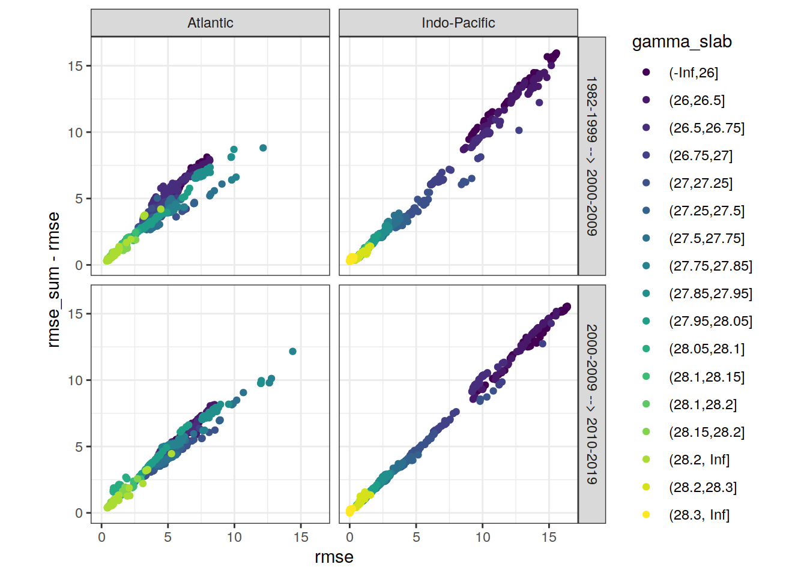
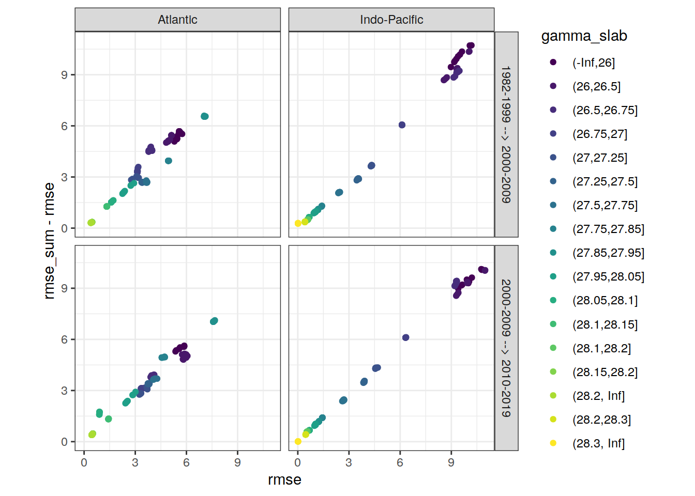
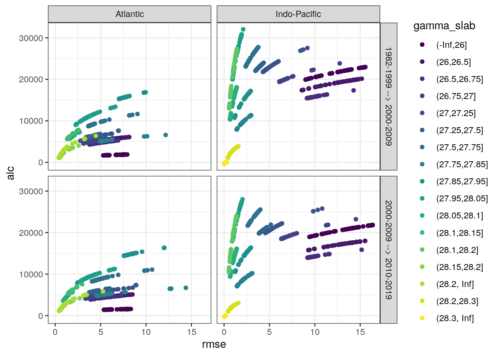
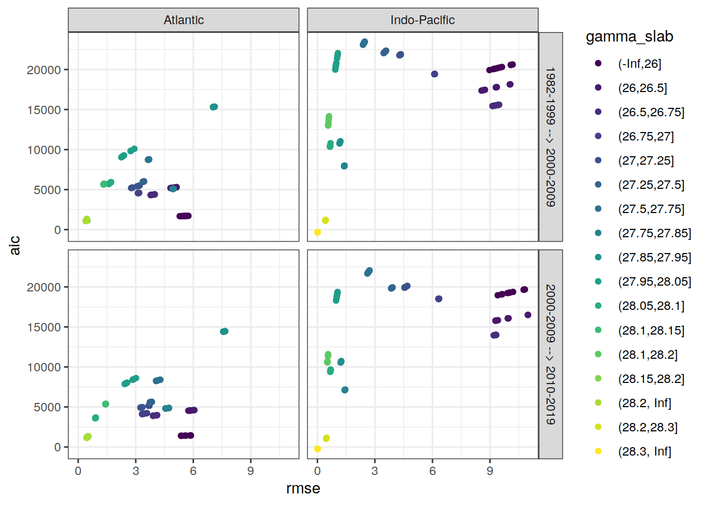

Last updated: 2021-07-15
Checks: 7 0
Knit directory: emlr_mod_v_XXX/
This reproducible R Markdown analysis was created with workflowr (version 1.6.2). The Checks tab describes the reproducibility checks that were applied when the results were created. The Past versions tab lists the development history.
Great! Since the R Markdown file has been committed to the Git repository, you know the exact version of the code that produced these results.
Great job! The global environment was empty. Objects defined in the global environment can affect the analysis in your R Markdown file in unknown ways. For reproduciblity it’s best to always run the code in an empty environment.
The command set.seed(20200707) was run prior to running the code in the R Markdown file. Setting a seed ensures that any results that rely on randomness, e.g. subsampling or permutations, are reproducible.
Great job! Recording the operating system, R version, and package versions is critical for reproducibility.
Nice! There were no cached chunks for this analysis, so you can be confident that you successfully produced the results during this run.
Great job! Using relative paths to the files within your workflowr project makes it easier to run your code on other machines.
Great! You are using Git for version control. Tracking code development and connecting the code version to the results is critical for reproducibility.
The results in this page were generated with repository version 431c254. See the Past versions tab to see a history of the changes made to the R Markdown and HTML files.
Note that you need to be careful to ensure that all relevant files for the analysis have been committed to Git prior to generating the results (you can use wflow_publish or wflow_git_commit). workflowr only checks the R Markdown file, but you know if there are other scripts or data files that it depends on. Below is the status of the Git repository when the results were generated:
Ignored files:
Ignored: .Rhistory
Ignored: .Rproj.user/
Untracked files:
Untracked: docs_GV_2021_2R_mon_standard/
Unstaged changes:
Modified: data/auxillary/params_local.rds
Deleted: docs_GV_2021_2R_ann_standard/.nojekyll
Deleted: docs_GV_2021_2R_ann_standard/analysis_cant_budgets.html
Deleted: docs_GV_2021_2R_ann_standard/analysis_global_section.html
Deleted: docs_GV_2021_2R_ann_standard/analysis_inventory_maps.html
Deleted: docs_GV_2021_2R_ann_standard/analysis_isoneutral_slab_distribution.html
Deleted: docs_GV_2021_2R_ann_standard/analysis_others.html
Deleted: docs_GV_2021_2R_ann_standard/analysis_zonal_mean_sections.html
Deleted: docs_GV_2021_2R_ann_standard/config_dependencies.html
Deleted: docs_GV_2021_2R_ann_standard/config_parameterization_local.html
Deleted: docs_GV_2021_2R_ann_standard/eMLR_GLODAPv2_2020_subsetting.html
Deleted: docs_GV_2021_2R_ann_standard/eMLR_assumption_testing.html
Deleted: docs_GV_2021_2R_ann_standard/eMLR_data_preparation.html
Deleted: docs_GV_2021_2R_ann_standard/eMLR_model_fitting.html
Deleted: docs_GV_2021_2R_ann_standard/figure/analysis_global_section.Rmd/cant_all_global_section-1.png
Deleted: docs_GV_2021_2R_ann_standard/figure/analysis_global_section.Rmd/cant_all_global_section-2.png
Deleted: docs_GV_2021_2R_ann_standard/figure/analysis_global_section.Rmd/cant_all_global_section-3.png
Deleted: docs_GV_2021_2R_ann_standard/figure/analysis_global_section.Rmd/cant_all_global_section-4.png
Deleted: docs_GV_2021_2R_ann_standard/figure/analysis_global_section.Rmd/cant_all_global_section-5.png
Deleted: docs_GV_2021_2R_ann_standard/figure/analysis_global_section.Rmd/cant_all_global_section-6.png
Deleted: docs_GV_2021_2R_ann_standard/figure/analysis_global_section.Rmd/cant_model_quality_check-1.png
Deleted: docs_GV_2021_2R_ann_standard/figure/analysis_global_section.Rmd/cant_pos_global_section-1.png
Deleted: docs_GV_2021_2R_ann_standard/figure/analysis_global_section.Rmd/cant_pos_global_section-2.png
Deleted: docs_GV_2021_2R_ann_standard/figure/analysis_global_section.Rmd/cant_pos_global_section-3.png
Deleted: docs_GV_2021_2R_ann_standard/figure/analysis_global_section.Rmd/cant_pos_global_section-4.png
Deleted: docs_GV_2021_2R_ann_standard/figure/analysis_global_section.Rmd/cant_pos_global_section-5.png
Deleted: docs_GV_2021_2R_ann_standard/figure/analysis_global_section.Rmd/cant_pos_global_section-6.png
Deleted: docs_GV_2021_2R_ann_standard/figure/analysis_global_section.Rmd/cant_pos_model_quality_check-1.png
Deleted: docs_GV_2021_2R_ann_standard/figure/analysis_inventory_maps.Rmd/cant_inventory_map-1.png
Deleted: docs_GV_2021_2R_ann_standard/figure/analysis_inventory_maps.Rmd/cant_inventory_map-2.png
Deleted: docs_GV_2021_2R_ann_standard/figure/analysis_inventory_maps.Rmd/cant_inventory_map-3.png
Deleted: docs_GV_2021_2R_ann_standard/figure/analysis_inventory_maps.Rmd/cant_inventory_map-4.png
Deleted: docs_GV_2021_2R_ann_standard/figure/analysis_inventory_maps.Rmd/cant_inventory_map-5.png
Deleted: docs_GV_2021_2R_ann_standard/figure/analysis_inventory_maps.Rmd/cant_inventory_map-6.png
Deleted: docs_GV_2021_2R_ann_standard/figure/analysis_inventory_maps.Rmd/cant_pos_inventory_map-1.png
Deleted: docs_GV_2021_2R_ann_standard/figure/analysis_inventory_maps.Rmd/cant_pos_inventory_map-2.png
Deleted: docs_GV_2021_2R_ann_standard/figure/analysis_inventory_maps.Rmd/cant_pos_inventory_map-3.png
Deleted: docs_GV_2021_2R_ann_standard/figure/analysis_inventory_maps.Rmd/cant_pos_inventory_map-4.png
Deleted: docs_GV_2021_2R_ann_standard/figure/analysis_inventory_maps.Rmd/cant_pos_inventory_map-5.png
Deleted: docs_GV_2021_2R_ann_standard/figure/analysis_inventory_maps.Rmd/cant_pos_inventory_map-6.png
Deleted: docs_GV_2021_2R_ann_standard/figure/analysis_isoneutral_slab_distribution.Rmd/cant_all_gamma_slab_maps-1.png
Deleted: docs_GV_2021_2R_ann_standard/figure/analysis_isoneutral_slab_distribution.Rmd/cant_all_gamma_slab_maps-10.png
Deleted: docs_GV_2021_2R_ann_standard/figure/analysis_isoneutral_slab_distribution.Rmd/cant_all_gamma_slab_maps-100.png
Deleted: docs_GV_2021_2R_ann_standard/figure/analysis_isoneutral_slab_distribution.Rmd/cant_all_gamma_slab_maps-101.png
Deleted: docs_GV_2021_2R_ann_standard/figure/analysis_isoneutral_slab_distribution.Rmd/cant_all_gamma_slab_maps-102.png
Deleted: docs_GV_2021_2R_ann_standard/figure/analysis_isoneutral_slab_distribution.Rmd/cant_all_gamma_slab_maps-11.png
Deleted: docs_GV_2021_2R_ann_standard/figure/analysis_isoneutral_slab_distribution.Rmd/cant_all_gamma_slab_maps-12.png
Deleted: docs_GV_2021_2R_ann_standard/figure/analysis_isoneutral_slab_distribution.Rmd/cant_all_gamma_slab_maps-13.png
Deleted: docs_GV_2021_2R_ann_standard/figure/analysis_isoneutral_slab_distribution.Rmd/cant_all_gamma_slab_maps-14.png
Deleted: docs_GV_2021_2R_ann_standard/figure/analysis_isoneutral_slab_distribution.Rmd/cant_all_gamma_slab_maps-15.png
Deleted: docs_GV_2021_2R_ann_standard/figure/analysis_isoneutral_slab_distribution.Rmd/cant_all_gamma_slab_maps-16.png
Deleted: docs_GV_2021_2R_ann_standard/figure/analysis_isoneutral_slab_distribution.Rmd/cant_all_gamma_slab_maps-17.png
Deleted: docs_GV_2021_2R_ann_standard/figure/analysis_isoneutral_slab_distribution.Rmd/cant_all_gamma_slab_maps-18.png
Deleted: docs_GV_2021_2R_ann_standard/figure/analysis_isoneutral_slab_distribution.Rmd/cant_all_gamma_slab_maps-19.png
Deleted: docs_GV_2021_2R_ann_standard/figure/analysis_isoneutral_slab_distribution.Rmd/cant_all_gamma_slab_maps-2.png
Deleted: docs_GV_2021_2R_ann_standard/figure/analysis_isoneutral_slab_distribution.Rmd/cant_all_gamma_slab_maps-20.png
Deleted: docs_GV_2021_2R_ann_standard/figure/analysis_isoneutral_slab_distribution.Rmd/cant_all_gamma_slab_maps-21.png
Deleted: docs_GV_2021_2R_ann_standard/figure/analysis_isoneutral_slab_distribution.Rmd/cant_all_gamma_slab_maps-22.png
Deleted: docs_GV_2021_2R_ann_standard/figure/analysis_isoneutral_slab_distribution.Rmd/cant_all_gamma_slab_maps-23.png
Deleted: docs_GV_2021_2R_ann_standard/figure/analysis_isoneutral_slab_distribution.Rmd/cant_all_gamma_slab_maps-24.png
Deleted: docs_GV_2021_2R_ann_standard/figure/analysis_isoneutral_slab_distribution.Rmd/cant_all_gamma_slab_maps-25.png
Deleted: docs_GV_2021_2R_ann_standard/figure/analysis_isoneutral_slab_distribution.Rmd/cant_all_gamma_slab_maps-26.png
Deleted: docs_GV_2021_2R_ann_standard/figure/analysis_isoneutral_slab_distribution.Rmd/cant_all_gamma_slab_maps-27.png
Deleted: docs_GV_2021_2R_ann_standard/figure/analysis_isoneutral_slab_distribution.Rmd/cant_all_gamma_slab_maps-28.png
Deleted: docs_GV_2021_2R_ann_standard/figure/analysis_isoneutral_slab_distribution.Rmd/cant_all_gamma_slab_maps-29.png
Deleted: docs_GV_2021_2R_ann_standard/figure/analysis_isoneutral_slab_distribution.Rmd/cant_all_gamma_slab_maps-3.png
Deleted: docs_GV_2021_2R_ann_standard/figure/analysis_isoneutral_slab_distribution.Rmd/cant_all_gamma_slab_maps-30.png
Deleted: docs_GV_2021_2R_ann_standard/figure/analysis_isoneutral_slab_distribution.Rmd/cant_all_gamma_slab_maps-31.png
Deleted: docs_GV_2021_2R_ann_standard/figure/analysis_isoneutral_slab_distribution.Rmd/cant_all_gamma_slab_maps-32.png
Deleted: docs_GV_2021_2R_ann_standard/figure/analysis_isoneutral_slab_distribution.Rmd/cant_all_gamma_slab_maps-33.png
Deleted: docs_GV_2021_2R_ann_standard/figure/analysis_isoneutral_slab_distribution.Rmd/cant_all_gamma_slab_maps-34.png
Deleted: docs_GV_2021_2R_ann_standard/figure/analysis_isoneutral_slab_distribution.Rmd/cant_all_gamma_slab_maps-35.png
Deleted: docs_GV_2021_2R_ann_standard/figure/analysis_isoneutral_slab_distribution.Rmd/cant_all_gamma_slab_maps-36.png
Deleted: docs_GV_2021_2R_ann_standard/figure/analysis_isoneutral_slab_distribution.Rmd/cant_all_gamma_slab_maps-37.png
Deleted: docs_GV_2021_2R_ann_standard/figure/analysis_isoneutral_slab_distribution.Rmd/cant_all_gamma_slab_maps-38.png
Deleted: docs_GV_2021_2R_ann_standard/figure/analysis_isoneutral_slab_distribution.Rmd/cant_all_gamma_slab_maps-39.png
Deleted: docs_GV_2021_2R_ann_standard/figure/analysis_isoneutral_slab_distribution.Rmd/cant_all_gamma_slab_maps-4.png
Deleted: docs_GV_2021_2R_ann_standard/figure/analysis_isoneutral_slab_distribution.Rmd/cant_all_gamma_slab_maps-40.png
Deleted: docs_GV_2021_2R_ann_standard/figure/analysis_isoneutral_slab_distribution.Rmd/cant_all_gamma_slab_maps-41.png
Deleted: docs_GV_2021_2R_ann_standard/figure/analysis_isoneutral_slab_distribution.Rmd/cant_all_gamma_slab_maps-42.png
Deleted: docs_GV_2021_2R_ann_standard/figure/analysis_isoneutral_slab_distribution.Rmd/cant_all_gamma_slab_maps-43.png
Deleted: docs_GV_2021_2R_ann_standard/figure/analysis_isoneutral_slab_distribution.Rmd/cant_all_gamma_slab_maps-44.png
Deleted: docs_GV_2021_2R_ann_standard/figure/analysis_isoneutral_slab_distribution.Rmd/cant_all_gamma_slab_maps-45.png
Deleted: docs_GV_2021_2R_ann_standard/figure/analysis_isoneutral_slab_distribution.Rmd/cant_all_gamma_slab_maps-46.png
Deleted: docs_GV_2021_2R_ann_standard/figure/analysis_isoneutral_slab_distribution.Rmd/cant_all_gamma_slab_maps-47.png
Deleted: docs_GV_2021_2R_ann_standard/figure/analysis_isoneutral_slab_distribution.Rmd/cant_all_gamma_slab_maps-48.png
Deleted: docs_GV_2021_2R_ann_standard/figure/analysis_isoneutral_slab_distribution.Rmd/cant_all_gamma_slab_maps-49.png
Deleted: docs_GV_2021_2R_ann_standard/figure/analysis_isoneutral_slab_distribution.Rmd/cant_all_gamma_slab_maps-5.png
Deleted: docs_GV_2021_2R_ann_standard/figure/analysis_isoneutral_slab_distribution.Rmd/cant_all_gamma_slab_maps-50.png
Deleted: docs_GV_2021_2R_ann_standard/figure/analysis_isoneutral_slab_distribution.Rmd/cant_all_gamma_slab_maps-51.png
Deleted: docs_GV_2021_2R_ann_standard/figure/analysis_isoneutral_slab_distribution.Rmd/cant_all_gamma_slab_maps-52.png
Deleted: docs_GV_2021_2R_ann_standard/figure/analysis_isoneutral_slab_distribution.Rmd/cant_all_gamma_slab_maps-53.png
Deleted: docs_GV_2021_2R_ann_standard/figure/analysis_isoneutral_slab_distribution.Rmd/cant_all_gamma_slab_maps-54.png
Deleted: docs_GV_2021_2R_ann_standard/figure/analysis_isoneutral_slab_distribution.Rmd/cant_all_gamma_slab_maps-55.png
Deleted: docs_GV_2021_2R_ann_standard/figure/analysis_isoneutral_slab_distribution.Rmd/cant_all_gamma_slab_maps-56.png
Deleted: docs_GV_2021_2R_ann_standard/figure/analysis_isoneutral_slab_distribution.Rmd/cant_all_gamma_slab_maps-57.png
Deleted: docs_GV_2021_2R_ann_standard/figure/analysis_isoneutral_slab_distribution.Rmd/cant_all_gamma_slab_maps-58.png
Deleted: docs_GV_2021_2R_ann_standard/figure/analysis_isoneutral_slab_distribution.Rmd/cant_all_gamma_slab_maps-59.png
Deleted: docs_GV_2021_2R_ann_standard/figure/analysis_isoneutral_slab_distribution.Rmd/cant_all_gamma_slab_maps-6.png
Deleted: docs_GV_2021_2R_ann_standard/figure/analysis_isoneutral_slab_distribution.Rmd/cant_all_gamma_slab_maps-60.png
Deleted: docs_GV_2021_2R_ann_standard/figure/analysis_isoneutral_slab_distribution.Rmd/cant_all_gamma_slab_maps-61.png
Deleted: docs_GV_2021_2R_ann_standard/figure/analysis_isoneutral_slab_distribution.Rmd/cant_all_gamma_slab_maps-62.png
Deleted: docs_GV_2021_2R_ann_standard/figure/analysis_isoneutral_slab_distribution.Rmd/cant_all_gamma_slab_maps-63.png
Deleted: docs_GV_2021_2R_ann_standard/figure/analysis_isoneutral_slab_distribution.Rmd/cant_all_gamma_slab_maps-64.png
Deleted: docs_GV_2021_2R_ann_standard/figure/analysis_isoneutral_slab_distribution.Rmd/cant_all_gamma_slab_maps-65.png
Deleted: docs_GV_2021_2R_ann_standard/figure/analysis_isoneutral_slab_distribution.Rmd/cant_all_gamma_slab_maps-66.png
Deleted: docs_GV_2021_2R_ann_standard/figure/analysis_isoneutral_slab_distribution.Rmd/cant_all_gamma_slab_maps-67.png
Deleted: docs_GV_2021_2R_ann_standard/figure/analysis_isoneutral_slab_distribution.Rmd/cant_all_gamma_slab_maps-68.png
Deleted: docs_GV_2021_2R_ann_standard/figure/analysis_isoneutral_slab_distribution.Rmd/cant_all_gamma_slab_maps-69.png
Deleted: docs_GV_2021_2R_ann_standard/figure/analysis_isoneutral_slab_distribution.Rmd/cant_all_gamma_slab_maps-7.png
Deleted: docs_GV_2021_2R_ann_standard/figure/analysis_isoneutral_slab_distribution.Rmd/cant_all_gamma_slab_maps-70.png
Deleted: docs_GV_2021_2R_ann_standard/figure/analysis_isoneutral_slab_distribution.Rmd/cant_all_gamma_slab_maps-71.png
Deleted: docs_GV_2021_2R_ann_standard/figure/analysis_isoneutral_slab_distribution.Rmd/cant_all_gamma_slab_maps-72.png
Deleted: docs_GV_2021_2R_ann_standard/figure/analysis_isoneutral_slab_distribution.Rmd/cant_all_gamma_slab_maps-73.png
Deleted: docs_GV_2021_2R_ann_standard/figure/analysis_isoneutral_slab_distribution.Rmd/cant_all_gamma_slab_maps-74.png
Deleted: docs_GV_2021_2R_ann_standard/figure/analysis_isoneutral_slab_distribution.Rmd/cant_all_gamma_slab_maps-75.png
Deleted: docs_GV_2021_2R_ann_standard/figure/analysis_isoneutral_slab_distribution.Rmd/cant_all_gamma_slab_maps-76.png
Deleted: docs_GV_2021_2R_ann_standard/figure/analysis_isoneutral_slab_distribution.Rmd/cant_all_gamma_slab_maps-77.png
Deleted: docs_GV_2021_2R_ann_standard/figure/analysis_isoneutral_slab_distribution.Rmd/cant_all_gamma_slab_maps-78.png
Deleted: docs_GV_2021_2R_ann_standard/figure/analysis_isoneutral_slab_distribution.Rmd/cant_all_gamma_slab_maps-79.png
Deleted: docs_GV_2021_2R_ann_standard/figure/analysis_isoneutral_slab_distribution.Rmd/cant_all_gamma_slab_maps-8.png
Deleted: docs_GV_2021_2R_ann_standard/figure/analysis_isoneutral_slab_distribution.Rmd/cant_all_gamma_slab_maps-80.png
Deleted: docs_GV_2021_2R_ann_standard/figure/analysis_isoneutral_slab_distribution.Rmd/cant_all_gamma_slab_maps-81.png
Deleted: docs_GV_2021_2R_ann_standard/figure/analysis_isoneutral_slab_distribution.Rmd/cant_all_gamma_slab_maps-82.png
Deleted: docs_GV_2021_2R_ann_standard/figure/analysis_isoneutral_slab_distribution.Rmd/cant_all_gamma_slab_maps-83.png
Deleted: docs_GV_2021_2R_ann_standard/figure/analysis_isoneutral_slab_distribution.Rmd/cant_all_gamma_slab_maps-84.png
Deleted: docs_GV_2021_2R_ann_standard/figure/analysis_isoneutral_slab_distribution.Rmd/cant_all_gamma_slab_maps-85.png
Deleted: docs_GV_2021_2R_ann_standard/figure/analysis_isoneutral_slab_distribution.Rmd/cant_all_gamma_slab_maps-86.png
Deleted: docs_GV_2021_2R_ann_standard/figure/analysis_isoneutral_slab_distribution.Rmd/cant_all_gamma_slab_maps-87.png
Deleted: docs_GV_2021_2R_ann_standard/figure/analysis_isoneutral_slab_distribution.Rmd/cant_all_gamma_slab_maps-88.png
Deleted: docs_GV_2021_2R_ann_standard/figure/analysis_isoneutral_slab_distribution.Rmd/cant_all_gamma_slab_maps-89.png
Deleted: docs_GV_2021_2R_ann_standard/figure/analysis_isoneutral_slab_distribution.Rmd/cant_all_gamma_slab_maps-9.png
Deleted: docs_GV_2021_2R_ann_standard/figure/analysis_isoneutral_slab_distribution.Rmd/cant_all_gamma_slab_maps-90.png
Deleted: docs_GV_2021_2R_ann_standard/figure/analysis_isoneutral_slab_distribution.Rmd/cant_all_gamma_slab_maps-91.png
Deleted: docs_GV_2021_2R_ann_standard/figure/analysis_isoneutral_slab_distribution.Rmd/cant_all_gamma_slab_maps-92.png
Deleted: docs_GV_2021_2R_ann_standard/figure/analysis_isoneutral_slab_distribution.Rmd/cant_all_gamma_slab_maps-93.png
Deleted: docs_GV_2021_2R_ann_standard/figure/analysis_isoneutral_slab_distribution.Rmd/cant_all_gamma_slab_maps-94.png
Deleted: docs_GV_2021_2R_ann_standard/figure/analysis_isoneutral_slab_distribution.Rmd/cant_all_gamma_slab_maps-95.png
Deleted: docs_GV_2021_2R_ann_standard/figure/analysis_isoneutral_slab_distribution.Rmd/cant_all_gamma_slab_maps-96.png
Deleted: docs_GV_2021_2R_ann_standard/figure/analysis_isoneutral_slab_distribution.Rmd/cant_all_gamma_slab_maps-97.png
Deleted: docs_GV_2021_2R_ann_standard/figure/analysis_isoneutral_slab_distribution.Rmd/cant_all_gamma_slab_maps-98.png
Deleted: docs_GV_2021_2R_ann_standard/figure/analysis_isoneutral_slab_distribution.Rmd/cant_all_gamma_slab_maps-99.png
Deleted: docs_GV_2021_2R_ann_standard/figure/analysis_isoneutral_slab_distribution.Rmd/cant_pos_gamma_slab_maps-1.png
Deleted: docs_GV_2021_2R_ann_standard/figure/analysis_isoneutral_slab_distribution.Rmd/cant_pos_gamma_slab_maps-10.png
Deleted: docs_GV_2021_2R_ann_standard/figure/analysis_isoneutral_slab_distribution.Rmd/cant_pos_gamma_slab_maps-100.png
Deleted: docs_GV_2021_2R_ann_standard/figure/analysis_isoneutral_slab_distribution.Rmd/cant_pos_gamma_slab_maps-101.png
Deleted: docs_GV_2021_2R_ann_standard/figure/analysis_isoneutral_slab_distribution.Rmd/cant_pos_gamma_slab_maps-102.png
Deleted: docs_GV_2021_2R_ann_standard/figure/analysis_isoneutral_slab_distribution.Rmd/cant_pos_gamma_slab_maps-11.png
Deleted: docs_GV_2021_2R_ann_standard/figure/analysis_isoneutral_slab_distribution.Rmd/cant_pos_gamma_slab_maps-12.png
Deleted: docs_GV_2021_2R_ann_standard/figure/analysis_isoneutral_slab_distribution.Rmd/cant_pos_gamma_slab_maps-13.png
Deleted: docs_GV_2021_2R_ann_standard/figure/analysis_isoneutral_slab_distribution.Rmd/cant_pos_gamma_slab_maps-14.png
Deleted: docs_GV_2021_2R_ann_standard/figure/analysis_isoneutral_slab_distribution.Rmd/cant_pos_gamma_slab_maps-15.png
Deleted: docs_GV_2021_2R_ann_standard/figure/analysis_isoneutral_slab_distribution.Rmd/cant_pos_gamma_slab_maps-16.png
Deleted: docs_GV_2021_2R_ann_standard/figure/analysis_isoneutral_slab_distribution.Rmd/cant_pos_gamma_slab_maps-17.png
Deleted: docs_GV_2021_2R_ann_standard/figure/analysis_isoneutral_slab_distribution.Rmd/cant_pos_gamma_slab_maps-18.png
Deleted: docs_GV_2021_2R_ann_standard/figure/analysis_isoneutral_slab_distribution.Rmd/cant_pos_gamma_slab_maps-19.png
Deleted: docs_GV_2021_2R_ann_standard/figure/analysis_isoneutral_slab_distribution.Rmd/cant_pos_gamma_slab_maps-2.png
Deleted: docs_GV_2021_2R_ann_standard/figure/analysis_isoneutral_slab_distribution.Rmd/cant_pos_gamma_slab_maps-20.png
Deleted: docs_GV_2021_2R_ann_standard/figure/analysis_isoneutral_slab_distribution.Rmd/cant_pos_gamma_slab_maps-21.png
Deleted: docs_GV_2021_2R_ann_standard/figure/analysis_isoneutral_slab_distribution.Rmd/cant_pos_gamma_slab_maps-22.png
Deleted: docs_GV_2021_2R_ann_standard/figure/analysis_isoneutral_slab_distribution.Rmd/cant_pos_gamma_slab_maps-23.png
Deleted: docs_GV_2021_2R_ann_standard/figure/analysis_isoneutral_slab_distribution.Rmd/cant_pos_gamma_slab_maps-24.png
Deleted: docs_GV_2021_2R_ann_standard/figure/analysis_isoneutral_slab_distribution.Rmd/cant_pos_gamma_slab_maps-25.png
Deleted: docs_GV_2021_2R_ann_standard/figure/analysis_isoneutral_slab_distribution.Rmd/cant_pos_gamma_slab_maps-26.png
Deleted: docs_GV_2021_2R_ann_standard/figure/analysis_isoneutral_slab_distribution.Rmd/cant_pos_gamma_slab_maps-27.png
Deleted: docs_GV_2021_2R_ann_standard/figure/analysis_isoneutral_slab_distribution.Rmd/cant_pos_gamma_slab_maps-28.png
Deleted: docs_GV_2021_2R_ann_standard/figure/analysis_isoneutral_slab_distribution.Rmd/cant_pos_gamma_slab_maps-29.png
Deleted: docs_GV_2021_2R_ann_standard/figure/analysis_isoneutral_slab_distribution.Rmd/cant_pos_gamma_slab_maps-3.png
Deleted: docs_GV_2021_2R_ann_standard/figure/analysis_isoneutral_slab_distribution.Rmd/cant_pos_gamma_slab_maps-30.png
Deleted: docs_GV_2021_2R_ann_standard/figure/analysis_isoneutral_slab_distribution.Rmd/cant_pos_gamma_slab_maps-31.png
Deleted: docs_GV_2021_2R_ann_standard/figure/analysis_isoneutral_slab_distribution.Rmd/cant_pos_gamma_slab_maps-32.png
Deleted: docs_GV_2021_2R_ann_standard/figure/analysis_isoneutral_slab_distribution.Rmd/cant_pos_gamma_slab_maps-33.png
Deleted: docs_GV_2021_2R_ann_standard/figure/analysis_isoneutral_slab_distribution.Rmd/cant_pos_gamma_slab_maps-34.png
Deleted: docs_GV_2021_2R_ann_standard/figure/analysis_isoneutral_slab_distribution.Rmd/cant_pos_gamma_slab_maps-35.png
Deleted: docs_GV_2021_2R_ann_standard/figure/analysis_isoneutral_slab_distribution.Rmd/cant_pos_gamma_slab_maps-36.png
Deleted: docs_GV_2021_2R_ann_standard/figure/analysis_isoneutral_slab_distribution.Rmd/cant_pos_gamma_slab_maps-37.png
Deleted: docs_GV_2021_2R_ann_standard/figure/analysis_isoneutral_slab_distribution.Rmd/cant_pos_gamma_slab_maps-38.png
Deleted: docs_GV_2021_2R_ann_standard/figure/analysis_isoneutral_slab_distribution.Rmd/cant_pos_gamma_slab_maps-39.png
Deleted: docs_GV_2021_2R_ann_standard/figure/analysis_isoneutral_slab_distribution.Rmd/cant_pos_gamma_slab_maps-4.png
Deleted: docs_GV_2021_2R_ann_standard/figure/analysis_isoneutral_slab_distribution.Rmd/cant_pos_gamma_slab_maps-40.png
Deleted: docs_GV_2021_2R_ann_standard/figure/analysis_isoneutral_slab_distribution.Rmd/cant_pos_gamma_slab_maps-41.png
Deleted: docs_GV_2021_2R_ann_standard/figure/analysis_isoneutral_slab_distribution.Rmd/cant_pos_gamma_slab_maps-42.png
Deleted: docs_GV_2021_2R_ann_standard/figure/analysis_isoneutral_slab_distribution.Rmd/cant_pos_gamma_slab_maps-43.png
Deleted: docs_GV_2021_2R_ann_standard/figure/analysis_isoneutral_slab_distribution.Rmd/cant_pos_gamma_slab_maps-44.png
Deleted: docs_GV_2021_2R_ann_standard/figure/analysis_isoneutral_slab_distribution.Rmd/cant_pos_gamma_slab_maps-45.png
Deleted: docs_GV_2021_2R_ann_standard/figure/analysis_isoneutral_slab_distribution.Rmd/cant_pos_gamma_slab_maps-46.png
Deleted: docs_GV_2021_2R_ann_standard/figure/analysis_isoneutral_slab_distribution.Rmd/cant_pos_gamma_slab_maps-47.png
Deleted: docs_GV_2021_2R_ann_standard/figure/analysis_isoneutral_slab_distribution.Rmd/cant_pos_gamma_slab_maps-48.png
Deleted: docs_GV_2021_2R_ann_standard/figure/analysis_isoneutral_slab_distribution.Rmd/cant_pos_gamma_slab_maps-49.png
Deleted: docs_GV_2021_2R_ann_standard/figure/analysis_isoneutral_slab_distribution.Rmd/cant_pos_gamma_slab_maps-5.png
Deleted: docs_GV_2021_2R_ann_standard/figure/analysis_isoneutral_slab_distribution.Rmd/cant_pos_gamma_slab_maps-50.png
Deleted: docs_GV_2021_2R_ann_standard/figure/analysis_isoneutral_slab_distribution.Rmd/cant_pos_gamma_slab_maps-51.png
Deleted: docs_GV_2021_2R_ann_standard/figure/analysis_isoneutral_slab_distribution.Rmd/cant_pos_gamma_slab_maps-52.png
Deleted: docs_GV_2021_2R_ann_standard/figure/analysis_isoneutral_slab_distribution.Rmd/cant_pos_gamma_slab_maps-53.png
Deleted: docs_GV_2021_2R_ann_standard/figure/analysis_isoneutral_slab_distribution.Rmd/cant_pos_gamma_slab_maps-54.png
Deleted: docs_GV_2021_2R_ann_standard/figure/analysis_isoneutral_slab_distribution.Rmd/cant_pos_gamma_slab_maps-55.png
Deleted: docs_GV_2021_2R_ann_standard/figure/analysis_isoneutral_slab_distribution.Rmd/cant_pos_gamma_slab_maps-56.png
Deleted: docs_GV_2021_2R_ann_standard/figure/analysis_isoneutral_slab_distribution.Rmd/cant_pos_gamma_slab_maps-57.png
Deleted: docs_GV_2021_2R_ann_standard/figure/analysis_isoneutral_slab_distribution.Rmd/cant_pos_gamma_slab_maps-58.png
Deleted: docs_GV_2021_2R_ann_standard/figure/analysis_isoneutral_slab_distribution.Rmd/cant_pos_gamma_slab_maps-59.png
Deleted: docs_GV_2021_2R_ann_standard/figure/analysis_isoneutral_slab_distribution.Rmd/cant_pos_gamma_slab_maps-6.png
Deleted: docs_GV_2021_2R_ann_standard/figure/analysis_isoneutral_slab_distribution.Rmd/cant_pos_gamma_slab_maps-60.png
Deleted: docs_GV_2021_2R_ann_standard/figure/analysis_isoneutral_slab_distribution.Rmd/cant_pos_gamma_slab_maps-61.png
Deleted: docs_GV_2021_2R_ann_standard/figure/analysis_isoneutral_slab_distribution.Rmd/cant_pos_gamma_slab_maps-62.png
Deleted: docs_GV_2021_2R_ann_standard/figure/analysis_isoneutral_slab_distribution.Rmd/cant_pos_gamma_slab_maps-63.png
Deleted: docs_GV_2021_2R_ann_standard/figure/analysis_isoneutral_slab_distribution.Rmd/cant_pos_gamma_slab_maps-64.png
Deleted: docs_GV_2021_2R_ann_standard/figure/analysis_isoneutral_slab_distribution.Rmd/cant_pos_gamma_slab_maps-65.png
Deleted: docs_GV_2021_2R_ann_standard/figure/analysis_isoneutral_slab_distribution.Rmd/cant_pos_gamma_slab_maps-66.png
Deleted: docs_GV_2021_2R_ann_standard/figure/analysis_isoneutral_slab_distribution.Rmd/cant_pos_gamma_slab_maps-67.png
Deleted: docs_GV_2021_2R_ann_standard/figure/analysis_isoneutral_slab_distribution.Rmd/cant_pos_gamma_slab_maps-68.png
Deleted: docs_GV_2021_2R_ann_standard/figure/analysis_isoneutral_slab_distribution.Rmd/cant_pos_gamma_slab_maps-69.png
Deleted: docs_GV_2021_2R_ann_standard/figure/analysis_isoneutral_slab_distribution.Rmd/cant_pos_gamma_slab_maps-7.png
Deleted: docs_GV_2021_2R_ann_standard/figure/analysis_isoneutral_slab_distribution.Rmd/cant_pos_gamma_slab_maps-70.png
Deleted: docs_GV_2021_2R_ann_standard/figure/analysis_isoneutral_slab_distribution.Rmd/cant_pos_gamma_slab_maps-71.png
Deleted: docs_GV_2021_2R_ann_standard/figure/analysis_isoneutral_slab_distribution.Rmd/cant_pos_gamma_slab_maps-72.png
Deleted: docs_GV_2021_2R_ann_standard/figure/analysis_isoneutral_slab_distribution.Rmd/cant_pos_gamma_slab_maps-73.png
Deleted: docs_GV_2021_2R_ann_standard/figure/analysis_isoneutral_slab_distribution.Rmd/cant_pos_gamma_slab_maps-74.png
Deleted: docs_GV_2021_2R_ann_standard/figure/analysis_isoneutral_slab_distribution.Rmd/cant_pos_gamma_slab_maps-75.png
Deleted: docs_GV_2021_2R_ann_standard/figure/analysis_isoneutral_slab_distribution.Rmd/cant_pos_gamma_slab_maps-76.png
Deleted: docs_GV_2021_2R_ann_standard/figure/analysis_isoneutral_slab_distribution.Rmd/cant_pos_gamma_slab_maps-77.png
Deleted: docs_GV_2021_2R_ann_standard/figure/analysis_isoneutral_slab_distribution.Rmd/cant_pos_gamma_slab_maps-78.png
Deleted: docs_GV_2021_2R_ann_standard/figure/analysis_isoneutral_slab_distribution.Rmd/cant_pos_gamma_slab_maps-79.png
Deleted: docs_GV_2021_2R_ann_standard/figure/analysis_isoneutral_slab_distribution.Rmd/cant_pos_gamma_slab_maps-8.png
Deleted: docs_GV_2021_2R_ann_standard/figure/analysis_isoneutral_slab_distribution.Rmd/cant_pos_gamma_slab_maps-80.png
Deleted: docs_GV_2021_2R_ann_standard/figure/analysis_isoneutral_slab_distribution.Rmd/cant_pos_gamma_slab_maps-81.png
Deleted: docs_GV_2021_2R_ann_standard/figure/analysis_isoneutral_slab_distribution.Rmd/cant_pos_gamma_slab_maps-82.png
Deleted: docs_GV_2021_2R_ann_standard/figure/analysis_isoneutral_slab_distribution.Rmd/cant_pos_gamma_slab_maps-83.png
Deleted: docs_GV_2021_2R_ann_standard/figure/analysis_isoneutral_slab_distribution.Rmd/cant_pos_gamma_slab_maps-84.png
Deleted: docs_GV_2021_2R_ann_standard/figure/analysis_isoneutral_slab_distribution.Rmd/cant_pos_gamma_slab_maps-85.png
Deleted: docs_GV_2021_2R_ann_standard/figure/analysis_isoneutral_slab_distribution.Rmd/cant_pos_gamma_slab_maps-86.png
Deleted: docs_GV_2021_2R_ann_standard/figure/analysis_isoneutral_slab_distribution.Rmd/cant_pos_gamma_slab_maps-87.png
Deleted: docs_GV_2021_2R_ann_standard/figure/analysis_isoneutral_slab_distribution.Rmd/cant_pos_gamma_slab_maps-88.png
Deleted: docs_GV_2021_2R_ann_standard/figure/analysis_isoneutral_slab_distribution.Rmd/cant_pos_gamma_slab_maps-89.png
Deleted: docs_GV_2021_2R_ann_standard/figure/analysis_isoneutral_slab_distribution.Rmd/cant_pos_gamma_slab_maps-9.png
Deleted: docs_GV_2021_2R_ann_standard/figure/analysis_isoneutral_slab_distribution.Rmd/cant_pos_gamma_slab_maps-90.png
Deleted: docs_GV_2021_2R_ann_standard/figure/analysis_isoneutral_slab_distribution.Rmd/cant_pos_gamma_slab_maps-91.png
Deleted: docs_GV_2021_2R_ann_standard/figure/analysis_isoneutral_slab_distribution.Rmd/cant_pos_gamma_slab_maps-92.png
Deleted: docs_GV_2021_2R_ann_standard/figure/analysis_isoneutral_slab_distribution.Rmd/cant_pos_gamma_slab_maps-93.png
Deleted: docs_GV_2021_2R_ann_standard/figure/analysis_isoneutral_slab_distribution.Rmd/cant_pos_gamma_slab_maps-94.png
Deleted: docs_GV_2021_2R_ann_standard/figure/analysis_isoneutral_slab_distribution.Rmd/cant_pos_gamma_slab_maps-95.png
Deleted: docs_GV_2021_2R_ann_standard/figure/analysis_isoneutral_slab_distribution.Rmd/cant_pos_gamma_slab_maps-96.png
Deleted: docs_GV_2021_2R_ann_standard/figure/analysis_isoneutral_slab_distribution.Rmd/cant_pos_gamma_slab_maps-97.png
Deleted: docs_GV_2021_2R_ann_standard/figure/analysis_isoneutral_slab_distribution.Rmd/cant_pos_gamma_slab_maps-98.png
Deleted: docs_GV_2021_2R_ann_standard/figure/analysis_isoneutral_slab_distribution.Rmd/cant_pos_gamma_slab_maps-99.png
Deleted: docs_GV_2021_2R_ann_standard/figure/analysis_others.Rmd/cant_section_predictor_contribution-1.png
Deleted: docs_GV_2021_2R_ann_standard/figure/analysis_others.Rmd/cant_section_predictor_contribution-2.png
Deleted: docs_GV_2021_2R_ann_standard/figure/analysis_others.Rmd/cant_section_predictor_contribution-3.png
Deleted: docs_GV_2021_2R_ann_standard/figure/analysis_others.Rmd/cant_section_predictor_contribution-4.png
Deleted: docs_GV_2021_2R_ann_standard/figure/analysis_others.Rmd/cant_section_predictor_contribution-5.png
Deleted: docs_GV_2021_2R_ann_standard/figure/analysis_others.Rmd/cant_section_predictor_contribution-6.png
Deleted: docs_GV_2021_2R_ann_standard/figure/analysis_others.Rmd/cant_section_predictor_contribution-7.png
Deleted: docs_GV_2021_2R_ann_standard/figure/analysis_others.Rmd/cant_section_predictor_contribution-8.png
Deleted: docs_GV_2021_2R_ann_standard/figure/analysis_others.Rmd/cant_sections_sd_cant-1.png
Deleted: docs_GV_2021_2R_ann_standard/figure/analysis_others.Rmd/cant_sections_sd_cant-2.png
Deleted: docs_GV_2021_2R_ann_standard/figure/analysis_others.Rmd/cant_sections_sd_cant-3.png
Deleted: docs_GV_2021_2R_ann_standard/figure/analysis_others.Rmd/cant_sections_sd_cant-4.png
Deleted: docs_GV_2021_2R_ann_standard/figure/analysis_others.Rmd/cant_sections_sd_cant-5.png
Deleted: docs_GV_2021_2R_ann_standard/figure/analysis_others.Rmd/cant_sections_sd_cant-6.png
Deleted: docs_GV_2021_2R_ann_standard/figure/analysis_others.Rmd/cant_sections_sd_models-1.png
Deleted: docs_GV_2021_2R_ann_standard/figure/analysis_others.Rmd/cant_sections_sd_models-2.png
Deleted: docs_GV_2021_2R_ann_standard/figure/analysis_others.Rmd/cant_sections_sd_models-3.png
Deleted: docs_GV_2021_2R_ann_standard/figure/analysis_others.Rmd/cant_sections_sd_models-4.png
Deleted: docs_GV_2021_2R_ann_standard/figure/analysis_others.Rmd/cant_sections_sd_models-5.png
Deleted: docs_GV_2021_2R_ann_standard/figure/analysis_others.Rmd/cant_sections_sd_models-6.png
Deleted: docs_GV_2021_2R_ann_standard/figure/analysis_others.Rmd/cant_vs_sd_by_basin_era-1.png
Deleted: docs_GV_2021_2R_ann_standard/figure/analysis_others.Rmd/cant_vs_sd_by_basin_era_zonal-1.png
Deleted: docs_GV_2021_2R_ann_standard/figure/analysis_others.Rmd/cant_vs_sd_by_basin_gamma-1.png
Deleted: docs_GV_2021_2R_ann_standard/figure/analysis_others.Rmd/cant_vs_sd_by_basin_gamma_zonal-1.png
Deleted: docs_GV_2021_2R_ann_standard/figure/analysis_others.Rmd/gamma_maps-1.png
Deleted: docs_GV_2021_2R_ann_standard/figure/analysis_others.Rmd/target_zonal_mean_era-1.png
Deleted: docs_GV_2021_2R_ann_standard/figure/analysis_others.Rmd/target_zonal_mean_era-2.png
Deleted: docs_GV_2021_2R_ann_standard/figure/analysis_others.Rmd/target_zonal_mean_era-3.png
Deleted: docs_GV_2021_2R_ann_standard/figure/analysis_zonal_mean_sections.Rmd/cant_pos_zonal_mean_section-1.png
Deleted: docs_GV_2021_2R_ann_standard/figure/analysis_zonal_mean_sections.Rmd/cant_pos_zonal_mean_section-10.png
Deleted: docs_GV_2021_2R_ann_standard/figure/analysis_zonal_mean_sections.Rmd/cant_pos_zonal_mean_section-11.png
Deleted: docs_GV_2021_2R_ann_standard/figure/analysis_zonal_mean_sections.Rmd/cant_pos_zonal_mean_section-12.png
Deleted: docs_GV_2021_2R_ann_standard/figure/analysis_zonal_mean_sections.Rmd/cant_pos_zonal_mean_section-13.png
Deleted: docs_GV_2021_2R_ann_standard/figure/analysis_zonal_mean_sections.Rmd/cant_pos_zonal_mean_section-14.png
Deleted: docs_GV_2021_2R_ann_standard/figure/analysis_zonal_mean_sections.Rmd/cant_pos_zonal_mean_section-15.png
Deleted: docs_GV_2021_2R_ann_standard/figure/analysis_zonal_mean_sections.Rmd/cant_pos_zonal_mean_section-16.png
Deleted: docs_GV_2021_2R_ann_standard/figure/analysis_zonal_mean_sections.Rmd/cant_pos_zonal_mean_section-17.png
Deleted: docs_GV_2021_2R_ann_standard/figure/analysis_zonal_mean_sections.Rmd/cant_pos_zonal_mean_section-18.png
Deleted: docs_GV_2021_2R_ann_standard/figure/analysis_zonal_mean_sections.Rmd/cant_pos_zonal_mean_section-2.png
Deleted: docs_GV_2021_2R_ann_standard/figure/analysis_zonal_mean_sections.Rmd/cant_pos_zonal_mean_section-3.png
Deleted: docs_GV_2021_2R_ann_standard/figure/analysis_zonal_mean_sections.Rmd/cant_pos_zonal_mean_section-4.png
Deleted: docs_GV_2021_2R_ann_standard/figure/analysis_zonal_mean_sections.Rmd/cant_pos_zonal_mean_section-5.png
Deleted: docs_GV_2021_2R_ann_standard/figure/analysis_zonal_mean_sections.Rmd/cant_pos_zonal_mean_section-6.png
Deleted: docs_GV_2021_2R_ann_standard/figure/analysis_zonal_mean_sections.Rmd/cant_pos_zonal_mean_section-7.png
Deleted: docs_GV_2021_2R_ann_standard/figure/analysis_zonal_mean_sections.Rmd/cant_pos_zonal_mean_section-8.png
Deleted: docs_GV_2021_2R_ann_standard/figure/analysis_zonal_mean_sections.Rmd/cant_pos_zonal_mean_section-9.png
Deleted: docs_GV_2021_2R_ann_standard/figure/analysis_zonal_mean_sections.Rmd/cant_zonal_mean_section-1.png
Deleted: docs_GV_2021_2R_ann_standard/figure/analysis_zonal_mean_sections.Rmd/cant_zonal_mean_section-10.png
Deleted: docs_GV_2021_2R_ann_standard/figure/analysis_zonal_mean_sections.Rmd/cant_zonal_mean_section-11.png
Deleted: docs_GV_2021_2R_ann_standard/figure/analysis_zonal_mean_sections.Rmd/cant_zonal_mean_section-12.png
Deleted: docs_GV_2021_2R_ann_standard/figure/analysis_zonal_mean_sections.Rmd/cant_zonal_mean_section-13.png
Deleted: docs_GV_2021_2R_ann_standard/figure/analysis_zonal_mean_sections.Rmd/cant_zonal_mean_section-14.png
Deleted: docs_GV_2021_2R_ann_standard/figure/analysis_zonal_mean_sections.Rmd/cant_zonal_mean_section-15.png
Deleted: docs_GV_2021_2R_ann_standard/figure/analysis_zonal_mean_sections.Rmd/cant_zonal_mean_section-16.png
Deleted: docs_GV_2021_2R_ann_standard/figure/analysis_zonal_mean_sections.Rmd/cant_zonal_mean_section-17.png
Deleted: docs_GV_2021_2R_ann_standard/figure/analysis_zonal_mean_sections.Rmd/cant_zonal_mean_section-18.png
Deleted: docs_GV_2021_2R_ann_standard/figure/analysis_zonal_mean_sections.Rmd/cant_zonal_mean_section-2.png
Deleted: docs_GV_2021_2R_ann_standard/figure/analysis_zonal_mean_sections.Rmd/cant_zonal_mean_section-3.png
Deleted: docs_GV_2021_2R_ann_standard/figure/analysis_zonal_mean_sections.Rmd/cant_zonal_mean_section-4.png
Deleted: docs_GV_2021_2R_ann_standard/figure/analysis_zonal_mean_sections.Rmd/cant_zonal_mean_section-5.png
Deleted: docs_GV_2021_2R_ann_standard/figure/analysis_zonal_mean_sections.Rmd/cant_zonal_mean_section-6.png
Deleted: docs_GV_2021_2R_ann_standard/figure/analysis_zonal_mean_sections.Rmd/cant_zonal_mean_section-7.png
Deleted: docs_GV_2021_2R_ann_standard/figure/analysis_zonal_mean_sections.Rmd/cant_zonal_mean_section-8.png
Deleted: docs_GV_2021_2R_ann_standard/figure/analysis_zonal_mean_sections.Rmd/cant_zonal_mean_section-9.png
Deleted: docs_GV_2021_2R_ann_standard/figure/eMLR_GLODAPv2_2020_subsetting.Rmd/GLODAP-based_subsetting_data_cleaning_stats-1.png
Deleted: docs_GV_2021_2R_ann_standard/figure/eMLR_GLODAPv2_2020_subsetting.Rmd/GLODAP_Atl_cruises_2013_2014_map-1.png
Deleted: docs_GV_2021_2R_ann_standard/figure/eMLR_GLODAPv2_2020_subsetting.Rmd/WOA18_basin_mask_GLODAP-based_subsetting_model_data_map-1.png
Deleted: docs_GV_2021_2R_ann_standard/figure/eMLR_GLODAPv2_2020_subsetting.Rmd/coverage_histogram_temporal-1.png
Deleted: docs_GV_2021_2R_ann_standard/figure/eMLR_GLODAPv2_2020_subsetting.Rmd/coverage_histogram_temporal-2.png
Deleted: docs_GV_2021_2R_ann_standard/figure/eMLR_GLODAPv2_2020_subsetting.Rmd/coverage_histogram_zonal-1.png
Deleted: docs_GV_2021_2R_ann_standard/figure/eMLR_GLODAPv2_2020_subsetting.Rmd/coverage_histogram_zonal-2.png
Deleted: docs_GV_2021_2R_ann_standard/figure/eMLR_GLODAPv2_2020_subsetting.Rmd/coverage_hovmoeller-1.png
Deleted: docs_GV_2021_2R_ann_standard/figure/eMLR_GLODAPv2_2020_subsetting.Rmd/coverage_hovmoeller-2.png
Deleted: docs_GV_2021_2R_ann_standard/figure/eMLR_GLODAPv2_2020_subsetting.Rmd/coverage_maps_era_clean-1.png
Deleted: docs_GV_2021_2R_ann_standard/figure/eMLR_GLODAPv2_2020_subsetting.Rmd/coverage_maps_era_subsetting_era_cleaning_level-1.png
Deleted: docs_GV_2021_2R_ann_standard/figure/eMLR_GLODAPv2_2020_subsetting.Rmd/talk_f_subset-1.png
Deleted: docs_GV_2021_2R_ann_standard/figure/eMLR_GLODAPv2_2020_subsetting.Rmd/talk_na_subset-1.png
Deleted: docs_GV_2021_2R_ann_standard/figure/eMLR_GLODAPv2_2020_subsetting.Rmd/talk_qc_subset-1.png
Deleted: docs_GV_2021_2R_ann_standard/figure/eMLR_GLODAPv2_2020_subsetting.Rmd/tco2_f_subset-1.png
Deleted: docs_GV_2021_2R_ann_standard/figure/eMLR_GLODAPv2_2020_subsetting.Rmd/tco2_qc_subset-1.png
Deleted: docs_GV_2021_2R_ann_standard/figure/eMLR_assumption_testing.Rmd/correlation_predictor_pairs-1.png
Deleted: docs_GV_2021_2R_ann_standard/figure/eMLR_assumption_testing.Rmd/correlation_predictors-1.png
Deleted: docs_GV_2021_2R_ann_standard/figure/eMLR_assumption_testing.Rmd/predictor_correlation_per_basin-1.png
Deleted: docs_GV_2021_2R_ann_standard/figure/eMLR_assumption_testing.Rmd/predictor_correlation_per_basin-2.png
Deleted: docs_GV_2021_2R_ann_standard/figure/eMLR_data_preparation.Rmd/cant_interpolation_to_observations-1.png
Deleted: docs_GV_2021_2R_ann_standard/figure/eMLR_data_preparation.Rmd/cant_surface_maps-1.png
Deleted: docs_GV_2021_2R_ann_standard/figure/eMLR_data_preparation.Rmd/cstar_reference_year_adjustment_histogram-1.png
Deleted: docs_GV_2021_2R_ann_standard/figure/eMLR_data_preparation.Rmd/cstar_reference_year_adjustment_vs_time_cant-1.png
Deleted: docs_GV_2021_2R_ann_standard/figure/eMLR_data_preparation.Rmd/cstar_reference_year_adjustment_vs_time_counts-1.png
Deleted: docs_GV_2021_2R_ann_standard/figure/eMLR_data_preparation.Rmd/histogram_predictor-1.png
Deleted: docs_GV_2021_2R_ann_standard/figure/eMLR_data_preparation.Rmd/merge_cstar_cant-1.png
Deleted: docs_GV_2021_2R_ann_standard/figure/eMLR_data_preparation.Rmd/meridional_sections-1.png
Deleted: docs_GV_2021_2R_ann_standard/figure/eMLR_data_preparation.Rmd/meridional_sections-2.png
Deleted: docs_GV_2021_2R_ann_standard/figure/eMLR_data_preparation.Rmd/meridional_sections-3.png
Deleted: docs_GV_2021_2R_ann_standard/figure/eMLR_data_preparation.Rmd/meridional_sections-4.png
Deleted: docs_GV_2021_2R_ann_standard/figure/eMLR_data_preparation.Rmd/meridional_sections-5.png
Deleted: docs_GV_2021_2R_ann_standard/figure/eMLR_data_preparation.Rmd/meridional_sections-6.png
Deleted: docs_GV_2021_2R_ann_standard/figure/eMLR_data_preparation.Rmd/meridional_sections-7.png
Deleted: docs_GV_2021_2R_ann_standard/figure/eMLR_data_preparation.Rmd/meridional_sections_isoneutral_slabs-1.png
Deleted: docs_GV_2021_2R_ann_standard/figure/eMLR_data_preparation.Rmd/obs_gamma_slab-1.png
Deleted: docs_GV_2021_2R_ann_standard/figure/eMLR_data_preparation.Rmd/obs_gamma_slab-2.png
Deleted: docs_GV_2021_2R_ann_standard/figure/eMLR_model_fitting.Rmd/aic_vs_rmse_all_models-1.png
Deleted: docs_GV_2021_2R_ann_standard/figure/eMLR_model_fitting.Rmd/aic_vs_rmse_selected_models-1.png
Deleted: docs_GV_2021_2R_ann_standard/figure/eMLR_model_fitting.Rmd/rmse_correlation_across_eras_all_models-1.png
Deleted: docs_GV_2021_2R_ann_standard/figure/eMLR_model_fitting.Rmd/rmse_correlation_across_eras_best_models-1.png
Deleted: docs_GV_2021_2R_ann_standard/figure/mapping_cant.Rmd/cant_deep_climatology_map-1.png
Deleted: docs_GV_2021_2R_ann_standard/figure/mapping_cant.Rmd/cant_deep_climatology_map-2.png
Deleted: docs_GV_2021_2R_ann_standard/figure/mapping_cant.Rmd/cant_deep_climatology_sections-1.png
Deleted: docs_GV_2021_2R_ann_standard/figure/mapping_cant.Rmd/cant_deep_climatology_sections-2.png
Deleted: docs_GV_2021_2R_ann_standard/figure/mapping_cant.Rmd/cant_inventories-1.png
Deleted: docs_GV_2021_2R_ann_standard/figure/mapping_cant.Rmd/cant_surface_climatology_map-1.png
Deleted: docs_GV_2021_2R_ann_standard/figure/mapping_cant.Rmd/cant_surface_climatology_map-2.png
Deleted: docs_GV_2021_2R_ann_standard/figure/mapping_cant.Rmd/cant_surface_climatology_sections-1.png
Deleted: docs_GV_2021_2R_ann_standard/figure/mapping_cant.Rmd/cant_surface_climatology_sections-2.png
Deleted: docs_GV_2021_2R_ann_standard/figure/mapping_cant.Rmd/pCO2_climatology_map-1.png
Deleted: docs_GV_2021_2R_ann_standard/figure/mapping_cant.Rmd/pCO2_climatology_sections-1.png
Deleted: docs_GV_2021_2R_ann_standard/figure/mapping_cant.Rmd/revelle_factor_climatology_map-1.png
Deleted: docs_GV_2021_2R_ann_standard/figure/mapping_cant.Rmd/revelle_factor_climatology_sections-1.png
Deleted: docs_GV_2021_2R_ann_standard/figure/mapping_predictor_preparation.Rmd/SiO3_star_climatology_maps-1.png
Deleted: docs_GV_2021_2R_ann_standard/figure/mapping_predictor_preparation.Rmd/SiO3_star_climatology_section-1.png
Deleted: docs_GV_2021_2R_ann_standard/figure/mapping_predictor_preparation.Rmd/all_predictor_sections-1.png
Deleted: docs_GV_2021_2R_ann_standard/figure/mapping_predictor_preparation.Rmd/all_predictor_sections-2.png
Deleted: docs_GV_2021_2R_ann_standard/figure/mapping_predictor_preparation.Rmd/all_predictor_sections-3.png
Deleted: docs_GV_2021_2R_ann_standard/figure/mapping_predictor_preparation.Rmd/all_predictor_sections-4.png
Deleted: docs_GV_2021_2R_ann_standard/figure/mapping_predictor_preparation.Rmd/all_predictor_sections-5.png
Deleted: docs_GV_2021_2R_ann_standard/figure/mapping_predictor_preparation.Rmd/all_predictor_sections-6.png
Deleted: docs_GV_2021_2R_ann_standard/figure/mapping_predictor_preparation.Rmd/all_predictor_sections-7.png
Deleted: docs_GV_2021_2R_ann_standard/figure/mapping_predictor_preparation.Rmd/all_predictor_sections-8.png
Deleted: docs_GV_2021_2R_ann_standard/figure/mapping_predictor_preparation.Rmd/all_predictor_sections_surface-1.png
Deleted: docs_GV_2021_2R_ann_standard/figure/mapping_predictor_preparation.Rmd/all_predictor_sections_surface-2.png
Deleted: docs_GV_2021_2R_ann_standard/figure/mapping_predictor_preparation.Rmd/all_predictor_sections_surface-3.png
Deleted: docs_GV_2021_2R_ann_standard/figure/mapping_predictor_preparation.Rmd/all_predictor_sections_surface-4.png
Deleted: docs_GV_2021_2R_ann_standard/figure/mapping_predictor_preparation.Rmd/all_predictor_sections_surface-5.png
Deleted: docs_GV_2021_2R_ann_standard/figure/mapping_predictor_preparation.Rmd/aou_climatology_maps-1.png
Deleted: docs_GV_2021_2R_ann_standard/figure/mapping_predictor_preparation.Rmd/aou_climatology_section-1.png
Deleted: docs_GV_2021_2R_ann_standard/figure/mapping_predictor_preparation.Rmd/joined_climatology_control_TAlk_surface-1.png
Deleted: docs_GV_2021_2R_ann_standard/figure/mapping_predictor_preparation.Rmd/joined_climatology_control_TCO2_surface-1.png
Deleted: docs_GV_2021_2R_ann_standard/figure/mapping_predictor_preparation.Rmd/joined_climatology_control_sal_surface-1.png
Deleted: docs_GV_2021_2R_ann_standard/figure/mapping_predictor_preparation.Rmd/joined_climatology_control_temp-1.png
Deleted: docs_GV_2021_2R_ann_standard/figure/mapping_predictor_preparation.Rmd/joined_climatology_control_temp_surface-1.png
Deleted: docs_GV_2021_2R_ann_standard/figure/mapping_predictor_preparation.Rmd/predictor_profiles_N_Atl-1.png
Deleted: docs_GV_2021_2R_ann_standard/figure/mapping_predictor_preparation.Rmd/predictors_observations_sections_map-1.png
Deleted: docs_GV_2021_2R_ann_standard/figure/mapping_predictor_preparation.Rmd/predictors_observations_sections_map_surface-1.png
Deleted: docs_GV_2021_2R_ann_standard/index.html
Deleted: docs_GV_2021_2R_ann_standard/mapping_cant.html
Deleted: docs_GV_2021_2R_ann_standard/mapping_model_cant.html
Deleted: docs_GV_2021_2R_ann_standard/mapping_predictor_preparation.html
Deleted: docs_GV_2021_2R_ann_standard/mapping_target_variable.html
Deleted: docs_GV_2021_2R_ann_standard/site_libs/anchor-sections-1.0/anchor-sections.css
Deleted: docs_GV_2021_2R_ann_standard/site_libs/anchor-sections-1.0/anchor-sections.js
Deleted: docs_GV_2021_2R_ann_standard/site_libs/bootstrap-3.3.5/css/bootstrap-theme.css
Deleted: docs_GV_2021_2R_ann_standard/site_libs/bootstrap-3.3.5/css/bootstrap-theme.css.map
Deleted: docs_GV_2021_2R_ann_standard/site_libs/bootstrap-3.3.5/css/bootstrap-theme.min.css
Deleted: docs_GV_2021_2R_ann_standard/site_libs/bootstrap-3.3.5/css/bootstrap.css
Deleted: docs_GV_2021_2R_ann_standard/site_libs/bootstrap-3.3.5/css/bootstrap.css.map
Deleted: docs_GV_2021_2R_ann_standard/site_libs/bootstrap-3.3.5/css/bootstrap.min.css
Deleted: docs_GV_2021_2R_ann_standard/site_libs/bootstrap-3.3.5/css/cerulean.min.css
Deleted: docs_GV_2021_2R_ann_standard/site_libs/bootstrap-3.3.5/css/cosmo.min.css
Deleted: docs_GV_2021_2R_ann_standard/site_libs/bootstrap-3.3.5/css/darkly.min.css
Deleted: docs_GV_2021_2R_ann_standard/site_libs/bootstrap-3.3.5/css/flatly.min.css
Deleted: docs_GV_2021_2R_ann_standard/site_libs/bootstrap-3.3.5/css/fonts/Lato.ttf
Deleted: docs_GV_2021_2R_ann_standard/site_libs/bootstrap-3.3.5/css/fonts/LatoBold.ttf
Deleted: docs_GV_2021_2R_ann_standard/site_libs/bootstrap-3.3.5/css/fonts/LatoItalic.ttf
Deleted: docs_GV_2021_2R_ann_standard/site_libs/bootstrap-3.3.5/css/fonts/NewsCycle.ttf
Deleted: docs_GV_2021_2R_ann_standard/site_libs/bootstrap-3.3.5/css/fonts/NewsCycleBold.ttf
Deleted: docs_GV_2021_2R_ann_standard/site_libs/bootstrap-3.3.5/css/fonts/OpenSans.ttf
Deleted: docs_GV_2021_2R_ann_standard/site_libs/bootstrap-3.3.5/css/fonts/OpenSansBold.ttf
Deleted: docs_GV_2021_2R_ann_standard/site_libs/bootstrap-3.3.5/css/fonts/OpenSansBoldItalic.ttf
Deleted: docs_GV_2021_2R_ann_standard/site_libs/bootstrap-3.3.5/css/fonts/OpenSansItalic.ttf
Deleted: docs_GV_2021_2R_ann_standard/site_libs/bootstrap-3.3.5/css/fonts/OpenSansLight.ttf
Deleted: docs_GV_2021_2R_ann_standard/site_libs/bootstrap-3.3.5/css/fonts/OpenSansLightItalic.ttf
Deleted: docs_GV_2021_2R_ann_standard/site_libs/bootstrap-3.3.5/css/fonts/Raleway.ttf
Deleted: docs_GV_2021_2R_ann_standard/site_libs/bootstrap-3.3.5/css/fonts/RalewayBold.ttf
Deleted: docs_GV_2021_2R_ann_standard/site_libs/bootstrap-3.3.5/css/fonts/Roboto.ttf
Deleted: docs_GV_2021_2R_ann_standard/site_libs/bootstrap-3.3.5/css/fonts/RobotoBold.ttf
Deleted: docs_GV_2021_2R_ann_standard/site_libs/bootstrap-3.3.5/css/fonts/RobotoLight.ttf
Deleted: docs_GV_2021_2R_ann_standard/site_libs/bootstrap-3.3.5/css/fonts/RobotoMedium.ttf
Deleted: docs_GV_2021_2R_ann_standard/site_libs/bootstrap-3.3.5/css/fonts/SourceSansPro.ttf
Deleted: docs_GV_2021_2R_ann_standard/site_libs/bootstrap-3.3.5/css/fonts/SourceSansProBold.ttf
Deleted: docs_GV_2021_2R_ann_standard/site_libs/bootstrap-3.3.5/css/fonts/SourceSansProItalic.ttf
Deleted: docs_GV_2021_2R_ann_standard/site_libs/bootstrap-3.3.5/css/fonts/SourceSansProLight.ttf
Deleted: docs_GV_2021_2R_ann_standard/site_libs/bootstrap-3.3.5/css/fonts/Ubuntu.ttf
Deleted: docs_GV_2021_2R_ann_standard/site_libs/bootstrap-3.3.5/css/journal.min.css
Deleted: docs_GV_2021_2R_ann_standard/site_libs/bootstrap-3.3.5/css/lumen.min.css
Deleted: docs_GV_2021_2R_ann_standard/site_libs/bootstrap-3.3.5/css/paper.min.css
Deleted: docs_GV_2021_2R_ann_standard/site_libs/bootstrap-3.3.5/css/readable.min.css
Deleted: docs_GV_2021_2R_ann_standard/site_libs/bootstrap-3.3.5/css/sandstone.min.css
Deleted: docs_GV_2021_2R_ann_standard/site_libs/bootstrap-3.3.5/css/simplex.min.css
Deleted: docs_GV_2021_2R_ann_standard/site_libs/bootstrap-3.3.5/css/spacelab.min.css
Deleted: docs_GV_2021_2R_ann_standard/site_libs/bootstrap-3.3.5/css/united.min.css
Deleted: docs_GV_2021_2R_ann_standard/site_libs/bootstrap-3.3.5/css/yeti.min.css
Deleted: docs_GV_2021_2R_ann_standard/site_libs/bootstrap-3.3.5/fonts/glyphicons-halflings-regular.eot
Deleted: docs_GV_2021_2R_ann_standard/site_libs/bootstrap-3.3.5/fonts/glyphicons-halflings-regular.svg
Deleted: docs_GV_2021_2R_ann_standard/site_libs/bootstrap-3.3.5/fonts/glyphicons-halflings-regular.ttf
Deleted: docs_GV_2021_2R_ann_standard/site_libs/bootstrap-3.3.5/fonts/glyphicons-halflings-regular.woff
Deleted: docs_GV_2021_2R_ann_standard/site_libs/bootstrap-3.3.5/fonts/glyphicons-halflings-regular.woff2
Deleted: docs_GV_2021_2R_ann_standard/site_libs/bootstrap-3.3.5/js/bootstrap.js
Deleted: docs_GV_2021_2R_ann_standard/site_libs/bootstrap-3.3.5/js/bootstrap.min.js
Deleted: docs_GV_2021_2R_ann_standard/site_libs/bootstrap-3.3.5/js/npm.js
Deleted: docs_GV_2021_2R_ann_standard/site_libs/bootstrap-3.3.5/shim/html5shiv.min.js
Deleted: docs_GV_2021_2R_ann_standard/site_libs/bootstrap-3.3.5/shim/respond.min.js
Deleted: docs_GV_2021_2R_ann_standard/site_libs/font-awesome-5.1.0/css/all.css
Deleted: docs_GV_2021_2R_ann_standard/site_libs/font-awesome-5.1.0/css/v4-shims.css
Deleted: docs_GV_2021_2R_ann_standard/site_libs/font-awesome-5.1.0/webfonts/fa-brands-400.eot
Deleted: docs_GV_2021_2R_ann_standard/site_libs/font-awesome-5.1.0/webfonts/fa-brands-400.svg
Deleted: docs_GV_2021_2R_ann_standard/site_libs/font-awesome-5.1.0/webfonts/fa-brands-400.ttf
Deleted: docs_GV_2021_2R_ann_standard/site_libs/font-awesome-5.1.0/webfonts/fa-brands-400.woff
Deleted: docs_GV_2021_2R_ann_standard/site_libs/font-awesome-5.1.0/webfonts/fa-brands-400.woff2
Deleted: docs_GV_2021_2R_ann_standard/site_libs/font-awesome-5.1.0/webfonts/fa-regular-400.eot
Deleted: docs_GV_2021_2R_ann_standard/site_libs/font-awesome-5.1.0/webfonts/fa-regular-400.svg
Deleted: docs_GV_2021_2R_ann_standard/site_libs/font-awesome-5.1.0/webfonts/fa-regular-400.ttf
Deleted: docs_GV_2021_2R_ann_standard/site_libs/font-awesome-5.1.0/webfonts/fa-regular-400.woff
Deleted: docs_GV_2021_2R_ann_standard/site_libs/font-awesome-5.1.0/webfonts/fa-regular-400.woff2
Deleted: docs_GV_2021_2R_ann_standard/site_libs/font-awesome-5.1.0/webfonts/fa-solid-900.eot
Deleted: docs_GV_2021_2R_ann_standard/site_libs/font-awesome-5.1.0/webfonts/fa-solid-900.svg
Deleted: docs_GV_2021_2R_ann_standard/site_libs/font-awesome-5.1.0/webfonts/fa-solid-900.ttf
Deleted: docs_GV_2021_2R_ann_standard/site_libs/font-awesome-5.1.0/webfonts/fa-solid-900.woff
Deleted: docs_GV_2021_2R_ann_standard/site_libs/font-awesome-5.1.0/webfonts/fa-solid-900.woff2
Deleted: docs_GV_2021_2R_ann_standard/site_libs/header-attrs-2.5/header-attrs.js
Deleted: docs_GV_2021_2R_ann_standard/site_libs/highlightjs-9.12.0/default.css
Deleted: docs_GV_2021_2R_ann_standard/site_libs/highlightjs-9.12.0/highlight.js
Deleted: docs_GV_2021_2R_ann_standard/site_libs/highlightjs-9.12.0/textmate.css
Deleted: docs_GV_2021_2R_ann_standard/site_libs/jquery-1.11.3/jquery.min.js
Deleted: docs_GV_2021_2R_ann_standard/site_libs/jqueryui-1.11.4/README
Deleted: docs_GV_2021_2R_ann_standard/site_libs/jqueryui-1.11.4/images/ui-icons_444444_256x240.png
Deleted: docs_GV_2021_2R_ann_standard/site_libs/jqueryui-1.11.4/images/ui-icons_555555_256x240.png
Deleted: docs_GV_2021_2R_ann_standard/site_libs/jqueryui-1.11.4/images/ui-icons_777620_256x240.png
Deleted: docs_GV_2021_2R_ann_standard/site_libs/jqueryui-1.11.4/images/ui-icons_777777_256x240.png
Deleted: docs_GV_2021_2R_ann_standard/site_libs/jqueryui-1.11.4/images/ui-icons_cc0000_256x240.png
Deleted: docs_GV_2021_2R_ann_standard/site_libs/jqueryui-1.11.4/images/ui-icons_ffffff_256x240.png
Deleted: docs_GV_2021_2R_ann_standard/site_libs/jqueryui-1.11.4/index.html
Deleted: docs_GV_2021_2R_ann_standard/site_libs/jqueryui-1.11.4/jquery-ui.css
Deleted: docs_GV_2021_2R_ann_standard/site_libs/jqueryui-1.11.4/jquery-ui.js
Deleted: docs_GV_2021_2R_ann_standard/site_libs/jqueryui-1.11.4/jquery-ui.min.css
Deleted: docs_GV_2021_2R_ann_standard/site_libs/jqueryui-1.11.4/jquery-ui.min.js
Deleted: docs_GV_2021_2R_ann_standard/site_libs/jqueryui-1.11.4/jquery-ui.structure.css
Deleted: docs_GV_2021_2R_ann_standard/site_libs/jqueryui-1.11.4/jquery-ui.structure.min.css
Deleted: docs_GV_2021_2R_ann_standard/site_libs/jqueryui-1.11.4/jquery-ui.theme.css
Deleted: docs_GV_2021_2R_ann_standard/site_libs/jqueryui-1.11.4/jquery-ui.theme.min.css
Deleted: docs_GV_2021_2R_ann_standard/site_libs/kePrint-0.0.1/kePrint.js
Deleted: docs_GV_2021_2R_ann_standard/site_libs/lightable-0.0.1/lightable.css
Deleted: docs_GV_2021_2R_ann_standard/site_libs/navigation-1.1/codefolding.js
Deleted: docs_GV_2021_2R_ann_standard/site_libs/navigation-1.1/sourceembed.js
Deleted: docs_GV_2021_2R_ann_standard/site_libs/navigation-1.1/tabsets.js
Deleted: docs_GV_2021_2R_ann_standard/site_libs/tocify-1.9.1/jquery.tocify.css
Deleted: docs_GV_2021_2R_ann_standard/site_libs/tocify-1.9.1/jquery.tocify.js
Deleted: docs_RV_2021_2R_ann_standard/.nojekyll
Deleted: docs_RV_2021_2R_ann_standard/analysis_cant_budgets.html
Deleted: docs_RV_2021_2R_ann_standard/analysis_global_section.html
Deleted: docs_RV_2021_2R_ann_standard/analysis_inventory_maps.html
Deleted: docs_RV_2021_2R_ann_standard/analysis_isoneutral_slab_distribution.html
Deleted: docs_RV_2021_2R_ann_standard/analysis_others.html
Deleted: docs_RV_2021_2R_ann_standard/analysis_zonal_mean_sections.html
Deleted: docs_RV_2021_2R_ann_standard/config_dependencies.html
Deleted: docs_RV_2021_2R_ann_standard/config_parameterization_local.html
Deleted: docs_RV_2021_2R_ann_standard/eMLR_GLODAPv2_2020_subsetting.html
Deleted: docs_RV_2021_2R_ann_standard/eMLR_assumption_testing.html
Deleted: docs_RV_2021_2R_ann_standard/eMLR_data_preparation.html
Deleted: docs_RV_2021_2R_ann_standard/eMLR_model_fitting.html
Deleted: docs_RV_2021_2R_ann_standard/figure/analysis_global_section.Rmd/cant_all_global_section-1.png
Deleted: docs_RV_2021_2R_ann_standard/figure/analysis_global_section.Rmd/cant_all_global_section-2.png
Deleted: docs_RV_2021_2R_ann_standard/figure/analysis_global_section.Rmd/cant_all_global_section-3.png
Deleted: docs_RV_2021_2R_ann_standard/figure/analysis_global_section.Rmd/cant_all_global_section-4.png
Deleted: docs_RV_2021_2R_ann_standard/figure/analysis_global_section.Rmd/cant_all_global_section-5.png
Deleted: docs_RV_2021_2R_ann_standard/figure/analysis_global_section.Rmd/cant_all_global_section-6.png
Deleted: docs_RV_2021_2R_ann_standard/figure/analysis_global_section.Rmd/cant_model_quality_check-1.png
Deleted: docs_RV_2021_2R_ann_standard/figure/analysis_global_section.Rmd/cant_pos_global_section-1.png
Deleted: docs_RV_2021_2R_ann_standard/figure/analysis_global_section.Rmd/cant_pos_global_section-2.png
Deleted: docs_RV_2021_2R_ann_standard/figure/analysis_global_section.Rmd/cant_pos_global_section-3.png
Deleted: docs_RV_2021_2R_ann_standard/figure/analysis_global_section.Rmd/cant_pos_global_section-4.png
Deleted: docs_RV_2021_2R_ann_standard/figure/analysis_global_section.Rmd/cant_pos_global_section-5.png
Deleted: docs_RV_2021_2R_ann_standard/figure/analysis_global_section.Rmd/cant_pos_global_section-6.png
Deleted: docs_RV_2021_2R_ann_standard/figure/analysis_global_section.Rmd/cant_pos_model_quality_check-1.png
Deleted: docs_RV_2021_2R_ann_standard/figure/analysis_inventory_maps.Rmd/cant_inventory_map-1.png
Deleted: docs_RV_2021_2R_ann_standard/figure/analysis_inventory_maps.Rmd/cant_inventory_map-2.png
Deleted: docs_RV_2021_2R_ann_standard/figure/analysis_inventory_maps.Rmd/cant_inventory_map-3.png
Deleted: docs_RV_2021_2R_ann_standard/figure/analysis_inventory_maps.Rmd/cant_inventory_map-4.png
Deleted: docs_RV_2021_2R_ann_standard/figure/analysis_inventory_maps.Rmd/cant_inventory_map-5.png
Deleted: docs_RV_2021_2R_ann_standard/figure/analysis_inventory_maps.Rmd/cant_inventory_map-6.png
Deleted: docs_RV_2021_2R_ann_standard/figure/analysis_inventory_maps.Rmd/cant_pos_inventory_map-1.png
Deleted: docs_RV_2021_2R_ann_standard/figure/analysis_inventory_maps.Rmd/cant_pos_inventory_map-2.png
Deleted: docs_RV_2021_2R_ann_standard/figure/analysis_inventory_maps.Rmd/cant_pos_inventory_map-3.png
Deleted: docs_RV_2021_2R_ann_standard/figure/analysis_inventory_maps.Rmd/cant_pos_inventory_map-4.png
Deleted: docs_RV_2021_2R_ann_standard/figure/analysis_inventory_maps.Rmd/cant_pos_inventory_map-5.png
Deleted: docs_RV_2021_2R_ann_standard/figure/analysis_inventory_maps.Rmd/cant_pos_inventory_map-6.png
Deleted: docs_RV_2021_2R_ann_standard/figure/analysis_isoneutral_slab_distribution.Rmd/cant_all_gamma_slab_maps-1.png
Deleted: docs_RV_2021_2R_ann_standard/figure/analysis_isoneutral_slab_distribution.Rmd/cant_all_gamma_slab_maps-10.png
Deleted: docs_RV_2021_2R_ann_standard/figure/analysis_isoneutral_slab_distribution.Rmd/cant_all_gamma_slab_maps-100.png
Deleted: docs_RV_2021_2R_ann_standard/figure/analysis_isoneutral_slab_distribution.Rmd/cant_all_gamma_slab_maps-101.png
Deleted: docs_RV_2021_2R_ann_standard/figure/analysis_isoneutral_slab_distribution.Rmd/cant_all_gamma_slab_maps-102.png
Deleted: docs_RV_2021_2R_ann_standard/figure/analysis_isoneutral_slab_distribution.Rmd/cant_all_gamma_slab_maps-11.png
Deleted: docs_RV_2021_2R_ann_standard/figure/analysis_isoneutral_slab_distribution.Rmd/cant_all_gamma_slab_maps-12.png
Deleted: docs_RV_2021_2R_ann_standard/figure/analysis_isoneutral_slab_distribution.Rmd/cant_all_gamma_slab_maps-13.png
Deleted: docs_RV_2021_2R_ann_standard/figure/analysis_isoneutral_slab_distribution.Rmd/cant_all_gamma_slab_maps-14.png
Deleted: docs_RV_2021_2R_ann_standard/figure/analysis_isoneutral_slab_distribution.Rmd/cant_all_gamma_slab_maps-15.png
Deleted: docs_RV_2021_2R_ann_standard/figure/analysis_isoneutral_slab_distribution.Rmd/cant_all_gamma_slab_maps-16.png
Deleted: docs_RV_2021_2R_ann_standard/figure/analysis_isoneutral_slab_distribution.Rmd/cant_all_gamma_slab_maps-17.png
Deleted: docs_RV_2021_2R_ann_standard/figure/analysis_isoneutral_slab_distribution.Rmd/cant_all_gamma_slab_maps-18.png
Deleted: docs_RV_2021_2R_ann_standard/figure/analysis_isoneutral_slab_distribution.Rmd/cant_all_gamma_slab_maps-19.png
Deleted: docs_RV_2021_2R_ann_standard/figure/analysis_isoneutral_slab_distribution.Rmd/cant_all_gamma_slab_maps-2.png
Deleted: docs_RV_2021_2R_ann_standard/figure/analysis_isoneutral_slab_distribution.Rmd/cant_all_gamma_slab_maps-20.png
Deleted: docs_RV_2021_2R_ann_standard/figure/analysis_isoneutral_slab_distribution.Rmd/cant_all_gamma_slab_maps-21.png
Deleted: docs_RV_2021_2R_ann_standard/figure/analysis_isoneutral_slab_distribution.Rmd/cant_all_gamma_slab_maps-22.png
Deleted: docs_RV_2021_2R_ann_standard/figure/analysis_isoneutral_slab_distribution.Rmd/cant_all_gamma_slab_maps-23.png
Deleted: docs_RV_2021_2R_ann_standard/figure/analysis_isoneutral_slab_distribution.Rmd/cant_all_gamma_slab_maps-24.png
Deleted: docs_RV_2021_2R_ann_standard/figure/analysis_isoneutral_slab_distribution.Rmd/cant_all_gamma_slab_maps-25.png
Deleted: docs_RV_2021_2R_ann_standard/figure/analysis_isoneutral_slab_distribution.Rmd/cant_all_gamma_slab_maps-26.png
Deleted: docs_RV_2021_2R_ann_standard/figure/analysis_isoneutral_slab_distribution.Rmd/cant_all_gamma_slab_maps-27.png
Deleted: docs_RV_2021_2R_ann_standard/figure/analysis_isoneutral_slab_distribution.Rmd/cant_all_gamma_slab_maps-28.png
Deleted: docs_RV_2021_2R_ann_standard/figure/analysis_isoneutral_slab_distribution.Rmd/cant_all_gamma_slab_maps-29.png
Deleted: docs_RV_2021_2R_ann_standard/figure/analysis_isoneutral_slab_distribution.Rmd/cant_all_gamma_slab_maps-3.png
Deleted: docs_RV_2021_2R_ann_standard/figure/analysis_isoneutral_slab_distribution.Rmd/cant_all_gamma_slab_maps-30.png
Deleted: docs_RV_2021_2R_ann_standard/figure/analysis_isoneutral_slab_distribution.Rmd/cant_all_gamma_slab_maps-31.png
Deleted: docs_RV_2021_2R_ann_standard/figure/analysis_isoneutral_slab_distribution.Rmd/cant_all_gamma_slab_maps-32.png
Deleted: docs_RV_2021_2R_ann_standard/figure/analysis_isoneutral_slab_distribution.Rmd/cant_all_gamma_slab_maps-33.png
Deleted: docs_RV_2021_2R_ann_standard/figure/analysis_isoneutral_slab_distribution.Rmd/cant_all_gamma_slab_maps-34.png
Deleted: docs_RV_2021_2R_ann_standard/figure/analysis_isoneutral_slab_distribution.Rmd/cant_all_gamma_slab_maps-35.png
Deleted: docs_RV_2021_2R_ann_standard/figure/analysis_isoneutral_slab_distribution.Rmd/cant_all_gamma_slab_maps-36.png
Deleted: docs_RV_2021_2R_ann_standard/figure/analysis_isoneutral_slab_distribution.Rmd/cant_all_gamma_slab_maps-37.png
Deleted: docs_RV_2021_2R_ann_standard/figure/analysis_isoneutral_slab_distribution.Rmd/cant_all_gamma_slab_maps-38.png
Deleted: docs_RV_2021_2R_ann_standard/figure/analysis_isoneutral_slab_distribution.Rmd/cant_all_gamma_slab_maps-39.png
Deleted: docs_RV_2021_2R_ann_standard/figure/analysis_isoneutral_slab_distribution.Rmd/cant_all_gamma_slab_maps-4.png
Deleted: docs_RV_2021_2R_ann_standard/figure/analysis_isoneutral_slab_distribution.Rmd/cant_all_gamma_slab_maps-40.png
Deleted: docs_RV_2021_2R_ann_standard/figure/analysis_isoneutral_slab_distribution.Rmd/cant_all_gamma_slab_maps-41.png
Deleted: docs_RV_2021_2R_ann_standard/figure/analysis_isoneutral_slab_distribution.Rmd/cant_all_gamma_slab_maps-42.png
Deleted: docs_RV_2021_2R_ann_standard/figure/analysis_isoneutral_slab_distribution.Rmd/cant_all_gamma_slab_maps-43.png
Deleted: docs_RV_2021_2R_ann_standard/figure/analysis_isoneutral_slab_distribution.Rmd/cant_all_gamma_slab_maps-44.png
Deleted: docs_RV_2021_2R_ann_standard/figure/analysis_isoneutral_slab_distribution.Rmd/cant_all_gamma_slab_maps-45.png
Deleted: docs_RV_2021_2R_ann_standard/figure/analysis_isoneutral_slab_distribution.Rmd/cant_all_gamma_slab_maps-46.png
Deleted: docs_RV_2021_2R_ann_standard/figure/analysis_isoneutral_slab_distribution.Rmd/cant_all_gamma_slab_maps-47.png
Deleted: docs_RV_2021_2R_ann_standard/figure/analysis_isoneutral_slab_distribution.Rmd/cant_all_gamma_slab_maps-48.png
Deleted: docs_RV_2021_2R_ann_standard/figure/analysis_isoneutral_slab_distribution.Rmd/cant_all_gamma_slab_maps-49.png
Deleted: docs_RV_2021_2R_ann_standard/figure/analysis_isoneutral_slab_distribution.Rmd/cant_all_gamma_slab_maps-5.png
Deleted: docs_RV_2021_2R_ann_standard/figure/analysis_isoneutral_slab_distribution.Rmd/cant_all_gamma_slab_maps-50.png
Deleted: docs_RV_2021_2R_ann_standard/figure/analysis_isoneutral_slab_distribution.Rmd/cant_all_gamma_slab_maps-51.png
Deleted: docs_RV_2021_2R_ann_standard/figure/analysis_isoneutral_slab_distribution.Rmd/cant_all_gamma_slab_maps-52.png
Deleted: docs_RV_2021_2R_ann_standard/figure/analysis_isoneutral_slab_distribution.Rmd/cant_all_gamma_slab_maps-53.png
Deleted: docs_RV_2021_2R_ann_standard/figure/analysis_isoneutral_slab_distribution.Rmd/cant_all_gamma_slab_maps-54.png
Deleted: docs_RV_2021_2R_ann_standard/figure/analysis_isoneutral_slab_distribution.Rmd/cant_all_gamma_slab_maps-55.png
Deleted: docs_RV_2021_2R_ann_standard/figure/analysis_isoneutral_slab_distribution.Rmd/cant_all_gamma_slab_maps-56.png
Deleted: docs_RV_2021_2R_ann_standard/figure/analysis_isoneutral_slab_distribution.Rmd/cant_all_gamma_slab_maps-57.png
Deleted: docs_RV_2021_2R_ann_standard/figure/analysis_isoneutral_slab_distribution.Rmd/cant_all_gamma_slab_maps-58.png
Deleted: docs_RV_2021_2R_ann_standard/figure/analysis_isoneutral_slab_distribution.Rmd/cant_all_gamma_slab_maps-59.png
Deleted: docs_RV_2021_2R_ann_standard/figure/analysis_isoneutral_slab_distribution.Rmd/cant_all_gamma_slab_maps-6.png
Deleted: docs_RV_2021_2R_ann_standard/figure/analysis_isoneutral_slab_distribution.Rmd/cant_all_gamma_slab_maps-60.png
Deleted: docs_RV_2021_2R_ann_standard/figure/analysis_isoneutral_slab_distribution.Rmd/cant_all_gamma_slab_maps-61.png
Deleted: docs_RV_2021_2R_ann_standard/figure/analysis_isoneutral_slab_distribution.Rmd/cant_all_gamma_slab_maps-62.png
Deleted: docs_RV_2021_2R_ann_standard/figure/analysis_isoneutral_slab_distribution.Rmd/cant_all_gamma_slab_maps-63.png
Deleted: docs_RV_2021_2R_ann_standard/figure/analysis_isoneutral_slab_distribution.Rmd/cant_all_gamma_slab_maps-64.png
Deleted: docs_RV_2021_2R_ann_standard/figure/analysis_isoneutral_slab_distribution.Rmd/cant_all_gamma_slab_maps-65.png
Deleted: docs_RV_2021_2R_ann_standard/figure/analysis_isoneutral_slab_distribution.Rmd/cant_all_gamma_slab_maps-66.png
Deleted: docs_RV_2021_2R_ann_standard/figure/analysis_isoneutral_slab_distribution.Rmd/cant_all_gamma_slab_maps-67.png
Deleted: docs_RV_2021_2R_ann_standard/figure/analysis_isoneutral_slab_distribution.Rmd/cant_all_gamma_slab_maps-68.png
Deleted: docs_RV_2021_2R_ann_standard/figure/analysis_isoneutral_slab_distribution.Rmd/cant_all_gamma_slab_maps-69.png
Deleted: docs_RV_2021_2R_ann_standard/figure/analysis_isoneutral_slab_distribution.Rmd/cant_all_gamma_slab_maps-7.png
Deleted: docs_RV_2021_2R_ann_standard/figure/analysis_isoneutral_slab_distribution.Rmd/cant_all_gamma_slab_maps-70.png
Deleted: docs_RV_2021_2R_ann_standard/figure/analysis_isoneutral_slab_distribution.Rmd/cant_all_gamma_slab_maps-71.png
Deleted: docs_RV_2021_2R_ann_standard/figure/analysis_isoneutral_slab_distribution.Rmd/cant_all_gamma_slab_maps-72.png
Deleted: docs_RV_2021_2R_ann_standard/figure/analysis_isoneutral_slab_distribution.Rmd/cant_all_gamma_slab_maps-73.png
Deleted: docs_RV_2021_2R_ann_standard/figure/analysis_isoneutral_slab_distribution.Rmd/cant_all_gamma_slab_maps-74.png
Deleted: docs_RV_2021_2R_ann_standard/figure/analysis_isoneutral_slab_distribution.Rmd/cant_all_gamma_slab_maps-75.png
Deleted: docs_RV_2021_2R_ann_standard/figure/analysis_isoneutral_slab_distribution.Rmd/cant_all_gamma_slab_maps-76.png
Deleted: docs_RV_2021_2R_ann_standard/figure/analysis_isoneutral_slab_distribution.Rmd/cant_all_gamma_slab_maps-77.png
Deleted: docs_RV_2021_2R_ann_standard/figure/analysis_isoneutral_slab_distribution.Rmd/cant_all_gamma_slab_maps-78.png
Deleted: docs_RV_2021_2R_ann_standard/figure/analysis_isoneutral_slab_distribution.Rmd/cant_all_gamma_slab_maps-79.png
Deleted: docs_RV_2021_2R_ann_standard/figure/analysis_isoneutral_slab_distribution.Rmd/cant_all_gamma_slab_maps-8.png
Deleted: docs_RV_2021_2R_ann_standard/figure/analysis_isoneutral_slab_distribution.Rmd/cant_all_gamma_slab_maps-80.png
Deleted: docs_RV_2021_2R_ann_standard/figure/analysis_isoneutral_slab_distribution.Rmd/cant_all_gamma_slab_maps-81.png
Deleted: docs_RV_2021_2R_ann_standard/figure/analysis_isoneutral_slab_distribution.Rmd/cant_all_gamma_slab_maps-82.png
Deleted: docs_RV_2021_2R_ann_standard/figure/analysis_isoneutral_slab_distribution.Rmd/cant_all_gamma_slab_maps-83.png
Deleted: docs_RV_2021_2R_ann_standard/figure/analysis_isoneutral_slab_distribution.Rmd/cant_all_gamma_slab_maps-84.png
Deleted: docs_RV_2021_2R_ann_standard/figure/analysis_isoneutral_slab_distribution.Rmd/cant_all_gamma_slab_maps-85.png
Deleted: docs_RV_2021_2R_ann_standard/figure/analysis_isoneutral_slab_distribution.Rmd/cant_all_gamma_slab_maps-86.png
Deleted: docs_RV_2021_2R_ann_standard/figure/analysis_isoneutral_slab_distribution.Rmd/cant_all_gamma_slab_maps-87.png
Deleted: docs_RV_2021_2R_ann_standard/figure/analysis_isoneutral_slab_distribution.Rmd/cant_all_gamma_slab_maps-88.png
Deleted: docs_RV_2021_2R_ann_standard/figure/analysis_isoneutral_slab_distribution.Rmd/cant_all_gamma_slab_maps-89.png
Deleted: docs_RV_2021_2R_ann_standard/figure/analysis_isoneutral_slab_distribution.Rmd/cant_all_gamma_slab_maps-9.png
Deleted: docs_RV_2021_2R_ann_standard/figure/analysis_isoneutral_slab_distribution.Rmd/cant_all_gamma_slab_maps-90.png
Deleted: docs_RV_2021_2R_ann_standard/figure/analysis_isoneutral_slab_distribution.Rmd/cant_all_gamma_slab_maps-91.png
Deleted: docs_RV_2021_2R_ann_standard/figure/analysis_isoneutral_slab_distribution.Rmd/cant_all_gamma_slab_maps-92.png
Deleted: docs_RV_2021_2R_ann_standard/figure/analysis_isoneutral_slab_distribution.Rmd/cant_all_gamma_slab_maps-93.png
Deleted: docs_RV_2021_2R_ann_standard/figure/analysis_isoneutral_slab_distribution.Rmd/cant_all_gamma_slab_maps-94.png
Deleted: docs_RV_2021_2R_ann_standard/figure/analysis_isoneutral_slab_distribution.Rmd/cant_all_gamma_slab_maps-95.png
Deleted: docs_RV_2021_2R_ann_standard/figure/analysis_isoneutral_slab_distribution.Rmd/cant_all_gamma_slab_maps-96.png
Deleted: docs_RV_2021_2R_ann_standard/figure/analysis_isoneutral_slab_distribution.Rmd/cant_all_gamma_slab_maps-97.png
Deleted: docs_RV_2021_2R_ann_standard/figure/analysis_isoneutral_slab_distribution.Rmd/cant_all_gamma_slab_maps-98.png
Deleted: docs_RV_2021_2R_ann_standard/figure/analysis_isoneutral_slab_distribution.Rmd/cant_all_gamma_slab_maps-99.png
Deleted: docs_RV_2021_2R_ann_standard/figure/analysis_isoneutral_slab_distribution.Rmd/cant_pos_gamma_slab_maps-1.png
Deleted: docs_RV_2021_2R_ann_standard/figure/analysis_isoneutral_slab_distribution.Rmd/cant_pos_gamma_slab_maps-10.png
Deleted: docs_RV_2021_2R_ann_standard/figure/analysis_isoneutral_slab_distribution.Rmd/cant_pos_gamma_slab_maps-100.png
Deleted: docs_RV_2021_2R_ann_standard/figure/analysis_isoneutral_slab_distribution.Rmd/cant_pos_gamma_slab_maps-101.png
Deleted: docs_RV_2021_2R_ann_standard/figure/analysis_isoneutral_slab_distribution.Rmd/cant_pos_gamma_slab_maps-102.png
Deleted: docs_RV_2021_2R_ann_standard/figure/analysis_isoneutral_slab_distribution.Rmd/cant_pos_gamma_slab_maps-11.png
Deleted: docs_RV_2021_2R_ann_standard/figure/analysis_isoneutral_slab_distribution.Rmd/cant_pos_gamma_slab_maps-12.png
Deleted: docs_RV_2021_2R_ann_standard/figure/analysis_isoneutral_slab_distribution.Rmd/cant_pos_gamma_slab_maps-13.png
Deleted: docs_RV_2021_2R_ann_standard/figure/analysis_isoneutral_slab_distribution.Rmd/cant_pos_gamma_slab_maps-14.png
Deleted: docs_RV_2021_2R_ann_standard/figure/analysis_isoneutral_slab_distribution.Rmd/cant_pos_gamma_slab_maps-15.png
Deleted: docs_RV_2021_2R_ann_standard/figure/analysis_isoneutral_slab_distribution.Rmd/cant_pos_gamma_slab_maps-16.png
Deleted: docs_RV_2021_2R_ann_standard/figure/analysis_isoneutral_slab_distribution.Rmd/cant_pos_gamma_slab_maps-17.png
Deleted: docs_RV_2021_2R_ann_standard/figure/analysis_isoneutral_slab_distribution.Rmd/cant_pos_gamma_slab_maps-18.png
Deleted: docs_RV_2021_2R_ann_standard/figure/analysis_isoneutral_slab_distribution.Rmd/cant_pos_gamma_slab_maps-19.png
Deleted: docs_RV_2021_2R_ann_standard/figure/analysis_isoneutral_slab_distribution.Rmd/cant_pos_gamma_slab_maps-2.png
Deleted: docs_RV_2021_2R_ann_standard/figure/analysis_isoneutral_slab_distribution.Rmd/cant_pos_gamma_slab_maps-20.png
Deleted: docs_RV_2021_2R_ann_standard/figure/analysis_isoneutral_slab_distribution.Rmd/cant_pos_gamma_slab_maps-21.png
Deleted: docs_RV_2021_2R_ann_standard/figure/analysis_isoneutral_slab_distribution.Rmd/cant_pos_gamma_slab_maps-22.png
Deleted: docs_RV_2021_2R_ann_standard/figure/analysis_isoneutral_slab_distribution.Rmd/cant_pos_gamma_slab_maps-23.png
Deleted: docs_RV_2021_2R_ann_standard/figure/analysis_isoneutral_slab_distribution.Rmd/cant_pos_gamma_slab_maps-24.png
Deleted: docs_RV_2021_2R_ann_standard/figure/analysis_isoneutral_slab_distribution.Rmd/cant_pos_gamma_slab_maps-25.png
Deleted: docs_RV_2021_2R_ann_standard/figure/analysis_isoneutral_slab_distribution.Rmd/cant_pos_gamma_slab_maps-26.png
Deleted: docs_RV_2021_2R_ann_standard/figure/analysis_isoneutral_slab_distribution.Rmd/cant_pos_gamma_slab_maps-27.png
Deleted: docs_RV_2021_2R_ann_standard/figure/analysis_isoneutral_slab_distribution.Rmd/cant_pos_gamma_slab_maps-28.png
Deleted: docs_RV_2021_2R_ann_standard/figure/analysis_isoneutral_slab_distribution.Rmd/cant_pos_gamma_slab_maps-29.png
Deleted: docs_RV_2021_2R_ann_standard/figure/analysis_isoneutral_slab_distribution.Rmd/cant_pos_gamma_slab_maps-3.png
Deleted: docs_RV_2021_2R_ann_standard/figure/analysis_isoneutral_slab_distribution.Rmd/cant_pos_gamma_slab_maps-30.png
Deleted: docs_RV_2021_2R_ann_standard/figure/analysis_isoneutral_slab_distribution.Rmd/cant_pos_gamma_slab_maps-31.png
Deleted: docs_RV_2021_2R_ann_standard/figure/analysis_isoneutral_slab_distribution.Rmd/cant_pos_gamma_slab_maps-32.png
Deleted: docs_RV_2021_2R_ann_standard/figure/analysis_isoneutral_slab_distribution.Rmd/cant_pos_gamma_slab_maps-33.png
Deleted: docs_RV_2021_2R_ann_standard/figure/analysis_isoneutral_slab_distribution.Rmd/cant_pos_gamma_slab_maps-34.png
Deleted: docs_RV_2021_2R_ann_standard/figure/analysis_isoneutral_slab_distribution.Rmd/cant_pos_gamma_slab_maps-35.png
Deleted: docs_RV_2021_2R_ann_standard/figure/analysis_isoneutral_slab_distribution.Rmd/cant_pos_gamma_slab_maps-36.png
Deleted: docs_RV_2021_2R_ann_standard/figure/analysis_isoneutral_slab_distribution.Rmd/cant_pos_gamma_slab_maps-37.png
Deleted: docs_RV_2021_2R_ann_standard/figure/analysis_isoneutral_slab_distribution.Rmd/cant_pos_gamma_slab_maps-38.png
Deleted: docs_RV_2021_2R_ann_standard/figure/analysis_isoneutral_slab_distribution.Rmd/cant_pos_gamma_slab_maps-39.png
Deleted: docs_RV_2021_2R_ann_standard/figure/analysis_isoneutral_slab_distribution.Rmd/cant_pos_gamma_slab_maps-4.png
Deleted: docs_RV_2021_2R_ann_standard/figure/analysis_isoneutral_slab_distribution.Rmd/cant_pos_gamma_slab_maps-40.png
Deleted: docs_RV_2021_2R_ann_standard/figure/analysis_isoneutral_slab_distribution.Rmd/cant_pos_gamma_slab_maps-41.png
Deleted: docs_RV_2021_2R_ann_standard/figure/analysis_isoneutral_slab_distribution.Rmd/cant_pos_gamma_slab_maps-42.png
Deleted: docs_RV_2021_2R_ann_standard/figure/analysis_isoneutral_slab_distribution.Rmd/cant_pos_gamma_slab_maps-43.png
Deleted: docs_RV_2021_2R_ann_standard/figure/analysis_isoneutral_slab_distribution.Rmd/cant_pos_gamma_slab_maps-44.png
Deleted: docs_RV_2021_2R_ann_standard/figure/analysis_isoneutral_slab_distribution.Rmd/cant_pos_gamma_slab_maps-45.png
Deleted: docs_RV_2021_2R_ann_standard/figure/analysis_isoneutral_slab_distribution.Rmd/cant_pos_gamma_slab_maps-46.png
Deleted: docs_RV_2021_2R_ann_standard/figure/analysis_isoneutral_slab_distribution.Rmd/cant_pos_gamma_slab_maps-47.png
Deleted: docs_RV_2021_2R_ann_standard/figure/analysis_isoneutral_slab_distribution.Rmd/cant_pos_gamma_slab_maps-48.png
Deleted: docs_RV_2021_2R_ann_standard/figure/analysis_isoneutral_slab_distribution.Rmd/cant_pos_gamma_slab_maps-49.png
Deleted: docs_RV_2021_2R_ann_standard/figure/analysis_isoneutral_slab_distribution.Rmd/cant_pos_gamma_slab_maps-5.png
Deleted: docs_RV_2021_2R_ann_standard/figure/analysis_isoneutral_slab_distribution.Rmd/cant_pos_gamma_slab_maps-50.png
Deleted: docs_RV_2021_2R_ann_standard/figure/analysis_isoneutral_slab_distribution.Rmd/cant_pos_gamma_slab_maps-51.png
Deleted: docs_RV_2021_2R_ann_standard/figure/analysis_isoneutral_slab_distribution.Rmd/cant_pos_gamma_slab_maps-52.png
Deleted: docs_RV_2021_2R_ann_standard/figure/analysis_isoneutral_slab_distribution.Rmd/cant_pos_gamma_slab_maps-53.png
Deleted: docs_RV_2021_2R_ann_standard/figure/analysis_isoneutral_slab_distribution.Rmd/cant_pos_gamma_slab_maps-54.png
Deleted: docs_RV_2021_2R_ann_standard/figure/analysis_isoneutral_slab_distribution.Rmd/cant_pos_gamma_slab_maps-55.png
Deleted: docs_RV_2021_2R_ann_standard/figure/analysis_isoneutral_slab_distribution.Rmd/cant_pos_gamma_slab_maps-56.png
Deleted: docs_RV_2021_2R_ann_standard/figure/analysis_isoneutral_slab_distribution.Rmd/cant_pos_gamma_slab_maps-57.png
Deleted: docs_RV_2021_2R_ann_standard/figure/analysis_isoneutral_slab_distribution.Rmd/cant_pos_gamma_slab_maps-58.png
Deleted: docs_RV_2021_2R_ann_standard/figure/analysis_isoneutral_slab_distribution.Rmd/cant_pos_gamma_slab_maps-59.png
Deleted: docs_RV_2021_2R_ann_standard/figure/analysis_isoneutral_slab_distribution.Rmd/cant_pos_gamma_slab_maps-6.png
Deleted: docs_RV_2021_2R_ann_standard/figure/analysis_isoneutral_slab_distribution.Rmd/cant_pos_gamma_slab_maps-60.png
Deleted: docs_RV_2021_2R_ann_standard/figure/analysis_isoneutral_slab_distribution.Rmd/cant_pos_gamma_slab_maps-61.png
Deleted: docs_RV_2021_2R_ann_standard/figure/analysis_isoneutral_slab_distribution.Rmd/cant_pos_gamma_slab_maps-62.png
Deleted: docs_RV_2021_2R_ann_standard/figure/analysis_isoneutral_slab_distribution.Rmd/cant_pos_gamma_slab_maps-63.png
Deleted: docs_RV_2021_2R_ann_standard/figure/analysis_isoneutral_slab_distribution.Rmd/cant_pos_gamma_slab_maps-64.png
Deleted: docs_RV_2021_2R_ann_standard/figure/analysis_isoneutral_slab_distribution.Rmd/cant_pos_gamma_slab_maps-65.png
Deleted: docs_RV_2021_2R_ann_standard/figure/analysis_isoneutral_slab_distribution.Rmd/cant_pos_gamma_slab_maps-66.png
Deleted: docs_RV_2021_2R_ann_standard/figure/analysis_isoneutral_slab_distribution.Rmd/cant_pos_gamma_slab_maps-67.png
Deleted: docs_RV_2021_2R_ann_standard/figure/analysis_isoneutral_slab_distribution.Rmd/cant_pos_gamma_slab_maps-68.png
Deleted: docs_RV_2021_2R_ann_standard/figure/analysis_isoneutral_slab_distribution.Rmd/cant_pos_gamma_slab_maps-69.png
Deleted: docs_RV_2021_2R_ann_standard/figure/analysis_isoneutral_slab_distribution.Rmd/cant_pos_gamma_slab_maps-7.png
Deleted: docs_RV_2021_2R_ann_standard/figure/analysis_isoneutral_slab_distribution.Rmd/cant_pos_gamma_slab_maps-70.png
Deleted: docs_RV_2021_2R_ann_standard/figure/analysis_isoneutral_slab_distribution.Rmd/cant_pos_gamma_slab_maps-71.png
Deleted: docs_RV_2021_2R_ann_standard/figure/analysis_isoneutral_slab_distribution.Rmd/cant_pos_gamma_slab_maps-72.png
Deleted: docs_RV_2021_2R_ann_standard/figure/analysis_isoneutral_slab_distribution.Rmd/cant_pos_gamma_slab_maps-73.png
Deleted: docs_RV_2021_2R_ann_standard/figure/analysis_isoneutral_slab_distribution.Rmd/cant_pos_gamma_slab_maps-74.png
Deleted: docs_RV_2021_2R_ann_standard/figure/analysis_isoneutral_slab_distribution.Rmd/cant_pos_gamma_slab_maps-75.png
Deleted: docs_RV_2021_2R_ann_standard/figure/analysis_isoneutral_slab_distribution.Rmd/cant_pos_gamma_slab_maps-76.png
Deleted: docs_RV_2021_2R_ann_standard/figure/analysis_isoneutral_slab_distribution.Rmd/cant_pos_gamma_slab_maps-77.png
Deleted: docs_RV_2021_2R_ann_standard/figure/analysis_isoneutral_slab_distribution.Rmd/cant_pos_gamma_slab_maps-78.png
Deleted: docs_RV_2021_2R_ann_standard/figure/analysis_isoneutral_slab_distribution.Rmd/cant_pos_gamma_slab_maps-79.png
Deleted: docs_RV_2021_2R_ann_standard/figure/analysis_isoneutral_slab_distribution.Rmd/cant_pos_gamma_slab_maps-8.png
Deleted: docs_RV_2021_2R_ann_standard/figure/analysis_isoneutral_slab_distribution.Rmd/cant_pos_gamma_slab_maps-80.png
Deleted: docs_RV_2021_2R_ann_standard/figure/analysis_isoneutral_slab_distribution.Rmd/cant_pos_gamma_slab_maps-81.png
Deleted: docs_RV_2021_2R_ann_standard/figure/analysis_isoneutral_slab_distribution.Rmd/cant_pos_gamma_slab_maps-82.png
Deleted: docs_RV_2021_2R_ann_standard/figure/analysis_isoneutral_slab_distribution.Rmd/cant_pos_gamma_slab_maps-83.png
Deleted: docs_RV_2021_2R_ann_standard/figure/analysis_isoneutral_slab_distribution.Rmd/cant_pos_gamma_slab_maps-84.png
Deleted: docs_RV_2021_2R_ann_standard/figure/analysis_isoneutral_slab_distribution.Rmd/cant_pos_gamma_slab_maps-85.png
Deleted: docs_RV_2021_2R_ann_standard/figure/analysis_isoneutral_slab_distribution.Rmd/cant_pos_gamma_slab_maps-86.png
Deleted: docs_RV_2021_2R_ann_standard/figure/analysis_isoneutral_slab_distribution.Rmd/cant_pos_gamma_slab_maps-87.png
Deleted: docs_RV_2021_2R_ann_standard/figure/analysis_isoneutral_slab_distribution.Rmd/cant_pos_gamma_slab_maps-88.png
Deleted: docs_RV_2021_2R_ann_standard/figure/analysis_isoneutral_slab_distribution.Rmd/cant_pos_gamma_slab_maps-89.png
Deleted: docs_RV_2021_2R_ann_standard/figure/analysis_isoneutral_slab_distribution.Rmd/cant_pos_gamma_slab_maps-9.png
Deleted: docs_RV_2021_2R_ann_standard/figure/analysis_isoneutral_slab_distribution.Rmd/cant_pos_gamma_slab_maps-90.png
Deleted: docs_RV_2021_2R_ann_standard/figure/analysis_isoneutral_slab_distribution.Rmd/cant_pos_gamma_slab_maps-91.png
Deleted: docs_RV_2021_2R_ann_standard/figure/analysis_isoneutral_slab_distribution.Rmd/cant_pos_gamma_slab_maps-92.png
Deleted: docs_RV_2021_2R_ann_standard/figure/analysis_isoneutral_slab_distribution.Rmd/cant_pos_gamma_slab_maps-93.png
Deleted: docs_RV_2021_2R_ann_standard/figure/analysis_isoneutral_slab_distribution.Rmd/cant_pos_gamma_slab_maps-94.png
Deleted: docs_RV_2021_2R_ann_standard/figure/analysis_isoneutral_slab_distribution.Rmd/cant_pos_gamma_slab_maps-95.png
Deleted: docs_RV_2021_2R_ann_standard/figure/analysis_isoneutral_slab_distribution.Rmd/cant_pos_gamma_slab_maps-96.png
Deleted: docs_RV_2021_2R_ann_standard/figure/analysis_isoneutral_slab_distribution.Rmd/cant_pos_gamma_slab_maps-97.png
Deleted: docs_RV_2021_2R_ann_standard/figure/analysis_isoneutral_slab_distribution.Rmd/cant_pos_gamma_slab_maps-98.png
Deleted: docs_RV_2021_2R_ann_standard/figure/analysis_isoneutral_slab_distribution.Rmd/cant_pos_gamma_slab_maps-99.png
Deleted: docs_RV_2021_2R_ann_standard/figure/analysis_others.Rmd/cant_section_predictor_contribution-1.png
Deleted: docs_RV_2021_2R_ann_standard/figure/analysis_others.Rmd/cant_section_predictor_contribution-2.png
Deleted: docs_RV_2021_2R_ann_standard/figure/analysis_others.Rmd/cant_section_predictor_contribution-3.png
Deleted: docs_RV_2021_2R_ann_standard/figure/analysis_others.Rmd/cant_section_predictor_contribution-4.png
Deleted: docs_RV_2021_2R_ann_standard/figure/analysis_others.Rmd/cant_section_predictor_contribution-5.png
Deleted: docs_RV_2021_2R_ann_standard/figure/analysis_others.Rmd/cant_section_predictor_contribution-6.png
Deleted: docs_RV_2021_2R_ann_standard/figure/analysis_others.Rmd/cant_section_predictor_contribution-7.png
Deleted: docs_RV_2021_2R_ann_standard/figure/analysis_others.Rmd/cant_section_predictor_contribution-8.png
Deleted: docs_RV_2021_2R_ann_standard/figure/analysis_others.Rmd/cant_sections_sd_cant-1.png
Deleted: docs_RV_2021_2R_ann_standard/figure/analysis_others.Rmd/cant_sections_sd_cant-2.png
Deleted: docs_RV_2021_2R_ann_standard/figure/analysis_others.Rmd/cant_sections_sd_cant-3.png
Deleted: docs_RV_2021_2R_ann_standard/figure/analysis_others.Rmd/cant_sections_sd_cant-4.png
Deleted: docs_RV_2021_2R_ann_standard/figure/analysis_others.Rmd/cant_sections_sd_cant-5.png
Deleted: docs_RV_2021_2R_ann_standard/figure/analysis_others.Rmd/cant_sections_sd_cant-6.png
Deleted: docs_RV_2021_2R_ann_standard/figure/analysis_others.Rmd/cant_sections_sd_models-1.png
Deleted: docs_RV_2021_2R_ann_standard/figure/analysis_others.Rmd/cant_sections_sd_models-2.png
Deleted: docs_RV_2021_2R_ann_standard/figure/analysis_others.Rmd/cant_sections_sd_models-3.png
Deleted: docs_RV_2021_2R_ann_standard/figure/analysis_others.Rmd/cant_sections_sd_models-4.png
Deleted: docs_RV_2021_2R_ann_standard/figure/analysis_others.Rmd/cant_sections_sd_models-5.png
Deleted: docs_RV_2021_2R_ann_standard/figure/analysis_others.Rmd/cant_sections_sd_models-6.png
Deleted: docs_RV_2021_2R_ann_standard/figure/analysis_others.Rmd/cant_vs_sd_by_basin_era-1.png
Deleted: docs_RV_2021_2R_ann_standard/figure/analysis_others.Rmd/cant_vs_sd_by_basin_era_zonal-1.png
Deleted: docs_RV_2021_2R_ann_standard/figure/analysis_others.Rmd/cant_vs_sd_by_basin_gamma-1.png
Deleted: docs_RV_2021_2R_ann_standard/figure/analysis_others.Rmd/cant_vs_sd_by_basin_gamma_zonal-1.png
Deleted: docs_RV_2021_2R_ann_standard/figure/analysis_others.Rmd/gamma_maps-1.png
Deleted: docs_RV_2021_2R_ann_standard/figure/analysis_others.Rmd/target_zonal_mean_era-1.png
Deleted: docs_RV_2021_2R_ann_standard/figure/analysis_others.Rmd/target_zonal_mean_era-2.png
Deleted: docs_RV_2021_2R_ann_standard/figure/analysis_others.Rmd/target_zonal_mean_era-3.png
Deleted: docs_RV_2021_2R_ann_standard/figure/analysis_zonal_mean_sections.Rmd/cant_pos_zonal_mean_section-1.png
Deleted: docs_RV_2021_2R_ann_standard/figure/analysis_zonal_mean_sections.Rmd/cant_pos_zonal_mean_section-10.png
Deleted: docs_RV_2021_2R_ann_standard/figure/analysis_zonal_mean_sections.Rmd/cant_pos_zonal_mean_section-11.png
Deleted: docs_RV_2021_2R_ann_standard/figure/analysis_zonal_mean_sections.Rmd/cant_pos_zonal_mean_section-12.png
Deleted: docs_RV_2021_2R_ann_standard/figure/analysis_zonal_mean_sections.Rmd/cant_pos_zonal_mean_section-13.png
Deleted: docs_RV_2021_2R_ann_standard/figure/analysis_zonal_mean_sections.Rmd/cant_pos_zonal_mean_section-14.png
Deleted: docs_RV_2021_2R_ann_standard/figure/analysis_zonal_mean_sections.Rmd/cant_pos_zonal_mean_section-15.png
Deleted: docs_RV_2021_2R_ann_standard/figure/analysis_zonal_mean_sections.Rmd/cant_pos_zonal_mean_section-16.png
Deleted: docs_RV_2021_2R_ann_standard/figure/analysis_zonal_mean_sections.Rmd/cant_pos_zonal_mean_section-17.png
Deleted: docs_RV_2021_2R_ann_standard/figure/analysis_zonal_mean_sections.Rmd/cant_pos_zonal_mean_section-18.png
Deleted: docs_RV_2021_2R_ann_standard/figure/analysis_zonal_mean_sections.Rmd/cant_pos_zonal_mean_section-2.png
Deleted: docs_RV_2021_2R_ann_standard/figure/analysis_zonal_mean_sections.Rmd/cant_pos_zonal_mean_section-3.png
Deleted: docs_RV_2021_2R_ann_standard/figure/analysis_zonal_mean_sections.Rmd/cant_pos_zonal_mean_section-4.png
Deleted: docs_RV_2021_2R_ann_standard/figure/analysis_zonal_mean_sections.Rmd/cant_pos_zonal_mean_section-5.png
Deleted: docs_RV_2021_2R_ann_standard/figure/analysis_zonal_mean_sections.Rmd/cant_pos_zonal_mean_section-6.png
Deleted: docs_RV_2021_2R_ann_standard/figure/analysis_zonal_mean_sections.Rmd/cant_pos_zonal_mean_section-7.png
Deleted: docs_RV_2021_2R_ann_standard/figure/analysis_zonal_mean_sections.Rmd/cant_pos_zonal_mean_section-8.png
Deleted: docs_RV_2021_2R_ann_standard/figure/analysis_zonal_mean_sections.Rmd/cant_pos_zonal_mean_section-9.png
Deleted: docs_RV_2021_2R_ann_standard/figure/analysis_zonal_mean_sections.Rmd/cant_zonal_mean_section-1.png
Deleted: docs_RV_2021_2R_ann_standard/figure/analysis_zonal_mean_sections.Rmd/cant_zonal_mean_section-10.png
Deleted: docs_RV_2021_2R_ann_standard/figure/analysis_zonal_mean_sections.Rmd/cant_zonal_mean_section-11.png
Deleted: docs_RV_2021_2R_ann_standard/figure/analysis_zonal_mean_sections.Rmd/cant_zonal_mean_section-12.png
Deleted: docs_RV_2021_2R_ann_standard/figure/analysis_zonal_mean_sections.Rmd/cant_zonal_mean_section-13.png
Deleted: docs_RV_2021_2R_ann_standard/figure/analysis_zonal_mean_sections.Rmd/cant_zonal_mean_section-14.png
Deleted: docs_RV_2021_2R_ann_standard/figure/analysis_zonal_mean_sections.Rmd/cant_zonal_mean_section-15.png
Deleted: docs_RV_2021_2R_ann_standard/figure/analysis_zonal_mean_sections.Rmd/cant_zonal_mean_section-16.png
Deleted: docs_RV_2021_2R_ann_standard/figure/analysis_zonal_mean_sections.Rmd/cant_zonal_mean_section-17.png
Deleted: docs_RV_2021_2R_ann_standard/figure/analysis_zonal_mean_sections.Rmd/cant_zonal_mean_section-18.png
Deleted: docs_RV_2021_2R_ann_standard/figure/analysis_zonal_mean_sections.Rmd/cant_zonal_mean_section-2.png
Deleted: docs_RV_2021_2R_ann_standard/figure/analysis_zonal_mean_sections.Rmd/cant_zonal_mean_section-3.png
Deleted: docs_RV_2021_2R_ann_standard/figure/analysis_zonal_mean_sections.Rmd/cant_zonal_mean_section-4.png
Deleted: docs_RV_2021_2R_ann_standard/figure/analysis_zonal_mean_sections.Rmd/cant_zonal_mean_section-5.png
Deleted: docs_RV_2021_2R_ann_standard/figure/analysis_zonal_mean_sections.Rmd/cant_zonal_mean_section-6.png
Deleted: docs_RV_2021_2R_ann_standard/figure/analysis_zonal_mean_sections.Rmd/cant_zonal_mean_section-7.png
Deleted: docs_RV_2021_2R_ann_standard/figure/analysis_zonal_mean_sections.Rmd/cant_zonal_mean_section-8.png
Deleted: docs_RV_2021_2R_ann_standard/figure/analysis_zonal_mean_sections.Rmd/cant_zonal_mean_section-9.png
Deleted: docs_RV_2021_2R_ann_standard/figure/eMLR_GLODAPv2_2020_subsetting.Rmd/GLODAP-based_subsetting_data_cleaning_stats-1.png
Deleted: docs_RV_2021_2R_ann_standard/figure/eMLR_GLODAPv2_2020_subsetting.Rmd/GLODAP_Atl_cruises_2013_2014_map-1.png
Deleted: docs_RV_2021_2R_ann_standard/figure/eMLR_GLODAPv2_2020_subsetting.Rmd/WOA18_basin_mask_GLODAP-based_subsetting_model_data_map-1.png
Deleted: docs_RV_2021_2R_ann_standard/figure/eMLR_GLODAPv2_2020_subsetting.Rmd/coverage_histogram_temporal-1.png
Deleted: docs_RV_2021_2R_ann_standard/figure/eMLR_GLODAPv2_2020_subsetting.Rmd/coverage_histogram_temporal-2.png
Deleted: docs_RV_2021_2R_ann_standard/figure/eMLR_GLODAPv2_2020_subsetting.Rmd/coverage_histogram_zonal-1.png
Deleted: docs_RV_2021_2R_ann_standard/figure/eMLR_GLODAPv2_2020_subsetting.Rmd/coverage_histogram_zonal-2.png
Deleted: docs_RV_2021_2R_ann_standard/figure/eMLR_GLODAPv2_2020_subsetting.Rmd/coverage_hovmoeller-1.png
Deleted: docs_RV_2021_2R_ann_standard/figure/eMLR_GLODAPv2_2020_subsetting.Rmd/coverage_hovmoeller-2.png
Deleted: docs_RV_2021_2R_ann_standard/figure/eMLR_GLODAPv2_2020_subsetting.Rmd/coverage_maps_era_clean-1.png
Deleted: docs_RV_2021_2R_ann_standard/figure/eMLR_GLODAPv2_2020_subsetting.Rmd/coverage_maps_era_subsetting_era_cleaning_level-1.png
Deleted: docs_RV_2021_2R_ann_standard/figure/eMLR_GLODAPv2_2020_subsetting.Rmd/talk_f_subset-1.png
Deleted: docs_RV_2021_2R_ann_standard/figure/eMLR_GLODAPv2_2020_subsetting.Rmd/talk_na_subset-1.png
Deleted: docs_RV_2021_2R_ann_standard/figure/eMLR_GLODAPv2_2020_subsetting.Rmd/talk_qc_subset-1.png
Deleted: docs_RV_2021_2R_ann_standard/figure/eMLR_GLODAPv2_2020_subsetting.Rmd/tco2_f_subset-1.png
Deleted: docs_RV_2021_2R_ann_standard/figure/eMLR_GLODAPv2_2020_subsetting.Rmd/tco2_qc_subset-1.png
Deleted: docs_RV_2021_2R_ann_standard/figure/eMLR_assumption_testing.Rmd/correlation_predictor_pairs-1.png
Deleted: docs_RV_2021_2R_ann_standard/figure/eMLR_assumption_testing.Rmd/correlation_predictors-1.png
Deleted: docs_RV_2021_2R_ann_standard/figure/eMLR_assumption_testing.Rmd/predictor_correlation_per_basin-1.png
Deleted: docs_RV_2021_2R_ann_standard/figure/eMLR_assumption_testing.Rmd/predictor_correlation_per_basin-2.png
Deleted: docs_RV_2021_2R_ann_standard/figure/eMLR_data_preparation.Rmd/cant_interpolation_to_observations-1.png
Deleted: docs_RV_2021_2R_ann_standard/figure/eMLR_data_preparation.Rmd/cant_surface_maps-1.png
Deleted: docs_RV_2021_2R_ann_standard/figure/eMLR_data_preparation.Rmd/cstar_reference_year_adjustment_histogram-1.png
Deleted: docs_RV_2021_2R_ann_standard/figure/eMLR_data_preparation.Rmd/cstar_reference_year_adjustment_vs_time_cant-1.png
Deleted: docs_RV_2021_2R_ann_standard/figure/eMLR_data_preparation.Rmd/cstar_reference_year_adjustment_vs_time_counts-1.png
Deleted: docs_RV_2021_2R_ann_standard/figure/eMLR_data_preparation.Rmd/histogram_predictor-1.png
Deleted: docs_RV_2021_2R_ann_standard/figure/eMLR_data_preparation.Rmd/merge_cstar_cant-1.png
Deleted: docs_RV_2021_2R_ann_standard/figure/eMLR_data_preparation.Rmd/meridional_sections-1.png
Deleted: docs_RV_2021_2R_ann_standard/figure/eMLR_data_preparation.Rmd/meridional_sections-2.png
Deleted: docs_RV_2021_2R_ann_standard/figure/eMLR_data_preparation.Rmd/meridional_sections-3.png
Deleted: docs_RV_2021_2R_ann_standard/figure/eMLR_data_preparation.Rmd/meridional_sections-4.png
Deleted: docs_RV_2021_2R_ann_standard/figure/eMLR_data_preparation.Rmd/meridional_sections-5.png
Deleted: docs_RV_2021_2R_ann_standard/figure/eMLR_data_preparation.Rmd/meridional_sections-6.png
Deleted: docs_RV_2021_2R_ann_standard/figure/eMLR_data_preparation.Rmd/meridional_sections-7.png
Deleted: docs_RV_2021_2R_ann_standard/figure/eMLR_data_preparation.Rmd/meridional_sections_isoneutral_slabs-1.png
Deleted: docs_RV_2021_2R_ann_standard/figure/eMLR_data_preparation.Rmd/obs_gamma_slab-1.png
Deleted: docs_RV_2021_2R_ann_standard/figure/eMLR_data_preparation.Rmd/obs_gamma_slab-2.png
Deleted: docs_RV_2021_2R_ann_standard/figure/eMLR_model_fitting.Rmd/aic_vs_rmse_all_models-1.png
Deleted: docs_RV_2021_2R_ann_standard/figure/eMLR_model_fitting.Rmd/aic_vs_rmse_selected_models-1.png
Deleted: docs_RV_2021_2R_ann_standard/figure/eMLR_model_fitting.Rmd/rmse_correlation_across_eras_all_models-1.png
Deleted: docs_RV_2021_2R_ann_standard/figure/eMLR_model_fitting.Rmd/rmse_correlation_across_eras_best_models-1.png
Deleted: docs_RV_2021_2R_ann_standard/figure/mapping_cant.Rmd/cant_deep_climatology_map-1.png
Deleted: docs_RV_2021_2R_ann_standard/figure/mapping_cant.Rmd/cant_deep_climatology_map-2.png
Deleted: docs_RV_2021_2R_ann_standard/figure/mapping_cant.Rmd/cant_deep_climatology_sections-1.png
Deleted: docs_RV_2021_2R_ann_standard/figure/mapping_cant.Rmd/cant_deep_climatology_sections-2.png
Deleted: docs_RV_2021_2R_ann_standard/figure/mapping_cant.Rmd/cant_inventories-1.png
Deleted: docs_RV_2021_2R_ann_standard/figure/mapping_cant.Rmd/cant_surface_climatology_map-1.png
Deleted: docs_RV_2021_2R_ann_standard/figure/mapping_cant.Rmd/cant_surface_climatology_map-2.png
Deleted: docs_RV_2021_2R_ann_standard/figure/mapping_cant.Rmd/cant_surface_climatology_sections-1.png
Deleted: docs_RV_2021_2R_ann_standard/figure/mapping_cant.Rmd/cant_surface_climatology_sections-2.png
Deleted: docs_RV_2021_2R_ann_standard/figure/mapping_cant.Rmd/pCO2_climatology_map-1.png
Deleted: docs_RV_2021_2R_ann_standard/figure/mapping_cant.Rmd/pCO2_climatology_sections-1.png
Deleted: docs_RV_2021_2R_ann_standard/figure/mapping_cant.Rmd/revelle_factor_climatology_map-1.png
Deleted: docs_RV_2021_2R_ann_standard/figure/mapping_cant.Rmd/revelle_factor_climatology_sections-1.png
Deleted: docs_RV_2021_2R_ann_standard/figure/mapping_predictor_preparation.Rmd/SiO3_star_climatology_maps-1.png
Deleted: docs_RV_2021_2R_ann_standard/figure/mapping_predictor_preparation.Rmd/SiO3_star_climatology_section-1.png
Deleted: docs_RV_2021_2R_ann_standard/figure/mapping_predictor_preparation.Rmd/all_predictor_sections-1.png
Deleted: docs_RV_2021_2R_ann_standard/figure/mapping_predictor_preparation.Rmd/all_predictor_sections-2.png
Deleted: docs_RV_2021_2R_ann_standard/figure/mapping_predictor_preparation.Rmd/all_predictor_sections-3.png
Deleted: docs_RV_2021_2R_ann_standard/figure/mapping_predictor_preparation.Rmd/all_predictor_sections-4.png
Deleted: docs_RV_2021_2R_ann_standard/figure/mapping_predictor_preparation.Rmd/all_predictor_sections-5.png
Deleted: docs_RV_2021_2R_ann_standard/figure/mapping_predictor_preparation.Rmd/all_predictor_sections-6.png
Deleted: docs_RV_2021_2R_ann_standard/figure/mapping_predictor_preparation.Rmd/all_predictor_sections-7.png
Deleted: docs_RV_2021_2R_ann_standard/figure/mapping_predictor_preparation.Rmd/all_predictor_sections-8.png
Deleted: docs_RV_2021_2R_ann_standard/figure/mapping_predictor_preparation.Rmd/all_predictor_sections_surface-1.png
Deleted: docs_RV_2021_2R_ann_standard/figure/mapping_predictor_preparation.Rmd/all_predictor_sections_surface-2.png
Deleted: docs_RV_2021_2R_ann_standard/figure/mapping_predictor_preparation.Rmd/all_predictor_sections_surface-3.png
Deleted: docs_RV_2021_2R_ann_standard/figure/mapping_predictor_preparation.Rmd/all_predictor_sections_surface-4.png
Deleted: docs_RV_2021_2R_ann_standard/figure/mapping_predictor_preparation.Rmd/all_predictor_sections_surface-5.png
Deleted: docs_RV_2021_2R_ann_standard/figure/mapping_predictor_preparation.Rmd/aou_climatology_maps-1.png
Deleted: docs_RV_2021_2R_ann_standard/figure/mapping_predictor_preparation.Rmd/aou_climatology_section-1.png
Deleted: docs_RV_2021_2R_ann_standard/figure/mapping_predictor_preparation.Rmd/joined_climatology_control_TAlk_surface-1.png
Deleted: docs_RV_2021_2R_ann_standard/figure/mapping_predictor_preparation.Rmd/joined_climatology_control_TCO2_surface-1.png
Deleted: docs_RV_2021_2R_ann_standard/figure/mapping_predictor_preparation.Rmd/joined_climatology_control_sal_surface-1.png
Deleted: docs_RV_2021_2R_ann_standard/figure/mapping_predictor_preparation.Rmd/joined_climatology_control_temp-1.png
Deleted: docs_RV_2021_2R_ann_standard/figure/mapping_predictor_preparation.Rmd/joined_climatology_control_temp_surface-1.png
Deleted: docs_RV_2021_2R_ann_standard/figure/mapping_predictor_preparation.Rmd/predictor_profiles_N_Atl-1.png
Deleted: docs_RV_2021_2R_ann_standard/figure/mapping_predictor_preparation.Rmd/predictors_observations_sections_map-1.png
Deleted: docs_RV_2021_2R_ann_standard/figure/mapping_predictor_preparation.Rmd/predictors_observations_sections_map_surface-1.png
Deleted: docs_RV_2021_2R_ann_standard/index.html
Deleted: docs_RV_2021_2R_ann_standard/mapping_cant.html
Deleted: docs_RV_2021_2R_ann_standard/mapping_model_cant.html
Deleted: docs_RV_2021_2R_ann_standard/mapping_predictor_preparation.html
Deleted: docs_RV_2021_2R_ann_standard/mapping_target_variable.html
Deleted: docs_RV_2021_2R_ann_standard/site_libs/anchor-sections-1.0/anchor-sections.css
Deleted: docs_RV_2021_2R_ann_standard/site_libs/anchor-sections-1.0/anchor-sections.js
Deleted: docs_RV_2021_2R_ann_standard/site_libs/bootstrap-3.3.5/css/bootstrap-theme.css
Deleted: docs_RV_2021_2R_ann_standard/site_libs/bootstrap-3.3.5/css/bootstrap-theme.css.map
Deleted: docs_RV_2021_2R_ann_standard/site_libs/bootstrap-3.3.5/css/bootstrap-theme.min.css
Deleted: docs_RV_2021_2R_ann_standard/site_libs/bootstrap-3.3.5/css/bootstrap.css
Deleted: docs_RV_2021_2R_ann_standard/site_libs/bootstrap-3.3.5/css/bootstrap.css.map
Deleted: docs_RV_2021_2R_ann_standard/site_libs/bootstrap-3.3.5/css/bootstrap.min.css
Deleted: docs_RV_2021_2R_ann_standard/site_libs/bootstrap-3.3.5/css/cerulean.min.css
Deleted: docs_RV_2021_2R_ann_standard/site_libs/bootstrap-3.3.5/css/cosmo.min.css
Deleted: docs_RV_2021_2R_ann_standard/site_libs/bootstrap-3.3.5/css/darkly.min.css
Deleted: docs_RV_2021_2R_ann_standard/site_libs/bootstrap-3.3.5/css/flatly.min.css
Deleted: docs_RV_2021_2R_ann_standard/site_libs/bootstrap-3.3.5/css/fonts/Lato.ttf
Deleted: docs_RV_2021_2R_ann_standard/site_libs/bootstrap-3.3.5/css/fonts/LatoBold.ttf
Deleted: docs_RV_2021_2R_ann_standard/site_libs/bootstrap-3.3.5/css/fonts/LatoItalic.ttf
Deleted: docs_RV_2021_2R_ann_standard/site_libs/bootstrap-3.3.5/css/fonts/NewsCycle.ttf
Deleted: docs_RV_2021_2R_ann_standard/site_libs/bootstrap-3.3.5/css/fonts/NewsCycleBold.ttf
Deleted: docs_RV_2021_2R_ann_standard/site_libs/bootstrap-3.3.5/css/fonts/OpenSans.ttf
Deleted: docs_RV_2021_2R_ann_standard/site_libs/bootstrap-3.3.5/css/fonts/OpenSansBold.ttf
Deleted: docs_RV_2021_2R_ann_standard/site_libs/bootstrap-3.3.5/css/fonts/OpenSansBoldItalic.ttf
Deleted: docs_RV_2021_2R_ann_standard/site_libs/bootstrap-3.3.5/css/fonts/OpenSansItalic.ttf
Deleted: docs_RV_2021_2R_ann_standard/site_libs/bootstrap-3.3.5/css/fonts/OpenSansLight.ttf
Deleted: docs_RV_2021_2R_ann_standard/site_libs/bootstrap-3.3.5/css/fonts/OpenSansLightItalic.ttf
Deleted: docs_RV_2021_2R_ann_standard/site_libs/bootstrap-3.3.5/css/fonts/Raleway.ttf
Deleted: docs_RV_2021_2R_ann_standard/site_libs/bootstrap-3.3.5/css/fonts/RalewayBold.ttf
Deleted: docs_RV_2021_2R_ann_standard/site_libs/bootstrap-3.3.5/css/fonts/Roboto.ttf
Deleted: docs_RV_2021_2R_ann_standard/site_libs/bootstrap-3.3.5/css/fonts/RobotoBold.ttf
Deleted: docs_RV_2021_2R_ann_standard/site_libs/bootstrap-3.3.5/css/fonts/RobotoLight.ttf
Deleted: docs_RV_2021_2R_ann_standard/site_libs/bootstrap-3.3.5/css/fonts/RobotoMedium.ttf
Deleted: docs_RV_2021_2R_ann_standard/site_libs/bootstrap-3.3.5/css/fonts/SourceSansPro.ttf
Deleted: docs_RV_2021_2R_ann_standard/site_libs/bootstrap-3.3.5/css/fonts/SourceSansProBold.ttf
Deleted: docs_RV_2021_2R_ann_standard/site_libs/bootstrap-3.3.5/css/fonts/SourceSansProItalic.ttf
Deleted: docs_RV_2021_2R_ann_standard/site_libs/bootstrap-3.3.5/css/fonts/SourceSansProLight.ttf
Deleted: docs_RV_2021_2R_ann_standard/site_libs/bootstrap-3.3.5/css/fonts/Ubuntu.ttf
Deleted: docs_RV_2021_2R_ann_standard/site_libs/bootstrap-3.3.5/css/journal.min.css
Deleted: docs_RV_2021_2R_ann_standard/site_libs/bootstrap-3.3.5/css/lumen.min.css
Deleted: docs_RV_2021_2R_ann_standard/site_libs/bootstrap-3.3.5/css/paper.min.css
Deleted: docs_RV_2021_2R_ann_standard/site_libs/bootstrap-3.3.5/css/readable.min.css
Deleted: docs_RV_2021_2R_ann_standard/site_libs/bootstrap-3.3.5/css/sandstone.min.css
Deleted: docs_RV_2021_2R_ann_standard/site_libs/bootstrap-3.3.5/css/simplex.min.css
Deleted: docs_RV_2021_2R_ann_standard/site_libs/bootstrap-3.3.5/css/spacelab.min.css
Deleted: docs_RV_2021_2R_ann_standard/site_libs/bootstrap-3.3.5/css/united.min.css
Deleted: docs_RV_2021_2R_ann_standard/site_libs/bootstrap-3.3.5/css/yeti.min.css
Deleted: docs_RV_2021_2R_ann_standard/site_libs/bootstrap-3.3.5/fonts/glyphicons-halflings-regular.eot
Deleted: docs_RV_2021_2R_ann_standard/site_libs/bootstrap-3.3.5/fonts/glyphicons-halflings-regular.svg
Deleted: docs_RV_2021_2R_ann_standard/site_libs/bootstrap-3.3.5/fonts/glyphicons-halflings-regular.ttf
Deleted: docs_RV_2021_2R_ann_standard/site_libs/bootstrap-3.3.5/fonts/glyphicons-halflings-regular.woff
Deleted: docs_RV_2021_2R_ann_standard/site_libs/bootstrap-3.3.5/fonts/glyphicons-halflings-regular.woff2
Deleted: docs_RV_2021_2R_ann_standard/site_libs/bootstrap-3.3.5/js/bootstrap.js
Deleted: docs_RV_2021_2R_ann_standard/site_libs/bootstrap-3.3.5/js/bootstrap.min.js
Deleted: docs_RV_2021_2R_ann_standard/site_libs/bootstrap-3.3.5/js/npm.js
Deleted: docs_RV_2021_2R_ann_standard/site_libs/bootstrap-3.3.5/shim/html5shiv.min.js
Deleted: docs_RV_2021_2R_ann_standard/site_libs/bootstrap-3.3.5/shim/respond.min.js
Deleted: docs_RV_2021_2R_ann_standard/site_libs/font-awesome-5.1.0/css/all.css
Deleted: docs_RV_2021_2R_ann_standard/site_libs/font-awesome-5.1.0/css/v4-shims.css
Deleted: docs_RV_2021_2R_ann_standard/site_libs/font-awesome-5.1.0/webfonts/fa-brands-400.eot
Deleted: docs_RV_2021_2R_ann_standard/site_libs/font-awesome-5.1.0/webfonts/fa-brands-400.svg
Deleted: docs_RV_2021_2R_ann_standard/site_libs/font-awesome-5.1.0/webfonts/fa-brands-400.ttf
Deleted: docs_RV_2021_2R_ann_standard/site_libs/font-awesome-5.1.0/webfonts/fa-brands-400.woff
Deleted: docs_RV_2021_2R_ann_standard/site_libs/font-awesome-5.1.0/webfonts/fa-brands-400.woff2
Deleted: docs_RV_2021_2R_ann_standard/site_libs/font-awesome-5.1.0/webfonts/fa-regular-400.eot
Deleted: docs_RV_2021_2R_ann_standard/site_libs/font-awesome-5.1.0/webfonts/fa-regular-400.svg
Deleted: docs_RV_2021_2R_ann_standard/site_libs/font-awesome-5.1.0/webfonts/fa-regular-400.ttf
Deleted: docs_RV_2021_2R_ann_standard/site_libs/font-awesome-5.1.0/webfonts/fa-regular-400.woff
Deleted: docs_RV_2021_2R_ann_standard/site_libs/font-awesome-5.1.0/webfonts/fa-regular-400.woff2
Deleted: docs_RV_2021_2R_ann_standard/site_libs/font-awesome-5.1.0/webfonts/fa-solid-900.eot
Deleted: docs_RV_2021_2R_ann_standard/site_libs/font-awesome-5.1.0/webfonts/fa-solid-900.svg
Deleted: docs_RV_2021_2R_ann_standard/site_libs/font-awesome-5.1.0/webfonts/fa-solid-900.ttf
Deleted: docs_RV_2021_2R_ann_standard/site_libs/font-awesome-5.1.0/webfonts/fa-solid-900.woff
Deleted: docs_RV_2021_2R_ann_standard/site_libs/font-awesome-5.1.0/webfonts/fa-solid-900.woff2
Deleted: docs_RV_2021_2R_ann_standard/site_libs/header-attrs-2.5/header-attrs.js
Deleted: docs_RV_2021_2R_ann_standard/site_libs/highlightjs-9.12.0/default.css
Deleted: docs_RV_2021_2R_ann_standard/site_libs/highlightjs-9.12.0/highlight.js
Deleted: docs_RV_2021_2R_ann_standard/site_libs/highlightjs-9.12.0/textmate.css
Deleted: docs_RV_2021_2R_ann_standard/site_libs/jquery-1.11.3/jquery.min.js
Deleted: docs_RV_2021_2R_ann_standard/site_libs/jqueryui-1.11.4/README
Deleted: docs_RV_2021_2R_ann_standard/site_libs/jqueryui-1.11.4/images/ui-icons_444444_256x240.png
Deleted: docs_RV_2021_2R_ann_standard/site_libs/jqueryui-1.11.4/images/ui-icons_555555_256x240.png
Deleted: docs_RV_2021_2R_ann_standard/site_libs/jqueryui-1.11.4/images/ui-icons_777620_256x240.png
Deleted: docs_RV_2021_2R_ann_standard/site_libs/jqueryui-1.11.4/images/ui-icons_777777_256x240.png
Deleted: docs_RV_2021_2R_ann_standard/site_libs/jqueryui-1.11.4/images/ui-icons_cc0000_256x240.png
Deleted: docs_RV_2021_2R_ann_standard/site_libs/jqueryui-1.11.4/images/ui-icons_ffffff_256x240.png
Deleted: docs_RV_2021_2R_ann_standard/site_libs/jqueryui-1.11.4/index.html
Deleted: docs_RV_2021_2R_ann_standard/site_libs/jqueryui-1.11.4/jquery-ui.css
Deleted: docs_RV_2021_2R_ann_standard/site_libs/jqueryui-1.11.4/jquery-ui.js
Deleted: docs_RV_2021_2R_ann_standard/site_libs/jqueryui-1.11.4/jquery-ui.min.css
Deleted: docs_RV_2021_2R_ann_standard/site_libs/jqueryui-1.11.4/jquery-ui.min.js
Deleted: docs_RV_2021_2R_ann_standard/site_libs/jqueryui-1.11.4/jquery-ui.structure.css
Deleted: docs_RV_2021_2R_ann_standard/site_libs/jqueryui-1.11.4/jquery-ui.structure.min.css
Deleted: docs_RV_2021_2R_ann_standard/site_libs/jqueryui-1.11.4/jquery-ui.theme.css
Deleted: docs_RV_2021_2R_ann_standard/site_libs/jqueryui-1.11.4/jquery-ui.theme.min.css
Deleted: docs_RV_2021_2R_ann_standard/site_libs/kePrint-0.0.1/kePrint.js
Deleted: docs_RV_2021_2R_ann_standard/site_libs/lightable-0.0.1/lightable.css
Deleted: docs_RV_2021_2R_ann_standard/site_libs/navigation-1.1/codefolding.js
Deleted: docs_RV_2021_2R_ann_standard/site_libs/navigation-1.1/sourceembed.js
Deleted: docs_RV_2021_2R_ann_standard/site_libs/navigation-1.1/tabsets.js
Deleted: docs_RV_2021_2R_ann_standard/site_libs/tocify-1.9.1/jquery.tocify.css
Deleted: docs_RV_2021_2R_ann_standard/site_libs/tocify-1.9.1/jquery.tocify.js
Note that any generated files, e.g. HTML, png, CSS, etc., are not included in this status report because it is ok for generated content to have uncommitted changes.
These are the previous versions of the repository in which changes were made to the R Markdown (analysis/eMLR_model_fitting.Rmd) and HTML (docs/eMLR_model_fitting.html) files. If you’ve configured a remote Git repository (see ?wflow_git_remote), click on the hyperlinks in the table below to view the files as they were in that past version.
| File | Version | Author | Date | Message |
|---|---|---|---|---|
| html | 363270a | Donghe-Zhu | 2021-07-15 | Build site. |
| Rmd | bb00951 | Donghe-Zhu | 2021-07-15 | local rebuild |
| html | 8b75a03 | Donghe-Zhu | 2021-07-15 | Build site. |
| Rmd | 4f7d192 | Donghe-Zhu | 2021-07-15 | local rebuild |
| html | 294f8ca | Donghe-Zhu | 2021-07-15 | Build site. |
| html | a01e135 | Donghe-Zhu | 2021-07-07 | Build site. |
| html | bc83ef2 | Donghe-Zhu | 2021-07-07 | Build site. |
| Rmd | 0a4ac57 | Donghe-Zhu | 2021-07-07 | local rebuild |
| html | 75e7b07 | Donghe-Zhu | 2021-07-06 | Build site. |
| html | 697aa6d | Donghe-Zhu | 2021-07-06 | Build site. |
| html | d52e2de | Donghe-Zhu | 2021-07-06 | Build site. |
| html | f2bde6b | Donghe-Zhu | 2021-07-06 | Build site. |
| html | 1133f28 | Donghe-Zhu | 2021-07-06 | Build site. |
| html | fe3a1cd | Donghe-Zhu | 2021-07-06 | Build site. |
| html | d9cdf15 | Donghe-Zhu | 2021-07-06 | Build site. |
| html | ee4cd2d | Donghe-Zhu | 2021-07-06 | Build site. |
| html | 93821c1 | Donghe-Zhu | 2021-07-05 | Build site. |
| html | d44db8e | Donghe-Zhu | 2021-07-05 | Build site. |
| html | 20b3436 | Donghe-Zhu | 2021-07-05 | Build site. |
| html | d982ea5 | Donghe-Zhu | 2021-07-05 | Build site. |
| html | 7397e53 | Donghe-Zhu | 2021-07-05 | Build site. |
| html | f2e4805 | Donghe-Zhu | 2021-07-05 | Build site. |
| html | e2d011a | Donghe-Zhu | 2021-07-05 | Build site. |
| html | 85e0349 | Donghe-Zhu | 2021-07-05 | Build site. |
| html | 6ee0146 | Donghe-Zhu | 2021-07-05 | Build site. |
| html | a482a6b | Donghe-Zhu | 2021-07-05 | Build site. |
| html | f59f1b3 | Donghe-Zhu | 2021-07-05 | Build site. |
| html | 116bcab | Donghe-Zhu | 2021-07-04 | Build site. |
| html | cb1c8dc | Donghe-Zhu | 2021-07-04 | Build site. |
| html | c9bdd83 | Donghe-Zhu | 2021-07-04 | Build site. |
| html | 1920ad9 | Donghe-Zhu | 2021-07-04 | Build site. |
| html | 0b02791 | Donghe-Zhu | 2021-06-25 | change random subset files |
| html | caf62d8 | Donghe-Zhu | 2021-06-25 | Build site. |
| html | 90a9da5 | Donghe-Zhu | 2021-06-25 | Build site. |
| html | bb413c8 | Donghe-Zhu | 2021-06-25 | Build site. |
| html | e7a5266 | Donghe-Zhu | 2021-06-24 | Build site. |
| html | 7c57720 | Donghe-Zhu | 2021-06-24 | Build site. |
| html | b5b95a9 | Donghe-Zhu | 2021-06-24 | Build site. |
| html | 472aad4 | Donghe-Zhu | 2021-06-24 | Build site. |
| Rmd | 76ce72b | Donghe-Zhu | 2021-06-24 | local rebuild |
| html | d517836 | Donghe-Zhu | 2021-06-24 | 0 |
| html | 9221bfe | Donghe-Zhu | 2021-06-24 | Build site. |
| html | bff5fbf | Donghe-Zhu | 2021-06-23 | Build site. |
| html | 256a616 | Donghe-Zhu | 2021-06-23 | Build site. |
| html | 00072e2 | Donghe-Zhu | 2021-06-23 | Build site. |
| Rmd | 71d2509 | Donghe-Zhu | 2021-06-23 | local rebuild |
| html | 61cae2b | Donghe-Zhu | 2021-06-20 | 1 |
| html | d20c383 | Donghe-Zhu | 2021-06-18 | Build site. |
| html | b0874a2 | Donghe-Zhu | 2021-06-17 | Build site. |
| html | 72c2f2e | Donghe-Zhu | 2021-06-15 | Build site. |
| html | d97dcb6 | Donghe-Zhu | 2021-06-08 | 1 |
| html | 25dda1d | Donghe-Zhu | 2021-06-08 | Build site. |
| html | bd2bcc3 | Donghe-Zhu | 2021-06-08 | Build site. |
| html | e9b27d7 | Donghe-Zhu | 2021-06-07 | Build site. |
| html | 7ae0d4b | Donghe-Zhu | 2021-06-07 | Build site. |
| html | 325391f | Donghe-Zhu | 2021-06-07 | Build site. |
| html | ed89970 | Donghe-Zhu | 2021-06-07 | Build site. |
| html | df37958 | Donghe-Zhu | 2021-06-07 | 1 |
| html | 812bf63 | Donghe-Zhu | 2021-06-06 | Build site. |
| html | 65c89c8 | Donghe-Zhu | 2021-06-06 | Build site. |
| html | 9baa3b2 | Donghe-Zhu | 2021-06-06 | debug |
| html | b7d99cf | Donghe-Zhu | 2021-06-06 | Build site. |
| html | 5d8fa90 | Donghe-Zhu | 2021-06-06 | Build site. |
| html | dbe2a95 | Donghe-Zhu | 2021-05-28 | Build site. |
| html | d50b039 | Donghe-Zhu | 2021-05-28 | Build site. |
| html | 441ebe5 | Donghe-Zhu | 2021-05-28 | Build site. |
| html | 6262ad3 | Donghe-Zhu | 2021-05-28 | Build site. |
| html | a61aa77 | Donghe-Zhu | 2021-05-28 | Build site. |
| html | b8dbce4 | Donghe-Zhu | 2021-05-28 | Build site. |
| html | 94a833e | Donghe-Zhu | 2021-05-27 | Build site. |
| html | 5e0bd64 | Donghe-Zhu | 2021-05-27 | Build site. |
| html | af1eadd | Donghe-Zhu | 2021-05-27 | Build site. |
| html | 9179bfe | Donghe-Zhu | 2021-05-27 | Build site. |
| html | 28cbe5e | Donghe-Zhu | 2021-05-27 | Build site. |
| html | a618f02 | Donghe-Zhu | 2021-05-27 | Build site. |
| html | 4623e38 | Donghe-Zhu | 2021-05-27 | Build site. |
| html | b81bb49 | Donghe-Zhu | 2021-05-27 | Build site. |
| html | 951e188 | Donghe-Zhu | 2021-05-27 | Build site. |
| html | e377833 | Donghe-Zhu | 2021-05-26 | Build site. |
| Rmd | 896faa0 | Donghe-Zhu | 2021-05-18 | final |
| html | 2705a04 | Donghe-Zhu | 2021-03-28 | Build site. |
| html | cd5f759 | Donghe-Zhu | 2021-03-28 | Build site. |
| Rmd | 347fb44 | Donghe-Zhu | 2021-03-28 | local rebuild |
| html | 75dda4d | Donghe-Zhu | 2021-03-27 | Build site. |
| html | 0b19f6e | Donghe-Zhu | 2021-03-27 | Build site. |
| html | e2704ca | Donghe-Zhu | 2021-03-27 | Build site. |
| Rmd | b1706de | Donghe-Zhu | 2021-03-27 | local rebuild |
| html | 3061a0b | Donghe-Zhu | 2021-03-27 | Build site. |
| html | b883157 | Donghe-Zhu | 2021-03-27 | Build site. |
| html | 0c20513 | Donghe-Zhu | 2021-03-26 | Build site. |
| html | d19654d | Donghe-Zhu | 2021-03-26 | Build site. |
| Rmd | 921c9db | Donghe-Zhu | 2021-03-26 | local rebuild |
| html | 6c53dbf | Donghe-Zhu | 2021-03-25 | Build site. |
| Rmd | 195db95 | Donghe-Zhu | 2021-03-24 | local rebuild |
| html | 1914a11 | Donghe-Zhu | 2021-03-24 | Build site. |
| Rmd | e32af14 | Donghe-Zhu | 2021-03-24 | local rebuild |
| html | 8be810e | Donghe-Zhu | 2021-03-23 | Build site. |
| Rmd | 85274db | Donghe-Zhu | 2021-03-23 | local rebuild |
| html | bf19764 | Donghe-Zhu | 2021-03-22 | Build site. |
| html | 3ec9d3d | Donghe-Zhu | 2021-03-22 | Build site. |
| Rmd | 073fa6a | Donghe-Zhu | 2021-03-22 | local rebuild |
| html | 134ace1 | Donghe-Zhu | 2021-03-22 | Build site. |
| html | f6d70a4 | Donghe-Zhu | 2021-03-22 | Build site. |
| html | 183443b | Donghe-Zhu | 2021-03-21 | Build site. |
| Rmd | adca794 | Donghe-Zhu | 2021-03-21 | local rebuild |
| html | 2e6976b | Donghe-Zhu | 2021-03-21 | Build site. |
| Rmd | 4e7de35 | Donghe-Zhu | 2021-03-21 | local rebuild |
| html | 51a42bd | Donghe-Zhu | 2021-03-16 | Build site. |
| html | f745381 | Donghe-Zhu | 2021-03-16 | Build site. |
| html | aecbf75 | Donghe-Zhu | 2021-03-14 | Build site. |
| html | 1b2a0c2 | Donghe-Zhu | 2021-03-14 | Build site. |
| html | 6733e48 | Donghe-Zhu | 2021-03-12 | Build site. |
| html | ba71e6a | Donghe-Zhu | 2021-03-12 | Build site. |
| html | 9dbf5bd | Donghe-Zhu | 2021-03-11 | Build site. |
| html | a49df30 | Donghe-Zhu | 2021-03-11 | Build site. |
| html | b3348a5 | Donghe-Zhu | 2021-03-11 | Build site. |
| Rmd | 026c061 | Donghe-Zhu | 2021-03-11 | local rebuild |
| html | 1c24ff7 | Donghe-Zhu | 2021-03-10 | Build site. |
| Rmd | dbd8ff8 | Donghe-Zhu | 2021-03-10 | local rebuild |
| html | 94ce5a8 | Donghe-Zhu | 2021-03-10 | Build site. |
| html | db33928 | Donghe-Zhu | 2021-03-10 | Build site. |
| html | 3d1f470 | Donghe-Zhu | 2021-03-10 | Build site. |
| html | 9b7bc66 | Donghe-Zhu | 2021-03-10 | Build site. |
| Rmd | 498be1d | Donghe-Zhu | 2021-03-10 | local rebuild |
| html | 4168b43 | Donghe-Zhu | 2021-03-10 | Build site. |
| html | 5365f80 | Donghe-Zhu | 2021-03-10 | Build site. |
| html | 2b6c392 | Donghe-Zhu | 2021-03-10 | Build site. |
| html | 9f58753 | Donghe-Zhu | 2021-03-10 | Build site. |
| Rmd | e255177 | Donghe-Zhu | 2021-03-10 | local rebuild |
| html | f2a7146 | Donghe-Zhu | 2021-03-10 | Build site. |
| html | fd528ed | Donghe-Zhu | 2021-03-10 | Build site. |
| html | 9d5a62c | Donghe-Zhu | 2021-03-10 | Build site. |
| Rmd | 09b27ef | Donghe-Zhu | 2021-03-10 | local rebuild |
| html | 5d1e70b | Donghe-Zhu | 2021-03-10 | Build site. |
| Rmd | 6125b2d | Donghe-Zhu | 2021-03-10 | local rebuild |
| html | 2093979 | Donghe-Zhu | 2021-03-10 | Build site. |
| Rmd | 558d285 | Donghe-Zhu | 2021-03-10 | local rebuild |
| html | b865899 | Donghe-Zhu | 2021-03-10 | Build site. |
| html | cc2a956 | Donghe-Zhu | 2021-03-10 | Build site. |
| Rmd | 2a633bd | Donghe-Zhu | 2021-03-10 | local rebuild |
| html | 60689fb | Donghe-Zhu | 2021-03-10 | Build site. |
| html | 9230b52 | Donghe-Zhu | 2021-03-10 | Build site. |
| html | dba33c8 | Donghe-Zhu | 2021-03-09 | Build site. |
| Rmd | 6a60e02 | Donghe-Zhu | 2021-03-09 | local rebuild |
| html | 17f1c4a | Donghe-Zhu | 2021-03-09 | Build site. |
| Rmd | 4a4a400 | Donghe-Zhu | 2021-03-09 | local rebuild |
| html | c024d1a | Donghe-Zhu | 2021-03-09 | Build site. |
| Rmd | 34744ec | Donghe-Zhu | 2021-03-09 | local rebuild |
| html | 02f7242 | Donghe-Zhu | 2021-03-09 | Build site. |
| html | 6f50bc6 | Donghe-Zhu | 2021-03-09 | Build site. |
| Rmd | 88f0729 | Donghe-Zhu | 2021-03-09 | local rebuild |
| html | 1691156 | Donghe-Zhu | 2021-03-08 | Build site. |
| html | c0ceaf8 | Donghe-Zhu | 2021-03-08 | Build site. |
| html | 058e0a1 | Donghe-Zhu | 2021-03-08 | Build site. |
| html | 112dea0 | Donghe-Zhu | 2021-03-08 | Build site. |
| html | 1843412 | Donghe-Zhu | 2021-03-08 | Build site. |
| Rmd | d709f6c | Donghe-Zhu | 2021-03-08 | local rebuild |
| html | 65b0cef | Donghe-Zhu | 2021-03-07 | Build site. |
| html | 4083a6c | Donghe-Zhu | 2021-03-07 | Build site. |
| html | 3fbbfa4 | Donghe-Zhu | 2021-03-07 | Build site. |
| html | 627c8fb | Donghe-Zhu | 2021-03-07 | Build site. |
| html | 3607f4d | Donghe-Zhu | 2021-03-07 | Build site. |
| html | 9ef3222 | Donghe-Zhu | 2021-03-05 | Build site. |
| Rmd | 2be54f9 | Donghe-Zhu | 2021-03-05 | local rebuild |
| html | 8c1e978 | Donghe-Zhu | 2021-03-05 | Build site. |
| html | 865f68c | Donghe-Zhu | 2021-03-05 | Build site. |
| html | ee69bc1 | Donghe-Zhu | 2021-03-05 | Build site. |
| html | a79291f | Donghe-Zhu | 2021-03-05 | Build site. |
| html | e8c6f30 | Donghe-Zhu | 2021-03-04 | Build site. |
| html | 59288fe | Donghe-Zhu | 2021-03-04 | Build site. |
| html | 731abc8 | Donghe-Zhu | 2021-03-04 | Build site. |
| html | e2a5a33 | Donghe-Zhu | 2021-03-04 | Build site. |
| html | c7892c1 | Donghe-Zhu | 2021-03-04 | Build site. |
| html | 924430b | Donghe-Zhu | 2021-03-03 | Build site. |
| html | 0d0bca1 | Donghe-Zhu | 2021-03-03 | Build site. |
| html | cb63c16 | Donghe-Zhu | 2021-03-03 | Build site. |
| html | ffda45a | Donghe-Zhu | 2021-03-03 | Build site. |
| html | 691ba81 | Donghe-Zhu | 2021-03-03 | Build site. |
| html | c5e45a2 | Donghe-Zhu | 2021-03-03 | Build site. |
| html | 89c3e58 | Donghe-Zhu | 2021-03-03 | Build site. |
| html | c407a50 | Donghe-Zhu | 2021-03-03 | Build site. |
| html | c911669 | Donghe-Zhu | 2021-03-03 | Build site. |
| Rmd | e1f9d21 | Donghe-Zhu | 2021-03-03 | local rebuild |
| html | b71c719 | Donghe-Zhu | 2021-03-01 | Build site. |
| html | 13666ca | Donghe-Zhu | 2021-03-01 | Build site. |
| Rmd | c3195f4 | Donghe-Zhu | 2021-03-01 | local rebuild |
| html | c6e60fe | Donghe-Zhu | 2021-03-01 | Build site. |
| Rmd | 8ef147d | Donghe-Zhu | 2021-03-01 | local rebuild |
| html | 7a388f7 | Donghe-Zhu | 2021-03-01 | Build site. |
| html | 799e913 | Donghe-Zhu | 2021-03-01 | Build site. |
| Rmd | aa780a7 | Donghe-Zhu | 2021-03-01 | local rebuild |
| html | 66ff99f | Donghe-Zhu | 2021-03-01 | Build site. |
| html | ac9bb7a | Donghe-Zhu | 2021-02-28 | Build site. |
| html | efdc047 | Donghe-Zhu | 2021-02-28 | Build site. |
| html | e9a7418 | Donghe-Zhu | 2021-02-28 | Build site. |
| Rmd | eac1b0e | Donghe-Zhu | 2021-02-28 | local rebuild |
| html | e152917 | Donghe-Zhu | 2021-02-28 | Build site. |
| html | feb991c | Donghe-Zhu | 2021-02-27 | Build site. |
| Rmd | 4563314 | Donghe-Zhu | 2021-02-27 | local rebuild |
| html | 287123c | Donghe-Zhu | 2021-02-27 | Build site. |
| Rmd | 764a9c2 | Donghe-Zhu | 2021-02-27 | local rebuild |
| html | 54d5b5b | Donghe-Zhu | 2021-02-27 | Build site. |
| Rmd | 2e836bf | Donghe-Zhu | 2021-02-27 | local rebuild |
| html | 330f064 | Donghe-Zhu | 2021-02-27 | Build site. |
| Rmd | f360282 | Donghe-Zhu | 2021-02-27 | local rebuild |
| html | adbc9bc | Donghe-Zhu | 2021-02-27 | Build site. |
| Rmd | a8a8f9c | Donghe-Zhu | 2021-02-27 | local rebuild |
| html | 5937141 | Donghe-Zhu | 2021-02-27 | Build site. |
| Rmd | 5f0bfca | Donghe-Zhu | 2021-02-27 | local rebuild |
| html | 4414bbf | Donghe-Zhu | 2021-02-27 | Build site. |
| html | a265efb | Donghe-Zhu | 2021-02-27 | Build site. |
| html | 19edd1e | Donghe-Zhu | 2021-02-27 | Build site. |
| Rmd | 1ae5bb4 | Donghe-Zhu | 2021-02-27 | local rebuild |
| html | f20483f | Donghe-Zhu | 2021-02-26 | Build site. |
| html | 6a2c7b3 | Donghe-Zhu | 2021-02-25 | Build site. |
| html | 02b976d | Donghe-Zhu | 2021-02-24 | Build site. |
| html | 354c224 | Donghe-Zhu | 2021-02-24 | Build site. |
| Rmd | d910d39 | Donghe-Zhu | 2021-02-24 | local rebuild |
| html | 1a0a88a | Donghe-Zhu | 2021-02-24 | Build site. |
| Rmd | 663e891 | Donghe-Zhu | 2021-02-24 | local rebuild |
| html | 57f701e | Donghe-Zhu | 2021-02-24 | Build site. |
| html | 06f3149 | Donghe-Zhu | 2021-02-16 | Build site. |
| html | 401eab3 | Donghe-Zhu | 2021-02-15 | Build site. |
| html | e3bba84 | Donghe-Zhu | 2021-02-15 | Build site. |
| html | 5dce4b1 | Donghe-Zhu | 2021-02-15 | Build site. |
| Rmd | 35b0f2e | Donghe-Zhu | 2021-02-15 | local rebuild |
| html | 4469a0c | Donghe-Zhu | 2021-02-13 | Build site. |
| Rmd | 8186d57 | Donghe-Zhu | 2021-02-10 | apply nr_obs |
| html | 5ae6a69 | Donghe-Zhu | 2021-02-10 | Build site. |
| Rmd | eeb6557 | Donghe-Zhu | 2021-02-10 | local rebuild |
| html | 05385dc | Donghe-Zhu | 2021-02-10 | Build site. |
| html | f791ae4 | Donghe-Zhu | 2021-02-09 | Build site. |
| html | f71ae34 | Donghe-Zhu | 2021-02-09 | Build site. |
| html | c011832 | Donghe-Zhu | 2021-02-09 | Build site. |
| html | a145fa7 | Donghe-Zhu | 2021-02-09 | Build site. |
| Rmd | 37a41c8 | Donghe-Zhu | 2021-02-09 | local rebuild |
| html | c344e42 | Donghe-Zhu | 2021-02-08 | Build site. |
| Rmd | 8f5fa79 | Donghe-Zhu | 2021-02-08 | local rebuild |
| html | 2f095d7 | Donghe-Zhu | 2021-02-07 | Build site. |
| html | 2305044 | Donghe-Zhu | 2021-02-07 | Build site. |
| Rmd | c3638c1 | Donghe-Zhu | 2021-02-07 | local rebuild |
| html | 1fad5f1 | Donghe-Zhu | 2021-02-07 | Build site. |
| html | ca03c39 | Donghe-Zhu | 2021-02-07 | Build site. |
| html | e2ffc14 | Donghe-Zhu | 2021-02-05 | Build site. |
| html | cd7c52c | Donghe-Zhu | 2021-02-04 | Build site. |
| Rmd | bcf91a8 | jens-daniel-mueller | 2021-02-04 | separate MLR tables, added plot residuals vs location |
| html | bcf84f4 | Donghe-Zhu | 2021-02-02 | Build site. |
| html | a518739 | Donghe-Zhu | 2021-02-01 | Build site. |
| html | 61666de | Donghe-Zhu | 2021-01-31 | Build site. |
| html | 865b582 | Donghe-Zhu | 2021-01-31 | Build site. |
| html | 3e68089 | Donghe-Zhu | 2021-01-31 | Build site. |
| html | ecf335c | Donghe-Zhu | 2021-01-31 | Build site. |
| html | a618965 | Donghe-Zhu | 2021-01-31 | Build site. |
| html | 59e006e | Donghe-Zhu | 2021-01-31 | Build site. |
| html | a1c8f87 | Donghe-Zhu | 2021-01-31 | Build site. |
| html | ae5c18f | Donghe-Zhu | 2021-01-31 | Build site. |
| html | b50fe52 | Donghe-Zhu | 2021-01-31 | Build site. |
| Rmd | ac99ae5 | jens-daniel-mueller | 2021-01-29 | code review |
| html | ac99ae5 | jens-daniel-mueller | 2021-01-29 | code review |
| html | b5bdcaf | Donghe-Zhu | 2021-01-29 | Build site. |
| Rmd | b234505 | Donghe-Zhu | 2021-01-29 | MLR approach across all depth |
| html | 442010d | Donghe-Zhu | 2021-01-29 | Build site. |
| Rmd | e67e7dd | Donghe-Zhu | 2021-01-29 | surface equilibrium approach across all latitudes irrespective of gamma |
| html | 372adf5 | Donghe-Zhu | 2021-01-29 | Build site. |
| html | af8788e | Donghe-Zhu | 2021-01-29 | Build site. |
| html | 21c91c9 | Donghe-Zhu | 2021-01-29 | Build site. |
| html | eded038 | Donghe-Zhu | 2021-01-29 | Build site. |
| html | 541d4dd | Donghe-Zhu | 2021-01-29 | Build site. |
| html | 6a75576 | Donghe-Zhu | 2021-01-28 | Build site. |
| html | 16fba40 | Donghe-Zhu | 2021-01-28 | Build site. |
| Rmd | aecf0c6 | Donghe-Zhu | 2021-01-28 | diagnostic ploting |
| Rmd | a02684e | Donghe-Zhu | 2021-01-28 | error |
| Rmd | 4584be9 | Donghe-Zhu | 2021-01-28 | latest |
| html | 12bc567 | Donghe-Zhu | 2021-01-27 | Build site. |
| html | ceed31b | Donghe-Zhu | 2021-01-27 | Build site. |
| html | 342402d | Donghe-Zhu | 2021-01-27 | Build site. |
| html | 5bad5c2 | Donghe-Zhu | 2021-01-27 | Build site. |
| Rmd | c2c9529 | Donghe-Zhu | 2021-01-27 | random subsetting based on lat |
| html | 61efb56 | Donghe-Zhu | 2021-01-25 | Build site. |
| html | 48f638e | Donghe-Zhu | 2021-01-25 | Build site. |
| html | c1cec47 | Donghe-Zhu | 2021-01-25 | Build site. |
| html | 05ffb0c | Donghe-Zhu | 2021-01-25 | Build site. |
| html | 8b97165 | Donghe-Zhu | 2021-01-25 | Build site. |
| html | c569946 | Donghe-Zhu | 2021-01-24 | Build site. |
| html | a2f0d56 | Donghe-Zhu | 2021-01-23 | Build site. |
| html | 28509fc | Donghe-Zhu | 2021-01-23 | Build site. |
| html | 4c28e4a | Donghe-Zhu | 2021-01-22 | Build site. |
| html | 24cc264 | jens-daniel-mueller | 2021-01-22 | cleaned /docs before creating copies |
| html | 88eb28f | Donghe-Zhu | 2021-01-21 | Build site. |
| html | 2679490 | Donghe-Zhu | 2021-01-21 | Build site. |
| html | 7891955 | Donghe-Zhu | 2021-01-21 | Build site. |
| html | d4cf1cb | Donghe-Zhu | 2021-01-21 | Build site. |
| Rmd | 167eeec | Donghe-Zhu | 2021-01-21 | surface DIC calculation with atmospheric equilibrium option |
| html | 1f3e5b6 | jens-daniel-mueller | 2021-01-20 | Build site. |
| html | 0e7bdf1 | jens-daniel-mueller | 2021-01-15 | cleaning template repository |
| html | 73cbef3 | jens-daniel-mueller | 2021-01-15 | Build site. |
| html | 4571843 | jens-daniel-mueller | 2021-01-14 | revision and html deleted for template copying |
| html | 23151cd | jens-daniel-mueller | 2021-01-14 | Build site. |
| html | b3564aa | jens-daniel-mueller | 2021-01-14 | Build site. |
| html | 8d032c3 | jens-daniel-mueller | 2021-01-14 | Build site. |
| html | 022871c | Donghe-Zhu | 2021-01-13 | Build site. |
| Rmd | d44f36f | Donghe-Zhu | 2021-01-13 | reorder analysis final |
| html | 17dee1d | jens-daniel-mueller | 2021-01-13 | Build site. |
| Rmd | 9e04fd7 | jens-daniel-mueller | 2021-01-13 | local rebuild after revision |
| html | a076226 | Donghe-Zhu | 2021-01-11 | Build site. |
| Rmd | 52eff18 | Donghe-Zhu | 2021-01-09 | Implemet model_run and subsetting |
| html | 7cdea0c | jens-daniel-mueller | 2021-01-06 | Build site. |
| Rmd | b5934dd | jens-daniel-mueller | 2021-01-06 | local rebuild after revision |
| html | fa85b93 | jens-daniel-mueller | 2021-01-06 | Build site. |
| html | e5cb81a | Donghe-Zhu | 2021-01-05 | Build site. |
| Rmd | 608cc45 | Donghe-Zhu | 2021-01-05 | modification of analysis |
| html | a499f10 | Donghe-Zhu | 2021-01-05 | Build site. |
| Rmd | 715bdb4 | Donghe-Zhu | 2021-01-02 | model modification |
| html | fb8a752 | Donghe-Zhu | 2020-12-23 | Build site. |
| Rmd | 82e3c9c | Donghe-Zhu | 2020-12-23 | first build after creating model template |
| html | 8fae0b2 | Donghe-Zhu | 2020-12-21 | Build site. |
| Rmd | 00a1322 | Donghe-Zhu | 2020-12-21 | first build after creating model template |
| Rmd | d73ae35 | Donghe-Zhu | 2020-12-21 | first version with lm error |
| html | c8b76b3 | jens-daniel-mueller | 2020-12-19 | Build site. |
| Rmd | b5fedce | jens-daniel-mueller | 2020-12-19 | first build after creating model template |
| Rmd | 8e8abf5 | Jens Müller | 2020-12-18 | Initial commit |
Required are:
GLODAP <-
read_csv(paste(path_version_data,
"GLODAPv2.2020_MLR_fitting_ready.csv",
sep = ""))Find all possible combinations of following considered predictor variables:
# the following code is a workaround to find all predictor combinations
# using the olsrr package and fit all models for one era, slab, and basin
i_basin <- unique(GLODAP$basin)[1]
i_era <- unique(GLODAP$era)[1]
# subset one basin and era for fitting
GLODAP_basin_era <- GLODAP %>%
filter(basin == i_basin, era == i_era)
i_gamma_slab <- unique(GLODAP_basin_era$gamma_slab)[1]
print(i_gamma_slab)
# subset one gamma slab
GLODAP_basin_era_slab <- GLODAP_basin_era %>%
filter(gamma_slab == i_gamma_slab)
# fit the full linear model, i.e. all predictor combinations
lm_full <- lm(paste(
params_local$MLR_target,
paste(params_local$MLR_predictors, collapse = " + "),
sep = " ~ "
),
data = GLODAP_basin_era_slab)
# fit linear models for all possible predictor combinations
# unfortunately, this functions does not provide model coefficients (yet)
lm_all <- ols_step_all_possible(lm_full)
# convert to tibble
lm_all <- as_tibble(lm_all)
# extract relevant columns and format model formula
lm_all <- lm_all %>%
select(n, predictors) %>%
mutate(lm_coeff = str_replace_all(predictors, " ", " + "),
lm_coeff = paste(params_local$MLR_target, "~", lm_coeff))
# remove certain predictor combinations
# lm_rm_si <- lm_all %>%
# filter(str_detect(lm_coeff, "silicate_star")) %>%
# mutate(lm_coeff_filter = str_remove(lm_coeff, "silicate_star")) %>%
# filter(str_detect(lm_coeff_filter, "silicate") &
# str_detect(lm_coeff_filter, "nitrate")) %>%
# select(-lm_coeff_filter)
lm_rm_ph <- lm_all %>%
filter(str_detect(lm_coeff, "phosphate_star")) %>%
mutate(lm_coeff_filter = str_remove(lm_coeff, "phosphate_star")) %>%
filter(str_detect(lm_coeff_filter, "phosphate") &
str_detect(lm_coeff_filter, "oxygen")) %>%
select(-lm_coeff_filter)
# lm_rm <- bind_rows(lm_rm_ph, lm_rm_o2) %>%
# select(-lm_coeff_filter) %>%
# unique()
# lm_rm <- lm_rm_ph %>%
# select(-lm_coeff_filter) %>%
# unique()
#
lm_all <- anti_join(lm_all, lm_rm_ph)
# remove temp sal predictor combination
# lm_all <- lm_all %>%
# # filter(!(
# # str_detect(lm_coeff, "temp") &
# # str_detect(lm_coeff, "phosphate_star")
# # )) %>%
# mutate(lm_coeff_filter = str_remove(lm_coeff, "phosphate_star")) %>%
# filter(!(str_detect(lm_coeff_filter, "nitrate") &
# str_detect(lm_coeff_filter, "phosphate")
# )) %>%
# filter(!(
# str_detect(lm_coeff_filter, "temp") &
# str_detect(lm_coeff_filter, "sal")
# )) %>%
# # filter(!(
# # str_detect(lm_coeff_filter, "oxygen") &
# # str_detect(lm_coeff_filter, "aou")
# # )) %>%
# select(-lm_coeff_filter)
# remove helper objects
rm(
i_gamma_slab,
i_era,
i_basin,
GLODAP_basin_era,
GLODAP_basin_era_slab,
lm_full,
lm_rm_ph,
lm_rm_si,
lm_rm_o2,
lm_rm
)
# lm_full <- lm(paste(
# params_local$MLR_target,
# paste(params_local$MLR_predictors, collapse = " + "),
# sep = " ~ "
# ),
# data = GLODAP_basin_era_slab)
#
# lm_full <-
# loess(
# cstar_tref ~ sal + temp + aou + phosphate,
# span = 0.1,
# degree = 1,
# data = GLODAP_basin_era_slab
# )Select combinations with a total number of predictors in the range:
lm_all <- lm_all %>%
filter(n >= params_local$MLR_predictors_min,
n <= params_local$MLR_predictors_max)This results in a total number of MLR models of:
Individual linear regression models were fitted for the chosen target variable:
as a function of each predictor combination. Fitting was performed separately within each basin, era, and slab. Model diagnostics, such as the root mean squared error (RMSE), were calculated for each fitted model.
# loop across all basins, era, gamma slabs, and MLRs
# fit all MLR models
for (i_basin in unique(GLODAP$basin)) {
for (i_era in unique(GLODAP$era)) {
#i_basin <- unique(GLODAP$basin)[1]
#i_era <- unique(GLODAP$era)[1]
print(i_basin)
print(i_era)
GLODAP_basin_era <- GLODAP %>%
filter(basin == i_basin, era == i_era)
for (i_gamma_slab in unique(GLODAP_basin_era$gamma_slab)) {
#i_gamma_slab <- unique(GLODAP_basin_era$gamma_slab)[1]
print(i_gamma_slab)
GLODAP_basin_era_slab <- GLODAP_basin_era %>%
filter(gamma_slab == i_gamma_slab)
# number of observations used for each fitting model
i_nr_obs = nrow(GLODAP_basin_era_slab)
for (i_predictors in unique(lm_all$predictors)) {
#i_predictors <- unique(lm_all$predictors)[100]
# extract one model definition
i_lm <- lm_all %>%
filter(predictors == i_predictors) %>%
select(lm_coeff) %>%
pull()
# extract number of predictors
i_n_predictors <- lm_all %>%
filter(predictors == i_predictors) %>%
select(n) %>%
pull()
if (i_nr_obs > i_n_predictors) {
# fit model
if (params_local$MLR_type == "rlm") {
i_lm_fit <- MASS::rlm(as.formula(i_lm),
data = GLODAP_basin_era_slab)
}
if (params_local$MLR_type == "lm") {
i_lm_fit <- lm(as.formula(i_lm),
data = GLODAP_basin_era_slab)
}
# find max predictor correlation
i_cor_max <- GLODAP_basin_era_slab %>%
select(!!!syms(str_split(i_predictors, " ",
simplify = TRUE))) %>%
correlate(quiet = TRUE) %>%
select(-term) %>%
abs() %>%
max(na.rm = TRUE)
# calculate root mean squared error
i_rmse <- sqrt(c(crossprod(i_lm_fit$residuals)) /
length(i_lm_fit$residuals))
# calculate maximum residual
i_resid_max <- max(abs(i_lm_fit$residuals))
# calculate Akaike information criterion aic
i_aic <- AIC(i_lm_fit)
# calculate max VIF
if (is.na(max(i_lm_fit$coefficients))){
i_vif_max <- as.double("NA")
} else{
i_vif_max <- max(vif(i_lm_fit))
}
# collect model coefficients and diagnostics
coefficients <- tidy(i_lm_fit)
coefficients <- coefficients %>%
mutate(
basin = i_basin,
era = i_era,
gamma_slab = i_gamma_slab,
model = i_lm,
nr_obs = i_nr_obs,
rmse = i_rmse,
aic = i_aic,
vif_max = i_vif_max,
resid_max = i_resid_max,
n_predictors = i_n_predictors,
na_predictor = anyNA(coefficients$estimate),
cor_max = i_cor_max
)
if (exists("lm_all_fitted")) {
lm_all_fitted <- bind_rows(lm_all_fitted, coefficients)
}
if (!exists("lm_all_fitted")) {
lm_all_fitted <- coefficients
}
}
}
}
}
}
rm(
i_lm_fit,
coefficients,
i_rmse,
GLODAP_basin_era,
GLODAP_basin_era_slab,
i_lm,
i_basin,
i_era,
i_gamma_slab,
i_nr_obs,
i_predictors,
i_aic,
i_vif_max,
i_n_predictors,
i_resid_max
)Coefficients are prepared for the mapping of Cant and the chosen target variable.
# lm_all_fitted <- lm_all_fitted_1
# lm_all_fitted <-
# read_csv(paste(path_version_data,
# "lm_all_fitted.csv",
# sep = ""))
# select relevant columns
lm_all_fitted <- lm_all_fitted %>%
select(
basin,
gamma_slab,
era,
model,
nr_obs,
n_predictors,
term,
estimate,
rmse,
aic,
vif_max,
resid_max,
na_predictor,
cor_max
)
# set coefficient to zero if not fitted (=NA)
lm_all_fitted <- lm_all_fitted %>%
mutate(estimate = if_else(is.na(estimate), 0, estimate))
# Prepare model coefficients for mapping of target variable
lm_all_fitted_wide <- lm_all_fitted %>%
pivot_wider(
values_from = estimate,
names_from = term,
names_prefix = "coeff_",
values_fill = 0
)Within each basin and slab, the following number of best linear regression models was selected:
The criterion used to select the best models was:
The criterion was summed up for two adjacent eras, and the models with lowest summed values were selected.
Please note, that currently the lm() function produces NAs for some predictors. It is not yet entirely clear when this happens, but presumably it is caused by some form of collinearity between predictors, such that including another predictor does not help to explain the target variable any better. The issues also expresses as exactly identical rmse values of different models. As an interim solution, models with fitted NA predictors were not included.
# remove models with predictors fitted as NA
lm_all_fitted_wide <- lm_all_fitted_wide %>%
filter(na_predictor == FALSE)To avoid multicollinearity among predictors, models were excluded with a VIF above:
After removing models affected by multicollinearity, the targeted number of MLRs (10) was undercut in following fitting units:
# remove models with predictors fitted as NA
lm_all_fitted_wide <- lm_all_fitted_wide %>%
filter(vif_max <= params_local$vif_max)
# lm_all_fitted_wide_check <- lm_all_fitted_wide %>%
# group_by(era, basin, gamma_slab) %>%
# count()
# filter(n < params_local$MLR_number)# calculate RMSE sum for adjacent eras
lm_all_fitted_wide_eras <- lm_all_fitted_wide %>%
select(basin, gamma_slab, n_predictors, model, era, nr_obs, rmse, aic, vif_max, resid_max) %>%
arrange(era) %>%
group_by(basin, gamma_slab, model) %>%
mutate(
eras = paste(lag(era), era, sep = " --> "),
rmse_sum = rmse + lag(rmse),
rmse_lag = lag(rmse),
aic_sum = aic + lag(aic),
vif_max_sum = vif_max + lag(vif_max)
) %>%
ungroup() %>%
select(-c(era)) %>%
drop_na() %>%
filter(eras != "1982-1999 --> 2010-2019",
eras != "1982-1999 --> 2008-2019")
#filter tripairs
lm_all_fitted_wide_eras <- lm_all_fitted_wide_eras %>%
mutate(rmse = round(rmse, digits = 7), rmse_lag = round(rmse_lag, digits = 7)) %>%
group_by(basin, gamma_slab, eras, rmse) %>%
sample_n(1) %>%
ungroup()
# calculate rank for each era
lm_all_fitted_wide_eras <- lm_all_fitted_wide_eras %>%
group_by(eras, basin, gamma_slab) %>%
mutate(rank = rank(rmse, ties.method="first"),
rank_sum = rank + rank(rmse_lag, ties.method="first")) %>%
ungroup()
# subset models with lowest summed criterion
# chose which criterion is applied
if (params_local$MLR_criterion == "aic") {
lm_best <- lm_all_fitted_wide_eras %>%
group_by(basin, gamma_slab, eras) %>%
slice_min(order_by = aic_sum,
with_ties = FALSE,
n = params_local$MLR_number) %>%
ungroup() %>%
arrange(basin, gamma_slab, eras, aic_sum)
} else if (params_local$MLR_criterion == "rmse") {
lm_best <- lm_all_fitted_wide_eras %>%
group_by(basin, gamma_slab, eras) %>%
slice_min(order_by = rmse_sum,
with_ties = FALSE,
n = params_local$MLR_number) %>%
ungroup() %>%
arrange(basin, gamma_slab, eras, rmse_sum)
} else {
lm_best <- lm_all_fitted_wide_eras %>%
group_by(basin, gamma_slab, eras) %>%
slice_min(order_by = rank_sum,
with_ties = FALSE,
n = params_local$MLR_number) %>%
ungroup() %>%
arrange(basin, gamma_slab, eras, rank_sum)
}lm_best %>%
kable() %>%
add_header_above() %>%
kable_styling() %>%
scroll_box(width = "100%", height = "400px")| basin | gamma_slab | n_predictors | model | nr_obs | rmse | aic | vif_max | resid_max | eras | rmse_sum | rmse_lag | aic_sum | vif_max_sum | rank | rank_sum |
|---|---|---|---|---|---|---|---|---|---|---|---|---|---|---|---|
| Atlantic | (-Inf,26] | 5 | cstar_tref ~ sal + oxygen + aou + nitrate + phosphate_star | 269 | 5.2928899 | 1673.8930 | 158.696147 | 13.1036251 | 1982-1999 –> 2000-2009 | 10.3743881 | 5.0814982 | 4172.2414 | 335.580891 | 1 | 2 |
| Atlantic | (-Inf,26] | 5 | cstar_tref ~ sal + temp + aou + nitrate + phosphate_star | 269 | 5.4407088 | 1688.7122 | 54.566222 | 13.2107622 | 1982-1999 –> 2000-2009 | 10.6593664 | 5.2186576 | 4208.7940 | 125.763419 | 3 | 5 |
| Atlantic | (-Inf,26] | 4 | cstar_tref ~ sal + oxygen + aou + nitrate | 269 | 5.3568213 | 1678.3524 | 130.388628 | 14.1696567 | 1982-1999 –> 2000-2009 | 10.6967216 | 5.3399003 | 4215.1751 | 291.230726 | 2 | 6 |
| Atlantic | (-Inf,26] | 5 | cstar_tref ~ sal + temp + aou + nitrate + phosphate | 269 | 5.4626125 | 1690.8737 | 69.387972 | 13.3309463 | 1982-1999 –> 2000-2009 | 10.7183737 | 5.2557612 | 4216.7367 | 148.649551 | 4 | 7 |
| Atlantic | (-Inf,26] | 4 | cstar_tref ~ sal + temp + aou + nitrate | 269 | 5.5318821 | 1695.6530 | 52.797356 | 14.5451081 | 1982-1999 –> 2000-2009 | 11.0356207 | 5.5037386 | 4257.1358 | 122.925114 | 5 | 10 |
| Atlantic | (-Inf,26] | 4 | cstar_tref ~ oxygen + aou + nitrate + phosphate | 269 | 5.5618328 | 1698.5580 | 104.521484 | 13.9744570 | 1982-1999 –> 2000-2009 | 11.2415566 | 5.6797238 | 4285.7244 | 213.763239 | 6 | 16 |
| Atlantic | (-Inf,26] | 4 | cstar_tref ~ sal + aou + nitrate + phosphate_star | 269 | 5.6646758 | 1708.4153 | 53.148835 | 13.4458071 | 1982-1999 –> 2000-2009 | 11.2595155 | 5.5948397 | 4283.2944 | 122.539461 | 11 | 18 |
| Atlantic | (-Inf,26] | 4 | cstar_tref ~ temp + aou + nitrate + phosphate_star | 269 | 5.5862540 | 1700.9151 | 54.558762 | 13.9429572 | 1982-1999 –> 2000-2009 | 11.2651878 | 5.6789338 | 4287.9680 | 121.396912 | 7 | 15 |
| Atlantic | (-Inf,26] | 5 | cstar_tref ~ sal + temp + oxygen + nitrate + phosphate_star | 269 | 5.7479547 | 1718.2670 | 49.009006 | 13.4906618 | 1982-1999 –> 2000-2009 | 11.2731130 | 5.5251584 | 4284.9194 | 117.254884 | 13 | 19 |
| Atlantic | (-Inf,26] | 4 | cstar_tref ~ temp + aou + nitrate + phosphate | 269 | 5.5940853 | 1701.6688 | 69.101015 | 13.9856361 | 1982-1999 –> 2000-2009 | 11.2733322 | 5.6792468 | 4288.7667 | 147.995218 | 9 | 18 |
| Atlantic | (-Inf,26] | 5 | cstar_tref ~ sal + oxygen + aou + nitrate + phosphate | 224 | 5.3570197 | 1401.6112 | 184.754378 | 16.1118544 | 2000-2009 –> 2010-2019 | 10.6499095 | 5.2928899 | 3075.5041 | 343.450526 | 1 | 2 |
| Atlantic | (-Inf,26] | 4 | cstar_tref ~ sal + oxygen + aou + nitrate | 224 | 5.3990108 | 1403.1091 | 165.764323 | 16.3978612 | 2000-2009 –> 2010-2019 | 10.7558321 | 5.3568213 | 3081.4615 | 296.152951 | 2 | 4 |
| Atlantic | (-Inf,26] | 5 | cstar_tref ~ sal + temp + aou + nitrate + phosphate_star | 224 | 5.5665962 | 1418.8036 | 50.483562 | 15.2109427 | 2000-2009 –> 2010-2019 | 11.0073050 | 5.4407088 | 3107.5158 | 105.049784 | 3 | 6 |
| Atlantic | (-Inf,26] | 5 | cstar_tref ~ sal + temp + aou + nitrate + phosphate | 224 | 5.5859892 | 1420.3616 | 63.843834 | 15.3220725 | 2000-2009 –> 2010-2019 | 11.0486018 | 5.4626125 | 3111.2354 | 133.231806 | 4 | 8 |
| Atlantic | (-Inf,26] | 4 | cstar_tref ~ sal + temp + aou + nitrate | 224 | 5.6270713 | 1421.6444 | 50.462822 | 15.6157664 | 2000-2009 –> 2010-2019 | 11.1589534 | 5.5318821 | 3117.2974 | 103.260179 | 5 | 10 |
| Atlantic | (-Inf,26] | 4 | cstar_tref ~ oxygen + aou + nitrate + phosphate | 224 | 5.8437509 | 1438.5715 | 104.181500 | 16.2475663 | 2000-2009 –> 2010-2019 | 11.4055836 | 5.5618328 | 3137.1295 | 208.702984 | 6 | 12 |
| Atlantic | (-Inf,26] | 3 | cstar_tref ~ oxygen + aou + nitrate | 224 | 5.8439086 | 1436.5836 | 54.558520 | 16.2579893 | 2000-2009 –> 2010-2019 | 11.4325776 | 5.5886690 | 3135.7313 | 114.918890 | 7 | 15 |
| Atlantic | (-Inf,26] | 4 | cstar_tref ~ temp + aou + nitrate + phosphate_star | 224 | 5.8681948 | 1440.4415 | 48.599238 | 16.3002134 | 2000-2009 –> 2010-2019 | 11.4544488 | 5.5862540 | 3141.3567 | 103.158000 | 8 | 15 |
| Atlantic | (-Inf,26] | 4 | cstar_tref ~ temp + aou + nitrate + phosphate | 224 | 5.8696925 | 1440.5559 | 63.775123 | 16.3212736 | 2000-2009 –> 2010-2019 | 11.4637778 | 5.5940853 | 3142.2247 | 132.876138 | 9 | 18 |
| Atlantic | (-Inf,26] | 3 | cstar_tref ~ temp + aou + nitrate | 224 | 5.8711424 | 1438.6665 | 46.803087 | 16.3572299 | 2000-2009 –> 2010-2019 | 11.5011680 | 5.6300256 | 3141.7808 | 99.117461 | 10 | 20 |
| Atlantic | (26,26.5] | 5 | cstar_tref ~ sal + temp + aou + nitrate + phosphate_star | 865 | 4.8117987 | 5186.7164 | 363.305115 | 48.4620997 | 1982-1999 –> 2000-2009 | 9.8274000 | 5.0156013 | 14210.3102 | 592.337967 | 1 | 2 |
| Atlantic | (26,26.5] | 5 | cstar_tref ~ sal + temp + aou + nitrate + phosphate | 865 | 4.8380049 | 5196.1129 | 520.926646 | 47.1270375 | 1982-1999 –> 2000-2009 | 9.8703230 | 5.0323182 | 14229.5957 | 864.169971 | 2 | 4 |
| Atlantic | (26,26.5] | 4 | cstar_tref ~ sal + temp + aou + nitrate | 865 | 4.9288413 | 5226.2934 | 126.465888 | 37.1907248 | 1982-1999 –> 2000-2009 | 10.0079411 | 5.0790999 | 14285.2772 | 225.039869 | 3 | 6 |
| Atlantic | (26,26.5] | 5 | cstar_tref ~ sal + temp + nitrate + phosphate + phosphate_star | 865 | 4.9301836 | 5228.7645 | 403.639999 | 46.8103119 | 1982-1999 –> 2000-2009 | 10.0560057 | 5.1258221 | 14316.9625 | 681.424238 | 4 | 8 |
| Atlantic | (26,26.5] | 4 | cstar_tref ~ sal + temp + oxygen + nitrate | 865 | 5.0284113 | 5260.8938 | 125.400509 | 36.3708077 | 1982-1999 –> 2000-2009 | 10.2118056 | 5.1833942 | 14380.2865 | 224.986233 | 5 | 10 |
| Atlantic | (26,26.5] | 4 | cstar_tref ~ oxygen + aou + nitrate + phosphate | 865 | 5.1135591 | 5289.9432 | 558.841663 | 34.6188731 | 1982-1999 –> 2000-2009 | 10.5553568 | 5.4417976 | 14553.9218 | 984.853486 | 6 | 12 |
| Atlantic | (26,26.5] | 3 | cstar_tref ~ oxygen + aou + nitrate | 865 | 5.1180768 | 5289.4709 | 186.441416 | 32.7776677 | 1982-1999 –> 2000-2009 | 10.5610141 | 5.4429373 | 14552.0719 | 336.149996 | 7 | 14 |
| Atlantic | (26,26.5] | 4 | cstar_tref ~ temp + aou + nitrate + phosphate_star | 865 | 5.1205714 | 5292.3139 | 206.785154 | 35.5269171 | 1982-1999 –> 2000-2009 | 10.5716615 | 5.4510901 | 14561.3632 | 355.026715 | 8 | 17 |
| Atlantic | (26,26.5] | 4 | cstar_tref ~ temp + aou + nitrate + phosphate | 865 | 5.1222331 | 5292.8752 | 428.856741 | 35.3638460 | 1982-1999 –> 2000-2009 | 10.5730208 | 5.4507877 | 14561.7596 | 728.007199 | 9 | 17 |
| Atlantic | (26,26.5] | 3 | cstar_tref ~ temp + aou + nitrate | 865 | 5.1287517 | 5293.0754 | 89.577152 | 33.1957504 | 1982-1999 –> 2000-2009 | 10.5799561 | 5.4512043 | 14560.1870 | 163.929758 | 10 | 20 |
| Atlantic | (26,26.5] | 5 | cstar_tref ~ sal + temp + aou + nitrate + phosphate | 714 | 5.7908689 | 4548.2154 | 322.774137 | 33.7562345 | 2000-2009 –> 2010-2019 | 10.6288738 | 4.8380049 | 9744.3283 | 843.700784 | 2 | 4 |
| Atlantic | (26,26.5] | 5 | cstar_tref ~ sal + temp + aou + nitrate + phosphate_star | 714 | 5.8233981 | 4556.2145 | 143.138150 | 34.7802063 | 2000-2009 –> 2010-2019 | 10.6351967 | 4.8117987 | 9742.9309 | 506.443265 | 4 | 5 |
| Atlantic | (26,26.5] | 5 | cstar_tref ~ sal + temp + oxygen + nitrate + phosphate_star | 714 | 5.8892091 | 4572.2620 | 144.866717 | 33.4713521 | 2000-2009 –> 2010-2019 | 10.8193927 | 4.9301836 | 9801.0266 | 506.346953 | 6 | 10 |
| Atlantic | (26,26.5] | 4 | cstar_tref ~ oxygen + aou + nitrate + phosphate | 714 | 5.7424647 | 4534.2290 | 518.802576 | 30.5810167 | 2000-2009 –> 2010-2019 | 10.8560238 | 5.1135591 | 9824.1722 | 1077.644240 | 1 | 7 |
| Atlantic | (26,26.5] | 4 | cstar_tref ~ sal + temp + aou + nitrate | 714 | 5.9886170 | 4594.1650 | 81.548922 | 46.4281740 | 2000-2009 –> 2010-2019 | 10.9174582 | 4.9288413 | 9820.4585 | 208.014811 | 9 | 12 |
| Atlantic | (26,26.5] | 4 | cstar_tref ~ temp + aou + nitrate + phosphate | 714 | 5.8035243 | 4549.3328 | 312.068452 | 31.4911635 | 2000-2009 –> 2010-2019 | 10.9257573 | 5.1222331 | 9842.2080 | 740.925193 | 3 | 12 |
| Atlantic | (26,26.5] | 4 | cstar_tref ~ temp + aou + nitrate + phosphate_star | 714 | 5.8340473 | 4556.8235 | 105.149074 | 32.6019896 | 2000-2009 –> 2010-2019 | 10.9546187 | 5.1205714 | 9849.1374 | 311.934228 | 5 | 13 |
| Atlantic | (26,26.5] | 4 | cstar_tref ~ temp + oxygen + nitrate + phosphate | 714 | 5.8927186 | 4571.1127 | 308.506754 | 32.2638619 | 2000-2009 –> 2010-2019 | 11.0470749 | 5.1543563 | 9874.8035 | 727.436168 | 7 | 18 |
| Atlantic | (26,26.5] | 4 | cstar_tref ~ sal + temp + oxygen + nitrate | 714 | 6.0586440 | 4610.7662 | 82.538714 | 45.3522334 | 2000-2009 –> 2010-2019 | 11.0870553 | 5.0284113 | 9871.6600 | 207.939223 | 11 | 16 |
| Atlantic | (26,26.5] | 3 | cstar_tref ~ oxygen + aou + nitrate | 714 | 5.9875860 | 4591.9192 | 126.261191 | 43.2287200 | 2000-2009 –> 2010-2019 | 11.1056628 | 5.1180768 | 9881.3900 | 312.702607 | 8 | 15 |
| Atlantic | (26.5,26.75] | 5 | cstar_tref ~ sal + temp + aou + nitrate + phosphate | 783 | 3.7808153 | 4318.7433 | 572.656768 | 19.3793694 | 1982-1999 –> 2000-2009 | 8.2696992 | 4.4888840 | 12416.8053 | 1177.209960 | 1 | 2 |
| Atlantic | (26.5,26.75] | 5 | cstar_tref ~ sal + temp + aou + nitrate + phosphate_star | 783 | 3.7854085 | 4320.6446 | 313.268246 | 19.6284395 | 1982-1999 –> 2000-2009 | 8.2747405 | 4.4893320 | 12418.9829 | 636.389838 | 3 | 5 |
| Atlantic | (26.5,26.75] | 5 | cstar_tref ~ sal + temp + nitrate + phosphate + phosphate_star | 783 | 3.7913309 | 4323.0927 | 345.512813 | 19.9056817 | 1982-1999 –> 2000-2009 | 8.2857038 | 4.4943729 | 12424.5374 | 686.705349 | 4 | 7 |
| Atlantic | (26.5,26.75] | 4 | cstar_tref ~ sal + aou + nitrate + phosphate | 783 | 3.7822661 | 4317.3441 | 550.030366 | 19.3586395 | 1982-1999 –> 2000-2009 | 8.3342925 | 4.5520264 | 12452.0706 | 1139.883954 | 2 | 10 |
| Atlantic | (26.5,26.75] | 4 | cstar_tref ~ sal + aou + nitrate + phosphate_star | 783 | 3.8215069 | 4333.5075 | 312.713233 | 19.2567142 | 1982-1999 –> 2000-2009 | 8.4028322 | 4.5813253 | 12485.9931 | 632.106256 | 5 | 17 |
| Atlantic | (26.5,26.75] | 4 | cstar_tref ~ sal + temp + aou + nitrate | 783 | 3.9857152 | 4399.3922 | 147.954038 | 21.9485912 | 1982-1999 –> 2000-2009 | 8.5263398 | 4.5406246 | 12527.1768 | 276.615782 | 13 | 17 |
| Atlantic | (26.5,26.75] | 4 | cstar_tref ~ sal + temp + oxygen + nitrate | 783 | 3.9889193 | 4400.6506 | 146.144370 | 21.6268542 | 1982-1999 –> 2000-2009 | 8.5326529 | 4.5437336 | 12530.3298 | 273.554222 | 15 | 20 |
| Atlantic | (26.5,26.75] | 3 | cstar_tref ~ sal + aou + nitrate | 783 | 3.9884983 | 4398.4853 | 99.058028 | 22.6867113 | 1982-1999 –> 2000-2009 | 8.5764102 | 4.5879119 | 12552.9475 | 190.372655 | 14 | 28 |
| Atlantic | (26.5,26.75] | 4 | cstar_tref ~ sal + oxygen + nitrate + phosphate_star | 783 | 3.8896463 | 4361.1841 | 300.173369 | 19.6812299 | 1982-1999 –> 2000-2009 | 8.6253185 | 4.7356722 | 12605.3883 | 615.862942 | 6 | 21 |
| Atlantic | (26.5,26.75] | 4 | cstar_tref ~ sal + temp + aou + phosphate | 783 | 3.9176915 | 4372.4348 | 270.333205 | 21.2058565 | 1982-1999 –> 2000-2009 | 8.6903795 | 4.7726879 | 12638.1906 | 510.449644 | 7 | 24 |
| Atlantic | (26.5,26.75] | 5 | cstar_tref ~ sal + temp + aou + nitrate + phosphate | 700 | 3.9087701 | 3909.0258 | 430.342269 | 31.0752526 | 2000-2009 –> 2010-2019 | 7.6895854 | 3.7808153 | 8227.7691 | 1002.999037 | 3 | 4 |
| Atlantic | (26.5,26.75] | 5 | cstar_tref ~ sal + temp + aou + nitrate + phosphate_star | 700 | 3.9056061 | 3907.8921 | 247.925946 | 30.5155092 | 2000-2009 –> 2010-2019 | 7.6910146 | 3.7854085 | 8228.5367 | 561.194192 | 2 | 5 |
| Atlantic | (26.5,26.75] | 4 | cstar_tref ~ sal + aou + nitrate + phosphate | 700 | 3.9091896 | 3907.1761 | 415.845952 | 31.1555524 | 2000-2009 –> 2010-2019 | 7.6914557 | 3.7822661 | 8224.5202 | 965.876318 | 4 | 6 |
| Atlantic | (26.5,26.75] | 5 | cstar_tref ~ sal + temp + nitrate + phosphate + phosphate_star | 700 | 3.9034755 | 3907.1282 | 272.801531 | 29.9476365 | 2000-2009 –> 2010-2019 | 7.6948064 | 3.7913309 | 8230.2209 | 618.314344 | 1 | 5 |
| Atlantic | (26.5,26.75] | 4 | cstar_tref ~ sal + aou + nitrate + phosphate_star | 700 | 3.9170888 | 3910.0022 | 247.853142 | 30.3637288 | 2000-2009 –> 2010-2019 | 7.7385957 | 3.8215069 | 8243.5097 | 560.566375 | 5 | 10 |
| Atlantic | (26.5,26.75] | 4 | cstar_tref ~ sal + oxygen + nitrate + phosphate_star | 700 | 3.9538593 | 3923.0829 | 234.088119 | 29.4166072 | 2000-2009 –> 2010-2019 | 7.8435056 | 3.8896463 | 8284.2670 | 534.261488 | 6 | 12 |
| Atlantic | (26.5,26.75] | 4 | cstar_tref ~ sal + temp + aou + phosphate | 700 | 4.0974682 | 3973.0309 | 198.973462 | 28.4019738 | 2000-2009 –> 2010-2019 | 8.0151598 | 3.9176915 | 8345.4657 | 469.306667 | 13 | 20 |
| Atlantic | (26.5,26.75] | 4 | cstar_tref ~ sal + temp + aou + phosphate_star | 700 | 4.0925928 | 3971.3641 | 46.689572 | 27.4255231 | 2000-2009 –> 2010-2019 | 8.0175354 | 3.9249426 | 8346.6947 | 95.678676 | 12 | 21 |
| Atlantic | (26.5,26.75] | 4 | cstar_tref ~ sal + temp + oxygen + phosphate | 700 | 4.0922221 | 3971.2373 | 193.762780 | 27.2994124 | 2000-2009 –> 2010-2019 | 8.0191433 | 3.9269213 | 8347.3571 | 458.625772 | 11 | 21 |
| Atlantic | (26.5,26.75] | 3 | cstar_tref ~ sal + aou + phosphate | 700 | 4.1176625 | 3977.9138 | 130.732546 | 28.7448034 | 2000-2009 –> 2010-2019 | 8.0381790 | 3.9205165 | 8349.4774 | 315.452535 | 16 | 24 |
| Atlantic | (26.75,27] | 5 | cstar_tref ~ sal + temp + oxygen + nitrate + phosphate | 889 | 3.1203700 | 4560.1506 | 424.821881 | 26.4987074 | 1982-1999 –> 2000-2009 | 6.3841211 | 3.2637511 | 13050.8662 | 929.449457 | 3 | 4 |
| Atlantic | (26.75,27] | 4 | cstar_tref ~ sal + oxygen + nitrate + phosphate | 889 | 3.1316492 | 4564.5660 | 366.035612 | 26.2428912 | 1982-1999 –> 2000-2009 | 6.4016873 | 3.2700381 | 13059.5514 | 813.173858 | 5 | 7 |
| Atlantic | (26.75,27] | 5 | cstar_tref ~ sal + temp + aou + nitrate + phosphate_star | 889 | 3.1145085 | 4556.8076 | 233.285931 | 26.6403582 | 1982-1999 –> 2000-2009 | 6.4144891 | 3.2999807 | 13083.4896 | 471.344109 | 2 | 5 |
| Atlantic | (26.75,27] | 4 | cstar_tref ~ sal + temp + oxygen + nitrate | 889 | 3.1358854 | 4566.9695 | 69.954509 | 26.1996812 | 1982-1999 –> 2000-2009 | 6.4524356 | 3.3165502 | 13107.9693 | 134.575975 | 7 | 11 |
| Atlantic | (26.75,27] | 5 | cstar_tref ~ sal + temp + aou + nitrate + phosphate | 889 | 3.1131818 | 4556.0501 | 436.043246 | 26.6892322 | 1982-1999 –> 2000-2009 | 6.4559200 | 3.3427382 | 13124.6746 | 965.542197 | 1 | 7 |
| Atlantic | (26.75,27] | 4 | cstar_tref ~ sal + aou + nitrate + phosphate_star | 889 | 3.1224939 | 4559.3604 | 217.930356 | 26.7940552 | 1982-1999 –> 2000-2009 | 6.4575603 | 3.3350664 | 13118.4990 | 430.731715 | 4 | 9 |
| Atlantic | (26.75,27] | 3 | cstar_tref ~ sal + oxygen + nitrate | 889 | 3.1400272 | 4567.3162 | 37.525873 | 26.0943719 | 1982-1999 –> 2000-2009 | 6.4839094 | 3.3438822 | 13133.0556 | 75.948948 | 8 | 15 |
| Atlantic | (26.75,27] | 4 | cstar_tref ~ sal + temp + aou + nitrate | 889 | 3.1337512 | 4565.7590 | 73.167927 | 26.3153931 | 1982-1999 –> 2000-2009 | 6.5213579 | 3.3876067 | 13175.8237 | 137.528547 | 6 | 18 |
| Atlantic | (26.75,27] | 4 | cstar_tref ~ sal + aou + nitrate + phosphate | 889 | 3.1440576 | 4571.5969 | 411.871667 | 26.8646151 | 1982-1999 –> 2000-2009 | 6.6618223 | 3.5177647 | 13304.4950 | 930.102707 | 9 | 25 |
| Atlantic | (26.75,27] | 3 | cstar_tref ~ sal + aou + nitrate | 889 | 3.1797829 | 4589.6861 | 52.067025 | 26.4005209 | 1982-1999 –> 2000-2009 | 6.7698846 | 3.5901017 | 13386.9000 | 102.645661 | 10 | 27 |
| Atlantic | (26.75,27] | 5 | cstar_tref ~ sal + temp + aou + nitrate + phosphate | 782 | 3.3326491 | 4115.9123 | 362.917978 | 26.8434112 | 2000-2009 –> 2010-2019 | 6.4458309 | 3.1131818 | 8671.9623 | 798.961225 | 1 | 2 |
| Atlantic | (26.75,27] | 5 | cstar_tref ~ sal + temp + aou + nitrate + phosphate_star | 782 | 3.3327859 | 4115.9764 | 197.118465 | 26.5853591 | 2000-2009 –> 2010-2019 | 6.4472943 | 3.1145085 | 8672.7840 | 430.404396 | 2 | 4 |
| Atlantic | (26.75,27] | 5 | cstar_tref ~ sal + temp + nitrate + phosphate + phosphate_star | 782 | 3.3349742 | 4117.0030 | 198.545917 | 25.8200284 | 2000-2009 –> 2010-2019 | 6.4553442 | 3.1203700 | 8677.1537 | 431.840237 | 3 | 6 |
| Atlantic | (26.75,27] | 4 | cstar_tref ~ sal + nitrate + phosphate + phosphate_star | 782 | 3.3545245 | 4124.1448 | 197.273191 | 27.4194305 | 2000-2009 –> 2010-2019 | 6.4861738 | 3.1316492 | 8688.7108 | 430.284794 | 6 | 11 |
| Atlantic | (26.75,27] | 4 | cstar_tref ~ sal + temp + oxygen + nitrate | 782 | 3.3513310 | 4122.6551 | 64.754440 | 25.6734985 | 2000-2009 –> 2010-2019 | 6.4872164 | 3.1358854 | 8689.6246 | 134.708949 | 4 | 11 |
| Atlantic | (26.75,27] | 4 | cstar_tref ~ sal + temp + aou + nitrate | 782 | 3.3541757 | 4123.9821 | 68.220422 | 26.5216469 | 2000-2009 –> 2010-2019 | 6.4879269 | 3.1337512 | 8689.7411 | 141.388349 | 5 | 11 |
| Atlantic | (26.75,27] | 3 | cstar_tref ~ sal + oxygen + nitrate | 782 | 3.3926406 | 4139.8157 | 35.290726 | 28.1024707 | 2000-2009 –> 2010-2019 | 6.5326678 | 3.1400272 | 8707.1319 | 72.816600 | 7 | 15 |
| Atlantic | (26.75,27] | 4 | cstar_tref ~ sal + aou + nitrate + phosphate_star | 782 | 3.4246014 | 4156.4805 | 185.315048 | 29.2981951 | 2000-2009 –> 2010-2019 | 6.5470953 | 3.1224939 | 8715.8410 | 403.245404 | 8 | 12 |
| Atlantic | (26.75,27] | 4 | cstar_tref ~ sal + aou + nitrate + phosphate | 782 | 3.5219374 | 4200.3134 | 339.088980 | 31.7184596 | 2000-2009 –> 2010-2019 | 6.6659949 | 3.1440576 | 8771.9103 | 750.960647 | 9 | 18 |
| Atlantic | (26.75,27] | 3 | cstar_tref ~ sal + aou + nitrate | 782 | 3.5897526 | 4228.1421 | 49.407139 | 31.8970536 | 2000-2009 –> 2010-2019 | 6.7695355 | 3.1797829 | 8817.8282 | 101.474164 | 10 | 20 |
| Atlantic | (27,27.25] | 5 | cstar_tref ~ sal + oxygen + aou + nitrate + phosphate | 1063 | 2.8086692 | 5226.2064 | 664.129009 | 22.6182601 | 1982-1999 –> 2000-2009 | 5.5833123 | 2.7746431 | 14173.5113 | 1174.715692 | 3 | 4 |
| Atlantic | (27,27.25] | 5 | cstar_tref ~ sal + temp + aou + nitrate + phosphate_star | 1063 | 2.7588012 | 5188.1201 | 320.326575 | 22.8665934 | 1982-1999 –> 2000-2009 | 5.5893374 | 2.8305362 | 14208.4601 | 526.903861 | 1 | 6 |
| Atlantic | (27,27.25] | 5 | cstar_tref ~ sal + temp + aou + nitrate + phosphate | 1063 | 2.7938757 | 5214.9790 | 489.350574 | 22.3991674 | 1982-1999 –> 2000-2009 | 5.5925596 | 2.7986840 | 14193.8766 | 843.552844 | 2 | 6 |
| Atlantic | (27,27.25] | 5 | cstar_tref ~ sal + temp + oxygen + nitrate + phosphate_star | 1063 | 2.8128867 | 5229.3964 | 335.881643 | 21.9892739 | 1982-1999 –> 2000-2009 | 5.5959480 | 2.7830613 | 14187.7950 | 557.441518 | 4 | 6 |
| Atlantic | (27,27.25] | 4 | cstar_tref ~ sal + oxygen + nitrate + phosphate | 1063 | 2.8132311 | 5227.6567 | 448.697369 | 21.7748829 | 1982-1999 –> 2000-2009 | 5.6037177 | 2.7904866 | 14193.8126 | 783.955431 | 5 | 8 |
| Atlantic | (27,27.25] | 4 | cstar_tref ~ sal + aou + nitrate + phosphate | 1063 | 2.8402619 | 5247.9868 | 484.561016 | 24.3938512 | 1982-1999 –> 2000-2009 | 5.7289221 | 2.8886602 | 14340.7630 | 838.738919 | 6 | 12 |
| Atlantic | (27,27.25] | 4 | cstar_tref ~ sal + aou + nitrate + phosphate_star | 1063 | 3.0723274 | 5414.9609 | 236.610052 | 26.5018726 | 1982-1999 –> 2000-2009 | 6.1150439 | 3.0427165 | 14698.0069 | 399.186831 | 7 | 24 |
| Atlantic | (27,27.25] | 4 | cstar_tref ~ sal + temp + aou + nitrate | 1063 | 3.1579830 | 5473.4220 | 52.128550 | 22.7636514 | 1982-1999 –> 2000-2009 | 6.1212527 | 2.9632697 | 14659.5809 | 87.747674 | 8 | 19 |
| Atlantic | (27,27.25] | 4 | cstar_tref ~ sal + oxygen + aou + nitrate | 1063 | 3.1723797 | 5483.0920 | 601.867381 | 23.3203301 | 1982-1999 –> 2000-2009 | 6.1238217 | 2.9514421 | 14654.6052 | 1084.636516 | 9 | 16 |
| Atlantic | (27,27.25] | 4 | cstar_tref ~ sal + temp + oxygen + nitrate | 1063 | 3.2065194 | 5505.8489 | 50.099538 | 22.0789463 | 1982-1999 –> 2000-2009 | 6.1585508 | 2.9520314 | 14678.0931 | 85.510191 | 12 | 20 |
| Atlantic | (27,27.25] | 5 | cstar_tref ~ sal + temp + aou + nitrate + phosphate_star | 945 | 3.2413080 | 4918.3903 | 339.199815 | 17.7533291 | 2000-2009 –> 2010-2019 | 6.0001092 | 2.7588012 | 10106.5104 | 659.526390 | 1 | 2 |
| Atlantic | (27,27.25] | 5 | cstar_tref ~ sal + temp + aou + nitrate + phosphate | 945 | 3.2874044 | 4945.0797 | 522.866043 | 17.3257820 | 2000-2009 –> 2010-2019 | 6.0812801 | 2.7938757 | 10160.0587 | 1012.216617 | 2 | 4 |
| Atlantic | (27,27.25] | 5 | cstar_tref ~ sal + oxygen + aou + nitrate + phosphate | 945 | 3.3056162 | 4955.5211 | 673.747051 | 17.4111264 | 2000-2009 –> 2010-2019 | 6.1142854 | 2.8086692 | 10181.7275 | 1337.876060 | 4 | 7 |
| Atlantic | (27,27.25] | 5 | cstar_tref ~ sal + temp + oxygen + nitrate + phosphate_star | 945 | 3.3044332 | 4954.8446 | 356.186228 | 17.0787469 | 2000-2009 –> 2010-2019 | 6.1173198 | 2.8128867 | 10184.2410 | 692.067871 | 3 | 7 |
| Atlantic | (27,27.25] | 4 | cstar_tref ~ sal + oxygen + nitrate + phosphate_star | 945 | 3.3057980 | 4953.6250 | 356.117205 | 17.3156708 | 2000-2009 –> 2010-2019 | 6.1190290 | 2.8132311 | 10181.2817 | 691.820493 | 5 | 10 |
| Atlantic | (27,27.25] | 4 | cstar_tref ~ sal + aou + nitrate + phosphate | 945 | 3.3467641 | 4976.9024 | 518.901635 | 18.5660905 | 2000-2009 –> 2010-2019 | 6.1870261 | 2.8402619 | 10224.8892 | 1003.462651 | 6 | 12 |
| Atlantic | (27,27.25] | 4 | cstar_tref ~ sal + aou + nitrate + phosphate_star | 945 | 3.7105882 | 5171.9437 | 242.399846 | 20.0839747 | 2000-2009 –> 2010-2019 | 6.7829156 | 3.0723274 | 10586.9046 | 479.009897 | 10 | 17 |
| Atlantic | (27,27.25] | 4 | cstar_tref ~ sal + temp + nitrate + phosphate | 945 | 3.6671839 | 5149.7053 | 328.719517 | 15.5930710 | 2000-2009 –> 2010-2019 | 6.8715770 | 3.2043931 | 10654.1438 | 653.787943 | 7 | 18 |
| Atlantic | (27,27.25] | 4 | cstar_tref ~ oxygen + aou + nitrate + phosphate | 945 | 3.7087289 | 5170.9964 | 601.204075 | 16.4858115 | 2000-2009 –> 2010-2019 | 6.9400492 | 3.2313202 | 10693.2256 | 1236.408430 | 8 | 21 |
| Atlantic | (27,27.25] | 4 | cstar_tref ~ temp + aou + nitrate + phosphate_star | 945 | 3.7100362 | 5171.6625 | 300.713053 | 16.3442869 | 2000-2009 –> 2010-2019 | 6.9423489 | 3.2323126 | 10694.5445 | 591.706911 | 9 | 23 |
| Atlantic | (27.25,27.5] | 5 | cstar_tref ~ sal + aou + nitrate + phosphate + phosphate_star | 1132 | 3.3706246 | 5977.4589 | 431.890112 | 21.7985446 | 1982-1999 –> 2000-2009 | 6.0564000 | 2.6857754 | 16211.1902 | 860.312203 | 1 | 4 |
| Atlantic | (27.25,27.5] | 4 | cstar_tref ~ sal + oxygen + aou + nitrate | 1132 | 3.3717097 | 5976.1876 | 174.248472 | 21.6684998 | 1982-1999 –> 2000-2009 | 6.0592724 | 2.6875627 | 16210.7436 | 398.639469 | 2 | 6 |
| Atlantic | (27.25,27.5] | 5 | cstar_tref ~ sal + temp + oxygen + nitrate + phosphate | 1132 | 3.4024718 | 5998.7497 | 177.699680 | 23.8655252 | 1982-1999 –> 2000-2009 | 6.0703486 | 2.6678768 | 16204.0902 | 367.719762 | 3 | 4 |
| Atlantic | (27.25,27.5] | 4 | cstar_tref ~ sal + temp + oxygen + nitrate | 1132 | 3.4024747 | 5996.7517 | 25.057714 | 23.8764100 | 1982-1999 –> 2000-2009 | 6.0714919 | 2.6690172 | 16201.9067 | 54.952432 | 4 | 6 |
| Atlantic | (27.25,27.5] | 5 | cstar_tref ~ sal + temp + aou + nitrate + phosphate_star | 1132 | 3.4148362 | 6006.9621 | 223.355445 | 22.8054026 | 1982-1999 –> 2000-2009 | 6.1067071 | 2.6918710 | 16250.3192 | 452.466287 | 5 | 10 |
| Atlantic | (27.25,27.5] | 4 | cstar_tref ~ sal + oxygen + nitrate + phosphate | 1132 | 3.4211766 | 6009.1618 | 174.146752 | 26.0880938 | 1982-1999 –> 2000-2009 | 6.1202890 | 2.6991124 | 16261.9258 | 363.845092 | 9 | 16 |
| Atlantic | (27.25,27.5] | 5 | cstar_tref ~ sal + temp + aou + nitrate + phosphate | 1132 | 3.4206580 | 6010.8186 | 180.897889 | 23.3484373 | 1982-1999 –> 2000-2009 | 6.1202964 | 2.6996384 | 16266.4099 | 372.958706 | 7 | 15 |
| Atlantic | (27.25,27.5] | 3 | cstar_tref ~ sal + oxygen + nitrate | 1132 | 3.4216271 | 6007.4599 | 16.520081 | 26.2746192 | 1982-1999 –> 2000-2009 | 6.1214337 | 2.6998066 | 16259.3158 | 38.617419 | 10 | 19 |
| Atlantic | (27.25,27.5] | 4 | cstar_tref ~ sal + temp + aou + nitrate | 1132 | 3.4206726 | 6008.8283 | 22.284545 | 23.3682350 | 1982-1999 –> 2000-2009 | 6.1233618 | 2.7026892 | 16267.2152 | 52.940297 | 8 | 18 |
| Atlantic | (27.25,27.5] | 4 | cstar_tref ~ sal + aou + nitrate + phosphate_star | 1132 | 3.4371501 | 6019.7078 | 115.956684 | 23.0389542 | 1982-1999 –> 2000-2009 | 6.1290679 | 2.6919178 | 16261.1388 | 244.039430 | 11 | 17 |
| Atlantic | (27.25,27.5] | 5 | cstar_tref ~ sal + oxygen + aou + nitrate + phosphate_star | 1018 | 3.7445039 | 5591.0675 | 434.550387 | 43.7604056 | 2000-2009 –> 2010-2019 | 7.1151285 | 3.3706246 | 11568.5264 | 845.851971 | 2 | 3 |
| Atlantic | (27.25,27.5] | 5 | cstar_tref ~ sal + temp + nitrate + phosphate + phosphate_star | 1018 | 3.7318905 | 5584.1977 | 207.004305 | 44.6483398 | 2000-2009 –> 2010-2019 | 7.1343623 | 3.4024718 | 11582.9474 | 367.033683 | 1 | 4 |
| Atlantic | (27.25,27.5] | 4 | cstar_tref ~ sal + nitrate + phosphate + phosphate_star | 1018 | 3.7497285 | 5591.9064 | 205.560437 | 41.6223839 | 2000-2009 –> 2010-2019 | 7.1709052 | 3.4211766 | 11601.0682 | 365.355812 | 3 | 12 |
| Atlantic | (27.25,27.5] | 5 | cstar_tref ~ sal + temp + aou + nitrate + phosphate | 1018 | 3.7582026 | 5598.5023 | 217.767956 | 45.3335496 | 2000-2009 –> 2010-2019 | 7.1788606 | 3.4206580 | 11609.3209 | 398.665845 | 4 | 11 |
| Atlantic | (27.25,27.5] | 4 | cstar_tref ~ sal + oxygen + aou + nitrate | 1018 | 3.8212495 | 5630.3745 | 182.316233 | 42.8756581 | 2000-2009 –> 2010-2019 | 7.1929592 | 3.3717097 | 11606.5622 | 356.564705 | 8 | 10 |
| Atlantic | (27.25,27.5] | 5 | cstar_tref ~ sal + temp + aou + nitrate + phosphate_star | 1018 | 3.7847874 | 5612.8539 | 262.970450 | 46.2286484 | 2000-2009 –> 2010-2019 | 7.1996236 | 3.4148362 | 11619.8160 | 486.325895 | 6 | 11 |
| Atlantic | (27.25,27.5] | 4 | cstar_tref ~ sal + temp + oxygen + nitrate | 1018 | 3.8111524 | 5624.9876 | 27.202084 | 42.7625731 | 2000-2009 –> 2010-2019 | 7.2136271 | 3.4024747 | 11621.7393 | 52.259798 | 7 | 11 |
| Atlantic | (27.25,27.5] | 4 | cstar_tref ~ sal + temp + aou + nitrate | 1018 | 3.8278465 | 5633.8865 | 27.619176 | 44.0188332 | 2000-2009 –> 2010-2019 | 7.2485191 | 3.4206726 | 11642.7148 | 49.903721 | 10 | 18 |
| Atlantic | (27.25,27.5] | 3 | cstar_tref ~ sal + oxygen + nitrate | 1018 | 3.8375080 | 5637.0189 | 23.648367 | 38.9073592 | 2000-2009 –> 2010-2019 | 7.2591351 | 3.4216271 | 11644.4788 | 40.168448 | 12 | 22 |
| Atlantic | (27.25,27.5] | 4 | cstar_tref ~ sal + aou + nitrate + phosphate_star | 1018 | 3.8261647 | 5632.9918 | 132.369746 | 46.5517700 | 2000-2009 –> 2010-2019 | 7.2633148 | 3.4371501 | 11652.6996 | 248.326430 | 9 | 20 |
| Atlantic | (27.5,27.75] | 5 | cstar_tref ~ sal + temp + oxygen + nitrate + phosphate | 1607 | 3.6476698 | 8733.6690 | 149.398718 | 34.9462204 | 1982-1999 –> 2000-2009 | 6.3137637 | 2.6660940 | 22885.8353 | 332.142009 | 2 | 3 |
| Atlantic | (27.5,27.75] | 5 | cstar_tref ~ sal + temp + aou + nitrate + phosphate | 1607 | 3.6542992 | 8739.5050 | 143.087720 | 34.3811590 | 1982-1999 –> 2000-2009 | 6.3427688 | 2.6884696 | 22940.9144 | 318.941506 | 4 | 8 |
| Atlantic | (27.5,27.75] | 5 | cstar_tref ~ sal + oxygen + aou + nitrate + phosphate_star | 1607 | 3.6403880 | 8727.2466 | 135.176281 | 33.2207714 | 1982-1999 –> 2000-2009 | 6.3454545 | 2.7050665 | 22964.9177 | 303.082961 | 1 | 7 |
| Atlantic | (27.5,27.75] | 5 | cstar_tref ~ sal + temp + aou + nitrate + phosphate_star | 1607 | 3.6677444 | 8751.3085 | 128.289102 | 33.9812281 | 1982-1999 –> 2000-2009 | 6.3501949 | 2.6824505 | 22939.5119 | 290.440068 | 6 | 9 |
| Atlantic | (27.5,27.75] | 4 | cstar_tref ~ sal + temp + oxygen + nitrate | 1607 | 3.6900683 | 8768.8113 | 18.707898 | 31.0699694 | 1982-1999 –> 2000-2009 | 6.3585863 | 2.6685180 | 22924.3324 | 39.371233 | 9 | 11 |
| Atlantic | (27.5,27.75] | 4 | cstar_tref ~ sal + temp + aou + nitrate | 1607 | 3.6918763 | 8770.3857 | 18.186049 | 30.8461412 | 1982-1999 –> 2000-2009 | 6.3880663 | 2.6961900 | 22986.6909 | 40.512119 | 10 | 15 |
| Atlantic | (27.5,27.75] | 4 | cstar_tref ~ sal + aou + nitrate + phosphate | 1607 | 3.6615955 | 8743.9158 | 125.286957 | 35.3939448 | 1982-1999 –> 2000-2009 | 6.3890159 | 2.7274204 | 23028.0767 | 276.009266 | 5 | 14 |
| Atlantic | (27.5,27.75] | 4 | cstar_tref ~ sal + oxygen + aou + nitrate | 1607 | 3.6810107 | 8760.9126 | 78.939377 | 29.6875334 | 1982-1999 –> 2000-2009 | 6.4007503 | 2.7197396 | 23028.4575 | 150.525818 | 8 | 16 |
| Atlantic | (27.5,27.75] | 4 | cstar_tref ~ sal + temp + nitrate + phosphate_star | 1607 | 3.6954707 | 8773.5134 | 16.142526 | 28.9811496 | 1982-1999 –> 2000-2009 | 6.4094592 | 2.7139884 | 23028.5857 | 34.028595 | 11 | 18 |
| Atlantic | (27.5,27.75] | 4 | cstar_tref ~ sal + nitrate + phosphate + phosphate_star | 1607 | 3.6478056 | 8731.7887 | 131.953426 | 35.1631413 | 1982-1999 –> 2000-2009 | 6.4438407 | 2.7960352 | 23162.3431 | 275.805241 | 3 | 15 |
| Atlantic | (27.5,27.75] | 5 | cstar_tref ~ sal + oxygen + aou + nitrate + phosphate_star | 1461 | 4.0588170 | 8253.5435 | 147.672960 | 37.6781332 | 2000-2009 –> 2010-2019 | 7.6992050 | 3.6403880 | 16980.7901 | 282.849241 | 1 | 2 |
| Atlantic | (27.5,27.75] | 5 | cstar_tref ~ sal + temp + nitrate + phosphate + phosphate_star | 1461 | 4.0661741 | 8258.8352 | 213.226686 | 39.2930101 | 2000-2009 –> 2010-2019 | 7.7138439 | 3.6476698 | 16992.5042 | 404.194417 | 2 | 4 |
| Atlantic | (27.5,27.75] | 4 | cstar_tref ~ sal + nitrate + phosphate + phosphate_star | 1461 | 4.0664628 | 8257.0426 | 131.953067 | 39.5746443 | 2000-2009 –> 2010-2019 | 7.7142683 | 3.6478056 | 16988.8313 | 263.906493 | 3 | 6 |
| Atlantic | (27.5,27.75] | 5 | cstar_tref ~ sal + temp + aou + nitrate + phosphate | 1461 | 4.0739871 | 8264.4443 | 159.032904 | 38.9380445 | 2000-2009 –> 2010-2019 | 7.7282863 | 3.6542992 | 17003.9493 | 302.120623 | 4 | 8 |
| Atlantic | (27.5,27.75] | 4 | cstar_tref ~ sal + aou + nitrate + phosphate | 1461 | 4.0852467 | 8270.5090 | 130.333005 | 40.1015453 | 2000-2009 –> 2010-2019 | 7.7468422 | 3.6615955 | 17014.4247 | 255.619962 | 5 | 10 |
| Atlantic | (27.5,27.75] | 4 | cstar_tref ~ sal + temp + nitrate + phosphate | 1461 | 4.1014113 | 8282.0480 | 89.869627 | 33.9802050 | 2000-2009 –> 2010-2019 | 7.7722773 | 3.6708659 | 17034.0907 | 178.980465 | 6 | 13 |
| Atlantic | (27.5,27.75] | 5 | cstar_tref ~ sal + temp + aou + nitrate + phosphate_star | 1461 | 4.1097688 | 8289.9961 | 142.948564 | 39.4811032 | 2000-2009 –> 2010-2019 | 7.7775132 | 3.6677444 | 17041.3046 | 271.237666 | 7 | 13 |
| Atlantic | (27.5,27.75] | 3 | cstar_tref ~ sal + nitrate + phosphate | 1461 | 4.1603735 | 8321.7558 | 89.036627 | 32.1661188 | 2000-2009 –> 2010-2019 | 7.8621574 | 3.7017838 | 17098.7551 | 177.844310 | 8 | 23 |
| Atlantic | (27.5,27.75] | 4 | cstar_tref ~ sal + aou + nitrate + phosphate_star | 1461 | 4.2701103 | 8399.8295 | 141.324650 | 39.6753843 | 2000-2009 –> 2010-2019 | 7.9710620 | 3.7009517 | 17178.1062 | 264.147493 | 9 | 23 |
| Atlantic | (27.5,27.75] | 4 | cstar_tref ~ sal + temp + nitrate + phosphate_star | 1461 | 4.2823697 | 8408.2064 | 17.189277 | 27.5511181 | 2000-2009 –> 2010-2019 | 7.9778404 | 3.6954707 | 17181.7198 | 33.331804 | 10 | 21 |
| Atlantic | (27.75,27.85] | 5 | cstar_tref ~ sal + oxygen + aou + nitrate + phosphate_star | 841 | 4.9279266 | 5083.3073 | 527.875893 | 26.8807865 | 1982-1999 –> 2000-2009 | 8.8768382 | 3.9489116 | 13725.7569 | 895.924604 | 1 | 4 |
| Atlantic | (27.75,27.85] | 5 | cstar_tref ~ sal + temp + aou + nitrate + phosphate | 841 | 4.9314920 | 5084.5238 | 215.053117 | 26.8126321 | 1982-1999 –> 2000-2009 | 8.8796900 | 3.9481979 | 13726.4149 | 373.497891 | 2 | 4 |
| Atlantic | (27.75,27.85] | 5 | cstar_tref ~ sal + temp + aou + nitrate + phosphate_star | 841 | 4.9356009 | 5085.9246 | 213.655125 | 26.7243838 | 1982-1999 –> 2000-2009 | 8.8834647 | 3.9478638 | 13727.5543 | 368.553640 | 4 | 5 |
| Atlantic | (27.75,27.85] | 4 | cstar_tref ~ sal + aou + nitrate + phosphate | 841 | 4.9349903 | 5083.7165 | 155.208026 | 26.7151298 | 1982-1999 –> 2000-2009 | 8.8839028 | 3.9489125 | 13724.1669 | 285.599956 | 3 | 7 |
| Atlantic | (27.75,27.85] | 5 | cstar_tref ~ sal + temp + oxygen + nitrate + phosphate | 841 | 4.9362235 | 5086.1367 | 216.438187 | 26.8040245 | 1982-1999 –> 2000-2009 | 8.8857896 | 3.9495662 | 13729.0986 | 381.055123 | 5 | 12 |
| Atlantic | (27.75,27.85] | 4 | cstar_tref ~ sal + temp + nitrate + phosphate_star | 841 | 4.9363718 | 5084.1873 | 34.084550 | 26.8706923 | 1982-1999 –> 2000-2009 | 8.8898557 | 3.9534840 | 13728.2127 | 76.715138 | 6 | 19 |
| Atlantic | (27.75,27.85] | 4 | cstar_tref ~ sal + oxygen + nitrate + phosphate | 841 | 4.9464715 | 5087.6251 | 118.076536 | 26.7403961 | 1982-1999 –> 2000-2009 | 8.8960811 | 3.9496096 | 13728.6209 | 226.254603 | 7 | 15 |
| Atlantic | (27.75,27.85] | 4 | cstar_tref ~ sal + aou + nitrate + phosphate_star | 841 | 4.9532291 | 5089.9214 | 184.236355 | 26.5153203 | 1982-1999 –> 2000-2009 | 8.9021936 | 3.9489645 | 13730.4124 | 328.086264 | 8 | 13 |
| Atlantic | (27.75,27.85] | 3 | cstar_tref ~ sal + nitrate + phosphate_star | 841 | 4.9542647 | 5088.2730 | 17.008969 | 27.4170903 | 1982-1999 –> 2000-2009 | 8.9115714 | 3.9573067 | 13733.2848 | 36.074567 | 9 | 25 |
| Atlantic | (27.75,27.85] | 4 | cstar_tref ~ sal + temp + nitrate + phosphate | 841 | 4.9746230 | 5097.1706 | 64.361272 | 27.1610386 | 1982-1999 –> 2000-2009 | 8.9282078 | 3.9535848 | 13741.2748 | 125.200911 | 10 | 24 |
| Atlantic | (27.75,27.85] | 5 | cstar_tref ~ sal + temp + aou + nitrate + phosphate | 818 | 4.5557932 | 4816.2133 | 191.423841 | 30.5414359 | 2000-2009 –> 2010-2019 | 9.4872852 | 4.9314920 | 9900.7370 | 406.476958 | 3 | 5 |
| Atlantic | (27.75,27.85] | 5 | cstar_tref ~ sal + temp + aou + nitrate + phosphate_star | 818 | 4.5525911 | 4815.0630 | 189.419650 | 30.4277338 | 2000-2009 –> 2010-2019 | 9.4881920 | 4.9356009 | 9900.9876 | 403.074775 | 1 | 5 |
| Atlantic | (27.75,27.85] | 5 | cstar_tref ~ sal + temp + nitrate + phosphate + phosphate_star | 818 | 4.5531198 | 4815.2530 | 328.445695 | 30.4397285 | 2000-2009 –> 2010-2019 | 9.4893432 | 4.9362235 | 9901.3897 | 731.196427 | 2 | 7 |
| Atlantic | (27.75,27.85] | 5 | cstar_tref ~ sal + oxygen + aou + nitrate + phosphate | 818 | 4.5625314 | 4818.6312 | 496.495153 | 30.6600065 | 2000-2009 –> 2010-2019 | 9.4904580 | 4.9279266 | 9901.9385 | 1024.371046 | 5 | 6 |
| Atlantic | (27.75,27.85] | 4 | cstar_tref ~ sal + temp + nitrate + phosphate_star | 818 | 4.5613213 | 4816.1972 | 34.081820 | 29.8737336 | 2000-2009 –> 2010-2019 | 9.4976931 | 4.9363718 | 9900.3845 | 68.166370 | 4 | 10 |
| Atlantic | (27.75,27.85] | 4 | cstar_tref ~ sal + aou + nitrate + phosphate | 818 | 4.6120556 | 4834.2935 | 154.168658 | 30.2434762 | 2000-2009 –> 2010-2019 | 9.5470459 | 4.9349903 | 9918.0101 | 309.376684 | 6 | 9 |
| Atlantic | (27.75,27.85] | 4 | cstar_tref ~ sal + nitrate + phosphate + phosphate_star | 818 | 4.6511578 | 4848.1055 | 188.795304 | 30.3761656 | 2000-2009 –> 2010-2019 | 9.5976293 | 4.9464715 | 9935.7306 | 380.945755 | 7 | 14 |
| Atlantic | (27.75,27.85] | 4 | cstar_tref ~ sal + temp + nitrate + phosphate | 818 | 4.7168619 | 4871.0546 | 59.796040 | 31.4137559 | 2000-2009 –> 2010-2019 | 9.6914849 | 4.9746230 | 9968.2252 | 124.157311 | 8 | 18 |
| Atlantic | (27.75,27.85] | 4 | cstar_tref ~ sal + aou + nitrate + phosphate_star | 818 | 4.7384639 | 4878.5299 | 174.851606 | 28.9505755 | 2000-2009 –> 2010-2019 | 9.6916930 | 4.9532291 | 9968.4513 | 359.087961 | 16 | 24 |
| Atlantic | (27.75,27.85] | 3 | cstar_tref ~ sal + nitrate + phosphate | 818 | 4.7173337 | 4869.2182 | 59.693197 | 31.3501279 | 2000-2009 –> 2010-2019 | 9.7012413 | 4.9839076 | 9967.5252 | 123.737555 | 9 | 20 |
| Atlantic | (27.85,27.95] | 5 | cstar_tref ~ sal + temp + aou + nitrate + phosphate | 2269 | 7.0313174 | 15303.9406 | 124.497375 | 30.5139138 | 1982-1999 –> 2000-2009 | 13.5762616 | 6.5449442 | 41725.3730 | 250.341857 | 1 | 3 |
| Atlantic | (27.85,27.95] | 5 | cstar_tref ~ sal + temp + nitrate + phosphate + phosphate_star | 2269 | 7.0345413 | 15306.0209 | 246.457680 | 30.4417098 | 1982-1999 –> 2000-2009 | 13.5793414 | 6.5448000 | 41727.2768 | 497.054177 | 2 | 3 |
| Atlantic | (27.85,27.95] | 5 | cstar_tref ~ sal + temp + aou + nitrate + phosphate_star | 2269 | 7.0359933 | 15306.9575 | 124.843125 | 30.4856920 | 1982-1999 –> 2000-2009 | 13.5839560 | 6.5479627 | 41732.0822 | 251.188306 | 3 | 10 |
| Atlantic | (27.85,27.95] | 4 | cstar_tref ~ sal + temp + nitrate + phosphate | 2269 | 7.0452529 | 15310.9257 | 36.675241 | 28.8696605 | 1982-1999 –> 2000-2009 | 13.5902639 | 6.5450109 | 41730.4397 | 71.350886 | 5 | 8 |
| Atlantic | (27.85,27.95] | 5 | cstar_tref ~ sal + oxygen + aou + nitrate + phosphate_star | 2269 | 7.0609682 | 15323.0370 | 598.162503 | 31.5271231 | 1982-1999 –> 2000-2009 | 13.6178818 | 6.5569136 | 41759.1009 | 1180.324853 | 6 | 15 |
| Atlantic | (27.85,27.95] | 4 | cstar_tref ~ sal + temp + nitrate + phosphate_star | 2269 | 7.0377732 | 15306.1053 | 21.729015 | 30.4121781 | 1982-1999 –> 2000-2009 | 13.6333103 | 6.5955371 | 41787.2020 | 40.052236 | 4 | 15 |
| Atlantic | (27.85,27.95] | 4 | cstar_tref ~ sal + temp + phosphate + phosphate_star | 2269 | 7.0908521 | 15340.2025 | 21.457671 | 29.8271057 | 1982-1999 –> 2000-2009 | 13.6358661 | 6.5450140 | 41759.7202 | 40.796247 | 7 | 11 |
| Atlantic | (27.85,27.95] | 4 | cstar_tref ~ sal + temp + aou + phosphate | 2269 | 7.0928867 | 15341.5044 | 37.320456 | 30.0881050 | 1982-1999 –> 2000-2009 | 13.6379101 | 6.5450234 | 41761.0336 | 67.296156 | 8 | 13 |
| Atlantic | (27.85,27.95] | 4 | cstar_tref ~ sal + temp + aou + phosphate_star | 2269 | 7.0963170 | 15343.6986 | 21.460909 | 30.1623162 | 1982-1999 –> 2000-2009 | 13.6443991 | 6.5480821 | 41766.9693 | 39.819143 | 9 | 17 |
| Atlantic | (27.85,27.95] | 4 | cstar_tref ~ sal + aou + phosphate + phosphate_star | 2269 | 7.1209466 | 15359.4216 | 757.402911 | 31.5329787 | 1982-1999 –> 2000-2009 | 13.6779329 | 6.5569863 | 41793.5743 | 1539.823656 | 10 | 20 |
| Atlantic | (27.85,27.95] | 5 | cstar_tref ~ sal + temp + aou + nitrate + phosphate | 2091 | 7.5691478 | 14412.7056 | 86.274715 | 27.0572559 | 2000-2009 –> 2010-2019 | 14.6004652 | 7.0313174 | 29716.6462 | 210.772090 | 2 | 3 |
| Atlantic | (27.85,27.95] | 5 | cstar_tref ~ sal + temp + oxygen + nitrate + phosphate_star | 2091 | 7.5679512 | 14412.0444 | 83.646812 | 26.8877674 | 2000-2009 –> 2010-2019 | 14.6024925 | 7.0345413 | 29718.0653 | 203.399526 | 1 | 3 |
| Atlantic | (27.85,27.95] | 5 | cstar_tref ~ sal + temp + aou + nitrate + phosphate_star | 2091 | 7.5702613 | 14413.3207 | 86.667015 | 27.0101347 | 2000-2009 –> 2010-2019 | 14.6062546 | 7.0359933 | 29720.2782 | 211.510140 | 3 | 6 |
| Atlantic | (27.85,27.95] | 4 | cstar_tref ~ sal + temp + nitrate + phosphate | 2091 | 7.5748451 | 14413.8521 | 31.429297 | 27.8635534 | 2000-2009 –> 2010-2019 | 14.6200980 | 7.0452529 | 29724.7779 | 68.104539 | 4 | 9 |
| Atlantic | (27.85,27.95] | 4 | cstar_tref ~ sal + temp + nitrate + phosphate_star | 2091 | 7.5902698 | 14422.3593 | 17.964160 | 26.2987361 | 2000-2009 –> 2010-2019 | 14.6280430 | 7.0377732 | 29728.4646 | 39.693176 | 5 | 9 |
| Atlantic | (27.85,27.95] | 5 | cstar_tref ~ sal + oxygen + aou + nitrate + phosphate | 2091 | 7.5979658 | 14428.5974 | 427.998558 | 28.4360234 | 2000-2009 –> 2010-2019 | 14.6589340 | 7.0609682 | 29751.6344 | 1026.161061 | 8 | 14 |
| Atlantic | (27.85,27.95] | 4 | cstar_tref ~ sal + temp + oxygen + phosphate_star | 2091 | 7.6457624 | 14452.8228 | 17.853984 | 27.1336173 | 2000-2009 –> 2010-2019 | 14.7366145 | 7.0908521 | 29793.0253 | 39.311655 | 11 | 18 |
| Atlantic | (27.85,27.95] | 4 | cstar_tref ~ sal + temp + aou + phosphate | 2091 | 7.6474457 | 14453.7434 | 29.259360 | 27.5067871 | 2000-2009 –> 2010-2019 | 14.7403324 | 7.0928867 | 29795.2478 | 66.579816 | 12 | 20 |
| Atlantic | (27.85,27.95] | 4 | cstar_tref ~ sal + temp + aou + phosphate_star | 2091 | 7.6481749 | 14454.1421 | 17.858215 | 27.5705806 | 2000-2009 –> 2010-2019 | 14.7444919 | 7.0963170 | 29797.8407 | 39.319124 | 13 | 22 |
| Atlantic | (27.85,27.95] | 4 | cstar_tref ~ sal + oxygen + aou + phosphate_star | 2091 | 7.6685533 | 14465.2702 | 205.670616 | 29.2604295 | 2000-2009 –> 2010-2019 | 14.7894999 | 7.1209466 | 29824.6918 | 447.207006 | 14 | 24 |
| Atlantic | (27.95,28.05] | 5 | cstar_tref ~ sal + temp + oxygen + nitrate + phosphate_star | 2022 | 2.2491712 | 9030.0993 | 382.017786 | 9.4270681 | 1982-1999 –> 2000-2009 | 4.2638085 | 2.0146373 | 24337.5288 | 793.978484 | 1 | 2 |
| Atlantic | (27.95,28.05] | 4 | cstar_tref ~ temp + oxygen + nitrate + phosphate | 2022 | 2.2690010 | 9063.5969 | 378.170585 | 10.7662166 | 1982-1999 –> 2000-2009 | 4.3167777 | 2.0477768 | 24486.7592 | 785.716660 | 2 | 4 |
| Atlantic | (27.95,28.05] | 5 | cstar_tref ~ sal + temp + aou + nitrate + phosphate | 2022 | 2.3019637 | 9123.9231 | 418.761768 | 10.4679868 | 1982-1999 –> 2000-2009 | 4.3772129 | 2.0752492 | 24645.2500 | 885.150114 | 3 | 6 |
| Atlantic | (27.95,28.05] | 5 | cstar_tref ~ sal + temp + aou + nitrate + phosphate_star | 2022 | 2.3444924 | 9197.9541 | 429.634042 | 11.1489456 | 1982-1999 –> 2000-2009 | 4.4637502 | 2.1192578 | 24870.7063 | 913.973563 | 5 | 9 |
| Atlantic | (27.95,28.05] | 4 | cstar_tref ~ temp + aou + nitrate + phosphate | 2022 | 2.3429778 | 9193.3407 | 417.070398 | 10.2421504 | 1982-1999 –> 2000-2009 | 4.4764491 | 2.1334713 | 24912.3280 | 880.680827 | 4 | 9 |
| Atlantic | (27.95,28.05] | 4 | cstar_tref ~ temp + aou + nitrate + phosphate_star | 2022 | 2.3905713 | 9274.6644 | 429.326362 | 10.2723562 | 1982-1999 –> 2000-2009 | 4.5693335 | 2.1787622 | 25145.2348 | 913.127059 | 6 | 12 |
| Atlantic | (27.95,28.05] | 4 | cstar_tref ~ sal + aou + nitrate + phosphate_star | 2022 | 2.7301052 | 9811.7389 | 117.608650 | 17.2766634 | 1982-1999 –> 2000-2009 | 5.2185822 | 2.4884771 | 26641.4166 | 246.971284 | 7 | 14 |
| Atlantic | (27.95,28.05] | 4 | cstar_tref ~ sal + temp + nitrate + phosphate | 2022 | 2.7401616 | 9826.6078 | 115.605441 | 21.8785248 | 1982-1999 –> 2000-2009 | 5.2459128 | 2.5057511 | 26706.2032 | 240.813603 | 8 | 16 |
| Atlantic | (27.95,28.05] | 3 | cstar_tref ~ aou + nitrate + phosphate_star | 2022 | 2.7585531 | 9851.6598 | 115.441813 | 14.0490423 | 1982-1999 –> 2000-2009 | 5.2866195 | 2.5280664 | 26793.2335 | 242.210916 | 9 | 18 |
| Atlantic | (27.95,28.05] | 4 | cstar_tref ~ sal + aou + nitrate + phosphate | 2022 | 2.9281185 | 10094.8996 | 89.368343 | 21.6418503 | 1982-1999 –> 2000-2009 | 5.5675098 | 2.6393912 | 27349.4366 | 186.294784 | 11 | 21 |
| Atlantic | (27.95,28.05] | 5 | cstar_tref ~ sal + temp + nitrate + phosphate + phosphate_star | 1704 | 2.4226635 | 7865.3712 | 652.676323 | 13.9713758 | 2000-2009 –> 2010-2019 | 4.6718347 | 2.2491712 | 16895.4705 | 1258.910908 | 1 | 2 |
| Atlantic | (27.95,28.05] | 4 | cstar_tref ~ temp + nitrate + phosphate + phosphate_star | 1704 | 2.4397618 | 7887.3391 | 650.451291 | 14.2468289 | 2000-2009 –> 2010-2019 | 4.7087627 | 2.2690010 | 16950.9360 | 1254.314402 | 2 | 4 |
| Atlantic | (27.95,28.05] | 5 | cstar_tref ~ sal + temp + aou + nitrate + phosphate | 1704 | 2.4691587 | 7930.1571 | 451.349456 | 14.1646994 | 2000-2009 –> 2010-2019 | 4.7711224 | 2.3019637 | 17054.0802 | 870.111223 | 3 | 6 |
| Atlantic | (27.95,28.05] | 4 | cstar_tref ~ temp + aou + nitrate + phosphate | 1704 | 2.5066773 | 7979.5517 | 449.951332 | 14.5798076 | 2000-2009 –> 2010-2019 | 4.8496551 | 2.3429778 | 17172.8924 | 867.021729 | 4 | 8 |
| Atlantic | (27.95,28.05] | 5 | cstar_tref ~ sal + temp + aou + nitrate + phosphate_star | 1704 | 2.5088892 | 7984.5577 | 463.198829 | 14.4799960 | 2000-2009 –> 2010-2019 | 4.8533816 | 2.3444924 | 17182.5117 | 892.832871 | 5 | 10 |
| Atlantic | (27.95,28.05] | 4 | cstar_tref ~ temp + aou + nitrate + phosphate_star | 1704 | 2.5525132 | 8041.3059 | 463.075662 | 14.8975103 | 2000-2009 –> 2010-2019 | 4.9430845 | 2.3905713 | 17315.9702 | 892.402024 | 6 | 12 |
| Atlantic | (27.95,28.05] | 4 | cstar_tref ~ sal + temp + nitrate + phosphate | 1704 | 2.8388074 | 8403.5953 | 124.804683 | 30.5877629 | 2000-2009 –> 2010-2019 | 5.5789690 | 2.7401616 | 18230.2031 | 240.410124 | 7 | 15 |
| Atlantic | (27.95,28.05] | 4 | cstar_tref ~ sal + aou + nitrate + phosphate_star | 1704 | 2.8488895 | 8415.6775 | 110.797393 | 26.4512738 | 2000-2009 –> 2010-2019 | 5.5789947 | 2.7301052 | 18227.4164 | 228.406044 | 8 | 15 |
| Atlantic | (27.95,28.05] | 3 | cstar_tref ~ aou + nitrate + phosphate_star | 1704 | 2.8812649 | 8452.1884 | 109.989609 | 22.3475985 | 2000-2009 –> 2010-2019 | 5.6398181 | 2.7585531 | 18303.8481 | 225.431422 | 9 | 18 |
| Atlantic | (27.95,28.05] | 4 | cstar_tref ~ sal + oxygen + nitrate + phosphate | 1704 | 3.0141467 | 8607.8461 | 105.914591 | 33.8383600 | 2000-2009 –> 2010-2019 | 5.9371662 | 2.9230195 | 18695.6973 | 205.847069 | 10 | 20 |
| Atlantic | (28.05,28.1] | 5 | cstar_tref ~ sal + oxygen + aou + nitrate + phosphate | 1511 | 1.5894648 | 5702.4190 | 558.249765 | 19.6223473 | 1982-1999 –> 2000-2009 | 3.0998828 | 1.5104180 | 16264.8508 | 1067.252652 | 1 | 2 |
| Atlantic | (28.05,28.1] | 4 | cstar_tref ~ sal + oxygen + aou + nitrate | 1511 | 1.5898285 | 5701.1104 | 557.581609 | 20.0434571 | 1982-1999 –> 2000-2009 | 3.1002583 | 1.5104298 | 16261.5873 | 1063.407759 | 2 | 4 |
| Atlantic | (28.05,28.1] | 5 | cstar_tref ~ sal + temp + aou + nitrate + phosphate | 1511 | 1.5946779 | 5712.3143 | 353.531355 | 19.6208712 | 1982-1999 –> 2000-2009 | 3.1128631 | 1.5181853 | 16304.2908 | 651.259951 | 3 | 6 |
| Atlantic | (28.05,28.1] | 5 | cstar_tref ~ sal + temp + aou + nitrate + phosphate_star | 1511 | 1.5947518 | 5712.4544 | 282.298245 | 19.5486007 | 1982-1999 –> 2000-2009 | 3.1132209 | 1.5184691 | 16305.5075 | 526.473360 | 4 | 8 |
| Atlantic | (28.05,28.1] | 4 | cstar_tref ~ sal + temp + aou + nitrate | 1511 | 1.5948376 | 5710.6170 | 65.119399 | 19.3532268 | 1982-1999 –> 2000-2009 | 3.1141288 | 1.5192912 | 16304.7877 | 120.938957 | 5 | 10 |
| Atlantic | (28.05,28.1] | 5 | cstar_tref ~ sal + temp + oxygen + nitrate + phosphate | 1511 | 1.5968302 | 5716.3903 | 358.147993 | 19.6331891 | 1982-1999 –> 2000-2009 | 3.1182157 | 1.5213855 | 16320.4957 | 659.300275 | 6 | 12 |
| Atlantic | (28.05,28.1] | 4 | cstar_tref ~ sal + temp + oxygen + nitrate | 1511 | 1.5972918 | 5715.2637 | 98.962559 | 19.1872070 | 1982-1999 –> 2000-2009 | 3.1206168 | 1.5233250 | 16324.7076 | 185.484744 | 7 | 14 |
| Atlantic | (28.05,28.1] | 4 | cstar_tref ~ sal + temp + nitrate + phosphate_star | 1511 | 1.6670566 | 5844.4543 | 122.989251 | 27.1202091 | 1982-1999 –> 2000-2009 | 3.2597015 | 1.5926449 | 16710.2216 | 220.851624 | 8 | 16 |
| Atlantic | (28.05,28.1] | 4 | cstar_tref ~ sal + temp + aou + phosphate_star | 1511 | 1.7134161 | 5927.3463 | 71.632963 | 29.7978519 | 1982-1999 –> 2000-2009 | 3.3420641 | 1.6286480 | 16921.8734 | 134.198860 | 9 | 18 |
| Atlantic | (28.05,28.1] | 4 | cstar_tref ~ sal + temp + oxygen + phosphate_star | 1511 | 1.7143887 | 5929.0613 | 86.343681 | 29.8711258 | 1982-1999 –> 2000-2009 | 3.3437490 | 1.6293603 | 16926.1070 | 161.225490 | 10 | 20 |
| Atlantic | (28.05,28.1] | 5 | cstar_tref ~ sal + temp + aou + nitrate + phosphate | 1376 | 0.8889225 | 3594.8841 | 533.961929 | 5.1109259 | 2000-2009 –> 2010-2019 | 2.4836004 | 1.5946779 | 9307.1984 | 887.493284 | 2 | 5 |
| Atlantic | (28.05,28.1] | 5 | cstar_tref ~ sal + oxygen + aou + nitrate + phosphate | 1376 | 0.8946484 | 3612.5539 | 810.115039 | 5.1634546 | 2000-2009 –> 2010-2019 | 2.4841132 | 1.5894648 | 9314.9729 | 1368.364803 | 4 | 5 |
| Atlantic | (28.05,28.1] | 5 | cstar_tref ~ sal + temp + nitrate + phosphate + phosphate_star | 1376 | 0.8874269 | 3590.2500 | 881.803690 | 5.0887785 | 2000-2009 –> 2010-2019 | 2.4842571 | 1.5968302 | 9306.6403 | 1289.228367 | 1 | 7 |
| Atlantic | (28.05,28.1] | 5 | cstar_tref ~ sal + temp + aou + nitrate + phosphate_star | 1376 | 0.9017736 | 3634.3848 | 553.580931 | 5.1066214 | 2000-2009 –> 2010-2019 | 2.4965255 | 1.5947518 | 9346.8392 | 835.879176 | 9 | 13 |
| Atlantic | (28.05,28.1] | 4 | cstar_tref ~ temp + oxygen + nitrate + phosphate_star | 1376 | 0.8938626 | 3608.1356 | 258.797468 | 4.9913365 | 2000-2009 –> 2010-2019 | 2.6102634 | 1.7164008 | 9540.7416 | 438.655920 | 3 | 14 |
| Atlantic | (28.05,28.1] | 4 | cstar_tref ~ temp + aou + nitrate + phosphate | 1376 | 0.8951389 | 3612.0621 | 256.562668 | 5.0199511 | 2000-2009 –> 2010-2019 | 2.6171484 | 1.7220095 | 9554.5270 | 494.964343 | 5 | 20 |
| Atlantic | (28.05,28.1] | 4 | cstar_tref ~ temp + aou + nitrate + phosphate_star | 1376 | 0.9104077 | 3658.6085 | 252.534641 | 4.9788742 | 2000-2009 –> 2010-2019 | 2.6273529 | 1.7169452 | 9592.1728 | 433.432187 | 15 | 27 |
| Atlantic | (28.05,28.1] | 4 | cstar_tref ~ oxygen + aou + nitrate + phosphate_star | 1376 | 0.8986066 | 3622.7028 | 332.476970 | 5.0926934 | 2000-2009 –> 2010-2019 | 2.6284244 | 1.7298178 | 9578.8396 | 642.757483 | 7 | 24 |
| Atlantic | (28.05,28.1] | 4 | cstar_tref ~ sal + temp + nitrate + phosphate | 1376 | 0.8978290 | 3620.3203 | 427.800736 | 5.3108561 | 2000-2009 –> 2010-2019 | 2.6532879 | 1.7554589 | 9620.9235 | 756.842605 | 6 | 30 |
| Atlantic | (28.05,28.1] | 4 | cstar_tref ~ sal + aou + nitrate + phosphate_star | 1376 | 0.9188648 | 3684.0549 | 469.113565 | 4.6560841 | 2000-2009 –> 2010-2019 | 2.6540784 | 1.7352136 | 9649.6035 | 740.636182 | 17 | 35 |
| Atlantic | (28.1,28.15] | 5 | cstar_tref ~ sal + oxygen + aou + nitrate + phosphate | 1660 | 1.3166512 | 5638.1797 | 603.193099 | 23.1863344 | 1982-1999 –> 2000-2009 | 2.5819090 | 1.2652578 | 15756.1216 | 1097.127786 | 1 | 3 |
| Atlantic | (28.1,28.15] | 5 | cstar_tref ~ sal + temp + aou + nitrate + phosphate | 1660 | 1.3189946 | 5644.0836 | 606.330614 | 23.3943533 | 1982-1999 –> 2000-2009 | 2.5841945 | 1.2651999 | 15761.7459 | 1107.912319 | 2 | 3 |
| Atlantic | (28.1,28.15] | 4 | cstar_tref ~ sal + aou + nitrate + phosphate | 1660 | 1.3201502 | 5644.9911 | 602.426445 | 23.6297990 | 1982-1999 –> 2000-2009 | 2.5855554 | 1.2654052 | 15761.6445 | 1086.322116 | 3 | 6 |
| Atlantic | (28.1,28.15] | 4 | cstar_tref ~ sal + oxygen + aou + phosphate_star | 1660 | 1.3306092 | 5671.1903 | 156.011772 | 17.2086368 | 1982-1999 –> 2000-2009 | 2.5972487 | 1.2666395 | 15793.7984 | 305.018189 | 5 | 10 |
| Atlantic | (28.1,28.15] | 4 | cstar_tref ~ sal + temp + aou + phosphate | 1660 | 1.3337926 | 5679.1239 | 66.126700 | 17.2629960 | 1982-1999 –> 2000-2009 | 2.6002486 | 1.2664560 | 15800.8471 | 123.113948 | 6 | 10 |
| Atlantic | (28.1,28.15] | 3 | cstar_tref ~ sal + aou + phosphate | 1660 | 1.3351591 | 5680.5236 | 59.468112 | 17.4719991 | 1982-1999 –> 2000-2009 | 2.6019168 | 1.2667577 | 15801.7015 | 110.513613 | 7 | 13 |
| Atlantic | (28.1,28.15] | 5 | cstar_tref ~ sal + temp + oxygen + nitrate + phosphate | 1660 | 1.3277527 | 5666.0554 | 614.966749 | 23.6442926 | 1982-1999 –> 2000-2009 | 2.6031032 | 1.2753505 | 15832.5263 | 1125.169224 | 4 | 11 |
| Atlantic | (28.1,28.15] | 4 | cstar_tref ~ sal + temp + phosphate + phosphate_star | 1660 | 1.3440680 | 5704.6028 | 87.378093 | 17.2262474 | 1982-1999 –> 2000-2009 | 2.6212339 | 1.2771659 | 15877.7618 | 163.651503 | 9 | 17 |
| Atlantic | (28.1,28.15] | 5 | cstar_tref ~ sal + temp + aou + nitrate + phosphate_star | 1660 | 1.3396632 | 5695.7044 | 631.435658 | 22.5140643 | 1982-1999 –> 2000-2009 | 2.6213296 | 1.2816664 | 15892.3489 | 1083.206904 | 8 | 17 |
| Atlantic | (28.1,28.15] | 4 | cstar_tref ~ sal + temp + aou + phosphate_star | 1660 | 1.3511646 | 5722.0861 | 63.227429 | 17.0559318 | 1982-1999 –> 2000-2009 | 2.6334748 | 1.2823102 | 15919.7981 | 110.492474 | 10 | 20 |
| Atlantic | (28.1,28.15] | 5 | cstar_tref ~ sal + oxygen + aou + nitrate + phosphate_star | 1506 | 1.4192542 | 5342.4389 | 487.925557 | 14.1165964 | 2000-2009 –> 2010-2019 | 2.7359053 | 1.3166512 | 10980.6187 | 1063.814416 | 1 | 2 |
| Atlantic | (28.1,28.15] | 5 | cstar_tref ~ sal + temp + aou + nitrate + phosphate | 1506 | 1.4241830 | 5352.8810 | 562.051965 | 14.2744558 | 2000-2009 –> 2010-2019 | 2.7431776 | 1.3189946 | 10996.9646 | 1168.382578 | 3 | 5 |
| Atlantic | (28.1,28.15] | 4 | cstar_tref ~ sal + aou + phosphate + phosphate_star | 1506 | 1.4192735 | 5340.4799 | 729.837061 | 13.9708117 | 2000-2009 –> 2010-2019 | 2.7498826 | 1.3306092 | 11011.6702 | 1517.066056 | 2 | 7 |
| Atlantic | (28.1,28.15] | 4 | cstar_tref ~ sal + aou + nitrate + phosphate | 1506 | 1.4308544 | 5364.9574 | 554.988110 | 14.6602238 | 2000-2009 –> 2010-2019 | 2.7510046 | 1.3201502 | 11009.9485 | 1157.414556 | 5 | 8 |
| Atlantic | (28.1,28.15] | 4 | cstar_tref ~ sal + temp + aou + phosphate | 1506 | 1.4242562 | 5351.0357 | 55.814855 | 13.9919382 | 2000-2009 –> 2010-2019 | 2.7580488 | 1.3337926 | 11030.1596 | 121.941554 | 4 | 10 |
| Atlantic | (28.1,28.15] | 5 | cstar_tref ~ sal + temp + oxygen + nitrate + phosphate | 1506 | 1.4357083 | 5377.1578 | 572.223409 | 14.4287021 | 2000-2009 –> 2010-2019 | 2.7634610 | 1.3277527 | 11043.2132 | 1187.190157 | 7 | 11 |
| Atlantic | (28.1,28.15] | 3 | cstar_tref ~ sal + aou + phosphate | 1506 | 1.4309032 | 5363.0600 | 50.840889 | 14.4283736 | 2000-2009 –> 2010-2019 | 2.7660623 | 1.3351591 | 11043.5836 | 110.309000 | 6 | 13 |
| Atlantic | (28.1,28.15] | 4 | cstar_tref ~ sal + temp + phosphate + phosphate_star | 1506 | 1.4359204 | 5375.6027 | 77.028464 | 13.9495174 | 2000-2009 –> 2010-2019 | 2.7799885 | 1.3440680 | 11080.2055 | 164.406556 | 8 | 17 |
| Atlantic | (28.1,28.15] | 5 | cstar_tref ~ sal + temp + aou + nitrate + phosphate_star | 1506 | 1.4426642 | 5391.7154 | 530.724867 | 13.7268242 | 2000-2009 –> 2010-2019 | 2.7823274 | 1.3396632 | 11087.4198 | 1162.160525 | 9 | 17 |
| Atlantic | (28.1,28.15] | 4 | cstar_tref ~ sal + temp + aou + phosphate_star | 1506 | 1.4426761 | 5389.7402 | 48.623279 | 13.8413191 | 2000-2009 –> 2010-2019 | 2.7938407 | 1.3511646 | 11111.8263 | 111.850708 | 10 | 20 |
| Atlantic | (28.15,28.2] | 5 | cstar_tref ~ sal + temp + oxygen + nitrate + phosphate_star | 850 | 0.4683643 | 1136.7304 | 275.577101 | 2.3081610 | 1982-1999 –> 2000-2009 | 0.8205676 | 0.3522033 | 2257.3852 | 516.355158 | 4 | 5 |
| Atlantic | (28.15,28.2] | 5 | cstar_tref ~ sal + oxygen + aou + nitrate + phosphate | 850 | 0.4683906 | 1136.8260 | 145.045105 | 2.3136063 | 1982-1999 –> 2000-2009 | 0.8206915 | 0.3523009 | 2258.2976 | 277.087794 | 5 | 7 |
| Atlantic | (28.15,28.2] | 5 | cstar_tref ~ sal + temp + aou + nitrate + phosphate_star | 850 | 0.4682457 | 1136.3000 | 273.995672 | 2.2783927 | 1982-1999 –> 2000-2009 | 0.8212124 | 0.3529667 | 2263.3381 | 514.738077 | 2 | 6 |
| Atlantic | (28.15,28.2] | 5 | cstar_tref ~ sal + temp + aou + nitrate + phosphate | 850 | 0.4682427 | 1136.2888 | 144.976178 | 2.2776168 | 1982-1999 –> 2000-2009 | 0.8215164 | 0.3532738 | 2265.8903 | 277.099375 | 1 | 6 |
| Atlantic | (28.15,28.2] | 4 | cstar_tref ~ sal + oxygen + nitrate + phosphate | 850 | 0.4689685 | 1136.9219 | 108.958535 | 2.3553403 | 1982-1999 –> 2000-2009 | 0.8218470 | 0.3528786 | 2261.2237 | 220.723405 | 8 | 11 |
| Atlantic | (28.15,28.2] | 4 | cstar_tref ~ sal + temp + oxygen + nitrate | 850 | 0.4683961 | 1134.8457 | 17.423238 | 2.2948724 | 1982-1999 –> 2000-2009 | 0.8230243 | 0.3546283 | 2273.7285 | 32.305609 | 6 | 12 |
| Atlantic | (28.15,28.2] | 4 | cstar_tref ~ sal + oxygen + aou + nitrate | 850 | 0.4684252 | 1134.9513 | 73.849238 | 2.3002828 | 1982-1999 –> 2000-2009 | 0.8230754 | 0.3546502 | 2274.0166 | 128.994359 | 7 | 14 |
| Atlantic | (28.15,28.2] | 4 | cstar_tref ~ sal + temp + aou + nitrate | 850 | 0.4682780 | 1134.4171 | 12.653229 | 2.2638298 | 1982-1999 –> 2000-2009 | 0.8239209 | 0.3556429 | 2281.7224 | 23.522455 | 3 | 12 |
| Atlantic | (28.15,28.2] | 3 | cstar_tref ~ sal + oxygen + nitrate | 850 | 0.4693929 | 1136.4596 | 12.107254 | 2.3219997 | 1982-1999 –> 2000-2009 | 0.8240726 | 0.3546798 | 2273.7706 | 21.795952 | 9 | 17 |
| Atlantic | (28.15,28.2] | 4 | cstar_tref ~ sal + aou + nitrate + phosphate_star | 850 | 0.4795622 | 1174.8968 | 47.507737 | 2.4222558 | 1982-1999 –> 2000-2009 | 0.8400959 | 0.3605337 | 2362.4667 | 90.316677 | 10 | 20 |
| Atlantic | (28.15,28.2] | 5 | cstar_tref ~ sal + aou + nitrate + phosphate + phosphate_star | 859 | 0.5033101 | 1272.2456 | 248.225113 | 1.6748720 | 2000-2009 –> 2010-2019 | 0.9717007 | 0.4683906 | 2409.0716 | 503.607127 | 1 | 6 |
| Atlantic | (28.15,28.2] | 5 | cstar_tref ~ sal + temp + oxygen + nitrate + phosphate | 859 | 0.5034547 | 1272.7392 | 147.943393 | 1.6729370 | 2000-2009 –> 2010-2019 | 0.9718190 | 0.4683643 | 2409.4696 | 292.833220 | 2 | 6 |
| Atlantic | (28.15,28.2] | 5 | cstar_tref ~ sal + temp + aou + nitrate + phosphate | 859 | 0.5042322 | 1275.3903 | 147.821303 | 1.7050451 | 2000-2009 –> 2010-2019 | 0.9724749 | 0.4682427 | 2411.6791 | 292.797482 | 3 | 4 |
| Atlantic | (28.15,28.2] | 5 | cstar_tref ~ sal + temp + aou + nitrate + phosphate_star | 859 | 0.5045369 | 1276.4280 | 253.225670 | 1.7213967 | 2000-2009 –> 2010-2019 | 0.9727826 | 0.4682457 | 2412.7280 | 527.221342 | 5 | 7 |
| Atlantic | (28.15,28.2] | 4 | cstar_tref ~ sal + oxygen + nitrate + phosphate | 859 | 0.5045300 | 1274.4045 | 113.548824 | 1.6414455 | 2000-2009 –> 2010-2019 | 0.9734985 | 0.4689685 | 2411.3264 | 222.507359 | 4 | 12 |
| Atlantic | (28.15,28.2] | 4 | cstar_tref ~ sal + oxygen + aou + nitrate | 859 | 0.5054402 | 1277.5012 | 53.302753 | 1.7499354 | 2000-2009 –> 2010-2019 | 0.9738654 | 0.4684252 | 2412.4525 | 127.151991 | 6 | 13 |
| Atlantic | (28.15,28.2] | 4 | cstar_tref ~ sal + temp + oxygen + nitrate | 859 | 0.5054929 | 1277.6803 | 13.776764 | 1.7421706 | 2000-2009 –> 2010-2019 | 0.9738890 | 0.4683961 | 2412.5260 | 31.200002 | 7 | 13 |
| Atlantic | (28.15,28.2] | 4 | cstar_tref ~ sal + temp + aou + nitrate | 859 | 0.5063430 | 1280.5669 | 12.726580 | 1.7773910 | 2000-2009 –> 2010-2019 | 0.9746210 | 0.4682780 | 2414.9840 | 25.379809 | 9 | 12 |
| Atlantic | (28.15,28.2] | 3 | cstar_tref ~ sal + oxygen + nitrate | 859 | 0.5056504 | 1276.2156 | 11.185150 | 1.6775626 | 2000-2009 –> 2010-2019 | 0.9750433 | 0.4693929 | 2412.6752 | 23.292404 | 8 | 17 |
| Atlantic | (28.15,28.2] | 4 | cstar_tref ~ sal + aou + nitrate + phosphate_star | 859 | 0.5240557 | 1339.6383 | 43.409153 | 1.7444444 | 2000-2009 –> 2010-2019 | 1.0036180 | 0.4795622 | 2514.5351 | 90.916891 | 10 | 20 |
| Atlantic | (28.2, Inf] | 5 | cstar_tref ~ sal + oxygen + aou + nitrate + phosphate_star | 1093 | 0.3935254 | 1077.1150 | 267.590089 | 3.5937659 | 1982-1999 –> 2000-2009 | 0.7012830 | 0.3077575 | 2017.9848 | 522.256006 | 3 | 4 |
| Atlantic | (28.2, Inf] | 5 | cstar_tref ~ sal + temp + aou + nitrate + phosphate_star | 1093 | 0.3935070 | 1077.0125 | 270.534001 | 3.6087522 | 1982-1999 –> 2000-2009 | 0.7017133 | 0.3082064 | 2023.4987 | 529.317486 | 1 | 3 |
| Atlantic | (28.2, Inf] | 5 | cstar_tref ~ sal + temp + oxygen + nitrate + phosphate_star | 1093 | 0.3935291 | 1077.1354 | 268.325333 | 3.6230357 | 1982-1999 –> 2000-2009 | 0.7025582 | 0.3090292 | 2033.8966 | 524.016469 | 4 | 7 |
| Atlantic | (28.2, Inf] | 5 | cstar_tref ~ sal + temp + aou + nitrate + phosphate | 1093 | 0.3935241 | 1077.1079 | 318.044020 | 3.6211709 | 1982-1999 –> 2000-2009 | 0.7029281 | 0.3094040 | 2038.5408 | 603.899832 | 2 | 6 |
| Atlantic | (28.2, Inf] | 4 | cstar_tref ~ aou + nitrate + phosphate + phosphate_star | 1093 | 0.4066774 | 1146.9789 | 553.564294 | 3.5998087 | 1982-1999 –> 2000-2009 | 0.7269856 | 0.3203082 | 2239.8982 | 1075.918881 | 6 | 11 |
| Atlantic | (28.2, Inf] | 4 | cstar_tref ~ sal + temp + nitrate + phosphate | 1093 | 0.3955477 | 1086.3197 | 266.642228 | 3.6636501 | 1982-1999 –> 2000-2009 | 0.7283085 | 0.3327608 | 2326.2316 | 518.596906 | 5 | 19 |
| Atlantic | (28.2, Inf] | 4 | cstar_tref ~ temp + aou + nitrate + phosphate_star | 1093 | 0.4073385 | 1150.5297 | 262.783657 | 3.6248387 | 1982-1999 –> 2000-2009 | 0.7284888 | 0.3211502 | 2253.5674 | 510.268609 | 7 | 13 |
| Atlantic | (28.2, Inf] | 4 | cstar_tref ~ temp + aou + nitrate + phosphate | 1093 | 0.4078573 | 1153.3120 | 276.788288 | 3.6277794 | 1982-1999 –> 2000-2009 | 0.7312146 | 0.3233573 | 2282.7453 | 534.538530 | 8 | 16 |
| Atlantic | (28.2, Inf] | 4 | cstar_tref ~ temp + oxygen + nitrate + phosphate_star | 1093 | 0.4081835 | 1155.0596 | 261.466591 | 3.6352968 | 1982-1999 –> 2000-2009 | 0.7313321 | 0.3231486 | 2282.0044 | 507.305350 | 9 | 16 |
| Atlantic | (28.2, Inf] | 4 | cstar_tref ~ sal + aou + phosphate + phosphate_star | 1093 | 0.4457666 | 1347.5995 | 79.471685 | 5.4267730 | 1982-1999 –> 2000-2009 | 0.7762132 | 0.3304466 | 2560.6156 | 150.486305 | 10 | 20 |
| Atlantic | (28.2, Inf] | 5 | cstar_tref ~ sal + aou + nitrate + phosphate + phosphate_star | 943 | 0.4407534 | 1144.9755 | 516.129358 | 3.2957051 | 2000-2009 –> 2010-2019 | 0.8342789 | 0.3935254 | 2222.0906 | 1075.659158 | 1 | 4 |
| Atlantic | (28.2, Inf] | 5 | cstar_tref ~ sal + temp + aou + nitrate + phosphate_star | 943 | 0.4411072 | 1146.4884 | 233.037928 | 3.3087053 | 2000-2009 –> 2010-2019 | 0.8346141 | 0.3935070 | 2223.5009 | 503.571929 | 2 | 3 |
| Atlantic | (28.2, Inf] | 5 | cstar_tref ~ sal + temp + aou + nitrate + phosphate | 943 | 0.4414487 | 1147.9480 | 274.338057 | 3.3074224 | 2000-2009 –> 2010-2019 | 0.8349728 | 0.3935241 | 2225.0560 | 592.382077 | 3 | 5 |
| Atlantic | (28.2, Inf] | 5 | cstar_tref ~ sal + temp + oxygen + nitrate + phosphate | 943 | 0.4415514 | 1148.3869 | 272.455465 | 3.3086919 | 2000-2009 –> 2010-2019 | 0.8350805 | 0.3935291 | 2225.5223 | 588.906231 | 4 | 8 |
| Atlantic | (28.2, Inf] | 4 | cstar_tref ~ sal + temp + nitrate + phosphate | 943 | 0.4510982 | 1186.7296 | 230.669629 | 3.3369195 | 2000-2009 –> 2010-2019 | 0.8466459 | 0.3955477 | 2273.0493 | 497.311857 | 5 | 10 |
| Atlantic | (28.2, Inf] | 4 | cstar_tref ~ oxygen + aou + nitrate + phosphate | 943 | 0.4754265 | 1285.7960 | 251.414090 | 3.4933696 | 2000-2009 –> 2010-2019 | 0.8821039 | 0.4066774 | 2432.7749 | 528.749727 | 6 | 12 |
| Atlantic | (28.2, Inf] | 4 | cstar_tref ~ temp + aou + nitrate + phosphate_star | 943 | 0.4778091 | 1295.2243 | 231.741152 | 3.5554274 | 2000-2009 –> 2010-2019 | 0.8851477 | 0.4073385 | 2445.7540 | 494.524810 | 7 | 14 |
| Atlantic | (28.2, Inf] | 4 | cstar_tref ~ temp + aou + nitrate + phosphate | 943 | 0.4791596 | 1300.5471 | 250.030295 | 3.5257137 | 2000-2009 –> 2010-2019 | 0.8870169 | 0.4078573 | 2453.8591 | 526.818583 | 8 | 16 |
| Atlantic | (28.2, Inf] | 4 | cstar_tref ~ temp + oxygen + nitrate + phosphate_star | 943 | 0.4805854 | 1306.1511 | 231.732057 | 3.5359842 | 2000-2009 –> 2010-2019 | 0.8887690 | 0.4081835 | 2461.2107 | 493.198648 | 9 | 18 |
| Atlantic | (28.2, Inf] | 4 | cstar_tref ~ sal + aou + nitrate + phosphate_star | 943 | 0.4875994 | 1333.4776 | 30.630627 | 5.1734620 | 2000-2009 –> 2010-2019 | 0.9416123 | 0.4540129 | 2721.1467 | 80.351766 | 12 | 31 |
| Indo-Pacific | (-Inf,26] | 5 | cstar_tref ~ sal + oxygen + aou + nitrate + phosphate | 2756 | 8.9735746 | 19930.0832 | 112.024970 | 50.5132142 | 1982-1999 –> 2000-2009 | 18.4233055 | 9.4497309 | 57011.1326 | 253.352599 | 1 | 2 |
| Indo-Pacific | (-Inf,26] | 5 | cstar_tref ~ sal + temp + aou + nitrate + phosphate | 2756 | 9.1696305 | 20049.2134 | 58.309175 | 50.6612155 | 1982-1999 –> 2000-2009 | 18.9127908 | 9.7431603 | 57439.5415 | 121.388866 | 2 | 4 |
| Indo-Pacific | (-Inf,26] | 5 | cstar_tref ~ sal + temp + aou + nitrate + phosphate_star | 2756 | 9.2105357 | 20073.7475 | 58.265674 | 51.8802769 | 1982-1999 –> 2000-2009 | 19.0230409 | 9.8125052 | 57535.8049 | 117.494622 | 3 | 6 |
| Indo-Pacific | (-Inf,26] | 4 | cstar_tref ~ sal + oxygen + aou + nitrate | 2756 | 9.2993087 | 20124.6188 | 102.442773 | 64.7401095 | 1982-1999 –> 2000-2009 | 19.2289760 | 9.9296673 | 57704.7230 | 225.206124 | 4 | 8 |
| Indo-Pacific | (-Inf,26] | 4 | cstar_tref ~ sal + temp + aou + nitrate | 2756 | 9.3958228 | 20181.5310 | 41.901457 | 62.7142763 | 1982-1999 –> 2000-2009 | 19.4749668 | 10.0791440 | 57912.7521 | 88.342196 | 5 | 10 |
| Indo-Pacific | (-Inf,26] | 5 | cstar_tref ~ sal + temp + oxygen + nitrate + phosphate | 2756 | 9.5069300 | 20248.3290 | 57.996211 | 49.8114436 | 1982-1999 –> 2000-2009 | 19.6916014 | 10.1846715 | 58086.8920 | 117.522025 | 6 | 12 |
| Indo-Pacific | (-Inf,26] | 4 | cstar_tref ~ sal + temp + oxygen + nitrate | 2756 | 9.6246544 | 20314.1650 | 39.267532 | 59.0180256 | 1982-1999 –> 2000-2009 | 19.9828134 | 10.3581590 | 58321.5608 | 82.370050 | 7 | 14 |
| Indo-Pacific | (-Inf,26] | 4 | cstar_tref ~ temp + aou + nitrate + phosphate | 2756 | 10.0954007 | 20577.3738 | 58.299024 | 51.4433093 | 1982-1999 –> 2000-2009 | 20.7953837 | 10.6999830 | 58913.1473 | 117.354863 | 9 | 17 |
| Indo-Pacific | (-Inf,26] | 4 | cstar_tref ~ temp + aou + nitrate + phosphate_star | 2756 | 10.0814294 | 20569.7403 | 58.248636 | 51.3052630 | 1982-1999 –> 2000-2009 | 20.7966455 | 10.7152161 | 58919.9024 | 117.451693 | 8 | 17 |
| Indo-Pacific | (-Inf,26] | 4 | cstar_tref ~ oxygen + aou + nitrate + phosphate_star | 2756 | 10.1813826 | 20624.1204 | 99.459813 | 51.0081131 | 1982-1999 –> 2000-2009 | 20.9060278 | 10.7246452 | 58983.1786 | 226.223947 | 11 | 21 |
| Indo-Pacific | (-Inf,26] | 5 | cstar_tref ~ sal + oxygen + aou + nitrate + phosphate | 2588 | 9.4034702 | 18958.2497 | 112.124326 | 66.6262906 | 2000-2009 –> 2010-2019 | 18.3770448 | 8.9735746 | 38888.3329 | 224.149296 | 1 | 2 |
| Indo-Pacific | (-Inf,26] | 5 | cstar_tref ~ sal + temp + aou + nitrate + phosphate | 2588 | 9.5932379 | 19061.6645 | 53.921250 | 64.4998851 | 2000-2009 –> 2010-2019 | 18.7628684 | 9.1696305 | 39110.8779 | 112.230425 | 2 | 4 |
| Indo-Pacific | (-Inf,26] | 5 | cstar_tref ~ sal + temp + aou + nitrate + phosphate_star | 2588 | 9.6432647 | 19088.5861 | 54.107911 | 65.1479154 | 2000-2009 –> 2010-2019 | 18.8538004 | 9.2105357 | 39162.3336 | 112.373585 | 3 | 6 |
| Indo-Pacific | (-Inf,26] | 4 | cstar_tref ~ sal + oxygen + aou + nitrate | 2588 | 10.0004925 | 19274.8612 | 101.595832 | 85.6042459 | 2000-2009 –> 2010-2019 | 19.2998012 | 9.2993087 | 39399.4800 | 204.038605 | 5 | 9 |
| Indo-Pacific | (-Inf,26] | 5 | cstar_tref ~ sal + temp + nitrate + phosphate + phosphate_star | 2588 | 9.9085884 | 19229.0741 | 89.887514 | 61.0410001 | 2000-2009 –> 2010-2019 | 19.4155184 | 9.5069300 | 39477.4031 | 181.415830 | 4 | 10 |
| Indo-Pacific | (-Inf,26] | 4 | cstar_tref ~ sal + temp + aou + nitrate | 2588 | 10.0430908 | 19296.8621 | 42.822228 | 81.2844177 | 2000-2009 –> 2010-2019 | 19.4389136 | 9.3958228 | 39478.3932 | 84.723684 | 6 | 11 |
| Indo-Pacific | (-Inf,26] | 4 | cstar_tref ~ sal + temp + oxygen + nitrate | 2588 | 10.2046993 | 19379.4888 | 39.983141 | 75.8237502 | 2000-2009 –> 2010-2019 | 19.8293537 | 9.6246544 | 39693.6538 | 79.250673 | 7 | 14 |
| Indo-Pacific | (-Inf,26] | 4 | cstar_tref ~ temp + aou + nitrate + phosphate_star | 2588 | 10.7862134 | 19666.3450 | 53.726448 | 68.6760032 | 2000-2009 –> 2010-2019 | 20.8676427 | 10.0814294 | 40236.0854 | 111.975084 | 9 | 17 |
| Indo-Pacific | (-Inf,26] | 4 | cstar_tref ~ temp + nitrate + phosphate + phosphate_star | 2588 | 10.7539803 | 19650.8541 | 83.886713 | 66.5428470 | 2000-2009 –> 2010-2019 | 20.8763557 | 10.1223754 | 40242.9363 | 172.332258 | 8 | 18 |
| Indo-Pacific | (-Inf,26] | 4 | cstar_tref ~ temp + aou + nitrate + phosphate | 2588 | 10.8205226 | 19682.7830 | 53.265122 | 69.8276956 | 2000-2009 –> 2010-2019 | 20.9159233 | 10.0954007 | 40260.1568 | 111.564146 | 10 | 19 |
| Indo-Pacific | (26,26.5] | 5 | cstar_tref ~ sal + oxygen + aou + nitrate + phosphate | 2433 | 8.5586687 | 17365.5876 | 757.973408 | 34.0906689 | 1982-1999 –> 2000-2009 | 17.2418606 | 8.6831920 | 49430.6814 | 1522.453568 | 1 | 2 |
| Indo-Pacific | (26,26.5] | 5 | cstar_tref ~ sal + temp + aou + nitrate + phosphate | 2433 | 8.5889162 | 17382.7543 | 104.060539 | 38.1860863 | 1982-1999 –> 2000-2009 | 17.2937817 | 8.7048655 | 49470.1649 | 210.994265 | 2 | 4 |
| Indo-Pacific | (26,26.5] | 5 | cstar_tref ~ sal + temp + aou + nitrate + phosphate_star | 2433 | 8.6715472 | 17429.3447 | 21.528049 | 51.9069503 | 1982-1999 –> 2000-2009 | 17.4473542 | 8.7758070 | 49589.4151 | 44.598739 | 3 | 6 |
| Indo-Pacific | (26,26.5] | 5 | cstar_tref ~ sal + temp + nitrate + phosphate + phosphate_star | 2433 | 8.7373028 | 17466.1040 | 42.155558 | 59.4173616 | 1982-1999 –> 2000-2009 | 17.5818259 | 8.8445230 | 49695.9971 | 87.223873 | 4 | 8 |
| Indo-Pacific | (26,26.5] | 4 | cstar_tref ~ temp + aou + nitrate + phosphate | 2433 | 9.3042078 | 17770.0061 | 104.059035 | 53.2959298 | 1982-1999 –> 2000-2009 | 18.6451844 | 9.3409767 | 50486.7894 | 210.944458 | 5 | 10 |
| Indo-Pacific | (26,26.5] | 4 | cstar_tref ~ temp + aou + nitrate + phosphate_star | 2433 | 9.3253697 | 17781.0610 | 21.511484 | 66.5462411 | 1982-1999 –> 2000-2009 | 18.6809010 | 9.3555313 | 50511.7821 | 44.570041 | 7 | 13 |
| Indo-Pacific | (26,26.5] | 4 | cstar_tref ~ oxygen + aou + nitrate + phosphate | 2433 | 9.3212405 | 17778.9059 | 396.700874 | 42.3823453 | 1982-1999 –> 2000-2009 | 18.6861509 | 9.3649104 | 50518.5970 | 802.884641 | 6 | 13 |
| Indo-Pacific | (26,26.5] | 4 | cstar_tref ~ temp + nitrate + phosphate + phosphate_star | 2433 | 9.3573730 | 17797.7318 | 42.096695 | 73.9018652 | 1982-1999 –> 2000-2009 | 18.7449489 | 9.3875759 | 50559.0629 | 87.114705 | 8 | 16 |
| Indo-Pacific | (26,26.5] | 4 | cstar_tref ~ sal + temp + aou + phosphate | 2433 | 10.0319094 | 18136.4364 | 91.757825 | 40.5879165 | 1982-1999 –> 2000-2009 | 20.3819272 | 10.3500178 | 51771.4929 | 188.500068 | 9 | 18 |
| Indo-Pacific | (26,26.5] | 4 | cstar_tref ~ sal + oxygen + aou + phosphate | 2433 | 10.0603284 | 18150.2016 | 673.733508 | 41.0060456 | 1982-1999 –> 2000-2009 | 20.4339217 | 10.3735933 | 51805.6259 | 1356.143016 | 10 | 20 |
| Indo-Pacific | (26,26.5] | 5 | cstar_tref ~ sal + oxygen + aou + nitrate + phosphate_star | 2161 | 9.2838537 | 15777.2644 | 775.719029 | 38.7664495 | 2000-2009 –> 2010-2019 | 17.8425224 | 8.5586687 | 33142.8519 | 1533.692437 | 1 | 2 |
| Indo-Pacific | (26,26.5] | 5 | cstar_tref ~ sal + temp + aou + nitrate + phosphate | 2161 | 9.3043717 | 15786.8058 | 111.912979 | 38.4268034 | 2000-2009 –> 2010-2019 | 17.8932879 | 8.5889162 | 33169.5601 | 215.973518 | 2 | 4 |
| Indo-Pacific | (26,26.5] | 5 | cstar_tref ~ sal + temp + aou + nitrate + phosphate_star | 2161 | 9.3647551 | 15814.7640 | 22.800705 | 37.9208686 | 2000-2009 –> 2010-2019 | 18.0363023 | 8.6715472 | 33244.1087 | 44.328754 | 3 | 6 |
| Indo-Pacific | (26,26.5] | 5 | cstar_tref ~ sal + temp + oxygen + nitrate + phosphate | 2161 | 9.4146362 | 15837.7239 | 103.024777 | 38.2518187 | 2000-2009 –> 2010-2019 | 18.1519390 | 8.7373028 | 33303.8279 | 197.490944 | 4 | 8 |
| Indo-Pacific | (26,26.5] | 4 | cstar_tref ~ temp + aou + nitrate + phosphate | 2161 | 9.9345171 | 16068.0303 | 111.881235 | 41.5909502 | 2000-2009 –> 2010-2019 | 19.2387248 | 9.3042078 | 33838.0364 | 215.940270 | 6 | 11 |
| Indo-Pacific | (26,26.5] | 4 | cstar_tref ~ temp + aou + nitrate + phosphate_star | 2161 | 9.9292481 | 16065.7374 | 22.789809 | 42.2317976 | 2000-2009 –> 2010-2019 | 19.2546178 | 9.3253697 | 33846.7984 | 44.301293 | 5 | 12 |
| Indo-Pacific | (26,26.5] | 4 | cstar_tref ~ oxygen + aou + nitrate + phosphate | 2161 | 9.9691712 | 16083.0803 | 438.808257 | 41.0648282 | 2000-2009 –> 2010-2019 | 19.2904116 | 9.3212405 | 33861.9862 | 835.509131 | 8 | 14 |
| Indo-Pacific | (26,26.5] | 4 | cstar_tref ~ temp + oxygen + nitrate + phosphate | 2161 | 9.9427331 | 16071.6032 | 102.826396 | 42.5597329 | 2000-2009 –> 2010-2019 | 19.3001061 | 9.3573730 | 33869.3350 | 197.233422 | 7 | 15 |
| Indo-Pacific | (26,26.5] | 4 | cstar_tref ~ sal + temp + aou + phosphate | 2161 | 10.9713982 | 16497.1032 | 96.607155 | 43.7967368 | 2000-2009 –> 2010-2019 | 21.0033076 | 10.0319094 | 34633.5395 | 188.364981 | 9 | 18 |
| Indo-Pacific | (26,26.5] | 4 | cstar_tref ~ sal + temp + aou + phosphate_star | 2161 | 10.9862367 | 16502.9446 | 15.095439 | 43.5076926 | 2000-2009 –> 2010-2019 | 21.0480096 | 10.0617729 | 34653.8448 | 29.329484 | 10 | 21 |
| Indo-Pacific | (26.5,26.75] | 5 | cstar_tref ~ sal + temp + oxygen + nitrate + phosphate_star | 2125 | 9.1302594 | 15443.7637 | 49.369016 | 29.0518859 | 1982-1999 –> 2000-2009 | 17.9670996 | 8.8368402 | 44139.9666 | 102.028979 | 1 | 2 |
| Indo-Pacific | (26.5,26.75] | 5 | cstar_tref ~ sal + temp + aou + nitrate + phosphate_star | 2125 | 9.1466871 | 15451.4037 | 42.394494 | 28.9745349 | 1982-1999 –> 2000-2009 | 17.9991184 | 8.8524314 | 44161.6595 | 87.700111 | 2 | 4 |
| Indo-Pacific | (26.5,26.75] | 5 | cstar_tref ~ sal + temp + aou + nitrate + phosphate | 2125 | 9.2228748 | 15486.6576 | 197.943599 | 28.8828736 | 1982-1999 –> 2000-2009 | 18.1366240 | 8.9137492 | 44251.9424 | 383.238586 | 3 | 6 |
| Indo-Pacific | (26.5,26.75] | 4 | cstar_tref ~ temp + oxygen + nitrate + phosphate_star | 2125 | 9.2999440 | 15520.0244 | 23.366357 | 29.7729375 | 1982-1999 –> 2000-2009 | 18.4135015 | 9.1135575 | 44460.0341 | 46.402161 | 4 | 8 |
| Indo-Pacific | (26.5,26.75] | 4 | cstar_tref ~ temp + aou + nitrate + phosphate_star | 2125 | 9.3110303 | 15525.0877 | 24.254988 | 29.3974942 | 1982-1999 –> 2000-2009 | 18.4298873 | 9.1188570 | 44469.7318 | 48.218742 | 5 | 10 |
| Indo-Pacific | (26.5,26.75] | 4 | cstar_tref ~ temp + aou + nitrate + phosphate | 2125 | 9.3705066 | 15552.1492 | 188.158051 | 29.3070382 | 1982-1999 –> 2000-2009 | 18.5192492 | 9.1487426 | 44522.8775 | 364.325947 | 6 | 12 |
| Indo-Pacific | (26.5,26.75] | 4 | cstar_tref ~ oxygen + aou + nitrate + phosphate_star | 2125 | 9.3951700 | 15563.3206 | 792.604941 | 29.1100027 | 1982-1999 –> 2000-2009 | 18.5618581 | 9.1666881 | 44549.6709 | 1539.609322 | 7 | 14 |
| Indo-Pacific | (26.5,26.75] | 4 | cstar_tref ~ sal + aou + nitrate + phosphate | 2125 | 9.4270555 | 15577.7199 | 136.177890 | 28.6259465 | 1982-1999 –> 2000-2009 | 18.6380894 | 9.2110339 | 44602.5434 | 263.125271 | 9 | 17 |
| Indo-Pacific | (26.5,26.75] | 3 | cstar_tref ~ aou + nitrate + phosphate | 2125 | 9.4312588 | 15577.6145 | 49.059894 | 28.3719864 | 1982-1999 –> 2000-2009 | 18.6431561 | 9.2118973 | 44601.1852 | 94.488890 | 10 | 19 |
| Indo-Pacific | (26.5,26.75] | 4 | cstar_tref ~ sal + temp + phosphate + phosphate_star | 2125 | 9.4780804 | 15600.6615 | 39.326897 | 27.1568562 | 1982-1999 –> 2000-2009 | 18.7071203 | 9.2290399 | 44641.0537 | 85.080019 | 11 | 21 |
| Indo-Pacific | (26.5,26.75] | 5 | cstar_tref ~ sal + temp + oxygen + nitrate + phosphate_star | 1916 | 9.1970761 | 13954.1421 | 53.448411 | 30.0528146 | 2000-2009 –> 2010-2019 | 18.3273355 | 9.1302594 | 29397.9059 | 102.817427 | 1 | 2 |
| Indo-Pacific | (26.5,26.75] | 5 | cstar_tref ~ sal + temp + aou + nitrate + phosphate_star | 1916 | 9.2022450 | 13956.2952 | 46.033806 | 29.9773775 | 2000-2009 –> 2010-2019 | 18.3489321 | 9.1466871 | 29407.6989 | 88.428300 | 2 | 4 |
| Indo-Pacific | (26.5,26.75] | 5 | cstar_tref ~ sal + temp + aou + nitrate + phosphate | 1916 | 9.2435169 | 13973.4432 | 207.173283 | 29.8701884 | 2000-2009 –> 2010-2019 | 18.4663917 | 9.2228748 | 29460.1008 | 405.116882 | 3 | 6 |
| Indo-Pacific | (26.5,26.75] | 4 | cstar_tref ~ temp + oxygen + nitrate + phosphate | 1916 | 9.2867967 | 13989.3435 | 186.612846 | 30.5416455 | 2000-2009 –> 2010-2019 | 18.5867407 | 9.2999440 | 29509.3678 | 364.243840 | 5 | 9 |
| Indo-Pacific | (26.5,26.75] | 4 | cstar_tref ~ temp + aou + nitrate + phosphate_star | 1916 | 9.2895880 | 13990.4950 | 24.960849 | 29.8892831 | 2000-2009 –> 2010-2019 | 18.6006183 | 9.3110303 | 29515.5828 | 49.215837 | 6 | 11 |
| Indo-Pacific | (26.5,26.75] | 4 | cstar_tref ~ temp + aou + nitrate + phosphate | 1916 | 9.3186816 | 14002.4776 | 197.921821 | 29.6742128 | 2000-2009 –> 2010-2019 | 18.6891882 | 9.3705066 | 29554.6267 | 386.079873 | 8 | 14 |
| Indo-Pacific | (26.5,26.75] | 4 | cstar_tref ~ sal + temp + nitrate + phosphate_star | 1916 | 9.2794757 | 13986.3214 | 27.982788 | 30.0304985 | 2000-2009 –> 2010-2019 | 18.6935978 | 9.4141222 | 29558.2066 | 53.123874 | 4 | 12 |
| Indo-Pacific | (26.5,26.75] | 4 | cstar_tref ~ oxygen + aou + nitrate + phosphate_star | 1916 | 9.3203286 | 14003.1548 | 857.275569 | 29.3914327 | 2000-2009 –> 2010-2019 | 18.7154986 | 9.3951700 | 29566.4754 | 1649.880510 | 9 | 16 |
| Indo-Pacific | (26.5,26.75] | 4 | cstar_tref ~ sal + aou + nitrate + phosphate | 1916 | 9.3138488 | 14000.4897 | 140.271146 | 28.8162228 | 2000-2009 –> 2010-2019 | 18.7409043 | 9.4270555 | 29578.2096 | 276.449036 | 7 | 16 |
| Indo-Pacific | (26.5,26.75] | 3 | cstar_tref ~ aou + nitrate + phosphate | 1916 | 9.3203514 | 14001.1641 | 42.706739 | 29.3532967 | 2000-2009 –> 2010-2019 | 18.7516102 | 9.4312588 | 29578.7786 | 91.766633 | 10 | 20 |
| Indo-Pacific | (26.75,27] | 5 | cstar_tref ~ sal + temp + nitrate + phosphate + phosphate_star | 3007 | 6.1015357 | 19424.0588 | 39.906529 | 22.6168556 | 1982-1999 –> 2000-2009 | 12.1436506 | 6.0421149 | 54124.7854 | 78.701497 | 1 | 2 |
| Indo-Pacific | (26.75,27] | 4 | cstar_tref ~ sal + temp + oxygen + nitrate | 3007 | 6.1023465 | 19422.8580 | 21.337765 | 22.7755044 | 1982-1999 –> 2000-2009 | 12.1470143 | 6.0446678 | 54126.1384 | 41.854753 | 2 | 4 |
| Indo-Pacific | (26.75,27] | 4 | cstar_tref ~ sal + temp + phosphate + phosphate_star | 3007 | 6.1032233 | 19423.7220 | 26.778258 | 22.6811120 | 1982-1999 –> 2000-2009 | 12.1650360 | 6.0618128 | 54157.5352 | 52.607479 | 3 | 13 |
| Indo-Pacific | (26.75,27] | 3 | cstar_tref ~ sal + temp + oxygen | 3007 | 6.1034209 | 19421.9168 | 16.793139 | 22.7567283 | 1982-1999 –> 2000-2009 | 12.1652340 | 6.0618131 | 54153.7306 | 32.465728 | 4 | 15 |
| Indo-Pacific | (26.75,27] | 4 | cstar_tref ~ temp + nitrate + phosphate + phosphate_star | 3007 | 6.1061566 | 19426.6117 | 20.860771 | 22.2220164 | 1982-1999 –> 2000-2009 | 12.1671433 | 6.0609867 | 54158.9559 | 43.587893 | 5 | 13 |
| Indo-Pacific | (26.75,27] | 3 | cstar_tref ~ temp + oxygen + nitrate | 3007 | 6.1063974 | 19424.8489 | 10.437834 | 22.3281158 | 1982-1999 –> 2000-2009 | 12.1678585 | 6.0614611 | 54156.0367 | 21.778955 | 6 | 15 |
| Indo-Pacific | (26.75,27] | 5 | cstar_tref ~ sal + temp + aou + nitrate + phosphate | 3007 | 6.1203756 | 19442.5999 | 107.537488 | 22.3687147 | 1982-1999 –> 2000-2009 | 12.1682208 | 6.0478452 | 54153.5453 | 214.185021 | 9 | 12 |
| Indo-Pacific | (26.75,27] | 5 | cstar_tref ~ sal + temp + aou + nitrate + phosphate_star | 3007 | 6.1244443 | 19446.5965 | 34.453827 | 22.5211178 | 1982-1999 –> 2000-2009 | 12.1749722 | 6.0505279 | 54162.3227 | 67.791043 | 10 | 14 |
| Indo-Pacific | (26.75,27] | 3 | cstar_tref ~ temp + oxygen + phosphate | 3007 | 6.1066481 | 19425.0958 | 77.731394 | 22.2976563 | 1982-1999 –> 2000-2009 | 12.1782565 | 6.0716084 | 54174.3151 | 155.498196 | 7 | 24 |
| Indo-Pacific | (26.75,27] | 2 | cstar_tref ~ temp + oxygen | 3007 | 6.1067201 | 19423.1667 | 1.015195 | 22.3488672 | 1982-1999 –> 2000-2009 | 12.1784490 | 6.0717289 | 54170.5999 | 2.024024 | 8 | 26 |
| Indo-Pacific | (26.75,27] | 5 | cstar_tref ~ sal + temp + nitrate + phosphate + phosphate_star | 2834 | 6.3162608 | 18503.3897 | 40.103074 | 22.9339560 | 2000-2009 –> 2010-2019 | 12.4177965 | 6.1015357 | 37927.4485 | 80.009604 | 1 | 2 |
| Indo-Pacific | (26.75,27] | 4 | cstar_tref ~ sal + temp + oxygen + phosphate_star | 2834 | 6.3164929 | 18501.5979 | 26.213650 | 22.9774038 | 2000-2009 –> 2010-2019 | 12.4197161 | 6.1032233 | 37925.3199 | 52.991908 | 2 | 5 |
| Indo-Pacific | (26.75,27] | 4 | cstar_tref ~ sal + temp + oxygen + nitrate | 2834 | 6.3191296 | 18503.9634 | 19.999644 | 22.6208382 | 2000-2009 –> 2010-2019 | 12.4214762 | 6.1023465 | 37926.8215 | 41.337409 | 3 | 5 |
| Indo-Pacific | (26.75,27] | 3 | cstar_tref ~ sal + temp + oxygen | 2834 | 6.3206453 | 18503.3228 | 15.455426 | 22.6459488 | 2000-2009 –> 2010-2019 | 12.4240662 | 6.1034209 | 37925.2395 | 32.248565 | 6 | 10 |
| Indo-Pacific | (26.75,27] | 4 | cstar_tref ~ temp + nitrate + phosphate + phosphate_star | 2834 | 6.3193115 | 18504.1266 | 18.990033 | 23.1871820 | 2000-2009 –> 2010-2019 | 12.4254681 | 6.1061566 | 37930.7383 | 39.850804 | 4 | 9 |
| Indo-Pacific | (26.75,27] | 3 | cstar_tref ~ temp + phosphate + phosphate_star | 2834 | 6.3206029 | 18503.2847 | 11.260611 | 23.3550527 | 2000-2009 –> 2010-2019 | 12.4272510 | 6.1066481 | 37928.3806 | 23.681390 | 5 | 12 |
| Indo-Pacific | (26.75,27] | 3 | cstar_tref ~ temp + oxygen + nitrate | 2834 | 6.3209303 | 18503.5783 | 9.941784 | 22.8917438 | 2000-2009 –> 2010-2019 | 12.4273277 | 6.1063974 | 37928.4273 | 20.379618 | 7 | 13 |
| Indo-Pacific | (26.75,27] | 2 | cstar_tref ~ temp + oxygen | 2834 | 6.3236235 | 18503.9928 | 1.014619 | 23.0166876 | 2000-2009 –> 2010-2019 | 12.4303436 | 6.1067201 | 37927.1596 | 2.029815 | 8 | 16 |
| Indo-Pacific | (26.75,27] | 5 | cstar_tref ~ sal + temp + aou + nitrate + phosphate | 2834 | 6.3457082 | 18529.7534 | 107.238022 | 22.6227297 | 2000-2009 –> 2010-2019 | 12.4660839 | 6.1203756 | 37972.3533 | 214.775510 | 10 | 19 |
| Indo-Pacific | (26.75,27] | 5 | cstar_tref ~ sal + temp + aou + nitrate + phosphate_star | 2834 | 6.3448281 | 18528.9671 | 35.131551 | 22.8002700 | 2000-2009 –> 2010-2019 | 12.4692723 | 6.1244443 | 37975.5636 | 69.585378 | 9 | 19 |
| Indo-Pacific | (27,27.25] | 5 | cstar_tref ~ sal + temp + aou + nitrate + phosphate | 3787 | 4.2771104 | 21768.1654 | 133.061463 | 14.5089916 | 1982-1999 –> 2000-2009 | 7.9056003 | 3.6284899 | 57622.0117 | 263.510404 | 1 | 2 |
| Indo-Pacific | (27,27.25] | 5 | cstar_tref ~ sal + temp + oxygen + nitrate + phosphate | 3787 | 4.2898699 | 21790.7265 | 145.387406 | 14.4670979 | 1982-1999 –> 2000-2009 | 7.9308078 | 3.6409379 | 57689.9029 | 288.508569 | 2 | 4 |
| Indo-Pacific | (27,27.25] | 5 | cstar_tref ~ sal + temp + aou + nitrate + phosphate_star | 3787 | 4.3008789 | 21810.1386 | 30.224940 | 14.4865593 | 1982-1999 –> 2000-2009 | 7.9479496 | 3.6470707 | 57731.5909 | 61.705259 | 3 | 6 |
| Indo-Pacific | (27,27.25] | 4 | cstar_tref ~ sal + temp + aou + phosphate | 3787 | 4.3263114 | 21852.7942 | 48.514155 | 14.5867849 | 1982-1999 –> 2000-2009 | 7.9821713 | 3.6558598 | 57804.1059 | 98.511111 | 5 | 9 |
| Indo-Pacific | (27,27.25] | 4 | cstar_tref ~ sal + temp + phosphate + phosphate_star | 3787 | 4.3283729 | 21856.4024 | 14.605342 | 14.5223004 | 1982-1999 –> 2000-2009 | 7.9906723 | 3.6622994 | 57831.0080 | 30.633942 | 6 | 11 |
| Indo-Pacific | (27,27.25] | 4 | cstar_tref ~ sal + temp + aou + phosphate_star | 3787 | 4.3433473 | 21882.5601 | 14.701641 | 14.5490973 | 1982-1999 –> 2000-2009 | 8.0141472 | 3.6707999 | 57887.8518 | 30.783916 | 8 | 14 |
| Indo-Pacific | (27,27.25] | 4 | cstar_tref ~ sal + temp + nitrate + phosphate | 3787 | 4.3230037 | 21847.0013 | 9.491087 | 14.1389747 | 1982-1999 –> 2000-2009 | 8.0197915 | 3.6967878 | 57945.6689 | 19.253526 | 4 | 13 |
| Indo-Pacific | (27,27.25] | 4 | cstar_tref ~ sal + aou + nitrate + phosphate_star | 3787 | 4.3436148 | 21883.0266 | 6.642816 | 14.6471995 | 1982-1999 –> 2000-2009 | 8.0291928 | 3.6855779 | 57941.4974 | 13.926482 | 9 | 16 |
| Indo-Pacific | (27,27.25] | 3 | cstar_tref ~ sal + temp + phosphate | 3787 | 4.3301191 | 21857.4574 | 9.055590 | 14.3810394 | 1982-1999 –> 2000-2009 | 8.0310944 | 3.7009753 | 57969.1094 | 18.431304 | 7 | 17 |
| Indo-Pacific | (27,27.25] | 4 | cstar_tref ~ sal + nitrate + phosphate + phosphate_star | 3787 | 4.3493756 | 21893.0650 | 6.118094 | 14.8244053 | 1982-1999 –> 2000-2009 | 8.0388770 | 3.6895014 | 57965.6188 | 12.791003 | 10 | 18 |
| Indo-Pacific | (27,27.25] | 5 | cstar_tref ~ sal + temp + aou + nitrate + phosphate | 3393 | 4.5419160 | 19912.5029 | 137.854251 | 14.8870899 | 2000-2009 –> 2010-2019 | 8.8190264 | 4.2771104 | 41680.6682 | 270.915714 | 1 | 2 |
| Indo-Pacific | (27,27.25] | 5 | cstar_tref ~ sal + temp + nitrate + phosphate + phosphate_star | 3393 | 4.5464218 | 19919.2316 | 35.122947 | 14.7405906 | 2000-2009 –> 2010-2019 | 8.8362918 | 4.2898699 | 41709.9582 | 68.507103 | 2 | 4 |
| Indo-Pacific | (27,27.25] | 5 | cstar_tref ~ sal + temp + aou + nitrate + phosphate_star | 3393 | 4.5610527 | 19941.0347 | 31.940573 | 14.7877053 | 2000-2009 –> 2010-2019 | 8.8619316 | 4.3008789 | 41751.1732 | 62.165514 | 4 | 7 |
| Indo-Pacific | (27,27.25] | 4 | cstar_tref ~ sal + temp + nitrate + phosphate | 3393 | 4.5490567 | 19921.1633 | 9.251221 | 14.9307601 | 2000-2009 –> 2010-2019 | 8.8720604 | 4.3230037 | 41768.1645 | 18.742309 | 3 | 7 |
| Indo-Pacific | (27,27.25] | 4 | cstar_tref ~ sal + temp + oxygen + phosphate_star | 3393 | 4.5683481 | 19949.8802 | 15.440197 | 14.8039131 | 2000-2009 –> 2010-2019 | 8.8967210 | 4.3283729 | 41806.2826 | 30.045539 | 5 | 11 |
| Indo-Pacific | (27,27.25] | 4 | cstar_tref ~ sal + temp + aou + phosphate | 3393 | 4.5723163 | 19955.7721 | 51.472391 | 14.7075083 | 2000-2009 –> 2010-2019 | 8.8986277 | 4.3263114 | 41808.5663 | 99.986546 | 6 | 11 |
| Indo-Pacific | (27,27.25] | 3 | cstar_tref ~ sal + temp + phosphate | 3393 | 4.5799858 | 19965.1453 | 8.839669 | 14.2947396 | 2000-2009 –> 2010-2019 | 8.9101049 | 4.3301191 | 41822.6027 | 17.895259 | 7 | 14 |
| Indo-Pacific | (27,27.25] | 4 | cstar_tref ~ sal + temp + aou + phosphate_star | 3393 | 4.5857579 | 19975.6921 | 15.565359 | 14.8680431 | 2000-2009 –> 2010-2019 | 8.9291052 | 4.3433473 | 41858.2522 | 30.267000 | 8 | 16 |
| Indo-Pacific | (27,27.25] | 4 | cstar_tref ~ sal + aou + nitrate + phosphate_star | 3393 | 4.6749931 | 20106.4739 | 6.810655 | 17.2585702 | 2000-2009 –> 2010-2019 | 9.0186079 | 4.3436148 | 41989.5005 | 13.453471 | 11 | 20 |
| Indo-Pacific | (27,27.25] | 4 | cstar_tref ~ sal + nitrate + phosphate + phosphate_star | 3393 | 4.6905044 | 20128.9522 | 6.010809 | 17.5155064 | 2000-2009 –> 2010-2019 | 9.0398800 | 4.3493756 | 42022.0173 | 12.128903 | 14 | 24 |
| Indo-Pacific | (27.25,27.5] | 5 | cstar_tref ~ sal + temp + aou + nitrate + phosphate | 4145 | 3.4521341 | 22048.2494 | 246.619489 | 12.1248474 | 1982-1999 –> 2000-2009 | 6.2565324 | 2.8043983 | 58559.3490 | 459.368363 | 1 | 2 |
| Indo-Pacific | (27.25,27.5] | 4 | cstar_tref ~ sal + aou + nitrate + phosphate | 4145 | 3.4725831 | 22095.2109 | 59.631667 | 11.2570932 | 1982-1999 –> 2000-2009 | 6.3031214 | 2.8305383 | 58742.5144 | 113.497552 | 2 | 4 |
| Indo-Pacific | (27.25,27.5] | 5 | cstar_tref ~ sal + temp + aou + nitrate + phosphate_star | 4145 | 3.4941500 | 22148.5378 | 34.584666 | 12.3472587 | 1982-1999 –> 2000-2009 | 6.3399912 | 2.8458412 | 58878.1573 | 66.151392 | 3 | 6 |
| Indo-Pacific | (27.25,27.5] | 5 | cstar_tref ~ sal + temp + oxygen + nitrate + phosphate | 4145 | 3.4947116 | 22149.8700 | 284.796744 | 12.2626529 | 1982-1999 –> 2000-2009 | 6.3443655 | 2.8496539 | 58899.4329 | 528.115684 | 4 | 8 |
| Indo-Pacific | (27.25,27.5] | 4 | cstar_tref ~ sal + temp + nitrate + phosphate_star | 4145 | 3.4950763 | 22148.7352 | 13.971744 | 12.1070281 | 1982-1999 –> 2000-2009 | 6.3793176 | 2.8842413 | 59076.0086 | 27.078636 | 5 | 11 |
| Indo-Pacific | (27.25,27.5] | 4 | cstar_tref ~ sal + temp + aou + phosphate | 4145 | 3.5414122 | 22257.9175 | 46.101881 | 10.1581028 | 1982-1999 –> 2000-2009 | 6.4432708 | 2.9018586 | 59275.9008 | 88.231117 | 8 | 15 |
| Indo-Pacific | (27.25,27.5] | 4 | cstar_tref ~ sal + nitrate + phosphate + phosphate_star | 4145 | 3.5333463 | 22239.0147 | 4.080225 | 10.7775728 | 1982-1999 –> 2000-2009 | 6.4450674 | 2.9117210 | 59307.5387 | 8.145458 | 6 | 14 |
| Indo-Pacific | (27.25,27.5] | 4 | cstar_tref ~ sal + aou + nitrate + phosphate_star | 4145 | 3.5403995 | 22255.5466 | 5.085846 | 10.7991526 | 1982-1999 –> 2000-2009 | 6.4525037 | 2.9121042 | 59326.0305 | 10.128023 | 7 | 16 |
| Indo-Pacific | (27.25,27.5] | 4 | cstar_tref ~ temp + aou + nitrate + phosphate | 4145 | 3.5821194 | 22352.6645 | 202.336915 | 16.9211619 | 1982-1999 –> 2000-2009 | 6.4631390 | 2.8810196 | 59263.2898 | 368.526437 | 15 | 20 |
| Indo-Pacific | (27.25,27.5] | 4 | cstar_tref ~ sal + oxygen + aou + phosphate | 4145 | 3.5628260 | 22307.8936 | 647.370126 | 10.4064855 | 1982-1999 –> 2000-2009 | 6.4816976 | 2.9188716 | 59412.9541 | 1277.131161 | 10 | 21 |
| Indo-Pacific | (27.25,27.5] | 5 | cstar_tref ~ sal + temp + aou + nitrate + phosphate | 3579 | 3.8468794 | 19814.4654 | 253.661660 | 11.9273151 | 2000-2009 –> 2010-2019 | 7.2990136 | 3.4521341 | 41862.7148 | 500.281150 | 1 | 2 |
| Indo-Pacific | (27.25,27.5] | 4 | cstar_tref ~ sal + aou + nitrate + phosphate | 3579 | 3.8477043 | 19814.0002 | 60.140159 | 11.7210312 | 2000-2009 –> 2010-2019 | 7.3202874 | 3.4725831 | 41909.2110 | 119.771826 | 2 | 4 |
| Indo-Pacific | (27.25,27.5] | 5 | cstar_tref ~ sal + temp + nitrate + phosphate + phosphate_star | 3579 | 3.8799736 | 19875.7813 | 40.963741 | 11.7433203 | 2000-2009 –> 2010-2019 | 7.3746852 | 3.4947116 | 42025.6513 | 79.624268 | 3 | 7 |
| Indo-Pacific | (27.25,27.5] | 5 | cstar_tref ~ sal + temp + aou + nitrate + phosphate_star | 3579 | 3.8838623 | 19882.9518 | 36.941296 | 11.8851034 | 2000-2009 –> 2010-2019 | 7.3780123 | 3.4941500 | 42031.4896 | 71.525962 | 5 | 8 |
| Indo-Pacific | (27.25,27.5] | 4 | cstar_tref ~ sal + temp + nitrate + phosphate_star | 3579 | 3.9055585 | 19920.8269 | 14.906768 | 13.1381646 | 2000-2009 –> 2010-2019 | 7.4006349 | 3.4950763 | 42069.5621 | 28.878513 | 8 | 13 |
| Indo-Pacific | (27.25,27.5] | 4 | cstar_tref ~ sal + oxygen + nitrate + phosphate | 3579 | 3.8836983 | 19880.6495 | 36.205363 | 11.2239506 | 2000-2009 –> 2010-2019 | 7.4170446 | 3.5333463 | 42119.6643 | 71.992208 | 4 | 10 |
| Indo-Pacific | (27.25,27.5] | 4 | cstar_tref ~ sal + aou + nitrate + phosphate_star | 3579 | 3.8910507 | 19894.1878 | 4.812140 | 11.1887643 | 2000-2009 –> 2010-2019 | 7.4314502 | 3.5403995 | 42149.7344 | 9.897986 | 6 | 13 |
| Indo-Pacific | (27.25,27.5] | 4 | cstar_tref ~ sal + temp + aou + phosphate | 3579 | 3.8966184 | 19904.4230 | 45.121371 | 10.2606837 | 2000-2009 –> 2010-2019 | 7.4380306 | 3.5414122 | 42162.3405 | 91.223252 | 7 | 15 |
| Indo-Pacific | (27.25,27.5] | 4 | cstar_tref ~ sal + temp + oxygen + phosphate | 3579 | 3.9091523 | 19927.4105 | 50.649361 | 10.3198122 | 2000-2009 –> 2010-2019 | 7.4693663 | 3.5602140 | 42229.2241 | 102.587110 | 9 | 18 |
| Indo-Pacific | (27.25,27.5] | 4 | cstar_tref ~ sal + temp + aou + phosphate_star | 3579 | 3.9172365 | 19942.1980 | 9.587304 | 10.3977040 | 2000-2009 –> 2010-2019 | 7.4826794 | 3.5654429 | 42256.1783 | 18.699890 | 10 | 22 |
| Indo-Pacific | (27.5,27.75] | 5 | cstar_tref ~ sal + oxygen + aou + nitrate + phosphate_star | 5052 | 2.3757043 | 23093.8850 | 607.602508 | 11.1071716 | 1982-1999 –> 2000-2009 | 4.4343973 | 2.0586929 | 61932.9570 | 1199.395089 | 1 | 2 |
| Indo-Pacific | (27.5,27.75] | 4 | cstar_tref ~ oxygen + aou + nitrate + phosphate | 5052 | 2.3801147 | 23110.6252 | 529.234262 | 11.2236732 | 1982-1999 –> 2000-2009 | 4.4439842 | 2.0638695 | 61993.2382 | 1031.510899 | 2 | 4 |
| Indo-Pacific | (27.5,27.75] | 4 | cstar_tref ~ sal + oxygen + aou + phosphate | 5052 | 2.4100905 | 23237.0830 | 325.631341 | 10.6436830 | 1982-1999 –> 2000-2009 | 4.5124241 | 2.1023335 | 62454.5457 | 646.479209 | 3 | 8 |
| Indo-Pacific | (27.5,27.75] | 3 | cstar_tref ~ aou + phosphate + phosphate_star | 5052 | 2.4167136 | 23262.8114 | 269.427334 | 10.2608940 | 1982-1999 –> 2000-2009 | 4.5215816 | 2.1048680 | 62500.1221 | 529.012827 | 4 | 10 |
| Indo-Pacific | (27.5,27.75] | 5 | cstar_tref ~ sal + temp + aou + nitrate + phosphate | 5052 | 2.4313348 | 23327.7567 | 108.500059 | 11.9774119 | 1982-1999 –> 2000-2009 | 4.5269195 | 2.0955847 | 62488.9129 | 216.971952 | 5 | 8 |
| Indo-Pacific | (27.5,27.75] | 4 | cstar_tref ~ temp + aou + nitrate + phosphate | 5052 | 2.4458290 | 23385.8122 | 106.643031 | 11.4717423 | 1982-1999 –> 2000-2009 | 4.5420573 | 2.0962282 | 62550.5361 | 214.206748 | 6 | 10 |
| Indo-Pacific | (27.5,27.75] | 5 | cstar_tref ~ sal + temp + aou + nitrate + phosphate_star | 5052 | 2.4471519 | 23393.2758 | 19.380487 | 12.2167435 | 1982-1999 –> 2000-2009 | 4.5566480 | 2.1094961 | 62674.4149 | 44.882281 | 7 | 14 |
| Indo-Pacific | (27.5,27.75] | 5 | cstar_tref ~ sal + temp + nitrate + phosphate + phosphate_star | 5052 | 2.4527966 | 23416.5553 | 18.792431 | 12.2759955 | 1982-1999 –> 2000-2009 | 4.5679027 | 2.1151061 | 62745.8564 | 43.296173 | 8 | 17 |
| Indo-Pacific | (27.5,27.75] | 4 | cstar_tref ~ temp + aou + nitrate + phosphate_star | 5052 | 2.4632520 | 23457.5335 | 19.376644 | 11.6658060 | 1982-1999 –> 2000-2009 | 4.5729558 | 2.1097038 | 62738.4581 | 44.820091 | 10 | 18 |
| Indo-Pacific | (27.5,27.75] | 4 | cstar_tref ~ temp + oxygen + nitrate + phosphate | 5052 | 2.4697828 | 23484.2866 | 116.961560 | 11.7035838 | 1982-1999 –> 2000-2009 | 4.5849769 | 2.1151941 | 62812.3423 | 235.867349 | 11 | 21 |
| Indo-Pacific | (27.5,27.75] | 5 | cstar_tref ~ sal + oxygen + aou + nitrate + phosphate | 4556 | 2.6052426 | 21668.3431 | 609.886918 | 21.0996334 | 2000-2009 –> 2010-2019 | 4.9809470 | 2.3757043 | 44762.2281 | 1217.489426 | 1 | 2 |
| Indo-Pacific | (27.5,27.75] | 4 | cstar_tref ~ oxygen + aou + nitrate + phosphate_star | 4556 | 2.6484746 | 21816.3089 | 559.634489 | 22.4201030 | 2000-2009 –> 2010-2019 | 5.0285893 | 2.3801147 | 44926.9341 | 1088.868751 | 2 | 4 |
| Indo-Pacific | (27.5,27.75] | 4 | cstar_tref ~ sal + oxygen + aou + phosphate | 4556 | 2.6492616 | 21819.0160 | 320.962845 | 18.8927727 | 2000-2009 –> 2010-2019 | 5.0593521 | 2.4100905 | 45056.0991 | 646.594186 | 3 | 6 |
| Indo-Pacific | (27.5,27.75] | 5 | cstar_tref ~ sal + temp + aou + nitrate + phosphate | 4556 | 2.6559116 | 21843.8598 | 116.672143 | 17.8646257 | 2000-2009 –> 2010-2019 | 5.0872464 | 2.4313348 | 45171.6165 | 225.172202 | 4 | 9 |
| Indo-Pacific | (27.5,27.75] | 3 | cstar_tref ~ oxygen + aou + phosphate_star | 4556 | 2.6956098 | 21975.0499 | 306.147434 | 20.1747968 | 2000-2009 –> 2010-2019 | 5.1123234 | 2.4167136 | 45237.8613 | 601.641772 | 8 | 12 |
| Indo-Pacific | (27.5,27.75] | 5 | cstar_tref ~ sal + temp + aou + nitrate + phosphate_star | 4556 | 2.6698261 | 21891.4733 | 19.672285 | 17.1019438 | 2000-2009 –> 2010-2019 | 5.1169780 | 2.4471519 | 45284.7491 | 39.052773 | 5 | 12 |
| Indo-Pacific | (27.5,27.75] | 5 | cstar_tref ~ sal + temp + oxygen + nitrate + phosphate | 4556 | 2.6750623 | 21909.3269 | 129.763165 | 16.7730357 | 2000-2009 –> 2010-2019 | 5.1278589 | 2.4527966 | 45325.8821 | 249.576766 | 6 | 14 |
| Indo-Pacific | (27.5,27.75] | 4 | cstar_tref ~ sal + temp + aou + phosphate | 4556 | 2.6954338 | 21976.4551 | 52.503626 | 16.0605521 | 2000-2009 –> 2010-2019 | 5.1562245 | 2.4607907 | 45423.8874 | 102.717693 | 7 | 16 |
| Indo-Pacific | (27.5,27.75] | 4 | cstar_tref ~ temp + aou + nitrate + phosphate | 4556 | 2.7218977 | 22065.4807 | 113.476536 | 18.9872281 | 2000-2009 –> 2010-2019 | 5.1677267 | 2.4458290 | 45451.2929 | 220.119567 | 11 | 17 |
| Indo-Pacific | (27.5,27.75] | 4 | cstar_tref ~ sal + temp + aou + phosphate_star | 4556 | 2.7070240 | 22015.5519 | 3.342849 | 15.4797325 | 2000-2009 –> 2010-2019 | 5.1816232 | 2.4745992 | 45519.5235 | 6.773286 | 9 | 21 |
| Indo-Pacific | (27.75,27.85] | 5 | cstar_tref ~ sal + temp + aou + nitrate + phosphate | 2258 | 1.3961495 | 7928.9972 | 461.656816 | 22.2858092 | 1982-1999 –> 2000-2009 | 2.6658333 | 1.2696838 | 21406.8891 | 974.559906 | 3 | 4 |
| Indo-Pacific | (27.75,27.85] | 5 | cstar_tref ~ sal + temp + aou + nitrate + phosphate_star | 2258 | 1.3960532 | 7928.6859 | 436.289631 | 22.0158718 | 1982-1999 –> 2000-2009 | 2.6677140 | 1.2716608 | 21419.2143 | 899.816917 | 1 | 3 |
| Indo-Pacific | (27.75,27.85] | 5 | cstar_tref ~ sal + temp + nitrate + phosphate + phosphate_star | 2258 | 1.3961238 | 7928.9142 | 459.930991 | 21.4849767 | 1982-1999 –> 2000-2009 | 2.6709313 | 1.2748075 | 21439.5155 | 942.709532 | 2 | 6 |
| Indo-Pacific | (27.75,27.85] | 4 | cstar_tref ~ oxygen + aou + nitrate + phosphate_star | 2258 | 1.3995863 | 7938.1003 | 449.890685 | 24.2083637 | 1982-1999 –> 2000-2009 | 2.6736441 | 1.2740578 | 21441.9238 | 899.737115 | 7 | 10 |
| Indo-Pacific | (27.75,27.85] | 4 | cstar_tref ~ temp + aou + nitrate + phosphate | 2258 | 1.3963256 | 7927.5669 | 437.418855 | 22.4544511 | 1982-1999 –> 2000-2009 | 2.6752107 | 1.2788851 | 21462.1060 | 938.443050 | 5 | 10 |
| Indo-Pacific | (27.75,27.85] | 4 | cstar_tref ~ temp + aou + nitrate + phosphate_star | 2258 | 1.3962859 | 7927.4383 | 409.887904 | 22.2075588 | 1982-1999 –> 2000-2009 | 2.6763631 | 1.2800772 | 21469.5446 | 856.170626 | 4 | 10 |
| Indo-Pacific | (27.75,27.85] | 4 | cstar_tref ~ temp + oxygen + nitrate + phosphate | 2258 | 1.3964919 | 7928.1047 | 435.227027 | 21.7303405 | 1982-1999 –> 2000-2009 | 2.6788752 | 1.2823833 | 21484.8297 | 934.560805 | 6 | 13 |
| Indo-Pacific | (27.75,27.85] | 4 | cstar_tref ~ sal + temp + oxygen + nitrate | 2258 | 1.4129053 | 7980.8730 | 96.535932 | 23.5720116 | 1982-1999 –> 2000-2009 | 2.7170180 | 1.3041127 | 21674.0689 | 180.365056 | 8 | 18 |
| Indo-Pacific | (27.75,27.85] | 4 | cstar_tref ~ sal + temp + aou + nitrate | 2258 | 1.4153933 | 7988.8185 | 92.386531 | 24.4946889 | 1982-1999 –> 2000-2009 | 2.7170349 | 1.3016416 | 21666.6093 | 172.824513 | 9 | 18 |
| Indo-Pacific | (27.75,27.85] | 3 | cstar_tref ~ temp + oxygen + nitrate | 2258 | 1.4153946 | 7986.8225 | 95.364386 | 24.4209546 | 1982-1999 –> 2000-2009 | 2.7232519 | 1.3078574 | 21701.3065 | 176.758186 | 10 | 25 |
| Indo-Pacific | (27.75,27.85] | 5 | cstar_tref ~ sal + temp + oxygen + nitrate + phosphate_star | 2000 | 1.4268839 | 7111.7261 | 322.773281 | 11.6430932 | 2000-2009 –> 2010-2019 | 2.8230077 | 1.3961238 | 15040.6403 | 782.590508 | 1 | 3 |
| Indo-Pacific | (27.75,27.85] | 5 | cstar_tref ~ sal + temp + aou + nitrate + phosphate_star | 2000 | 1.4270926 | 7112.3110 | 317.490868 | 11.9338060 | 2000-2009 –> 2010-2019 | 2.8231458 | 1.3960532 | 15040.9970 | 753.780500 | 2 | 3 |
| Indo-Pacific | (27.75,27.85] | 5 | cstar_tref ~ sal + temp + aou + nitrate + phosphate | 2000 | 1.4272698 | 7112.8076 | 323.316781 | 12.0287545 | 2000-2009 –> 2010-2019 | 2.8234192 | 1.3961495 | 15041.8048 | 784.973597 | 3 | 6 |
| Indo-Pacific | (27.75,27.85] | 4 | cstar_tref ~ temp + aou + nitrate + phosphate_star | 2000 | 1.4332615 | 7127.5645 | 305.351191 | 12.4934458 | 2000-2009 –> 2010-2019 | 2.8295473 | 1.3962859 | 15055.0029 | 715.239095 | 5 | 9 |
| Indo-Pacific | (27.75,27.85] | 4 | cstar_tref ~ temp + aou + nitrate + phosphate | 2000 | 1.4332444 | 7127.5169 | 314.831629 | 12.5823667 | 2000-2009 –> 2010-2019 | 2.8295700 | 1.3963256 | 15055.0838 | 752.250484 | 4 | 9 |
| Indo-Pacific | (27.75,27.85] | 4 | cstar_tref ~ temp + oxygen + nitrate + phosphate_star | 2000 | 1.4336765 | 7128.7226 | 309.225415 | 12.2375913 | 2000-2009 –> 2010-2019 | 2.8301684 | 1.3964919 | 15056.8273 | 739.773585 | 6 | 12 |
| Indo-Pacific | (27.75,27.85] | 4 | cstar_tref ~ oxygen + aou + nitrate + phosphate | 2000 | 1.4365145 | 7136.6328 | 435.600352 | 13.4303009 | 2000-2009 –> 2010-2019 | 2.8361008 | 1.3995863 | 15074.7331 | 868.533058 | 7 | 14 |
| Indo-Pacific | (27.75,27.85] | 4 | cstar_tref ~ sal + temp + oxygen + nitrate | 2000 | 1.4412105 | 7149.6876 | 96.917933 | 12.4019934 | 2000-2009 –> 2010-2019 | 2.8541157 | 1.4129053 | 15130.5607 | 193.453865 | 8 | 16 |
| Indo-Pacific | (27.75,27.85] | 4 | cstar_tref ~ sal + temp + aou + nitrate | 2000 | 1.4434021 | 7155.7658 | 93.508884 | 12.8229861 | 2000-2009 –> 2010-2019 | 2.8587955 | 1.4153933 | 15144.5843 | 185.895415 | 9 | 18 |
| Indo-Pacific | (27.75,27.85] | 3 | cstar_tref ~ temp + oxygen + nitrate | 2000 | 1.4517238 | 7176.7608 | 95.467343 | 13.2624383 | 2000-2009 –> 2010-2019 | 2.8671184 | 1.4153946 | 15163.5833 | 190.831729 | 10 | 20 |
| Indo-Pacific | (27.85,27.95] | 5 | cstar_tref ~ sal + oxygen + aou + nitrate + phosphate_star | 3443 | 1.1519060 | 10758.6146 | 925.599756 | 6.6756001 | 1982-1999 –> 2000-2009 | 2.2135449 | 1.0616389 | 29493.6201 | 1760.309621 | 1 | 2 |
| Indo-Pacific | (27.85,27.95] | 4 | cstar_tref ~ oxygen + aou + nitrate + phosphate_star | 3443 | 1.1549906 | 10775.0299 | 512.853705 | 6.7768255 | 1982-1999 –> 2000-2009 | 2.2210306 | 1.0660400 | 29560.4095 | 973.018072 | 2 | 4 |
| Indo-Pacific | (27.85,27.95] | 5 | cstar_tref ~ sal + temp + aou + nitrate + phosphate | 3443 | 1.1730721 | 10883.9956 | 458.521726 | 6.8959630 | 1982-1999 –> 2000-2009 | 2.2417313 | 1.0686592 | 29702.4416 | 889.466778 | 3 | 6 |
| Indo-Pacific | (27.85,27.95] | 4 | cstar_tref ~ temp + aou + nitrate + phosphate | 3443 | 1.1737692 | 10886.0864 | 458.427735 | 6.9380266 | 1982-1999 –> 2000-2009 | 2.2443479 | 1.0705787 | 29725.2516 | 889.372119 | 4 | 8 |
| Indo-Pacific | (27.85,27.95] | 5 | cstar_tref ~ sal + temp + oxygen + nitrate + phosphate | 3443 | 1.1860132 | 10959.5447 | 450.289362 | 6.9141217 | 1982-1999 –> 2000-2009 | 2.2609081 | 1.0748948 | 29851.6477 | 872.340188 | 5 | 10 |
| Indo-Pacific | (27.85,27.95] | 4 | cstar_tref ~ temp + nitrate + phosphate + phosphate_star | 3443 | 1.1862435 | 10958.8817 | 337.192007 | 6.9401839 | 1982-1999 –> 2000-2009 | 2.2620255 | 1.0757820 | 29859.4291 | 630.669790 | 6 | 12 |
| Indo-Pacific | (27.85,27.95] | 5 | cstar_tref ~ sal + temp + aou + nitrate + phosphate_star | 3443 | 1.1877641 | 10969.7028 | 322.552673 | 6.8558323 | 1982-1999 –> 2000-2009 | 2.2643389 | 1.0765748 | 29881.5770 | 604.821141 | 7 | 14 |
| Indo-Pacific | (27.85,27.95] | 4 | cstar_tref ~ temp + aou + nitrate + phosphate_star | 3443 | 1.1879456 | 10968.7552 | 322.141218 | 6.8805410 | 1982-1999 –> 2000-2009 | 2.2652077 | 1.0772621 | 29886.7085 | 603.522513 | 8 | 16 |
| Indo-Pacific | (27.85,27.95] | 4 | cstar_tref ~ sal + temp + nitrate + phosphate_star | 3443 | 1.1973092 | 11022.8192 | 4.013519 | 6.0708340 | 1982-1999 –> 2000-2009 | 2.3195916 | 1.1222824 | 30459.0951 | 7.780642 | 9 | 18 |
| Indo-Pacific | (27.85,27.95] | 3 | cstar_tref ~ temp + nitrate + phosphate_star | 3443 | 1.1974506 | 11021.6321 | 3.946939 | 6.0942317 | 1982-1999 –> 2000-2009 | 2.3200383 | 1.1225877 | 30459.3515 | 7.676022 | 10 | 20 |
| Indo-Pacific | (27.85,27.95] | 5 | cstar_tref ~ sal + oxygen + aou + nitrate + phosphate_star | 3268 | 1.2135436 | 10553.1904 | 867.345784 | 6.3384452 | 2000-2009 –> 2010-2019 | 2.3654496 | 1.1519060 | 21311.8051 | 1792.945541 | 1 | 2 |
| Indo-Pacific | (27.85,27.95] | 4 | cstar_tref ~ oxygen + aou + nitrate + phosphate | 3268 | 1.2135935 | 10551.4591 | 471.669291 | 6.3207653 | 2000-2009 –> 2010-2019 | 2.3685841 | 1.1549906 | 21326.4889 | 925.984262 | 2 | 4 |
| Indo-Pacific | (27.85,27.95] | 5 | cstar_tref ~ sal + temp + aou + nitrate + phosphate | 3268 | 1.2312207 | 10647.7101 | 477.840290 | 6.2329466 | 2000-2009 –> 2010-2019 | 2.4042928 | 1.1730721 | 21531.7057 | 936.362016 | 3 | 6 |
| Indo-Pacific | (27.85,27.95] | 4 | cstar_tref ~ temp + aou + nitrate + phosphate | 3268 | 1.2318055 | 10648.8139 | 477.283608 | 6.2928095 | 2000-2009 –> 2010-2019 | 2.4055747 | 1.1737692 | 21534.9004 | 935.711343 | 4 | 8 |
| Indo-Pacific | (27.85,27.95] | 5 | cstar_tref ~ sal + temp + oxygen + nitrate + phosphate | 3268 | 1.2412331 | 10700.6467 | 470.558446 | 6.3555419 | 2000-2009 –> 2010-2019 | 2.4272463 | 1.1860132 | 21660.1915 | 920.847808 | 5 | 10 |
| Indo-Pacific | (27.85,27.95] | 4 | cstar_tref ~ temp + nitrate + phosphate + phosphate_star | 3268 | 1.2425142 | 10705.3890 | 356.882082 | 6.2445733 | 2000-2009 –> 2010-2019 | 2.4287577 | 1.1862435 | 21664.2707 | 694.074090 | 7 | 13 |
| Indo-Pacific | (27.85,27.95] | 5 | cstar_tref ~ sal + temp + aou + nitrate + phosphate_star | 3268 | 1.2418651 | 10703.9739 | 343.387967 | 6.3016379 | 2000-2009 –> 2010-2019 | 2.4296292 | 1.1877641 | 21673.6767 | 665.940640 | 6 | 13 |
| Indo-Pacific | (27.85,27.95] | 4 | cstar_tref ~ temp + aou + nitrate + phosphate_star | 3268 | 1.2432083 | 10709.0392 | 343.244170 | 6.2331275 | 2000-2009 –> 2010-2019 | 2.4311539 | 1.1879456 | 21677.7944 | 665.385388 | 8 | 16 |
| Indo-Pacific | (27.85,27.95] | 4 | cstar_tref ~ sal + temp + nitrate + phosphate_star | 3268 | 1.2433438 | 10709.7517 | 4.046646 | 6.0981932 | 2000-2009 –> 2010-2019 | 2.4406531 | 1.1973092 | 21732.5709 | 8.060165 | 9 | 18 |
| Indo-Pacific | (27.85,27.95] | 3 | cstar_tref ~ temp + nitrate + phosphate_star | 3268 | 1.2447022 | 10714.8883 | 3.984793 | 6.1869545 | 2000-2009 –> 2010-2019 | 2.4421528 | 1.1974506 | 21736.5204 | 7.931732 | 10 | 20 |
| Indo-Pacific | (27.95,28.05] | 5 | cstar_tref ~ sal + oxygen + aou + nitrate + phosphate | 7412 | 0.9306901 | 19983.5532 | 916.423169 | 9.3066416 | 1982-1999 –> 2000-2009 | 1.8056944 | 0.8750043 | 54202.3681 | 1893.722153 | 1 | 2 |
| Indo-Pacific | (27.95,28.05] | 5 | cstar_tref ~ sal + temp + aou + nitrate + phosphate | 7412 | 0.9486143 | 20266.3338 | 424.543283 | 9.8596588 | 1982-1999 –> 2000-2009 | 1.8370995 | 0.8884852 | 54891.9952 | 845.279677 | 2 | 4 |
| Indo-Pacific | (27.95,28.05] | 5 | cstar_tref ~ sal + temp + oxygen + nitrate + phosphate | 7412 | 0.9628969 | 20487.8650 | 418.481445 | 10.1951795 | 1982-1999 –> 2000-2009 | 1.8631150 | 0.9002181 | 55462.6237 | 833.502021 | 3 | 6 |
| Indo-Pacific | (27.95,28.05] | 5 | cstar_tref ~ sal + temp + aou + nitrate + phosphate_star | 7412 | 0.9655061 | 20527.9803 | 335.014124 | 10.1733359 | 1982-1999 –> 2000-2009 | 1.8688097 | 0.9033036 | 55593.7898 | 664.437741 | 4 | 8 |
| Indo-Pacific | (27.95,28.05] | 4 | cstar_tref ~ oxygen + aou + nitrate + phosphate_star | 7412 | 0.9836824 | 20802.4571 | 715.711814 | 11.0961168 | 1982-1999 –> 2000-2009 | 1.8872155 | 0.9035332 | 55873.0272 | 1495.548374 | 6 | 11 |
| Indo-Pacific | (27.95,28.05] | 4 | cstar_tref ~ sal + temp + nitrate + phosphate_star | 7412 | 0.9806798 | 20757.1390 | 10.707041 | 8.9901577 | 1982-1999 –> 2000-2009 | 1.9225212 | 0.9418414 | 56932.6647 | 21.404361 | 5 | 12 |
| Indo-Pacific | (27.95,28.05] | 4 | cstar_tref ~ temp + aou + nitrate + phosphate | 7412 | 1.0226865 | 21378.8921 | 423.339011 | 12.2236579 | 1982-1999 –> 2000-2009 | 1.9549101 | 0.9322236 | 57281.2872 | 842.829582 | 7 | 13 |
| Indo-Pacific | (27.95,28.05] | 4 | cstar_tref ~ temp + oxygen + nitrate + phosphate_star | 7412 | 1.0482136 | 21744.3685 | 344.118167 | 12.6816176 | 1982-1999 –> 2000-2009 | 2.0022050 | 0.9539914 | 58260.9748 | 680.192678 | 12 | 20 |
| Indo-Pacific | (27.95,28.05] | 4 | cstar_tref ~ temp + aou + nitrate + phosphate_star | 7412 | 1.0534711 | 21818.5349 | 332.650278 | 12.6248022 | 1982-1999 –> 2000-2009 | 2.0137532 | 0.9602821 | 58510.0348 | 658.913480 | 13 | 22 |
| Indo-Pacific | (27.95,28.05] | 3 | cstar_tref ~ temp + nitrate + phosphate_star | 7412 | 1.0699081 | 22046.0438 | 10.703136 | 11.3760570 | 1982-1999 –> 2000-2009 | 2.0716296 | 1.0017215 | 59859.7678 | 21.380141 | 14 | 24 |
| Indo-Pacific | (27.95,28.05] | 5 | cstar_tref ~ sal + oxygen + aou + nitrate + phosphate_star | 6582 | 0.9702047 | 18294.7202 | 991.501003 | 7.5033105 | 2000-2009 –> 2010-2019 | 1.9008949 | 0.9306901 | 38278.2734 | 1922.202267 | 1 | 2 |
| Indo-Pacific | (27.95,28.05] | 5 | cstar_tref ~ sal + temp + aou + nitrate + phosphate | 6582 | 0.9898113 | 18558.0949 | 437.552805 | 8.1166113 | 2000-2009 –> 2010-2019 | 1.9384256 | 0.9486143 | 38824.4287 | 862.096088 | 2 | 4 |
| Indo-Pacific | (27.95,28.05] | 5 | cstar_tref ~ sal + temp + nitrate + phosphate + phosphate_star | 6582 | 1.0047950 | 18755.8777 | 375.276136 | 8.5896066 | 2000-2009 –> 2010-2019 | 1.9676919 | 0.9628969 | 39243.7427 | 725.761105 | 3 | 6 |
| Indo-Pacific | (27.95,28.05] | 5 | cstar_tref ~ sal + temp + aou + nitrate + phosphate_star | 6582 | 1.0063828 | 18776.6634 | 354.412840 | 8.5401847 | 2000-2009 –> 2010-2019 | 1.9718889 | 0.9655061 | 39304.6437 | 689.426964 | 4 | 8 |
| Indo-Pacific | (27.95,28.05] | 4 | cstar_tref ~ sal + temp + nitrate + phosphate_star | 6582 | 1.0104863 | 18828.2295 | 11.285454 | 7.9115406 | 2000-2009 –> 2010-2019 | 1.9911661 | 0.9806798 | 39585.3685 | 21.992495 | 5 | 10 |
| Indo-Pacific | (27.95,28.05] | 4 | cstar_tref ~ oxygen + aou + nitrate + phosphate | 6582 | 1.0525914 | 19365.6294 | 775.436538 | 8.8660906 | 2000-2009 –> 2010-2019 | 2.0362738 | 0.9836824 | 40168.0864 | 1491.148353 | 10 | 16 |
| Indo-Pacific | (27.95,28.05] | 4 | cstar_tref ~ sal + oxygen + aou + phosphate | 6582 | 1.0272646 | 19045.0124 | 976.523258 | 6.4288949 | 2000-2009 –> 2010-2019 | 2.0571295 | 1.0298649 | 40527.5925 | 1883.081198 | 6 | 14 |
| Indo-Pacific | (27.95,28.05] | 4 | cstar_tref ~ sal + temp + aou + phosphate | 6582 | 1.0380200 | 19182.1222 | 100.201484 | 6.0066876 | 2000-2009 –> 2010-2019 | 2.0736713 | 1.0356513 | 40747.7588 | 195.626705 | 7 | 16 |
| Indo-Pacific | (27.95,28.05] | 4 | cstar_tref ~ sal + temp + aou + phosphate_star | 6582 | 1.0450368 | 19270.8093 | 7.991554 | 6.2657663 | 2000-2009 –> 2010-2019 | 2.0849382 | 1.0399013 | 40897.1554 | 15.459435 | 8 | 18 |
| Indo-Pacific | (27.95,28.05] | 4 | cstar_tref ~ sal + temp + phosphate + phosphate_star | 6582 | 1.0468311 | 19293.3920 | 11.630596 | 6.3481720 | 2000-2009 –> 2010-2019 | 2.0879637 | 1.0411326 | 40937.2793 | 22.593658 | 9 | 20 |
| Indo-Pacific | (28.05,28.1] | 5 | cstar_tref ~ sal + temp + aou + nitrate + phosphate | 5170 | 0.6579040 | 10356.5054 | 639.180591 | 7.9404865 | 1982-1999 –> 2000-2009 | 1.2954366 | 0.6375326 | 28707.7374 | 1169.555387 | 1 | 2 |
| Indo-Pacific | (28.05,28.1] | 4 | cstar_tref ~ sal + aou + nitrate + phosphate | 5170 | 0.6579063 | 10354.5415 | 490.208159 | 7.9468298 | 1982-1999 –> 2000-2009 | 1.2954443 | 0.6375380 | 28703.9336 | 923.950187 | 2 | 4 |
| Indo-Pacific | (28.05,28.1] | 4 | cstar_tref ~ sal + oxygen + aou + phosphate | 5170 | 0.6616156 | 10412.6752 | 930.432813 | 8.2804266 | 1982-1999 –> 2000-2009 | 1.3009703 | 0.6393547 | 28815.9279 | 1817.993897 | 4 | 8 |
| Indo-Pacific | (28.05,28.1] | 4 | cstar_tref ~ sal + temp + aou + phosphate | 5170 | 0.6622693 | 10422.8863 | 80.313402 | 8.4071915 | 1982-1999 –> 2000-2009 | 1.3014554 | 0.6391860 | 28821.1447 | 155.061274 | 5 | 8 |
| Indo-Pacific | (28.05,28.1] | 3 | cstar_tref ~ sal + aou + phosphate | 5170 | 0.6630896 | 10433.6849 | 68.014269 | 8.6201832 | 1982-1999 –> 2000-2009 | 1.3025506 | 0.6394610 | 28838.0842 | 133.650186 | 7 | 12 |
| Indo-Pacific | (28.05,28.1] | 5 | cstar_tref ~ sal + temp + aou + nitrate + phosphate_star | 5170 | 0.6610670 | 10406.0970 | 542.353930 | 8.1251610 | 1982-1999 –> 2000-2009 | 1.3030184 | 0.6419514 | 28888.0679 | 1005.571680 | 3 | 9 |
| Indo-Pacific | (28.05,28.1] | 5 | cstar_tref ~ sal + temp + oxygen + nitrate + phosphate_star | 5170 | 0.6628104 | 10433.3305 | 569.569601 | 8.2892999 | 1982-1999 –> 2000-2009 | 1.3055012 | 0.6426908 | 28937.0914 | 1055.601496 | 6 | 14 |
| Indo-Pacific | (28.05,28.1] | 4 | cstar_tref ~ sal + temp + aou + phosphate_star | 5170 | 0.6675489 | 10504.9891 | 8.430142 | 8.7571057 | 1982-1999 –> 2000-2009 | 1.3101670 | 0.6426182 | 29004.6093 | 16.461161 | 8 | 15 |
| Indo-Pacific | (28.05,28.1] | 4 | cstar_tref ~ sal + temp + oxygen + phosphate_star | 5170 | 0.6687346 | 10523.3390 | 8.421408 | 8.8315052 | 1982-1999 –> 2000-2009 | 1.3122477 | 0.6435131 | 29049.3004 | 16.444922 | 9 | 18 |
| Indo-Pacific | (28.05,28.1] | 4 | cstar_tref ~ sal + temp + nitrate + phosphate_star | 5170 | 0.6866644 | 10796.9190 | 13.074203 | 9.2746725 | 1982-1999 –> 2000-2009 | 1.3338938 | 0.6472294 | 29431.8752 | 25.180242 | 11 | 21 |
| Indo-Pacific | (28.05,28.1] | 5 | cstar_tref ~ sal + temp + aou + nitrate + phosphate | 4609 | 0.6693081 | 9392.6496 | 654.477630 | 5.3813034 | 2000-2009 –> 2010-2019 | 1.3272122 | 0.6579040 | 19749.1551 | 1293.658221 | 1 | 2 |
| Indo-Pacific | (28.05,28.1] | 4 | cstar_tref ~ sal + aou + nitrate + phosphate | 4609 | 0.6703943 | 9405.5969 | 547.070634 | 5.3677171 | 2000-2009 –> 2010-2019 | 1.3283006 | 0.6579063 | 19760.1384 | 1037.278792 | 2 | 4 |
| Indo-Pacific | (28.05,28.1] | 5 | cstar_tref ~ sal + temp + aou + nitrate + phosphate_star | 4609 | 0.6719146 | 9428.4774 | 530.927242 | 5.3874408 | 2000-2009 –> 2010-2019 | 1.3329816 | 0.6610670 | 19834.5744 | 1073.281172 | 3 | 6 |
| Indo-Pacific | (28.05,28.1] | 5 | cstar_tref ~ sal + temp + nitrate + phosphate + phosphate_star | 4609 | 0.6740270 | 9457.4115 | 558.253757 | 5.3117934 | 2000-2009 –> 2010-2019 | 1.3368374 | 0.6628104 | 19890.7420 | 1127.823358 | 4 | 10 |
| Indo-Pacific | (28.05,28.1] | 4 | cstar_tref ~ sal + oxygen + aou + phosphate | 4609 | 0.6828815 | 9575.7175 | 943.320124 | 6.3573536 | 2000-2009 –> 2010-2019 | 1.3444971 | 0.6616156 | 19988.3927 | 1873.752937 | 6 | 10 |
| Indo-Pacific | (28.05,28.1] | 4 | cstar_tref ~ sal + temp + aou + phosphate | 4609 | 0.6831073 | 9578.7650 | 83.161775 | 6.4043606 | 2000-2009 –> 2010-2019 | 1.3453766 | 0.6622693 | 20001.6513 | 163.475177 | 7 | 12 |
| Indo-Pacific | (28.05,28.1] | 3 | cstar_tref ~ sal + aou + phosphate | 4609 | 0.6831209 | 9576.9487 | 73.396932 | 6.4106519 | 2000-2009 –> 2010-2019 | 1.3462105 | 0.6630896 | 20010.6337 | 141.411201 | 8 | 15 |
| Indo-Pacific | (28.05,28.1] | 4 | cstar_tref ~ sal + aou + nitrate + phosphate_star | 4609 | 0.6791523 | 9525.2397 | 294.203697 | 5.7612751 | 2000-2009 –> 2010-2019 | 1.3556668 | 0.6765146 | 20168.1785 | 574.102280 | 5 | 15 |
| Indo-Pacific | (28.05,28.1] | 4 | cstar_tref ~ sal + temp + aou + phosphate_star | 4609 | 0.6893583 | 9662.7332 | 8.838991 | 6.8416608 | 2000-2009 –> 2010-2019 | 1.3569071 | 0.6675489 | 20167.7223 | 17.269133 | 9 | 17 |
| Indo-Pacific | (28.05,28.1] | 4 | cstar_tref ~ sal + temp + oxygen + phosphate | 4609 | 0.6905588 | 9678.7732 | 82.903115 | 6.9156315 | 2000-2009 –> 2010-2019 | 1.3592934 | 0.6687346 | 20202.1122 | 162.778725 | 10 | 19 |
| Indo-Pacific | (28.1,28.2] | 5 | cstar_tref ~ sal + temp + aou + nitrate + phosphate | 7724 | 0.5616971 | 13023.4715 | 237.900221 | 13.9535456 | 1982-1999 –> 2000-2009 | 1.0421133 | 0.4804162 | 31587.9671 | 460.415007 | 2 | 3 |
| Indo-Pacific | (28.1,28.2] | 5 | cstar_tref ~ sal + temp + aou + nitrate + phosphate_star | 7724 | 0.5610741 | 13006.3272 | 208.597255 | 13.8767674 | 1982-1999 –> 2000-2009 | 1.0423274 | 0.4812533 | 31617.9087 | 406.091809 | 1 | 3 |
| Indo-Pacific | (28.1,28.2] | 5 | cstar_tref ~ sal + oxygen + aou + nitrate + phosphate_star | 7724 | 0.5665268 | 13155.7308 | 547.341665 | 14.1034956 | 1982-1999 –> 2000-2009 | 1.0500651 | 0.4835384 | 31895.4380 | 1065.857274 | 4 | 7 |
| Indo-Pacific | (28.1,28.2] | 4 | cstar_tref ~ sal + temp + aou + nitrate | 7724 | 0.5627114 | 13049.3417 | 27.135485 | 14.1463260 | 1982-1999 –> 2000-2009 | 1.0506774 | 0.4879660 | 32033.5925 | 53.928643 | 3 | 8 |
| Indo-Pacific | (28.1,28.2] | 5 | cstar_tref ~ sal + temp + nitrate + phosphate + phosphate_star | 7724 | 0.5689089 | 13220.5501 | 215.692008 | 14.1689513 | 1982-1999 –> 2000-2009 | 1.0539701 | 0.4850613 | 32045.3100 | 420.204827 | 6 | 10 |
| Indo-Pacific | (28.1,28.2] | 4 | cstar_tref ~ sal + oxygen + aou + nitrate | 7724 | 0.5676284 | 13183.7397 | 149.621467 | 14.2966854 | 1982-1999 –> 2000-2009 | 1.0580200 | 0.4903917 | 32302.1140 | 301.128641 | 5 | 11 |
| Indo-Pacific | (28.1,28.2] | 4 | cstar_tref ~ sal + temp + oxygen + nitrate | 7724 | 0.5704858 | 13261.3103 | 35.106367 | 14.4126783 | 1982-1999 –> 2000-2009 | 1.0617013 | 0.4912155 | 32425.0818 | 69.559318 | 7 | 14 |
| Indo-Pacific | (28.1,28.2] | 4 | cstar_tref ~ sal + oxygen + nitrate + phosphate | 7724 | 0.5840807 | 13625.1237 | 196.090639 | 13.9169473 | 1982-1999 –> 2000-2009 | 1.0858501 | 0.5017694 | 33363.8782 | 384.625183 | 8 | 16 |
| Indo-Pacific | (28.1,28.2] | 3 | cstar_tref ~ sal + oxygen + nitrate | 7724 | 0.5949963 | 13909.1605 | 23.087299 | 14.5381403 | 1982-1999 –> 2000-2009 | 1.0973459 | 0.5023495 | 33677.1679 | 45.104754 | 9 | 18 |
| Indo-Pacific | (28.1,28.2] | 4 | cstar_tref ~ sal + aou + nitrate + phosphate_star | 7724 | 0.6046021 | 14158.5653 | 70.034810 | 14.5628598 | 1982-1999 –> 2000-2009 | 1.1076166 | 0.5030145 | 33964.3514 | 140.710293 | 10 | 20 |
| Indo-Pacific | (28.1,28.2] | 5 | cstar_tref ~ sal + temp + aou + nitrate + phosphate_star | 6903 | 0.5198828 | 10572.6441 | 211.616127 | 6.2094650 | 2000-2009 –> 2010-2019 | 1.0809569 | 0.5610741 | 23578.9712 | 420.213382 | 1 | 2 |
| Indo-Pacific | (28.1,28.2] | 5 | cstar_tref ~ sal + temp + aou + nitrate + phosphate | 6903 | 0.5199976 | 10575.6916 | 249.045350 | 6.2318888 | 2000-2009 –> 2010-2019 | 1.0816947 | 0.5616971 | 23599.1631 | 486.945571 | 2 | 4 |
| Indo-Pacific | (28.1,28.2] | 4 | cstar_tref ~ sal + temp + aou + nitrate | 6903 | 0.5201446 | 10577.5960 | 27.903608 | 6.2923044 | 2000-2009 –> 2010-2019 | 1.0828560 | 0.5627114 | 23626.9376 | 55.039093 | 3 | 6 |
| Indo-Pacific | (28.1,28.2] | 5 | cstar_tref ~ sal + oxygen + aou + nitrate + phosphate_star | 6903 | 0.5222308 | 10634.8582 | 560.689742 | 6.2717528 | 2000-2009 –> 2010-2019 | 1.0887576 | 0.5665268 | 23790.5891 | 1108.031407 | 4 | 8 |
| Indo-Pacific | (28.1,28.2] | 4 | cstar_tref ~ sal + oxygen + aou + nitrate | 6903 | 0.5224622 | 10638.9736 | 148.683864 | 6.3467962 | 2000-2009 –> 2010-2019 | 1.0900906 | 0.5676284 | 23822.7133 | 298.305331 | 5 | 10 |
| Indo-Pacific | (28.1,28.2] | 5 | cstar_tref ~ sal + temp + oxygen + nitrate + phosphate | 6903 | 0.5237239 | 10674.2741 | 247.610357 | 6.2875293 | 2000-2009 –> 2010-2019 | 1.0926328 | 0.5689089 | 23894.8243 | 484.330656 | 6 | 12 |
| Indo-Pacific | (28.1,28.2] | 4 | cstar_tref ~ sal + temp + oxygen + nitrate | 6903 | 0.5241353 | 10683.1133 | 36.114178 | 6.3893117 | 2000-2009 –> 2010-2019 | 1.0946211 | 0.5704858 | 23944.4236 | 71.220545 | 7 | 14 |
| Indo-Pacific | (28.1,28.2] | 4 | cstar_tref ~ sal + oxygen + nitrate + phosphate | 6903 | 0.5493698 | 11332.3006 | 197.580380 | 6.0006901 | 2000-2009 –> 2010-2019 | 1.1334505 | 0.5840807 | 24957.4243 | 393.671018 | 8 | 16 |
| Indo-Pacific | (28.1,28.2] | 3 | cstar_tref ~ sal + oxygen + nitrate | 6903 | 0.5601428 | 11598.4116 | 24.101505 | 6.5064026 | 2000-2009 –> 2010-2019 | 1.1551392 | 0.5949963 | 25507.5721 | 47.188804 | 10 | 19 |
| Indo-Pacific | (28.1,28.2] | 4 | cstar_tref ~ sal + aou + nitrate + phosphate_star | 6903 | 0.5545223 | 11461.1805 | 69.397165 | 7.8934867 | 2000-2009 –> 2010-2019 | 1.1591244 | 0.6046021 | 25619.7459 | 139.431975 | 9 | 19 |
| Indo-Pacific | (28.2,28.3] | 5 | cstar_tref ~ sal + temp + aou + nitrate + phosphate | 1036 | 0.4135776 | 1124.6510 | 343.612640 | 2.9590644 | 1982-1999 –> 2000-2009 | 0.7638139 | 0.3502363 | 2560.1284 | 584.803082 | 2 | 3 |
| Indo-Pacific | (28.2,28.3] | 5 | cstar_tref ~ sal + temp + oxygen + nitrate + phosphate_star | 1036 | 0.4133363 | 1123.4417 | 788.372665 | 2.9638178 | 1982-1999 –> 2000-2009 | 0.7645458 | 0.3512095 | 2569.5864 | 1436.387576 | 1 | 3 |
| Indo-Pacific | (28.2,28.3] | 5 | cstar_tref ~ sal + oxygen + aou + nitrate + phosphate | 1036 | 0.4139708 | 1126.6197 | 342.978386 | 2.9544729 | 1982-1999 –> 2000-2009 | 0.7672310 | 0.3532602 | 2595.1442 | 583.962602 | 3 | 6 |
| Indo-Pacific | (28.2,28.3] | 4 | cstar_tref ~ sal + temp + nitrate + phosphate | 1036 | 0.4212219 | 1160.5985 | 130.264233 | 3.4438337 | 1982-1999 –> 2000-2009 | 0.7844455 | 0.3632236 | 2734.0388 | 236.356921 | 7 | 11 |
| Indo-Pacific | (28.2,28.3] | 4 | cstar_tref ~ temp + aou + nitrate + phosphate | 1036 | 0.4146196 | 1127.8648 | 343.456619 | 3.0510240 | 1982-1999 –> 2000-2009 | 0.7901026 | 0.3754830 | 2828.9044 | 584.565079 | 5 | 12 |
| Indo-Pacific | (28.2,28.3] | 4 | cstar_tref ~ temp + oxygen + nitrate + phosphate_star | 1036 | 0.4144771 | 1127.1526 | 788.242646 | 3.0436965 | 1982-1999 –> 2000-2009 | 0.7903066 | 0.3758294 | 2831.7375 | 1436.147730 | 4 | 12 |
| Indo-Pacific | (28.2,28.3] | 4 | cstar_tref ~ aou + nitrate + phosphate + phosphate_star | 1036 | 0.4148252 | 1128.8920 | 342.719698 | 3.0552130 | 1982-1999 –> 2000-2009 | 0.7916149 | 0.3767897 | 2843.2856 | 583.554709 | 6 | 15 |
| Indo-Pacific | (28.2,28.3] | 5 | cstar_tref ~ sal + temp + aou + nitrate + phosphate_star | 1036 | 0.4215161 | 1164.0454 | 563.106563 | 3.1906186 | 1982-1999 –> 2000-2009 | 0.7943501 | 0.3728340 | 2839.8702 | 1019.641877 | 8 | 14 |
| Indo-Pacific | (28.2,28.3] | 4 | cstar_tref ~ sal + nitrate + phosphate + phosphate_star | 1036 | 0.4317443 | 1211.7227 | 293.092793 | 3.6124601 | 1982-1999 –> 2000-2009 | 0.8003847 | 0.3686404 | 2842.0656 | 496.131458 | 13 | 18 |
| Indo-Pacific | (28.2,28.3] | 3 | cstar_tref ~ temp + nitrate + phosphate | 1036 | 0.4237729 | 1171.1095 | 119.597169 | 3.6870270 | 1982-1999 –> 2000-2009 | 0.8037047 | 0.3799317 | 2915.4255 | 209.721748 | 10 | 20 |
| Indo-Pacific | (28.2,28.3] | 5 | cstar_tref ~ sal + temp + nitrate + phosphate + phosphate_star | 819 | 0.4566136 | 1054.1638 | 429.682737 | 2.4571289 | 2000-2009 –> 2010-2019 | 0.8699499 | 0.4133363 | 2177.6056 | 769.916341 | 1 | 2 |
| Indo-Pacific | (28.2,28.3] | 4 | cstar_tref ~ temp + nitrate + phosphate + phosphate_star | 819 | 0.4568540 | 1053.0261 | 380.013410 | 2.3948593 | 2000-2009 –> 2010-2019 | 0.8713311 | 0.4144771 | 2180.1786 | 719.773881 | 2 | 6 |
| Indo-Pacific | (28.2,28.3] | 5 | cstar_tref ~ sal + temp + aou + nitrate + phosphate | 819 | 0.4579635 | 1058.9994 | 389.375861 | 2.5156505 | 2000-2009 –> 2010-2019 | 0.8715412 | 0.4135776 | 2183.6504 | 732.988501 | 3 | 5 |
| Indo-Pacific | (28.2,28.3] | 5 | cstar_tref ~ sal + aou + nitrate + phosphate + phosphate_star | 819 | 0.4588577 | 1062.1945 | 440.233240 | 2.4799848 | 2000-2009 –> 2010-2019 | 0.8728284 | 0.4139708 | 2188.8141 | 783.211626 | 5 | 8 |
| Indo-Pacific | (28.2,28.3] | 4 | cstar_tref ~ temp + aou + nitrate + phosphate | 819 | 0.4583235 | 1058.2865 | 367.089002 | 2.4381507 | 2000-2009 –> 2010-2019 | 0.8729432 | 0.4146196 | 2186.1514 | 710.545621 | 4 | 9 |
| Indo-Pacific | (28.2,28.3] | 4 | cstar_tref ~ oxygen + aou + nitrate + phosphate | 819 | 0.4589685 | 1060.5901 | 365.871739 | 2.4370090 | 2000-2009 –> 2010-2019 | 0.8737937 | 0.4148252 | 2189.4820 | 708.591436 | 6 | 12 |
| Indo-Pacific | (28.2,28.3] | 4 | cstar_tref ~ sal + aou + nitrate + phosphate | 819 | 0.4608793 | 1067.3953 | 355.261456 | 2.3023150 | 2000-2009 –> 2010-2019 | 0.8895067 | 0.4286274 | 2264.1055 | 692.792289 | 7 | 18 |
| Indo-Pacific | (28.2,28.3] | 4 | cstar_tref ~ sal + temp + nitrate + phosphate | 819 | 0.4694195 | 1097.4701 | 198.822763 | 3.5595577 | 2000-2009 –> 2010-2019 | 0.8906414 | 0.4212219 | 2258.0686 | 329.086996 | 9 | 16 |
| Indo-Pacific | (28.2,28.3] | 3 | cstar_tref ~ aou + nitrate + phosphate | 819 | 0.4645219 | 1078.2903 | 354.449940 | 2.3803228 | 2000-2009 –> 2010-2019 | 0.8937999 | 0.4292780 | 2276.1430 | 689.160415 | 8 | 20 |
| Indo-Pacific | (28.2,28.3] | 5 | cstar_tref ~ sal + temp + aou + nitrate + phosphate_star | 819 | 0.4818291 | 1142.2099 | 601.517838 | 3.1873478 | 2000-2009 –> 2010-2019 | 0.9033452 | 0.4215161 | 2306.2553 | 1164.624401 | 11 | 19 |
| Indo-Pacific | (28.3, Inf] | 4 | cstar_tref ~ sal + temp + aou + phosphate_star | 55 | 0.0105431 | -332.6681 | 895.380043 | 0.0273128 | 1982-1999 –> 2000-2009 | 0.2786403 | 0.2680972 | -286.6272 | 998.728975 | 1 | 2 |
| Indo-Pacific | (28.3, Inf] | 4 | cstar_tref ~ sal + temp + oxygen + phosphate | 55 | 0.0105702 | -332.3857 | 484.456548 | 0.0274566 | 1982-1999 –> 2000-2009 | 0.2793420 | 0.2687718 | -285.5105 | 704.453968 | 2 | 4 |
| Indo-Pacific | (28.3, Inf] | 4 | cstar_tref ~ sal + temp + aou + phosphate | 55 | 0.0105876 | -332.2048 | 484.628582 | 0.0275424 | 1982-1999 –> 2000-2009 | 0.2806082 | 0.2700206 | -283.7905 | 630.258657 | 4 | 7 |
| Indo-Pacific | (28.3, Inf] | 3 | cstar_tref ~ sal + phosphate + phosphate_star | 55 | 0.0105711 | -334.3757 | 483.283176 | 0.0274537 | 1982-1999 –> 2000-2009 | 0.2821294 | 0.2715582 | -286.0763 | 503.663096 | 3 | 7 |
| Indo-Pacific | (28.3, Inf] | 4 | cstar_tref ~ sal + temp + nitrate + phosphate_star | 55 | 0.0109857 | -328.1445 | 452.251605 | 0.0274629 | 1982-1999 –> 2000-2009 | 0.2906855 | 0.2796998 | -268.0376 | 527.817564 | 5 | 10 |
| Indo-Pacific | (28.3, Inf] | 3 | cstar_tref ~ sal + nitrate + phosphate_star | 55 | 0.0110529 | -329.4738 | 451.850944 | 0.0275038 | 1982-1999 –> 2000-2009 | 0.2936703 | 0.2826175 | -267.9217 | 479.431616 | 6 | 12 |
| Indo-Pacific | (28.3, Inf] | 3 | cstar_tref ~ temp + aou + phosphate_star | 55 | 0.0131786 | -310.1241 | 85.158320 | 0.0344991 | 1982-1999 –> 2000-2009 | 0.3039510 | 0.2907723 | -239.1278 | 167.423204 | 19 | 28 |
| Indo-Pacific | (28.3, Inf] | 3 | cstar_tref ~ temp + phosphate + phosphate_star | 55 | 0.0131737 | -310.1653 | 38.425593 | 0.0345901 | 1982-1999 –> 2000-2009 | 0.3054458 | 0.2922721 | -237.4610 | 112.513081 | 17 | 27 |
| Indo-Pacific | (28.3, Inf] | 3 | cstar_tref ~ temp + nitrate + phosphate_star | 55 | 0.0120827 | -319.6745 | 38.296805 | 0.0320420 | 1982-1999 –> 2000-2009 | 0.3081832 | 0.2961005 | -242.6496 | 113.440660 | 14 | 26 |
| Indo-Pacific | (28.3, Inf] | 3 | cstar_tref ~ temp + aou + phosphate | 55 | 0.0131709 | -310.1889 | 63.733973 | 0.0346546 | 1982-1999 –> 2000-2009 | 0.3084554 | 0.2952845 | -234.0802 | 183.955430 | 16 | 27 |
| Indo-Pacific | (28.3, Inf] | 3 | cstar_tref ~ temp + oxygen + nitrate | 39 | 0.0116380 | -226.6940 | 1.970709 | 0.0222767 | 2000-2009 –> 2010-2019 | 0.0233644 | 0.0117264 | -549.6613 | 160.777623 | 8 | 9 |
| Indo-Pacific | (28.3, Inf] | 3 | cstar_tref ~ oxygen + aou + nitrate | 39 | 0.0116375 | -226.6976 | 1.976111 | 0.0222747 | 2000-2009 –> 2010-2019 | 0.0233645 | 0.0117270 | -549.6587 | 604.351049 | 7 | 9 |
| Indo-Pacific | (28.3, Inf] | 3 | cstar_tref ~ temp + aou + nitrate | 39 | 0.0116298 | -226.7495 | 31.427655 | 0.0222400 | 2000-2009 –> 2010-2019 | 0.0233823 | 0.0117526 | -549.4715 | 133.583312 | 5 | 8 |
| Indo-Pacific | (28.3, Inf] | 3 | cstar_tref ~ aou + nitrate + phosphate_star | 39 | 0.0117098 | -226.2142 | 28.009927 | 0.0224799 | 2000-2009 –> 2010-2019 | 0.0237813 | 0.0120715 | -545.9909 | 640.734067 | 9 | 14 |
| Indo-Pacific | (28.3, Inf] | 3 | cstar_tref ~ temp + nitrate + phosphate_star | 39 | 0.0117156 | -226.1755 | 26.370258 | 0.0224907 | 2000-2009 –> 2010-2019 | 0.0237984 | 0.0120827 | -545.8501 | 64.667064 | 10 | 16 |
| Indo-Pacific | (28.3, Inf] | 2 | cstar_tref ~ oxygen + nitrate | 39 | 0.0126122 | -222.4238 | 1.598830 | 0.0262064 | 2000-2009 –> 2010-2019 | 0.0246151 | 0.0120028 | -544.8278 | 93.186872 | 25 | 29 |
| Indo-Pacific | (28.3, Inf] | 2 | cstar_tref ~ nitrate + phosphate_star | 39 | 0.0125021 | -223.1078 | 26.170181 | 0.0246106 | 2000-2009 –> 2010-2019 | 0.0246619 | 0.0121598 | -544.0827 | 48.039086 | 24 | 31 |
| Indo-Pacific | (28.3, Inf] | 3 | cstar_tref ~ temp + aou + phosphate | 39 | 0.0119290 | -224.7679 | 29.292628 | 0.0228290 | 2000-2009 –> 2010-2019 | 0.0250999 | 0.0131709 | -534.9568 | 93.026601 | 13 | 21 |
| Indo-Pacific | (28.3, Inf] | 3 | cstar_tref ~ aou + phosphate + phosphate_star | 39 | 0.0119299 | -224.7622 | 44.980741 | 0.0228399 | 2000-2009 –> 2010-2019 | 0.0251036 | 0.0131737 | -534.9276 | 645.436871 | 14 | 23 |
| Indo-Pacific | (28.3, Inf] | 3 | cstar_tref ~ temp + oxygen + phosphate_star | 39 | 0.0119300 | -224.7613 | 1.528730 | 0.0228414 | 2000-2009 –> 2010-2019 | 0.0251037 | 0.0131737 | -534.9266 | 101.108673 | 15 | 25 |
lm_best %>%
select(-n_predictors) %>%
group_by(basin, gamma_slab, eras) %>%
summarise(rmse_sum_mean = mean(rmse_sum),
ais_sum_mean = mean(aic_sum)) %>%
ungroup() %>%
kable() %>%
add_header_above() %>%
kable_styling() %>%
scroll_box(width = "100%", height = "400px")| basin | gamma_slab | eras | rmse_sum_mean | ais_sum_mean |
|---|---|---|---|---|
| Atlantic | (-Inf,26] | 1982-1999 –> 2000-2009 | 10.9797176 | 4250.0756 |
| Atlantic | (-Inf,26] | 2000-2009 –> 2010-2019 | 11.1878158 | 3119.1237 |
| Atlantic | (26,26.5] | 1982-1999 –> 2000-2009 | 10.2814485 | 14421.1736 |
| Atlantic | (26,26.5] | 2000-2009 –> 2010-2019 | 10.8977114 | 9825.2115 |
| Atlantic | (26.5,26.75] | 1982-1999 –> 2000-2009 | 8.4518369 | 12505.2422 |
| Atlantic | (26.5,26.75] | 2000-2009 –> 2010-2019 | 7.8438981 | 8282.7819 |
| Atlantic | (26.75,27] | 1982-1999 –> 2000-2009 | 6.5003188 | 13154.5325 |
| Atlantic | (26.75,27] | 2000-2009 –> 2010-2019 | 6.5325080 | 8710.2688 |
| Atlantic | (27,27.25] | 1982-1999 –> 2000-2009 | 5.8212466 | 14398.8505 |
| Atlantic | (27,27.25] | 2000-2009 –> 2010-2019 | 6.4155940 | 10366.7527 |
| Atlantic | (27.25,27.5] | 1982-1999 –> 2000-2009 | 6.0978669 | 16239.4255 |
| Atlantic | (27.25,27.5] | 2000-2009 –> 2010-2019 | 7.1976435 | 11614.9874 |
| Atlantic | (27.5,27.75] | 1982-1999 –> 2000-2009 | 6.3741901 | 22988.9666 |
| Atlantic | (27.5,27.75] | 2000-2009 –> 2010-2019 | 7.7963296 | 17051.4476 |
| Atlantic | (27.75,27.85] | 1982-1999 –> 2000-2009 | 8.8937595 | 13729.4797 |
| Atlantic | (27.75,27.85] | 2000-2009 –> 2010-2019 | 9.5682066 | 9926.3380 |
| Atlantic | (27.85,27.95] | 1982-1999 –> 2000-2009 | 13.6177123 | 41754.2772 |
| Atlantic | (27.85,27.95] | 2000-2009 –> 2010-2019 | 14.6727226 | 29757.0672 |
| Atlantic | (27.95,28.05] | 1982-1999 –> 2000-2009 | 4.7785956 | 25588.8097 |
| Atlantic | (27.95,28.05] | 2000-2009 –> 2010-2019 | 5.1532789 | 17602.9026 |
| Atlantic | (28.05,28.1] | 1982-1999 –> 2000-2009 | 3.1724701 | 16464.4429 |
| Atlantic | (28.05,28.1] | 2000-2009 –> 2010-2019 | 2.5739052 | 9481.2459 |
| Atlantic | (28.1,28.15] | 1982-1999 –> 2000-2009 | 2.6030215 | 15819.8294 |
| Atlantic | (28.1,28.15] | 2000-2009 –> 2010-2019 | 2.7623699 | 11039.5610 |
| Atlantic | (28.15,28.2] | 1982-1999 –> 2000-2009 | 0.8240024 | 2277.1840 |
| Atlantic | (28.15,28.2] | 2000-2009 –> 2010-2019 | 0.9763312 | 2422.1448 |
| Atlantic | (28.2, Inf] | 1982-1999 –> 2000-2009 | 0.7231025 | 2205.8983 |
| Atlantic | (28.2, Inf] | 2000-2009 –> 2010-2019 | 0.8670242 | 2368.3965 |
| Indo-Pacific | (-Inf,26] | 1982-1999 –> 2000-2009 | 19.7235552 | 58082.8635 |
| Indo-Pacific | (-Inf,26] | 2000-2009 –> 2010-2019 | 19.6637222 | 39594.9653 |
| Indo-Pacific | (26,26.5] | 1982-1999 –> 2000-2009 | 18.5137857 | 50383.9609 |
| Indo-Pacific | (26,26.5] | 2000-2009 –> 2010-2019 | 19.1059229 | 33756.3889 |
| Indo-Pacific | (26.5,26.75] | 1982-1999 –> 2000-2009 | 18.4015704 | 44440.0665 |
| Indo-Pacific | (26.5,26.75] | 2000-2009 –> 2010-2019 | 18.5920817 | 29512.6953 |
| Indo-Pacific | (26.75,27] | 1982-1999 –> 2000-2009 | 12.1655835 | 54153.7965 |
| Indo-Pacific | (26.75,27] | 2000-2009 –> 2010-2019 | 12.4328802 | 37936.7452 |
| Indo-Pacific | (27,27.25] | 1982-1999 –> 2000-2009 | 7.9890304 | 57838.8366 |
| Indo-Pacific | (27,27.25] | 2000-2009 –> 2010-2019 | 8.9082357 | 41821.7186 |
| Indo-Pacific | (27.25,27.5] | 1982-1999 –> 2000-2009 | 6.3909007 | 59074.1176 |
| Indo-Pacific | (27.25,27.5] | 2000-2009 –> 2010-2019 | 7.4011204 | 42081.5770 |
| Indo-Pacific | (27.5,27.75] | 1982-1999 –> 2000-2009 | 4.5263847 | 62489.1384 |
| Indo-Pacific | (27.5,27.75] | 2000-2009 –> 2010-2019 | 5.1018870 | 45216.0074 |
| Indo-Pacific | (27.75,27.85] | 1982-1999 –> 2000-2009 | 2.6865877 | 21516.6008 |
| Indo-Pacific | (27.75,27.85] | 2000-2009 –> 2010-2019 | 2.8374989 | 15080.3817 |
| Indo-Pacific | (27.85,27.95] | 1982-1999 –> 2000-2009 | 2.2612765 | 29887.9532 |
| Indo-Pacific | (27.85,27.95] | 2000-2009 –> 2010-2019 | 2.4143494 | 21584.9925 |
| Indo-Pacific | (27.95,28.05] | 1982-1999 –> 2000-2009 | 1.9226953 | 56686.8533 |
| Indo-Pacific | (27.95,28.05] | 2000-2009 –> 2010-2019 | 2.0110044 | 39851.4329 |
| Indo-Pacific | (28.05,28.1] | 1982-1999 –> 2000-2009 | 1.3060685 | 28919.7772 |
| Indo-Pacific | (28.05,28.1] | 2000-2009 –> 2010-2019 | 1.3433283 | 19977.3301 |
| Indo-Pacific | (28.1,28.2] | 1982-1999 –> 2000-2009 | 1.0649687 | 32491.2810 |
| Indo-Pacific | (28.1,28.2] | 2000-2009 –> 2010-2019 | 1.1059324 | 24234.2364 |
| Indo-Pacific | (28.2,28.3] | 1982-1999 –> 2000-2009 | 0.7850500 | 2756.0187 |
| Indo-Pacific | (28.2,28.3] | 2000-2009 –> 2010-2019 | 0.8809681 | 2221.0455 |
| Indo-Pacific | (28.3, Inf] | 1982-1999 –> 2000-2009 | 0.2931111 | -263.1282 |
| Indo-Pacific | (28.3, Inf] | 2000-2009 –> 2010-2019 | 0.0242275 | -543.4354 |
A data frame to map the target variable is prepared.
# create table with two era belonging to one eras
eras_forward <- lm_all_fitted_wide %>%
arrange(era) %>%
group_by(basin, gamma_slab, model) %>%
mutate(eras = paste(era, lead(era), sep = " --> ")) %>%
ungroup() %>%
select(era, eras) %>%
unique()
eras_backward <- lm_all_fitted_wide %>%
arrange(era) %>%
group_by(basin, gamma_slab, model) %>%
mutate(eras = paste(lag(era), era, sep = " --> ")) %>%
ungroup() %>%
select(era, eras) %>%
unique()
eras_era <- full_join(eras_backward, eras_forward) %>%
filter(str_detect(eras, "NA") == FALSE)
# extend best model selection from eras to era
lm_best_target <- full_join(
lm_best %>% select(basin, gamma_slab, model, eras),
eras_era)
lm_best_target <- left_join(lm_best_target, lm_all_fitted_wide)
rm(eras_era, eras_forward, eras_backward,
lm_all_fitted)# plot model diagnostics, if activated
if (params_local$plot_all_figures == "y") {
# mutate predictors column
lm_best_plot <- lm_best_target %>%
select(basin, gamma_slab, model, eras, era) %>%
mutate(
predictors = str_remove(model, paste(params_local$MLR_target, "~ ")),
predictors = str_replace_all(predictors, "\\+ ", "")
)
# loop across all basins, era, gamma slabs, and MLRs
# fit all MLR models
for (i_basin in unique(GLODAP$basin)) {
for (i_era in unique(GLODAP$era)) {
#i_basin <- unique(GLODAP$basin)[1]
#i_era <- unique(GLODAP$era)[2]
print(i_basin)
print(i_era)
GLODAP_basin_era <- GLODAP %>%
filter(basin == i_basin, era == i_era)
for (i_gamma_slab in unique(GLODAP_basin_era$gamma_slab)) {
#i_gamma_slab <- unique(GLODAP_basin_era$gamma_slab)[1]
print(i_gamma_slab)
GLODAP_basin_era_slab <- GLODAP_basin_era %>%
filter(gamma_slab == i_gamma_slab)
lm_best_basin_era_slab <- lm_best_plot %>%
filter(basin == i_basin, era == i_era, gamma_slab == i_gamma_slab)
for (i_eras in unique(lm_best_basin_era_slab$eras)) {
#i_eras <- unique(lm_best_basin_era_slab$eras)[1]
print(i_eras)
lm_best_basin_era_slab_eras <- lm_best_basin_era_slab %>%
filter(eras == i_eras)
for (i_predictors in unique(lm_best_basin_era_slab_eras$predictors)) {
#i_predictors <- unique(lm_best_basin_era_slab$predictors)[1]
print(i_predictors)
# extract one model definition
i_lm <- lm_all %>%
filter(predictors == i_predictors) %>%
select(lm_coeff) %>%
pull()
# fit model
if (params_local$MLR_type == "rlm") {
i_lm_fit <- MASS::rlm(as.formula(i_lm),
data = GLODAP_basin_era_slab)
}
if (params_local$MLR_type == "lm") {
i_lm_fit <- lm(as.formula(i_lm),
data = GLODAP_basin_era_slab)
}
# plot model diagnostics vs predictors
p_model_predictors <- ggnostic(
i_lm_fit,
columnsY = c(params_local$MLR_target, ".fitted", ".resid"),
title = paste(
"era:",
i_era,
"| eras:",
i_eras,
"| basin:",
i_basin,
"| gamma slab:",
i_gamma_slab,
"| predictors:",
i_predictors
)
)
ggsave(
plot = p_model_predictors,
path = paste(path_version_figures, "eMLR_diagnostics/", sep = ""),
filename = paste(
"MLR_residuals",
i_era,
i_eras,
i_basin,
i_gamma_slab,
i_predictors,
"predictors.png",
sep = "_"
),
width = 14,
height = 8
)
rm(p_model_predictors)
# plot model diagnostics vs location
GLODAP_basin_era_slab <- GLODAP_basin_era_slab %>%
mutate(fitted = i_lm_fit$fitted.values,
residuals = i_lm_fit$residuals)
GLODAP_basin_era_slab_long <- GLODAP_basin_era_slab %>%
pivot_longer(cols = c(params_local$MLR_target , fitted, residuals),
names_to = "estimate",
values_to = "value"
) %>%
pivot_longer(cols = c(lat, lon, depth),
names_to = "coordinate_type",
values_to = "coordinate_value"
)
p_model_coordinate <- GLODAP_basin_era_slab_long %>%
ggplot(aes(coordinate_value, value)) +
geom_bin2d() +
scale_fill_viridis_c() +
labs(
title = paste(
"era:",
i_era,
"| eras:",
i_eras,
"| basin:",
i_basin,
"| gamma slab:",
i_gamma_slab,
"| predictors:",
i_predictors
)
) +
facet_grid(estimate~coordinate_type,
scales = "free")
ggsave(
plot = p_model_coordinate,
path = paste(path_version_figures, "eMLR_diagnostics", sep = ""),
filename = paste(
"Location_MLR_residuals",
i_era,
i_eras,
i_basin,
i_gamma_slab,
i_predictors,
"predictors.png",
sep = "_"
),
width = 14,
height = 8
)
rm(p_model_coordinate)
}
}
}
}
}
rm(
lm_best_plot,
lm_best_basin_era_slab,
i_rmse,
GLODAP_basin_era,
GLODAP_basin_era_slab,
i_lm,
lm_all_fitted,
i_basin,
i_era,
i_gamma_slab,
i_predictors,
lm_all,
i_aic,
i_n_predictors,
i_resid_max
)
}Individual residual plots of the MLR models for each basin, era, eras and neutral density (gamma) slab are available at:
/nfs/kryo/work/jenmueller/emlr_cant/model/v_XXX/figures/eMLR_diagnostics/
A data frame of coefficient offsets is prepared to facilitate the direct mapping of Cant.
# pivot long format
lm_best_long <- lm_best_target %>%
pivot_longer(cols = starts_with("coeff_"),
names_to = "term",
values_to = "estimate",
names_prefix = "coeff_")
# subtract coefficients of adjacent era
lm_best_long <- lm_best_long %>%
arrange(era) %>%
group_by(basin, gamma_slab, eras, model, term) %>%
mutate(delta_coeff = estimate - lag(estimate)) %>%
ungroup() %>%
arrange(basin, gamma_slab, model, term, eras) %>%
drop_na() %>%
select(-c(era,estimate))
# pivot back to wide format
lm_best_cant <- lm_best_long %>%
pivot_wider(values_from = delta_coeff,
names_from = term,
names_prefix = "delta_coeff_",
values_fill = 0)lm_best_target %>%
select(
basin,
gamma_slab,
model,
eras,
era,
starts_with("coeff_")
) %>%
write_csv(paste(path_version_data,
"lm_best_target.csv",
sep = ""))
lm_best_cant %>%
select(
basin,
gamma_slab,
model,
eras,
starts_with("delta_coeff_")
) %>%
write_csv(paste(path_version_data,
"lm_best_cant.csv",
sep = ""))
lm_best %>%
write_csv(paste(path_version_data,
"lm_best.csv",
sep = ""))The selection criterion (rmse) was plotted against the number of predictors (limited to 2 - 5).
if (params_local$MLR_criterion != "rank") {
lm_all_fitted_wide %>%
ggplot(aes(as.factor(n_predictors),
!!sym(params_local$MLR_criterion),
col = basin)) +
geom_hline(yintercept = 10) +
geom_boxplot() +
facet_grid(gamma_slab~era) +
scale_color_brewer(palette = "Set1") +
labs(x="Number of predictors")
}if (params_local$MLR_criterion != "rank") {
lm_best_target %>%
ggplot(aes("",
!!sym(params_local$MLR_criterion),
col = basin)) +
geom_hline(yintercept = 10) +
geom_boxplot() +
facet_grid(gamma_slab~era) +
scale_color_brewer(palette = "Set1") +
labs(x="Number of predictors pooled")
}RMSE was plotted to compare the agreement for one model applied to two adjacent eras (ie check whether the same predictor combination performs equal in both eras).
# find max rmse to scale axis
max_rmse <-
max(c(lm_all_fitted_wide_eras$rmse,
lm_all_fitted_wide_eras$rmse_sum - lm_all_fitted_wide_eras$rmse))
lm_all_fitted_wide_eras %>%
ggplot(aes(rmse, rmse_sum - rmse, col = gamma_slab)) +
geom_point() +
scale_color_viridis_d() +
coord_equal(xlim = c(0,max_rmse),
ylim = c(0,max_rmse)) +
facet_grid(eras ~ basin)
| Version | Author | Date |
|---|---|---|
| 363270a | Donghe-Zhu | 2021-07-15 |
| 8b75a03 | Donghe-Zhu | 2021-07-15 |
| a01e135 | Donghe-Zhu | 2021-07-07 |
| bc83ef2 | Donghe-Zhu | 2021-07-07 |
| 75e7b07 | Donghe-Zhu | 2021-07-06 |
| 697aa6d | Donghe-Zhu | 2021-07-06 |
| d52e2de | Donghe-Zhu | 2021-07-06 |
| f2bde6b | Donghe-Zhu | 2021-07-06 |
| 1133f28 | Donghe-Zhu | 2021-07-06 |
| fe3a1cd | Donghe-Zhu | 2021-07-06 |
| d9cdf15 | Donghe-Zhu | 2021-07-06 |
| ee4cd2d | Donghe-Zhu | 2021-07-06 |
| 93821c1 | Donghe-Zhu | 2021-07-05 |
| d44db8e | Donghe-Zhu | 2021-07-05 |
| 20b3436 | Donghe-Zhu | 2021-07-05 |
| d982ea5 | Donghe-Zhu | 2021-07-05 |
| 7397e53 | Donghe-Zhu | 2021-07-05 |
| f2e4805 | Donghe-Zhu | 2021-07-05 |
| e2d011a | Donghe-Zhu | 2021-07-05 |
| 85e0349 | Donghe-Zhu | 2021-07-05 |
| 6ee0146 | Donghe-Zhu | 2021-07-05 |
| a482a6b | Donghe-Zhu | 2021-07-05 |
| f59f1b3 | Donghe-Zhu | 2021-07-05 |
| 116bcab | Donghe-Zhu | 2021-07-04 |
| cb1c8dc | Donghe-Zhu | 2021-07-04 |
| c9bdd83 | Donghe-Zhu | 2021-07-04 |
| 1920ad9 | Donghe-Zhu | 2021-07-04 |
| 0b02791 | Donghe-Zhu | 2021-06-25 |
| caf62d8 | Donghe-Zhu | 2021-06-25 |
| 90a9da5 | Donghe-Zhu | 2021-06-25 |
| bb413c8 | Donghe-Zhu | 2021-06-25 |
| e7a5266 | Donghe-Zhu | 2021-06-24 |
| 7c57720 | Donghe-Zhu | 2021-06-24 |
| b5b95a9 | Donghe-Zhu | 2021-06-24 |
| 472aad4 | Donghe-Zhu | 2021-06-24 |
| d517836 | Donghe-Zhu | 2021-06-24 |
| 9221bfe | Donghe-Zhu | 2021-06-24 |
| bff5fbf | Donghe-Zhu | 2021-06-23 |
| 256a616 | Donghe-Zhu | 2021-06-23 |
| 00072e2 | Donghe-Zhu | 2021-06-23 |
| 7431530 | Donghe-Zhu | 2021-06-20 |
| d20c383 | Donghe-Zhu | 2021-06-18 |
| b0874a2 | Donghe-Zhu | 2021-06-17 |
| 72c2f2e | Donghe-Zhu | 2021-06-15 |
| d97dcb6 | Donghe-Zhu | 2021-06-08 |
| 25dda1d | Donghe-Zhu | 2021-06-08 |
| bd2bcc3 | Donghe-Zhu | 2021-06-08 |
| e9b27d7 | Donghe-Zhu | 2021-06-07 |
| 7ae0d4b | Donghe-Zhu | 2021-06-07 |
| 325391f | Donghe-Zhu | 2021-06-07 |
| ed89970 | Donghe-Zhu | 2021-06-07 |
| df37958 | Donghe-Zhu | 2021-06-07 |
| 812bf63 | Donghe-Zhu | 2021-06-06 |
| 65c89c8 | Donghe-Zhu | 2021-06-06 |
| 9baa3b2 | Donghe-Zhu | 2021-06-06 |
| b7d99cf | Donghe-Zhu | 2021-06-06 |
| 5d8fa90 | Donghe-Zhu | 2021-06-06 |
| dbe2a95 | Donghe-Zhu | 2021-05-28 |
| d50b039 | Donghe-Zhu | 2021-05-28 |
| 441ebe5 | Donghe-Zhu | 2021-05-28 |
| 6262ad3 | Donghe-Zhu | 2021-05-28 |
| a61aa77 | Donghe-Zhu | 2021-05-28 |
| b8dbce4 | Donghe-Zhu | 2021-05-28 |
| 94a833e | Donghe-Zhu | 2021-05-27 |
| 5e0bd64 | Donghe-Zhu | 2021-05-27 |
| af1eadd | Donghe-Zhu | 2021-05-27 |
| 9179bfe | Donghe-Zhu | 2021-05-27 |
| 28cbe5e | Donghe-Zhu | 2021-05-27 |
| a618f02 | Donghe-Zhu | 2021-05-27 |
| 4623e38 | Donghe-Zhu | 2021-05-27 |
| b81bb49 | Donghe-Zhu | 2021-05-27 |
| 951e188 | Donghe-Zhu | 2021-05-27 |
| e377833 | Donghe-Zhu | 2021-05-26 |
| 2705a04 | Donghe-Zhu | 2021-03-28 |
| cd5f759 | Donghe-Zhu | 2021-03-28 |
| 75dda4d | Donghe-Zhu | 2021-03-27 |
| 0b19f6e | Donghe-Zhu | 2021-03-27 |
| e2704ca | Donghe-Zhu | 2021-03-27 |
| 3061a0b | Donghe-Zhu | 2021-03-27 |
| b883157 | Donghe-Zhu | 2021-03-27 |
| d19654d | Donghe-Zhu | 2021-03-26 |
| 6c53dbf | Donghe-Zhu | 2021-03-25 |
| 1914a11 | Donghe-Zhu | 2021-03-24 |
| 8be810e | Donghe-Zhu | 2021-03-23 |
| bf19764 | Donghe-Zhu | 2021-03-22 |
| 3ec9d3d | Donghe-Zhu | 2021-03-22 |
| 134ace1 | Donghe-Zhu | 2021-03-22 |
| f6d70a4 | Donghe-Zhu | 2021-03-22 |
| 183443b | Donghe-Zhu | 2021-03-21 |
| 2e6976b | Donghe-Zhu | 2021-03-21 |
| 51a42bd | Donghe-Zhu | 2021-03-16 |
| f745381 | Donghe-Zhu | 2021-03-16 |
| aecbf75 | Donghe-Zhu | 2021-03-14 |
| 1b2a0c2 | Donghe-Zhu | 2021-03-14 |
| 6733e48 | Donghe-Zhu | 2021-03-12 |
| ba71e6a | Donghe-Zhu | 2021-03-12 |
| 9dbf5bd | Donghe-Zhu | 2021-03-11 |
| a49df30 | Donghe-Zhu | 2021-03-11 |
| b3348a5 | Donghe-Zhu | 2021-03-11 |
| 1c24ff7 | Donghe-Zhu | 2021-03-10 |
| 94ce5a8 | Donghe-Zhu | 2021-03-10 |
| db33928 | Donghe-Zhu | 2021-03-10 |
| 3d1f470 | Donghe-Zhu | 2021-03-10 |
| 9b7bc66 | Donghe-Zhu | 2021-03-10 |
| 5365f80 | Donghe-Zhu | 2021-03-10 |
| 2b6c392 | Donghe-Zhu | 2021-03-10 |
| 9f58753 | Donghe-Zhu | 2021-03-10 |
| 9d5a62c | Donghe-Zhu | 2021-03-10 |
| 5d1e70b | Donghe-Zhu | 2021-03-10 |
| 2093979 | Donghe-Zhu | 2021-03-10 |
| b865899 | Donghe-Zhu | 2021-03-10 |
| cc2a956 | Donghe-Zhu | 2021-03-10 |
| dba33c8 | Donghe-Zhu | 2021-03-09 |
| 17f1c4a | Donghe-Zhu | 2021-03-09 |
| c024d1a | Donghe-Zhu | 2021-03-09 |
| 02f7242 | Donghe-Zhu | 2021-03-09 |
| 1691156 | Donghe-Zhu | 2021-03-08 |
| c0ceaf8 | Donghe-Zhu | 2021-03-08 |
| 058e0a1 | Donghe-Zhu | 2021-03-08 |
| 112dea0 | Donghe-Zhu | 2021-03-08 |
| 1843412 | Donghe-Zhu | 2021-03-08 |
| 3fbbfa4 | Donghe-Zhu | 2021-03-07 |
| 627c8fb | Donghe-Zhu | 2021-03-07 |
| 9ef3222 | Donghe-Zhu | 2021-03-05 |
| 8c1e978 | Donghe-Zhu | 2021-03-05 |
| 865f68c | Donghe-Zhu | 2021-03-05 |
| ee69bc1 | Donghe-Zhu | 2021-03-05 |
| a79291f | Donghe-Zhu | 2021-03-05 |
| e8c6f30 | Donghe-Zhu | 2021-03-04 |
| 59288fe | Donghe-Zhu | 2021-03-04 |
| 731abc8 | Donghe-Zhu | 2021-03-04 |
| e2a5a33 | Donghe-Zhu | 2021-03-04 |
| c7892c1 | Donghe-Zhu | 2021-03-04 |
| 924430b | Donghe-Zhu | 2021-03-03 |
| 0d0bca1 | Donghe-Zhu | 2021-03-03 |
| cb63c16 | Donghe-Zhu | 2021-03-03 |
| ffda45a | Donghe-Zhu | 2021-03-03 |
| 691ba81 | Donghe-Zhu | 2021-03-03 |
| c5e45a2 | Donghe-Zhu | 2021-03-03 |
| 89c3e58 | Donghe-Zhu | 2021-03-03 |
| c911669 | Donghe-Zhu | 2021-03-03 |
| 13666ca | Donghe-Zhu | 2021-03-01 |
| c6e60fe | Donghe-Zhu | 2021-03-01 |
| 7a388f7 | Donghe-Zhu | 2021-03-01 |
| 799e913 | Donghe-Zhu | 2021-03-01 |
| 66ff99f | Donghe-Zhu | 2021-03-01 |
| ac9bb7a | Donghe-Zhu | 2021-02-28 |
| efdc047 | Donghe-Zhu | 2021-02-28 |
| e9a7418 | Donghe-Zhu | 2021-02-28 |
| 287123c | Donghe-Zhu | 2021-02-27 |
| 54d5b5b | Donghe-Zhu | 2021-02-27 |
| 330f064 | Donghe-Zhu | 2021-02-27 |
| adbc9bc | Donghe-Zhu | 2021-02-27 |
| 5937141 | Donghe-Zhu | 2021-02-27 |
| 4414bbf | Donghe-Zhu | 2021-02-27 |
| a265efb | Donghe-Zhu | 2021-02-27 |
| 19edd1e | Donghe-Zhu | 2021-02-27 |
| f20483f | Donghe-Zhu | 2021-02-26 |
| 6a2c7b3 | Donghe-Zhu | 2021-02-25 |
| 02b976d | Donghe-Zhu | 2021-02-24 |
| 354c224 | Donghe-Zhu | 2021-02-24 |
| 1a0a88a | Donghe-Zhu | 2021-02-24 |
| 57f701e | Donghe-Zhu | 2021-02-24 |
| 06f3149 | Donghe-Zhu | 2021-02-16 |
| e3bba84 | Donghe-Zhu | 2021-02-15 |
| 5dce4b1 | Donghe-Zhu | 2021-02-15 |
| 4469a0c | Donghe-Zhu | 2021-02-13 |
| 5ae6a69 | Donghe-Zhu | 2021-02-10 |
| 05385dc | Donghe-Zhu | 2021-02-10 |
| f791ae4 | Donghe-Zhu | 2021-02-09 |
| f71ae34 | Donghe-Zhu | 2021-02-09 |
| c011832 | Donghe-Zhu | 2021-02-09 |
| a145fa7 | Donghe-Zhu | 2021-02-09 |
| c344e42 | Donghe-Zhu | 2021-02-08 |
| 2f095d7 | Donghe-Zhu | 2021-02-07 |
| 1fad5f1 | Donghe-Zhu | 2021-02-07 |
| ca03c39 | Donghe-Zhu | 2021-02-07 |
| cd7c52c | Donghe-Zhu | 2021-02-04 |
| bcf84f4 | Donghe-Zhu | 2021-02-02 |
| 61666de | Donghe-Zhu | 2021-01-31 |
| 865b582 | Donghe-Zhu | 2021-01-31 |
| 3e68089 | Donghe-Zhu | 2021-01-31 |
| ecf335c | Donghe-Zhu | 2021-01-31 |
| a618965 | Donghe-Zhu | 2021-01-31 |
| 59e006e | Donghe-Zhu | 2021-01-31 |
| a1c8f87 | Donghe-Zhu | 2021-01-31 |
| ae5c18f | Donghe-Zhu | 2021-01-31 |
| b50fe52 | Donghe-Zhu | 2021-01-31 |
| ac99ae5 | jens-daniel-mueller | 2021-01-29 |
| b5bdcaf | Donghe-Zhu | 2021-01-29 |
| 442010d | Donghe-Zhu | 2021-01-29 |
| 372adf5 | Donghe-Zhu | 2021-01-29 |
| af8788e | Donghe-Zhu | 2021-01-29 |
| 21c91c9 | Donghe-Zhu | 2021-01-29 |
| eded038 | Donghe-Zhu | 2021-01-29 |
| 541d4dd | Donghe-Zhu | 2021-01-29 |
| 6a75576 | Donghe-Zhu | 2021-01-28 |
| 16fba40 | Donghe-Zhu | 2021-01-28 |
| 12bc567 | Donghe-Zhu | 2021-01-27 |
| ceed31b | Donghe-Zhu | 2021-01-27 |
| 342402d | Donghe-Zhu | 2021-01-27 |
| 5bad5c2 | Donghe-Zhu | 2021-01-27 |
| 61efb56 | Donghe-Zhu | 2021-01-25 |
| 48f638e | Donghe-Zhu | 2021-01-25 |
| c1cec47 | Donghe-Zhu | 2021-01-25 |
| 05ffb0c | Donghe-Zhu | 2021-01-25 |
| 8b97165 | Donghe-Zhu | 2021-01-25 |
| c569946 | Donghe-Zhu | 2021-01-24 |
| a2f0d56 | Donghe-Zhu | 2021-01-23 |
| 28509fc | Donghe-Zhu | 2021-01-23 |
| 4c28e4a | Donghe-Zhu | 2021-01-22 |
| 24cc264 | jens-daniel-mueller | 2021-01-22 |
| 7891955 | Donghe-Zhu | 2021-01-21 |
| d4cf1cb | Donghe-Zhu | 2021-01-21 |
| 1f3e5b6 | jens-daniel-mueller | 2021-01-20 |
| 0e7bdf1 | jens-daniel-mueller | 2021-01-15 |
| 4571843 | jens-daniel-mueller | 2021-01-14 |
| b3564aa | jens-daniel-mueller | 2021-01-14 |
| 8d032c3 | jens-daniel-mueller | 2021-01-14 |
| 17dee1d | jens-daniel-mueller | 2021-01-13 |
| 7cdea0c | jens-daniel-mueller | 2021-01-06 |
| fa85b93 | jens-daniel-mueller | 2021-01-06 |
| e5cb81a | Donghe-Zhu | 2021-01-05 |
| a499f10 | Donghe-Zhu | 2021-01-05 |
| fb8a752 | Donghe-Zhu | 2020-12-23 |
| 8fae0b2 | Donghe-Zhu | 2020-12-21 |
| c8b76b3 | jens-daniel-mueller | 2020-12-19 |
rm(max_rmse)# find max rmse to scale axis
max_rmse <-
max(c(lm_best$rmse,
lm_best$rmse_sum - lm_best$rmse))
lm_best %>%
ggplot(aes(rmse, rmse_sum - rmse, col = gamma_slab)) +
geom_point() +
scale_color_viridis_d() +
coord_equal(xlim = c(0,max_rmse),
ylim = c(0,max_rmse)) +
facet_grid(eras ~ basin)
| Version | Author | Date |
|---|---|---|
| 363270a | Donghe-Zhu | 2021-07-15 |
| 8b75a03 | Donghe-Zhu | 2021-07-15 |
| a01e135 | Donghe-Zhu | 2021-07-07 |
| bc83ef2 | Donghe-Zhu | 2021-07-07 |
| 75e7b07 | Donghe-Zhu | 2021-07-06 |
| 697aa6d | Donghe-Zhu | 2021-07-06 |
| d52e2de | Donghe-Zhu | 2021-07-06 |
| f2bde6b | Donghe-Zhu | 2021-07-06 |
| 1133f28 | Donghe-Zhu | 2021-07-06 |
| fe3a1cd | Donghe-Zhu | 2021-07-06 |
| d9cdf15 | Donghe-Zhu | 2021-07-06 |
| ee4cd2d | Donghe-Zhu | 2021-07-06 |
| 93821c1 | Donghe-Zhu | 2021-07-05 |
| d44db8e | Donghe-Zhu | 2021-07-05 |
| 20b3436 | Donghe-Zhu | 2021-07-05 |
| d982ea5 | Donghe-Zhu | 2021-07-05 |
| 7397e53 | Donghe-Zhu | 2021-07-05 |
| f2e4805 | Donghe-Zhu | 2021-07-05 |
| e2d011a | Donghe-Zhu | 2021-07-05 |
| 85e0349 | Donghe-Zhu | 2021-07-05 |
| 6ee0146 | Donghe-Zhu | 2021-07-05 |
| a482a6b | Donghe-Zhu | 2021-07-05 |
| f59f1b3 | Donghe-Zhu | 2021-07-05 |
| 116bcab | Donghe-Zhu | 2021-07-04 |
| cb1c8dc | Donghe-Zhu | 2021-07-04 |
| c9bdd83 | Donghe-Zhu | 2021-07-04 |
| 1920ad9 | Donghe-Zhu | 2021-07-04 |
| 0b02791 | Donghe-Zhu | 2021-06-25 |
| caf62d8 | Donghe-Zhu | 2021-06-25 |
| 90a9da5 | Donghe-Zhu | 2021-06-25 |
| bb413c8 | Donghe-Zhu | 2021-06-25 |
| e7a5266 | Donghe-Zhu | 2021-06-24 |
| 7c57720 | Donghe-Zhu | 2021-06-24 |
| b5b95a9 | Donghe-Zhu | 2021-06-24 |
| 472aad4 | Donghe-Zhu | 2021-06-24 |
| d517836 | Donghe-Zhu | 2021-06-24 |
| 9221bfe | Donghe-Zhu | 2021-06-24 |
| bff5fbf | Donghe-Zhu | 2021-06-23 |
| 256a616 | Donghe-Zhu | 2021-06-23 |
| 00072e2 | Donghe-Zhu | 2021-06-23 |
| 7431530 | Donghe-Zhu | 2021-06-20 |
| d20c383 | Donghe-Zhu | 2021-06-18 |
| b0874a2 | Donghe-Zhu | 2021-06-17 |
| 72c2f2e | Donghe-Zhu | 2021-06-15 |
| d97dcb6 | Donghe-Zhu | 2021-06-08 |
| 25dda1d | Donghe-Zhu | 2021-06-08 |
| bd2bcc3 | Donghe-Zhu | 2021-06-08 |
| e9b27d7 | Donghe-Zhu | 2021-06-07 |
| 7ae0d4b | Donghe-Zhu | 2021-06-07 |
| 325391f | Donghe-Zhu | 2021-06-07 |
| ed89970 | Donghe-Zhu | 2021-06-07 |
| df37958 | Donghe-Zhu | 2021-06-07 |
| 812bf63 | Donghe-Zhu | 2021-06-06 |
| 65c89c8 | Donghe-Zhu | 2021-06-06 |
| 9baa3b2 | Donghe-Zhu | 2021-06-06 |
| b7d99cf | Donghe-Zhu | 2021-06-06 |
| 5d8fa90 | Donghe-Zhu | 2021-06-06 |
| dbe2a95 | Donghe-Zhu | 2021-05-28 |
| d50b039 | Donghe-Zhu | 2021-05-28 |
| 441ebe5 | Donghe-Zhu | 2021-05-28 |
| 6262ad3 | Donghe-Zhu | 2021-05-28 |
| a61aa77 | Donghe-Zhu | 2021-05-28 |
| b8dbce4 | Donghe-Zhu | 2021-05-28 |
| 94a833e | Donghe-Zhu | 2021-05-27 |
| 5e0bd64 | Donghe-Zhu | 2021-05-27 |
| af1eadd | Donghe-Zhu | 2021-05-27 |
| 9179bfe | Donghe-Zhu | 2021-05-27 |
| 28cbe5e | Donghe-Zhu | 2021-05-27 |
| a618f02 | Donghe-Zhu | 2021-05-27 |
| 4623e38 | Donghe-Zhu | 2021-05-27 |
| b81bb49 | Donghe-Zhu | 2021-05-27 |
| 951e188 | Donghe-Zhu | 2021-05-27 |
| e377833 | Donghe-Zhu | 2021-05-26 |
| 2705a04 | Donghe-Zhu | 2021-03-28 |
| cd5f759 | Donghe-Zhu | 2021-03-28 |
| 75dda4d | Donghe-Zhu | 2021-03-27 |
| 0b19f6e | Donghe-Zhu | 2021-03-27 |
| e2704ca | Donghe-Zhu | 2021-03-27 |
| 3061a0b | Donghe-Zhu | 2021-03-27 |
| b883157 | Donghe-Zhu | 2021-03-27 |
| d19654d | Donghe-Zhu | 2021-03-26 |
| 6c53dbf | Donghe-Zhu | 2021-03-25 |
| 1914a11 | Donghe-Zhu | 2021-03-24 |
| 8be810e | Donghe-Zhu | 2021-03-23 |
| bf19764 | Donghe-Zhu | 2021-03-22 |
| 3ec9d3d | Donghe-Zhu | 2021-03-22 |
| 134ace1 | Donghe-Zhu | 2021-03-22 |
| f6d70a4 | Donghe-Zhu | 2021-03-22 |
| 183443b | Donghe-Zhu | 2021-03-21 |
| 2e6976b | Donghe-Zhu | 2021-03-21 |
| 51a42bd | Donghe-Zhu | 2021-03-16 |
| f745381 | Donghe-Zhu | 2021-03-16 |
| aecbf75 | Donghe-Zhu | 2021-03-14 |
| 1b2a0c2 | Donghe-Zhu | 2021-03-14 |
| 6733e48 | Donghe-Zhu | 2021-03-12 |
| ba71e6a | Donghe-Zhu | 2021-03-12 |
| 9dbf5bd | Donghe-Zhu | 2021-03-11 |
| a49df30 | Donghe-Zhu | 2021-03-11 |
| b3348a5 | Donghe-Zhu | 2021-03-11 |
| 1c24ff7 | Donghe-Zhu | 2021-03-10 |
| 94ce5a8 | Donghe-Zhu | 2021-03-10 |
| db33928 | Donghe-Zhu | 2021-03-10 |
| 3d1f470 | Donghe-Zhu | 2021-03-10 |
| 9b7bc66 | Donghe-Zhu | 2021-03-10 |
| 4168b43 | Donghe-Zhu | 2021-03-10 |
| 5365f80 | Donghe-Zhu | 2021-03-10 |
| 2b6c392 | Donghe-Zhu | 2021-03-10 |
| 9f58753 | Donghe-Zhu | 2021-03-10 |
| fd528ed | Donghe-Zhu | 2021-03-10 |
| 9d5a62c | Donghe-Zhu | 2021-03-10 |
| 5d1e70b | Donghe-Zhu | 2021-03-10 |
| 2093979 | Donghe-Zhu | 2021-03-10 |
| b865899 | Donghe-Zhu | 2021-03-10 |
| cc2a956 | Donghe-Zhu | 2021-03-10 |
| 60689fb | Donghe-Zhu | 2021-03-10 |
| dba33c8 | Donghe-Zhu | 2021-03-09 |
| 17f1c4a | Donghe-Zhu | 2021-03-09 |
| c024d1a | Donghe-Zhu | 2021-03-09 |
| 02f7242 | Donghe-Zhu | 2021-03-09 |
| 6f50bc6 | Donghe-Zhu | 2021-03-09 |
| 1691156 | Donghe-Zhu | 2021-03-08 |
| c0ceaf8 | Donghe-Zhu | 2021-03-08 |
| 058e0a1 | Donghe-Zhu | 2021-03-08 |
| 112dea0 | Donghe-Zhu | 2021-03-08 |
| 1843412 | Donghe-Zhu | 2021-03-08 |
| 3fbbfa4 | Donghe-Zhu | 2021-03-07 |
| 627c8fb | Donghe-Zhu | 2021-03-07 |
| 9ef3222 | Donghe-Zhu | 2021-03-05 |
| 8c1e978 | Donghe-Zhu | 2021-03-05 |
| 865f68c | Donghe-Zhu | 2021-03-05 |
| ee69bc1 | Donghe-Zhu | 2021-03-05 |
| a79291f | Donghe-Zhu | 2021-03-05 |
| e8c6f30 | Donghe-Zhu | 2021-03-04 |
| 59288fe | Donghe-Zhu | 2021-03-04 |
| 731abc8 | Donghe-Zhu | 2021-03-04 |
| e2a5a33 | Donghe-Zhu | 2021-03-04 |
| c7892c1 | Donghe-Zhu | 2021-03-04 |
| 924430b | Donghe-Zhu | 2021-03-03 |
| 0d0bca1 | Donghe-Zhu | 2021-03-03 |
| cb63c16 | Donghe-Zhu | 2021-03-03 |
| ffda45a | Donghe-Zhu | 2021-03-03 |
| 691ba81 | Donghe-Zhu | 2021-03-03 |
| c5e45a2 | Donghe-Zhu | 2021-03-03 |
| 89c3e58 | Donghe-Zhu | 2021-03-03 |
| c407a50 | Donghe-Zhu | 2021-03-03 |
| c911669 | Donghe-Zhu | 2021-03-03 |
| b71c719 | Donghe-Zhu | 2021-03-01 |
| 13666ca | Donghe-Zhu | 2021-03-01 |
| c6e60fe | Donghe-Zhu | 2021-03-01 |
| 7a388f7 | Donghe-Zhu | 2021-03-01 |
| 799e913 | Donghe-Zhu | 2021-03-01 |
| 66ff99f | Donghe-Zhu | 2021-03-01 |
| ac9bb7a | Donghe-Zhu | 2021-02-28 |
| efdc047 | Donghe-Zhu | 2021-02-28 |
| e9a7418 | Donghe-Zhu | 2021-02-28 |
| e152917 | Donghe-Zhu | 2021-02-28 |
| 287123c | Donghe-Zhu | 2021-02-27 |
| 54d5b5b | Donghe-Zhu | 2021-02-27 |
| 330f064 | Donghe-Zhu | 2021-02-27 |
| adbc9bc | Donghe-Zhu | 2021-02-27 |
| 5937141 | Donghe-Zhu | 2021-02-27 |
| 4414bbf | Donghe-Zhu | 2021-02-27 |
| a265efb | Donghe-Zhu | 2021-02-27 |
| 19edd1e | Donghe-Zhu | 2021-02-27 |
| f20483f | Donghe-Zhu | 2021-02-26 |
| 6a2c7b3 | Donghe-Zhu | 2021-02-25 |
| 354c224 | Donghe-Zhu | 2021-02-24 |
| 1a0a88a | Donghe-Zhu | 2021-02-24 |
| 57f701e | Donghe-Zhu | 2021-02-24 |
| 06f3149 | Donghe-Zhu | 2021-02-16 |
| 401eab3 | Donghe-Zhu | 2021-02-15 |
| e3bba84 | Donghe-Zhu | 2021-02-15 |
| 5dce4b1 | Donghe-Zhu | 2021-02-15 |
| 4469a0c | Donghe-Zhu | 2021-02-13 |
| 5ae6a69 | Donghe-Zhu | 2021-02-10 |
| 05385dc | Donghe-Zhu | 2021-02-10 |
| f791ae4 | Donghe-Zhu | 2021-02-09 |
| f71ae34 | Donghe-Zhu | 2021-02-09 |
| c011832 | Donghe-Zhu | 2021-02-09 |
| a145fa7 | Donghe-Zhu | 2021-02-09 |
| c344e42 | Donghe-Zhu | 2021-02-08 |
| 2f095d7 | Donghe-Zhu | 2021-02-07 |
| 1fad5f1 | Donghe-Zhu | 2021-02-07 |
| ca03c39 | Donghe-Zhu | 2021-02-07 |
| e2ffc14 | Donghe-Zhu | 2021-02-05 |
| cd7c52c | Donghe-Zhu | 2021-02-04 |
| bcf84f4 | Donghe-Zhu | 2021-02-02 |
| a518739 | Donghe-Zhu | 2021-02-01 |
| 61666de | Donghe-Zhu | 2021-01-31 |
| 865b582 | Donghe-Zhu | 2021-01-31 |
| 3e68089 | Donghe-Zhu | 2021-01-31 |
| ecf335c | Donghe-Zhu | 2021-01-31 |
| a618965 | Donghe-Zhu | 2021-01-31 |
| 59e006e | Donghe-Zhu | 2021-01-31 |
| a1c8f87 | Donghe-Zhu | 2021-01-31 |
| ae5c18f | Donghe-Zhu | 2021-01-31 |
| b50fe52 | Donghe-Zhu | 2021-01-31 |
| ac99ae5 | jens-daniel-mueller | 2021-01-29 |
| b5bdcaf | Donghe-Zhu | 2021-01-29 |
| 442010d | Donghe-Zhu | 2021-01-29 |
| 372adf5 | Donghe-Zhu | 2021-01-29 |
| af8788e | Donghe-Zhu | 2021-01-29 |
| 21c91c9 | Donghe-Zhu | 2021-01-29 |
| eded038 | Donghe-Zhu | 2021-01-29 |
| 541d4dd | Donghe-Zhu | 2021-01-29 |
| 6a75576 | Donghe-Zhu | 2021-01-28 |
| 16fba40 | Donghe-Zhu | 2021-01-28 |
| 12bc567 | Donghe-Zhu | 2021-01-27 |
| ceed31b | Donghe-Zhu | 2021-01-27 |
| 342402d | Donghe-Zhu | 2021-01-27 |
| 5bad5c2 | Donghe-Zhu | 2021-01-27 |
| 61efb56 | Donghe-Zhu | 2021-01-25 |
| 48f638e | Donghe-Zhu | 2021-01-25 |
| c1cec47 | Donghe-Zhu | 2021-01-25 |
| 05ffb0c | Donghe-Zhu | 2021-01-25 |
| 8b97165 | Donghe-Zhu | 2021-01-25 |
| c569946 | Donghe-Zhu | 2021-01-24 |
| a2f0d56 | Donghe-Zhu | 2021-01-23 |
| 28509fc | Donghe-Zhu | 2021-01-23 |
| 4c28e4a | Donghe-Zhu | 2021-01-22 |
| 24cc264 | jens-daniel-mueller | 2021-01-22 |
| 7891955 | Donghe-Zhu | 2021-01-21 |
| d4cf1cb | Donghe-Zhu | 2021-01-21 |
| 1f3e5b6 | jens-daniel-mueller | 2021-01-20 |
| 0e7bdf1 | jens-daniel-mueller | 2021-01-15 |
| 4571843 | jens-daniel-mueller | 2021-01-14 |
| b3564aa | jens-daniel-mueller | 2021-01-14 |
| 8d032c3 | jens-daniel-mueller | 2021-01-14 |
| 17dee1d | jens-daniel-mueller | 2021-01-13 |
| 7cdea0c | jens-daniel-mueller | 2021-01-06 |
| fa85b93 | jens-daniel-mueller | 2021-01-06 |
| e5cb81a | Donghe-Zhu | 2021-01-05 |
| a499f10 | Donghe-Zhu | 2021-01-05 |
| fb8a752 | Donghe-Zhu | 2020-12-23 |
| 8fae0b2 | Donghe-Zhu | 2020-12-21 |
| c8b76b3 | jens-daniel-mueller | 2020-12-19 |
rm(max_rmse)The number of models where a particular predictor was included were counted for each basin, density slab and compared eras
# calculate cases of predictor used
lm_all_stats <- lm_best_long %>%
filter(term != "(Intercept)",
delta_coeff != 0) %>%
group_by(basin, eras, gamma_slab) %>%
count(term) %>%
ungroup() %>%
pivot_wider(values_from = n,
names_from = term,
values_fill = 0)
# print table
lm_all_stats %>%
gt(rowname_col = "gamma_slab",
groupname_col = c("basin", "eras")) %>%
summary_rows(
groups = TRUE,
fns = list(total = "sum")
)| aou | nitrate | oxygen | phosphate | phosphate_star | sal | temp | |
|---|---|---|---|---|---|---|---|
| Atlantic - 1982-1999 --> 2000-2009 | |||||||
| (-Inf,26] | 9 | 10 | 4 | 3 | 5 | 7 | 6 |
| (26,26.5] | 8 | 10 | 3 | 4 | 3 | 5 | 8 |
| (26.5,26.75] | 7 | 9 | 2 | 4 | 4 | 10 | 6 |
| (26.75,27] | 6 | 10 | 4 | 4 | 2 | 10 | 5 |
| (27,27.25] | 7 | 10 | 5 | 4 | 3 | 10 | 5 |
| (27.25,27.5] | 6 | 10 | 5 | 4 | 3 | 10 | 5 |
| (27.5,27.75] | 6 | 10 | 4 | 4 | 4 | 10 | 6 |
| (27.75,27.85] | 5 | 10 | 3 | 5 | 5 | 10 | 5 |
| (27.85,27.95] | 6 | 6 | 1 | 6 | 7 | 10 | 8 |
| (27.95,28.05] | 7 | 10 | 2 | 5 | 5 | 6 | 7 |
| (28.05,28.1] | 6 | 8 | 5 | 3 | 4 | 10 | 8 |
| (28.1,28.15] | 8 | 5 | 3 | 7 | 4 | 10 | 6 |
| (28.15,28.2] | 6 | 10 | 6 | 3 | 3 | 10 | 5 |
| (28.2, Inf] | 7 | 9 | 3 | 5 | 7 | 6 | 7 |
| total | 94.00 | 127.00 | 50.00 | 61.00 | 59.00 | 124.00 | 87.00 |
| Atlantic - 2000-2009 --> 2010-2019 | |||||||
| (-Inf,26] | 10 | 10 | 4 | 4 | 2 | 5 | 6 |
| (26,26.5] | 7 | 10 | 5 | 4 | 3 | 5 | 8 |
| (26.5,26.75] | 7 | 6 | 2 | 6 | 5 | 10 | 6 |
| (26.75,27] | 6 | 10 | 2 | 4 | 4 | 10 | 5 |
| (27,27.25] | 7 | 10 | 4 | 5 | 5 | 8 | 5 |
| (27.25,27.5] | 6 | 10 | 4 | 3 | 5 | 10 | 5 |
| (27.5,27.75] | 5 | 10 | 1 | 6 | 6 | 10 | 5 |
| (27.75,27.85] | 5 | 10 | 1 | 7 | 5 | 10 | 5 |
| (27.85,27.95] | 6 | 6 | 4 | 4 | 6 | 10 | 8 |
| (27.95,28.05] | 6 | 10 | 1 | 6 | 6 | 6 | 7 |
| (28.05,28.1] | 7 | 10 | 3 | 5 | 6 | 6 | 7 |
| (28.1,28.15] | 8 | 5 | 2 | 7 | 5 | 10 | 6 |
| (28.15,28.2] | 6 | 10 | 5 | 4 | 3 | 10 | 5 |
| (28.2, Inf] | 7 | 10 | 3 | 6 | 5 | 6 | 7 |
| total | 93.00 | 127.00 | 41.00 | 71.00 | 66.00 | 116.00 | 85.00 |
| Indo-Pacific - 1982-1999 --> 2000-2009 | |||||||
| (-Inf,26] | 8 | 10 | 5 | 4 | 3 | 7 | 7 |
| (26,26.5] | 8 | 8 | 3 | 8 | 4 | 6 | 7 |
| (26.5,26.75] | 7 | 9 | 3 | 5 | 6 | 5 | 7 |
| (26.75,27] | 2 | 6 | 5 | 5 | 4 | 6 | 10 |
| (27,27.25] | 5 | 6 | 1 | 7 | 5 | 10 | 8 |
| (27.25,27.5] | 7 | 8 | 2 | 7 | 4 | 9 | 6 |
| (27.5,27.75] | 8 | 8 | 4 | 7 | 5 | 5 | 6 |
| (27.75,27.85] | 6 | 10 | 4 | 4 | 4 | 5 | 9 |
| (27.85,27.95] | 6 | 10 | 3 | 4 | 7 | 5 | 8 |
| (27.95,28.05] | 6 | 10 | 4 | 4 | 6 | 5 | 8 |
| (28.05,28.1] | 7 | 5 | 3 | 5 | 5 | 10 | 7 |
| (28.1,28.2] | 6 | 10 | 5 | 3 | 4 | 10 | 5 |
| (28.2,28.3] | 5 | 10 | 3 | 7 | 5 | 6 | 7 |
| (28.3, Inf] | 4 | 3 | 1 | 5 | 7 | 6 | 8 |
| total | 85.00 | 113.00 | 46.00 | 75.00 | 69.00 | 95.00 | 103.00 |
| Indo-Pacific - 2000-2009 --> 2010-2019 | |||||||
| (-Inf,26] | 7 | 10 | 3 | 5 | 4 | 7 | 8 |
| (26,26.5] | 8 | 8 | 4 | 6 | 4 | 6 | 8 |
| (26.5,26.75] | 7 | 10 | 3 | 5 | 5 | 5 | 7 |
| (26.75,27] | 2 | 6 | 5 | 4 | 5 | 6 | 10 |
| (27,27.25] | 5 | 6 | 1 | 6 | 6 | 10 | 8 |
| (27.25,27.5] | 6 | 7 | 2 | 6 | 5 | 10 | 7 |
| (27.5,27.75] | 9 | 6 | 5 | 6 | 4 | 7 | 6 |
| (27.75,27.85] | 6 | 10 | 5 | 3 | 4 | 5 | 9 |
| (27.85,27.95] | 6 | 10 | 3 | 5 | 6 | 5 | 8 |
| (27.95,28.05] | 7 | 6 | 3 | 6 | 6 | 9 | 7 |
| (28.05,28.1] | 8 | 5 | 2 | 7 | 4 | 10 | 6 |
| (28.1,28.2] | 6 | 10 | 6 | 3 | 3 | 10 | 5 |
| (28.2,28.3] | 7 | 10 | 1 | 9 | 4 | 6 | 6 |
| (28.3, Inf] | 5 | 7 | 4 | 2 | 5 | 0 | 5 |
| total | 89.00 | 111.00 | 47.00 | 73.00 | 65.00 | 96.00 | 100.00 |
AIC is an alternative criterion to RMSE to judge model quality, but not (yet) taken into account.
lm_all_fitted_wide_eras %>%
ggplot(aes(rmse, aic, col = gamma_slab)) +
geom_point() +
scale_color_viridis_d() +
facet_grid(eras~basin)
| Version | Author | Date |
|---|---|---|
| 363270a | Donghe-Zhu | 2021-07-15 |
| 8b75a03 | Donghe-Zhu | 2021-07-15 |
| a01e135 | Donghe-Zhu | 2021-07-07 |
| bc83ef2 | Donghe-Zhu | 2021-07-07 |
| 75e7b07 | Donghe-Zhu | 2021-07-06 |
| 697aa6d | Donghe-Zhu | 2021-07-06 |
| d52e2de | Donghe-Zhu | 2021-07-06 |
| f2bde6b | Donghe-Zhu | 2021-07-06 |
| 1133f28 | Donghe-Zhu | 2021-07-06 |
| fe3a1cd | Donghe-Zhu | 2021-07-06 |
| d9cdf15 | Donghe-Zhu | 2021-07-06 |
| ee4cd2d | Donghe-Zhu | 2021-07-06 |
| 93821c1 | Donghe-Zhu | 2021-07-05 |
| d44db8e | Donghe-Zhu | 2021-07-05 |
| 20b3436 | Donghe-Zhu | 2021-07-05 |
| d982ea5 | Donghe-Zhu | 2021-07-05 |
| 7397e53 | Donghe-Zhu | 2021-07-05 |
| f2e4805 | Donghe-Zhu | 2021-07-05 |
| e2d011a | Donghe-Zhu | 2021-07-05 |
| 85e0349 | Donghe-Zhu | 2021-07-05 |
| 6ee0146 | Donghe-Zhu | 2021-07-05 |
| a482a6b | Donghe-Zhu | 2021-07-05 |
| f59f1b3 | Donghe-Zhu | 2021-07-05 |
| 116bcab | Donghe-Zhu | 2021-07-04 |
| cb1c8dc | Donghe-Zhu | 2021-07-04 |
| c9bdd83 | Donghe-Zhu | 2021-07-04 |
| 1920ad9 | Donghe-Zhu | 2021-07-04 |
| 0b02791 | Donghe-Zhu | 2021-06-25 |
| caf62d8 | Donghe-Zhu | 2021-06-25 |
| 90a9da5 | Donghe-Zhu | 2021-06-25 |
| bb413c8 | Donghe-Zhu | 2021-06-25 |
| e7a5266 | Donghe-Zhu | 2021-06-24 |
| 7c57720 | Donghe-Zhu | 2021-06-24 |
| b5b95a9 | Donghe-Zhu | 2021-06-24 |
| 472aad4 | Donghe-Zhu | 2021-06-24 |
| d517836 | Donghe-Zhu | 2021-06-24 |
| 9221bfe | Donghe-Zhu | 2021-06-24 |
| bff5fbf | Donghe-Zhu | 2021-06-23 |
| 256a616 | Donghe-Zhu | 2021-06-23 |
| 00072e2 | Donghe-Zhu | 2021-06-23 |
| 7431530 | Donghe-Zhu | 2021-06-20 |
| d20c383 | Donghe-Zhu | 2021-06-18 |
| b0874a2 | Donghe-Zhu | 2021-06-17 |
| 72c2f2e | Donghe-Zhu | 2021-06-15 |
| d97dcb6 | Donghe-Zhu | 2021-06-08 |
| 25dda1d | Donghe-Zhu | 2021-06-08 |
| bd2bcc3 | Donghe-Zhu | 2021-06-08 |
| e9b27d7 | Donghe-Zhu | 2021-06-07 |
| 7ae0d4b | Donghe-Zhu | 2021-06-07 |
| 325391f | Donghe-Zhu | 2021-06-07 |
| ed89970 | Donghe-Zhu | 2021-06-07 |
| df37958 | Donghe-Zhu | 2021-06-07 |
| 812bf63 | Donghe-Zhu | 2021-06-06 |
| 65c89c8 | Donghe-Zhu | 2021-06-06 |
| 9baa3b2 | Donghe-Zhu | 2021-06-06 |
| b7d99cf | Donghe-Zhu | 2021-06-06 |
| 5d8fa90 | Donghe-Zhu | 2021-06-06 |
| dbe2a95 | Donghe-Zhu | 2021-05-28 |
| d50b039 | Donghe-Zhu | 2021-05-28 |
| 441ebe5 | Donghe-Zhu | 2021-05-28 |
| 6262ad3 | Donghe-Zhu | 2021-05-28 |
| a61aa77 | Donghe-Zhu | 2021-05-28 |
| b8dbce4 | Donghe-Zhu | 2021-05-28 |
| 94a833e | Donghe-Zhu | 2021-05-27 |
| 5e0bd64 | Donghe-Zhu | 2021-05-27 |
| af1eadd | Donghe-Zhu | 2021-05-27 |
| 9179bfe | Donghe-Zhu | 2021-05-27 |
| 28cbe5e | Donghe-Zhu | 2021-05-27 |
| a618f02 | Donghe-Zhu | 2021-05-27 |
| 4623e38 | Donghe-Zhu | 2021-05-27 |
| b81bb49 | Donghe-Zhu | 2021-05-27 |
| 951e188 | Donghe-Zhu | 2021-05-27 |
| e377833 | Donghe-Zhu | 2021-05-26 |
| 2705a04 | Donghe-Zhu | 2021-03-28 |
| cd5f759 | Donghe-Zhu | 2021-03-28 |
| 75dda4d | Donghe-Zhu | 2021-03-27 |
| 0b19f6e | Donghe-Zhu | 2021-03-27 |
| e2704ca | Donghe-Zhu | 2021-03-27 |
| 3061a0b | Donghe-Zhu | 2021-03-27 |
| b883157 | Donghe-Zhu | 2021-03-27 |
| d19654d | Donghe-Zhu | 2021-03-26 |
| 6c53dbf | Donghe-Zhu | 2021-03-25 |
| 1914a11 | Donghe-Zhu | 2021-03-24 |
| 8be810e | Donghe-Zhu | 2021-03-23 |
| bf19764 | Donghe-Zhu | 2021-03-22 |
| 3ec9d3d | Donghe-Zhu | 2021-03-22 |
| 134ace1 | Donghe-Zhu | 2021-03-22 |
| f6d70a4 | Donghe-Zhu | 2021-03-22 |
| 183443b | Donghe-Zhu | 2021-03-21 |
| 2e6976b | Donghe-Zhu | 2021-03-21 |
| 51a42bd | Donghe-Zhu | 2021-03-16 |
| f745381 | Donghe-Zhu | 2021-03-16 |
| aecbf75 | Donghe-Zhu | 2021-03-14 |
| 1b2a0c2 | Donghe-Zhu | 2021-03-14 |
| 6733e48 | Donghe-Zhu | 2021-03-12 |
| ba71e6a | Donghe-Zhu | 2021-03-12 |
| 9dbf5bd | Donghe-Zhu | 2021-03-11 |
| a49df30 | Donghe-Zhu | 2021-03-11 |
| b3348a5 | Donghe-Zhu | 2021-03-11 |
| 1c24ff7 | Donghe-Zhu | 2021-03-10 |
| 94ce5a8 | Donghe-Zhu | 2021-03-10 |
| db33928 | Donghe-Zhu | 2021-03-10 |
| 3d1f470 | Donghe-Zhu | 2021-03-10 |
| 9b7bc66 | Donghe-Zhu | 2021-03-10 |
| 5365f80 | Donghe-Zhu | 2021-03-10 |
| 2b6c392 | Donghe-Zhu | 2021-03-10 |
| 9f58753 | Donghe-Zhu | 2021-03-10 |
| 9d5a62c | Donghe-Zhu | 2021-03-10 |
| 5d1e70b | Donghe-Zhu | 2021-03-10 |
| 2093979 | Donghe-Zhu | 2021-03-10 |
| b865899 | Donghe-Zhu | 2021-03-10 |
| cc2a956 | Donghe-Zhu | 2021-03-10 |
| dba33c8 | Donghe-Zhu | 2021-03-09 |
| 17f1c4a | Donghe-Zhu | 2021-03-09 |
| c024d1a | Donghe-Zhu | 2021-03-09 |
| 02f7242 | Donghe-Zhu | 2021-03-09 |
| 1691156 | Donghe-Zhu | 2021-03-08 |
| c0ceaf8 | Donghe-Zhu | 2021-03-08 |
| 058e0a1 | Donghe-Zhu | 2021-03-08 |
| 112dea0 | Donghe-Zhu | 2021-03-08 |
| 1843412 | Donghe-Zhu | 2021-03-08 |
| 3fbbfa4 | Donghe-Zhu | 2021-03-07 |
| 627c8fb | Donghe-Zhu | 2021-03-07 |
| 9ef3222 | Donghe-Zhu | 2021-03-05 |
| 8c1e978 | Donghe-Zhu | 2021-03-05 |
| 865f68c | Donghe-Zhu | 2021-03-05 |
| ee69bc1 | Donghe-Zhu | 2021-03-05 |
| a79291f | Donghe-Zhu | 2021-03-05 |
| e8c6f30 | Donghe-Zhu | 2021-03-04 |
| 59288fe | Donghe-Zhu | 2021-03-04 |
| 731abc8 | Donghe-Zhu | 2021-03-04 |
| e2a5a33 | Donghe-Zhu | 2021-03-04 |
| c7892c1 | Donghe-Zhu | 2021-03-04 |
| 924430b | Donghe-Zhu | 2021-03-03 |
| 0d0bca1 | Donghe-Zhu | 2021-03-03 |
| cb63c16 | Donghe-Zhu | 2021-03-03 |
| ffda45a | Donghe-Zhu | 2021-03-03 |
| 691ba81 | Donghe-Zhu | 2021-03-03 |
| c5e45a2 | Donghe-Zhu | 2021-03-03 |
| 89c3e58 | Donghe-Zhu | 2021-03-03 |
| c911669 | Donghe-Zhu | 2021-03-03 |
| 13666ca | Donghe-Zhu | 2021-03-01 |
| c6e60fe | Donghe-Zhu | 2021-03-01 |
| 7a388f7 | Donghe-Zhu | 2021-03-01 |
| 799e913 | Donghe-Zhu | 2021-03-01 |
| 66ff99f | Donghe-Zhu | 2021-03-01 |
| ac9bb7a | Donghe-Zhu | 2021-02-28 |
| efdc047 | Donghe-Zhu | 2021-02-28 |
| e9a7418 | Donghe-Zhu | 2021-02-28 |
| 287123c | Donghe-Zhu | 2021-02-27 |
| 54d5b5b | Donghe-Zhu | 2021-02-27 |
| 330f064 | Donghe-Zhu | 2021-02-27 |
| adbc9bc | Donghe-Zhu | 2021-02-27 |
| 5937141 | Donghe-Zhu | 2021-02-27 |
| 4414bbf | Donghe-Zhu | 2021-02-27 |
| a265efb | Donghe-Zhu | 2021-02-27 |
| 19edd1e | Donghe-Zhu | 2021-02-27 |
| f20483f | Donghe-Zhu | 2021-02-26 |
| 6a2c7b3 | Donghe-Zhu | 2021-02-25 |
| 02b976d | Donghe-Zhu | 2021-02-24 |
| 354c224 | Donghe-Zhu | 2021-02-24 |
| 1a0a88a | Donghe-Zhu | 2021-02-24 |
| 57f701e | Donghe-Zhu | 2021-02-24 |
| 06f3149 | Donghe-Zhu | 2021-02-16 |
| e3bba84 | Donghe-Zhu | 2021-02-15 |
| 5dce4b1 | Donghe-Zhu | 2021-02-15 |
| 4469a0c | Donghe-Zhu | 2021-02-13 |
| 5ae6a69 | Donghe-Zhu | 2021-02-10 |
| 05385dc | Donghe-Zhu | 2021-02-10 |
| f791ae4 | Donghe-Zhu | 2021-02-09 |
| f71ae34 | Donghe-Zhu | 2021-02-09 |
| c011832 | Donghe-Zhu | 2021-02-09 |
| a145fa7 | Donghe-Zhu | 2021-02-09 |
| c344e42 | Donghe-Zhu | 2021-02-08 |
| 2f095d7 | Donghe-Zhu | 2021-02-07 |
| 1fad5f1 | Donghe-Zhu | 2021-02-07 |
| ca03c39 | Donghe-Zhu | 2021-02-07 |
| cd7c52c | Donghe-Zhu | 2021-02-04 |
| bcf84f4 | Donghe-Zhu | 2021-02-02 |
| 61666de | Donghe-Zhu | 2021-01-31 |
| 865b582 | Donghe-Zhu | 2021-01-31 |
| 3e68089 | Donghe-Zhu | 2021-01-31 |
| ecf335c | Donghe-Zhu | 2021-01-31 |
| a618965 | Donghe-Zhu | 2021-01-31 |
| 59e006e | Donghe-Zhu | 2021-01-31 |
| a1c8f87 | Donghe-Zhu | 2021-01-31 |
| ae5c18f | Donghe-Zhu | 2021-01-31 |
| b50fe52 | Donghe-Zhu | 2021-01-31 |
| ac99ae5 | jens-daniel-mueller | 2021-01-29 |
| b5bdcaf | Donghe-Zhu | 2021-01-29 |
| 442010d | Donghe-Zhu | 2021-01-29 |
| 372adf5 | Donghe-Zhu | 2021-01-29 |
| af8788e | Donghe-Zhu | 2021-01-29 |
| 21c91c9 | Donghe-Zhu | 2021-01-29 |
| eded038 | Donghe-Zhu | 2021-01-29 |
| 541d4dd | Donghe-Zhu | 2021-01-29 |
| 6a75576 | Donghe-Zhu | 2021-01-28 |
| 16fba40 | Donghe-Zhu | 2021-01-28 |
| 12bc567 | Donghe-Zhu | 2021-01-27 |
| ceed31b | Donghe-Zhu | 2021-01-27 |
| 342402d | Donghe-Zhu | 2021-01-27 |
| 5bad5c2 | Donghe-Zhu | 2021-01-27 |
| 61efb56 | Donghe-Zhu | 2021-01-25 |
| 48f638e | Donghe-Zhu | 2021-01-25 |
| c1cec47 | Donghe-Zhu | 2021-01-25 |
| 05ffb0c | Donghe-Zhu | 2021-01-25 |
| 8b97165 | Donghe-Zhu | 2021-01-25 |
| c569946 | Donghe-Zhu | 2021-01-24 |
| a2f0d56 | Donghe-Zhu | 2021-01-23 |
| 28509fc | Donghe-Zhu | 2021-01-23 |
| 4c28e4a | Donghe-Zhu | 2021-01-22 |
| 24cc264 | jens-daniel-mueller | 2021-01-22 |
| 7891955 | Donghe-Zhu | 2021-01-21 |
| d4cf1cb | Donghe-Zhu | 2021-01-21 |
| 1f3e5b6 | jens-daniel-mueller | 2021-01-20 |
| 0e7bdf1 | jens-daniel-mueller | 2021-01-15 |
| 4571843 | jens-daniel-mueller | 2021-01-14 |
| b3564aa | jens-daniel-mueller | 2021-01-14 |
| 8d032c3 | jens-daniel-mueller | 2021-01-14 |
| 17dee1d | jens-daniel-mueller | 2021-01-13 |
| 7cdea0c | jens-daniel-mueller | 2021-01-06 |
| fa85b93 | jens-daniel-mueller | 2021-01-06 |
| e5cb81a | Donghe-Zhu | 2021-01-05 |
| a499f10 | Donghe-Zhu | 2021-01-05 |
| fb8a752 | Donghe-Zhu | 2020-12-23 |
| 8fae0b2 | Donghe-Zhu | 2020-12-21 |
| c8b76b3 | jens-daniel-mueller | 2020-12-19 |
lm_best %>%
ggplot(aes(rmse, aic, col = gamma_slab)) +
geom_point() +
scale_color_viridis_d() +
facet_grid(eras~basin)
| Version | Author | Date |
|---|---|---|
| 363270a | Donghe-Zhu | 2021-07-15 |
| 8b75a03 | Donghe-Zhu | 2021-07-15 |
| a01e135 | Donghe-Zhu | 2021-07-07 |
| bc83ef2 | Donghe-Zhu | 2021-07-07 |
| 75e7b07 | Donghe-Zhu | 2021-07-06 |
| 697aa6d | Donghe-Zhu | 2021-07-06 |
| d52e2de | Donghe-Zhu | 2021-07-06 |
| f2bde6b | Donghe-Zhu | 2021-07-06 |
| 1133f28 | Donghe-Zhu | 2021-07-06 |
| fe3a1cd | Donghe-Zhu | 2021-07-06 |
| d9cdf15 | Donghe-Zhu | 2021-07-06 |
| ee4cd2d | Donghe-Zhu | 2021-07-06 |
| 93821c1 | Donghe-Zhu | 2021-07-05 |
| d44db8e | Donghe-Zhu | 2021-07-05 |
| 20b3436 | Donghe-Zhu | 2021-07-05 |
| d982ea5 | Donghe-Zhu | 2021-07-05 |
| 7397e53 | Donghe-Zhu | 2021-07-05 |
| f2e4805 | Donghe-Zhu | 2021-07-05 |
| e2d011a | Donghe-Zhu | 2021-07-05 |
| 85e0349 | Donghe-Zhu | 2021-07-05 |
| 6ee0146 | Donghe-Zhu | 2021-07-05 |
| a482a6b | Donghe-Zhu | 2021-07-05 |
| f59f1b3 | Donghe-Zhu | 2021-07-05 |
| 116bcab | Donghe-Zhu | 2021-07-04 |
| cb1c8dc | Donghe-Zhu | 2021-07-04 |
| c9bdd83 | Donghe-Zhu | 2021-07-04 |
| 1920ad9 | Donghe-Zhu | 2021-07-04 |
| 0b02791 | Donghe-Zhu | 2021-06-25 |
| caf62d8 | Donghe-Zhu | 2021-06-25 |
| 90a9da5 | Donghe-Zhu | 2021-06-25 |
| bb413c8 | Donghe-Zhu | 2021-06-25 |
| e7a5266 | Donghe-Zhu | 2021-06-24 |
| 7c57720 | Donghe-Zhu | 2021-06-24 |
| b5b95a9 | Donghe-Zhu | 2021-06-24 |
| 472aad4 | Donghe-Zhu | 2021-06-24 |
| d517836 | Donghe-Zhu | 2021-06-24 |
| 9221bfe | Donghe-Zhu | 2021-06-24 |
| bff5fbf | Donghe-Zhu | 2021-06-23 |
| 256a616 | Donghe-Zhu | 2021-06-23 |
| 00072e2 | Donghe-Zhu | 2021-06-23 |
| 7431530 | Donghe-Zhu | 2021-06-20 |
| d20c383 | Donghe-Zhu | 2021-06-18 |
| b0874a2 | Donghe-Zhu | 2021-06-17 |
| 72c2f2e | Donghe-Zhu | 2021-06-15 |
| d97dcb6 | Donghe-Zhu | 2021-06-08 |
| 25dda1d | Donghe-Zhu | 2021-06-08 |
| bd2bcc3 | Donghe-Zhu | 2021-06-08 |
| e9b27d7 | Donghe-Zhu | 2021-06-07 |
| 7ae0d4b | Donghe-Zhu | 2021-06-07 |
| 325391f | Donghe-Zhu | 2021-06-07 |
| ed89970 | Donghe-Zhu | 2021-06-07 |
| df37958 | Donghe-Zhu | 2021-06-07 |
| 812bf63 | Donghe-Zhu | 2021-06-06 |
| 65c89c8 | Donghe-Zhu | 2021-06-06 |
| 9baa3b2 | Donghe-Zhu | 2021-06-06 |
| b7d99cf | Donghe-Zhu | 2021-06-06 |
| 5d8fa90 | Donghe-Zhu | 2021-06-06 |
| dbe2a95 | Donghe-Zhu | 2021-05-28 |
| d50b039 | Donghe-Zhu | 2021-05-28 |
| 441ebe5 | Donghe-Zhu | 2021-05-28 |
| 6262ad3 | Donghe-Zhu | 2021-05-28 |
| a61aa77 | Donghe-Zhu | 2021-05-28 |
| b8dbce4 | Donghe-Zhu | 2021-05-28 |
| 94a833e | Donghe-Zhu | 2021-05-27 |
| 5e0bd64 | Donghe-Zhu | 2021-05-27 |
| af1eadd | Donghe-Zhu | 2021-05-27 |
| 9179bfe | Donghe-Zhu | 2021-05-27 |
| 28cbe5e | Donghe-Zhu | 2021-05-27 |
| a618f02 | Donghe-Zhu | 2021-05-27 |
| 4623e38 | Donghe-Zhu | 2021-05-27 |
| b81bb49 | Donghe-Zhu | 2021-05-27 |
| 951e188 | Donghe-Zhu | 2021-05-27 |
| e377833 | Donghe-Zhu | 2021-05-26 |
| 2705a04 | Donghe-Zhu | 2021-03-28 |
| cd5f759 | Donghe-Zhu | 2021-03-28 |
| 75dda4d | Donghe-Zhu | 2021-03-27 |
| 0b19f6e | Donghe-Zhu | 2021-03-27 |
| e2704ca | Donghe-Zhu | 2021-03-27 |
| 3061a0b | Donghe-Zhu | 2021-03-27 |
| b883157 | Donghe-Zhu | 2021-03-27 |
| d19654d | Donghe-Zhu | 2021-03-26 |
| 6c53dbf | Donghe-Zhu | 2021-03-25 |
| 1914a11 | Donghe-Zhu | 2021-03-24 |
| 8be810e | Donghe-Zhu | 2021-03-23 |
| bf19764 | Donghe-Zhu | 2021-03-22 |
| 3ec9d3d | Donghe-Zhu | 2021-03-22 |
| 134ace1 | Donghe-Zhu | 2021-03-22 |
| f6d70a4 | Donghe-Zhu | 2021-03-22 |
| 183443b | Donghe-Zhu | 2021-03-21 |
| 2e6976b | Donghe-Zhu | 2021-03-21 |
| 51a42bd | Donghe-Zhu | 2021-03-16 |
| f745381 | Donghe-Zhu | 2021-03-16 |
| aecbf75 | Donghe-Zhu | 2021-03-14 |
| 1b2a0c2 | Donghe-Zhu | 2021-03-14 |
| 6733e48 | Donghe-Zhu | 2021-03-12 |
| ba71e6a | Donghe-Zhu | 2021-03-12 |
| 9dbf5bd | Donghe-Zhu | 2021-03-11 |
| a49df30 | Donghe-Zhu | 2021-03-11 |
| b3348a5 | Donghe-Zhu | 2021-03-11 |
| 1c24ff7 | Donghe-Zhu | 2021-03-10 |
| 94ce5a8 | Donghe-Zhu | 2021-03-10 |
| db33928 | Donghe-Zhu | 2021-03-10 |
| 3d1f470 | Donghe-Zhu | 2021-03-10 |
| 9b7bc66 | Donghe-Zhu | 2021-03-10 |
| 4168b43 | Donghe-Zhu | 2021-03-10 |
| 5365f80 | Donghe-Zhu | 2021-03-10 |
| 2b6c392 | Donghe-Zhu | 2021-03-10 |
| 9f58753 | Donghe-Zhu | 2021-03-10 |
| fd528ed | Donghe-Zhu | 2021-03-10 |
| 9d5a62c | Donghe-Zhu | 2021-03-10 |
| 5d1e70b | Donghe-Zhu | 2021-03-10 |
| 2093979 | Donghe-Zhu | 2021-03-10 |
| b865899 | Donghe-Zhu | 2021-03-10 |
| cc2a956 | Donghe-Zhu | 2021-03-10 |
| 60689fb | Donghe-Zhu | 2021-03-10 |
| dba33c8 | Donghe-Zhu | 2021-03-09 |
| 17f1c4a | Donghe-Zhu | 2021-03-09 |
| c024d1a | Donghe-Zhu | 2021-03-09 |
| 02f7242 | Donghe-Zhu | 2021-03-09 |
| 6f50bc6 | Donghe-Zhu | 2021-03-09 |
| 1691156 | Donghe-Zhu | 2021-03-08 |
| c0ceaf8 | Donghe-Zhu | 2021-03-08 |
| 058e0a1 | Donghe-Zhu | 2021-03-08 |
| 112dea0 | Donghe-Zhu | 2021-03-08 |
| 1843412 | Donghe-Zhu | 2021-03-08 |
| 3fbbfa4 | Donghe-Zhu | 2021-03-07 |
| 627c8fb | Donghe-Zhu | 2021-03-07 |
| 9ef3222 | Donghe-Zhu | 2021-03-05 |
| 8c1e978 | Donghe-Zhu | 2021-03-05 |
| 865f68c | Donghe-Zhu | 2021-03-05 |
| ee69bc1 | Donghe-Zhu | 2021-03-05 |
| a79291f | Donghe-Zhu | 2021-03-05 |
| e8c6f30 | Donghe-Zhu | 2021-03-04 |
| 59288fe | Donghe-Zhu | 2021-03-04 |
| 731abc8 | Donghe-Zhu | 2021-03-04 |
| e2a5a33 | Donghe-Zhu | 2021-03-04 |
| c7892c1 | Donghe-Zhu | 2021-03-04 |
| 924430b | Donghe-Zhu | 2021-03-03 |
| 0d0bca1 | Donghe-Zhu | 2021-03-03 |
| cb63c16 | Donghe-Zhu | 2021-03-03 |
| ffda45a | Donghe-Zhu | 2021-03-03 |
| 691ba81 | Donghe-Zhu | 2021-03-03 |
| c5e45a2 | Donghe-Zhu | 2021-03-03 |
| 89c3e58 | Donghe-Zhu | 2021-03-03 |
| c407a50 | Donghe-Zhu | 2021-03-03 |
| c911669 | Donghe-Zhu | 2021-03-03 |
| b71c719 | Donghe-Zhu | 2021-03-01 |
| 13666ca | Donghe-Zhu | 2021-03-01 |
| c6e60fe | Donghe-Zhu | 2021-03-01 |
| 7a388f7 | Donghe-Zhu | 2021-03-01 |
| 799e913 | Donghe-Zhu | 2021-03-01 |
| 66ff99f | Donghe-Zhu | 2021-03-01 |
| ac9bb7a | Donghe-Zhu | 2021-02-28 |
| efdc047 | Donghe-Zhu | 2021-02-28 |
| e9a7418 | Donghe-Zhu | 2021-02-28 |
| e152917 | Donghe-Zhu | 2021-02-28 |
| 287123c | Donghe-Zhu | 2021-02-27 |
| 54d5b5b | Donghe-Zhu | 2021-02-27 |
| 330f064 | Donghe-Zhu | 2021-02-27 |
| adbc9bc | Donghe-Zhu | 2021-02-27 |
| 5937141 | Donghe-Zhu | 2021-02-27 |
| 4414bbf | Donghe-Zhu | 2021-02-27 |
| a265efb | Donghe-Zhu | 2021-02-27 |
| 19edd1e | Donghe-Zhu | 2021-02-27 |
| f20483f | Donghe-Zhu | 2021-02-26 |
| 6a2c7b3 | Donghe-Zhu | 2021-02-25 |
| 354c224 | Donghe-Zhu | 2021-02-24 |
| 1a0a88a | Donghe-Zhu | 2021-02-24 |
| 57f701e | Donghe-Zhu | 2021-02-24 |
| 06f3149 | Donghe-Zhu | 2021-02-16 |
| 401eab3 | Donghe-Zhu | 2021-02-15 |
| e3bba84 | Donghe-Zhu | 2021-02-15 |
| 5dce4b1 | Donghe-Zhu | 2021-02-15 |
| 4469a0c | Donghe-Zhu | 2021-02-13 |
| 5ae6a69 | Donghe-Zhu | 2021-02-10 |
| 05385dc | Donghe-Zhu | 2021-02-10 |
| f791ae4 | Donghe-Zhu | 2021-02-09 |
| f71ae34 | Donghe-Zhu | 2021-02-09 |
| c011832 | Donghe-Zhu | 2021-02-09 |
| a145fa7 | Donghe-Zhu | 2021-02-09 |
| c344e42 | Donghe-Zhu | 2021-02-08 |
| 2f095d7 | Donghe-Zhu | 2021-02-07 |
| 1fad5f1 | Donghe-Zhu | 2021-02-07 |
| ca03c39 | Donghe-Zhu | 2021-02-07 |
| e2ffc14 | Donghe-Zhu | 2021-02-05 |
| cd7c52c | Donghe-Zhu | 2021-02-04 |
| bcf84f4 | Donghe-Zhu | 2021-02-02 |
| a518739 | Donghe-Zhu | 2021-02-01 |
| 61666de | Donghe-Zhu | 2021-01-31 |
| 865b582 | Donghe-Zhu | 2021-01-31 |
| 3e68089 | Donghe-Zhu | 2021-01-31 |
| ecf335c | Donghe-Zhu | 2021-01-31 |
| a618965 | Donghe-Zhu | 2021-01-31 |
| 59e006e | Donghe-Zhu | 2021-01-31 |
| a1c8f87 | Donghe-Zhu | 2021-01-31 |
| ae5c18f | Donghe-Zhu | 2021-01-31 |
| b50fe52 | Donghe-Zhu | 2021-01-31 |
| ac99ae5 | jens-daniel-mueller | 2021-01-29 |
| b5bdcaf | Donghe-Zhu | 2021-01-29 |
| 442010d | Donghe-Zhu | 2021-01-29 |
| 372adf5 | Donghe-Zhu | 2021-01-29 |
| af8788e | Donghe-Zhu | 2021-01-29 |
| 21c91c9 | Donghe-Zhu | 2021-01-29 |
| eded038 | Donghe-Zhu | 2021-01-29 |
| 541d4dd | Donghe-Zhu | 2021-01-29 |
| 6a75576 | Donghe-Zhu | 2021-01-28 |
| 16fba40 | Donghe-Zhu | 2021-01-28 |
| 12bc567 | Donghe-Zhu | 2021-01-27 |
| ceed31b | Donghe-Zhu | 2021-01-27 |
| 342402d | Donghe-Zhu | 2021-01-27 |
| 5bad5c2 | Donghe-Zhu | 2021-01-27 |
| 61efb56 | Donghe-Zhu | 2021-01-25 |
| 48f638e | Donghe-Zhu | 2021-01-25 |
| c1cec47 | Donghe-Zhu | 2021-01-25 |
| 05ffb0c | Donghe-Zhu | 2021-01-25 |
| 8b97165 | Donghe-Zhu | 2021-01-25 |
| c569946 | Donghe-Zhu | 2021-01-24 |
| a2f0d56 | Donghe-Zhu | 2021-01-23 |
| 28509fc | Donghe-Zhu | 2021-01-23 |
| 4c28e4a | Donghe-Zhu | 2021-01-22 |
| 24cc264 | jens-daniel-mueller | 2021-01-22 |
| 7891955 | Donghe-Zhu | 2021-01-21 |
| d4cf1cb | Donghe-Zhu | 2021-01-21 |
| 1f3e5b6 | jens-daniel-mueller | 2021-01-20 |
| 0e7bdf1 | jens-daniel-mueller | 2021-01-15 |
| 4571843 | jens-daniel-mueller | 2021-01-14 |
| b3564aa | jens-daniel-mueller | 2021-01-14 |
| 8d032c3 | jens-daniel-mueller | 2021-01-14 |
| 17dee1d | jens-daniel-mueller | 2021-01-13 |
| 7cdea0c | jens-daniel-mueller | 2021-01-06 |
| fa85b93 | jens-daniel-mueller | 2021-01-06 |
| e5cb81a | Donghe-Zhu | 2021-01-05 |
| a499f10 | Donghe-Zhu | 2021-01-05 |
| fb8a752 | Donghe-Zhu | 2020-12-23 |
| 8fae0b2 | Donghe-Zhu | 2020-12-21 |
| c8b76b3 | jens-daniel-mueller | 2020-12-19 |
sessionInfo()R version 4.0.3 (2020-10-10)
Platform: x86_64-pc-linux-gnu (64-bit)
Running under: openSUSE Leap 15.2
Matrix products: default
BLAS: /usr/local/R-4.0.3/lib64/R/lib/libRblas.so
LAPACK: /usr/local/R-4.0.3/lib64/R/lib/libRlapack.so
locale:
[1] LC_CTYPE=en_US.UTF-8 LC_NUMERIC=C
[3] LC_TIME=en_US.UTF-8 LC_COLLATE=en_US.UTF-8
[5] LC_MONETARY=en_US.UTF-8 LC_MESSAGES=en_US.UTF-8
[7] LC_PAPER=en_US.UTF-8 LC_NAME=C
[9] LC_ADDRESS=C LC_TELEPHONE=C
[11] LC_MEASUREMENT=en_US.UTF-8 LC_IDENTIFICATION=C
attached base packages:
[1] stats graphics grDevices utils datasets methods base
other attached packages:
[1] car_3.0-10 carData_3.0-4 gt_0.2.2 corrr_0.4.3
[5] broom_0.7.5 kableExtra_1.3.1 knitr_1.30 olsrr_0.5.3
[9] GGally_2.0.0 lubridate_1.7.9 ggforce_0.3.3 metR_0.9.0
[13] scico_1.2.0 patchwork_1.1.1 collapse_1.5.0 forcats_0.5.0
[17] stringr_1.4.0 dplyr_1.0.5 purrr_0.3.4 readr_1.4.0
[21] tidyr_1.1.2 tibble_3.0.4 ggplot2_3.3.3 tidyverse_1.3.0
[25] workflowr_1.6.2
loaded via a namespace (and not attached):
[1] fs_1.5.0 webshot_0.5.2 RColorBrewer_1.1-2
[4] httr_1.4.2 rprojroot_2.0.2 tools_4.0.3
[7] backports_1.1.10 R6_2.5.0 nortest_1.0-4
[10] DBI_1.1.0 colorspace_2.0-0 withr_2.3.0
[13] gridExtra_2.3 tidyselect_1.1.0 curl_4.3
[16] compiler_4.0.3 git2r_0.27.1 cli_2.2.0
[19] rvest_0.3.6 xml2_1.3.2 sass_0.2.0
[22] labeling_0.4.2 scales_1.1.1 checkmate_2.0.0
[25] goftest_1.2-2 digest_0.6.27 foreign_0.8-80
[28] rmarkdown_2.5 rio_0.5.16 pkgconfig_2.0.3
[31] htmltools_0.5.0 highr_0.8 dbplyr_1.4.4
[34] rlang_0.4.10 readxl_1.3.1 rstudioapi_0.13
[37] farver_2.0.3 generics_0.1.0 jsonlite_1.7.2
[40] zip_2.1.1 magrittr_2.0.1 Matrix_1.2-18
[43] Rcpp_1.0.5 munsell_0.5.0 fansi_0.4.1
[46] abind_1.4-5 lifecycle_1.0.0 stringi_1.5.3
[49] whisker_0.4 yaml_2.2.1 MASS_7.3-53
[52] plyr_1.8.6 grid_4.0.3 blob_1.2.1
[55] parallel_4.0.3 promises_1.1.1 crayon_1.3.4
[58] lattice_0.20-41 haven_2.3.1 hms_0.5.3
[61] pillar_1.4.7 reprex_0.3.0 glue_1.4.2
[64] evaluate_0.14 RcppArmadillo_0.10.1.2.2 data.table_1.13.6
[67] modelr_0.1.8 vctrs_0.3.6 tweenr_1.0.2
[70] httpuv_1.5.4 cellranger_1.1.0 gtable_0.3.0
[73] polyclip_1.10-0 reshape_0.8.8 assertthat_0.2.1
[76] openxlsx_4.2.3 xfun_0.20 RcppEigen_0.3.3.9.1
[79] later_1.1.0.1 viridisLite_0.3.0 ellipsis_0.3.1
[82] here_1.0.1